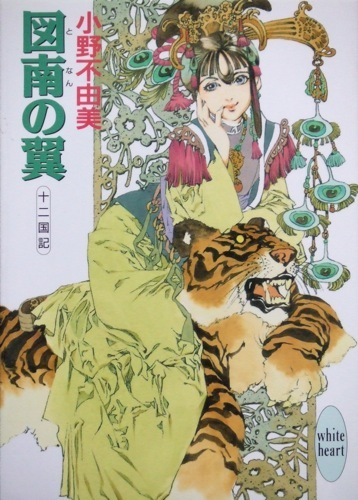
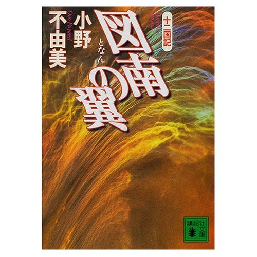

| [小野不由美] 十二国記シリーズ08 | |
| 小野不由美 | |
| (2015) | |
|
十二国記シリーズ 図南の翼
小野不由美
|




|
図南の翼 十二国記 |
序 章
世界中央に位置する黄海。その四方を四つの広大な内海が取り巻いている。そのうち北方、黒海の上空に、黒点が現れたのは早朝のことだった。
黒海西方、恭国の沿岸から飛び立った騎獣の影は、春分間近の陽射しを受けて、ときおり銀に輝きながら、一路、南西に向かって空を疾走した。陰鬱な色の海原の向こうには、淡く霞んで蜃気楼のように壁が広がる。天と海の間、上端に刻みのある長大な屏風のようにして立ちふさがった、それが黄海を取り巻く金剛山だった。
その騎獣は、船をはるかに凌ぐ速度で海を越える。にもかかわらず、金剛山の岩肌は色を濃くするばかりで、いっかな近づく様子がなかった。いや、近づいてはいる。その証拠に山頂が徐々に高くなっていた。
騎獣はさらに疾走する。天空の陽は影の真上から西へと傾いていった。すでに金剛山は前方を完全に遮っている。海から屹立する千尋の岩肌、牙のようにして幾重にも突きだした峰は、垂直に近い断崖を作りつつ高く高くと連なりながら、巨大な山脈に収斂し、天に向かって駆け昇る。
その断崖の麓に、小さな砂州が見えた。騎獣はその、金剛山に比べればほんの小さな凸部にしか見えない砂州を目指し、大きくゆっくりと弧を描いて下降していった。近づくにつれ、それが砂州などではなく、広い土地なのだと分かる。さらに近づけば、金剛山に向かって傾斜した土地の海岸線が明らかになった。岸部の北には港がある。渋色の帆を揚げて、今しも船が入ろうとしていた。
さらに高度を下げ、港上空を滑空した獣は、まっすぐ金剛山を目指す。田に小さな影を落とし、黒々とした土の上には濃い滲みを落とす。梢が細かく芽吹き、霞でもかかったような山林をかすめ、閑散とした廬や、古びた里の空を撫でて切り、ひとつ土地を抜けるたびに降下して、やがて最果ての街にたどり着いた。金剛山に連なる小さな峰の、その麓に広がるひとつの街。
街は四方を隔壁に囲まれ、金剛山に続く峰に寄り添うようにして広がっていた。門前へと向かう道はただひとすじ、そこでは傾いた陽射しに長い影を落としながら、旅姿の人々が街へ向かって急ぎ足に流れている。そのうちの幾人かが頭上を振り仰いだ。上空から舞い降りた影に、ぎょっとしたように足を止め、あわてて前後左右に散る。そうしてできた間隙に、その騎獣は降り立った。
「何だ、何だ」
「騎獣を降ろすなら、道でなく閑地におし」
往来からは声が上がる。それに頓着したふうもなく、騎獣から一人の男が飛び降りた。三十を幾つか越えたその男は、周囲の人間には視線もくれず、その街の門に掲げられた扁額を見上げた。
──乾城とある。これがこの金剛山に砂州のように突出した土地、恭国乾県の県城である乾の街なのだった。
男はその扁額を一瞥してから、軽く上体を反らして手足を伸ばした。それから騎獣の手綱を取り、乾の街へと入っていく。人波でごった返す広途を抜け、街の北西部にある舎館のひとつに入っていった。
「いらっしゃいませ」
彼が舎館の古びた石造りの門をくぐると、門の脇で塵を拾っていた子供が、澄んだ声を上げ、あわてたように駆け寄ってきた。彼はその子供の顔を見て、大きく破顔する。
「へえ、おまえ、小明か」
だけど、と不審そうに言った子供に、彼は屈みこんだ。
「頑丘だ。覚えていないか？ ずいぶん遊んでやったろう」
「頑丘おじさん？」
「そうだ。思い出したか？」
「ずいぶんいっぱい久しぶりだねえ」
少年はくしゃりと笑った。頑丘はその子供の額を親しみを込めてつつく。前に見たのは二年前だったか、当時で十歳、父親の家業を手伝ってあちこちの雑用をしていたが、まだ客の相手はしていなかった。
「ようやく門番に出世したか？」
揶揄って頑丘は子供に手綱を渡す。
「じゃあ、門番殿にこいつをお任せしよう。──大切にな。絶対に他人を近寄らせるんじゃないぞ」
「分かってるって」
やんちゃそうに笑って、子供は頑丘から手綱を受け取った。ほんの少しおっかなびっくりの様子で強面の騎獣を見上げる。
「前にもこんな騎獣だったっけ？」
「前のは死んだ。妖魔にやられたんだ」
子供は頑丘を振り仰いだ。
「襲われたの？ おじさんはだいじょうぶ？」
「ご覧の通り、なんとかな。──乾はどうだ。妖魔は出ないか」
「出るよ、たまにね」
子供の口調はそっけない。それはその事態をすでに諦めているせいなのかもしれなかった。先王崩御から二十七年。国は勢いをつけて傾いている。乾はもともと妖魔に対する備えの厚い街だが、そこでさえ妖魔が出るというのだから、他の場所ではなおさらだろう。
子供は何かを忘れようとするように息を吐いて、自分が手綱を取った騎獣を見上げた。
「これ、なんていう騎獣？」
馬に似た妖獣だが、その鋭利な一角と、蹄のかわりの太い爪が恐ろしげだ。頑丘は少年の手に小金を握らせ、騎獣の背に括った荷物を下ろす。
「駮だ」
頑丘は軽く騎獣の脇腹を叩き、そのついでに少年の頭も軽く叩いて、屋根ののった小さな院子を抜け、建物に入った。ちょうど戸口を入ったところで見つけた男の背中に声をかける。
「泊まれるか？」
男は足下を見るように垂れていた首を起こし、頑丘のほうを振り返って破顔した。その動きで、男の前に小汚い少女がいるのが見えた。手持ち無沙汰そうにしているのかと思ったが、どうやらその子の相手をしていたらしい。男は子供に顔を向け、頑丘に向かって大股に歩み寄ってきた。
「頑丘じゃないか。どうした、久しぶりだな」
「さほど久しぶりでもないだろう。──部屋はあるか？」
「おお、あるとも」
亭主は何が嬉しいのか、満面に笑みを浮かべ、頑丘の手から荷物を受け取った。
「おいおい。言っておくが、そんなに良い部屋でなくていいんだぞ。とにかく寝られれば」
「そんなことは分かってるって。ちょうどこれが最後なんだ」
「そいつは助かった」
もっとも、春分が翌日に迫った乾の街なら、まあ、そんなものだろう。
「厩に騎獣を預けてあるんで、頼む」
分かった、と亭主がうなずいたところに、金切り声が割って入った。
「ちょっと、まってよ！」
亭主が先ほどまで相手をしていた子供だった。小汚い様子のその子供は、勝ち気そうな目で亭主をにらむ。
「あたしが先に部屋を頼んだのよ！ あたしには貸せなくて、どうしてその人ならいいの！」
頑丘は驚いてその少女を見やり、亭主は呻いて頭を抱えた。
「だから、お嬢ちゃん、悪い冗談はやめて、おっ母さんのとこに戻りな。宿はどこだい。送ってやるから」
「だから、冗談なんて言ってないわ。泊まりたいのよ。ここが舎館なんじゃないの？」
怒りでだろう、白い頬が紅潮している。
──面白いものを見た。
そう思いつつ、頑丘は亭主の腕を掴んで手の中に小金を握らせる。最後の部屋を失ってはたまらない。
「荷を入れておいてくれるか。俺は飯を食う」
「──ちょっと待ってよ！！」
子供は頑丘の顔をねめつけた。ねめつけるどこか、つかつかと頑丘のそばに寄ってきて、頑丘の姿を上下にながめる。
「横から割りこむなんて、恥ずかしくないの」
門番の子供と同じ歳の頃合いだろうか。頑丘は軽く笑った。
「割りこむも何も。──子供がひとりで舎館に泊まろうなんてことを考える、お嬢ちゃんこそ、恥ずかしいと思ったほうが良かないか？」
「冗談じゃないわ。子供だろうと大人だろうと客は客よ」
「じゃあ、客扱いしてくれる舎館を捜すんだな」
「あったら、とっくにそうしてるわよ！」
頑丘は失笑した。春分の近い乾は、それでなくても旅人でごった返す。春分の前日ともなれば、宿にあぶれる者さえいるのが当たり前だった。──だが、頑丘には寝場所にあぶれる気などない。
「ひとつ里を戻るんだな。あっちのほうが旅には便利だ」
「今から戻ったんじゃ、閉門に間に合わないわ！この夜空に野宿しろって言うの？──そりゃあ、あたしは確かに子供だけど、その子供が泊まるとこがなくて困ってるのよ。おじさんは道端でだった寝られるでしょ。あたし、こんなにか弱いんだもの、野宿なんてしたら、凍死しちゃうわ。そこを思いやって、譲ってやろうっていう優しさはないわけ？」
「あいにく、持ち合わせがない」
「そう。──慈悲の持ち合わせも、割りこみをしちゃいけないっていう常識もないわけね」
「そのようだな」
少女は頑丘をにらみ、そうして腰に手を当てる。まるで聞き分けのない子供に言い聞かすように、頑丘に指を突きつけた。
「あんた、いったい何をしにここに来たの？」
「──は？」
乾は最果ての街だ。街道からさえ外れた、乾県の最奥。乾より先には黄海しかない。物見遊山に来る物好きがまったくいないわけではないが、春分が近い乾に用があるのは、黄海に用のある者だけだ。
「それはこっちの言う科白なんだがな。お前みたいな子供がなんだって、こんな街に迷いこんだんだ？道をまちがえたのか？親はどうしたんだ、え？」
「迷いこんだつもりも、道をまちがえたつもりもないわ。ここは乾でしょ。──親なら連檣にいるわ」
頑丘は目を丸くした。おろおろと成り行きを見守っていた亭主もまた、驚いたように声を上げて目を見張った。
「連檣──？ そこが家か？」
「そうよ。あたしは連檣からはるばるやってきたの。この何日か、死ぬ思いをしてやっと乾にたどりついたのよ。なのに、泊まる場所がないなんて、ひどいと思わない？」
「まさか、ずっとひとりで来たわけじゃないんだろう？連れは？」
「いないわ。あたしひとりよ」
子供はきっぱりと言ったが、頑丘は呆然としてしまった。連檣といえば、この恭国の首都だ。乾までは街道を歩き、船を使って二月近くがかかる。子供の足なら二月ではきかないだろう。
「嬢ちゃんが？ 連れもなしに、連檣からここまで、ひとりでか？」
「そうよ。感心して宿を譲る気になった？」
頑丘は呆れた。この子供が、手を引いてくれる大人の庇護もなく、頑丘でさえうんざりするような長大な距離をひとりで来たというのだろうか。
「......いったい、なんだって、こんなところまで」
少女は目を上げた。頑丘を見た眼差しには、軽蔑の色が露だった。
「そんなの、決まってるじゃない。単に旅の途中で寄るのなら、街道に面した里を選ぶわ」
「決まってるって」
「──もちろんあたし、蓬山に行くのよ」
頑丘はもちん、亭主もあんぐりと口を開けた。
「昇山するの。蓬山には供麒がいるんだもの」
「ちょっと待てよ、おい......」
昇山する？
「......お前がか？」
「あら、子供が昇山しちゃいけないって法でもあるの？」
ない。少なくとも頑丘は聞いたことがない。それは確かだ。だが。
「いくらなんでも、無茶苦茶だ......」
「どうして？ 国の大人が王の器なら、とっくに玉座は埋まってるわ。だからあたしが行くの」
言って少女は、頑丘をさらに軽蔑も露に見る。
「そう言うあんただって、乾にいるってことは黄海に入るってことなんじゃないの？言っておくけど、哀れな子供がやっと見つけた宿を横取りするような人は、蓬山に行くだけ無駄だと思うわ」
「......黄海がどういうとこだか知ってるのか？」
当たり前じゃない、と少女はあくまでも頑丘に呆れたふうだった。
「廬もなければ里もない。舎館もなければ道もない」
「それだけじゃない」
「妖魔が出るんでしょ。知ってるわよ。でも、妖魔だったら、どこにだって出るわ」
「比べものになるもんか。それをどうやって旅する気だ。子供がたったひとりで、妖魔に襲われたらどうする」
「そういうあんたはどうするつもり？ 妖魔相手に必ず勝てるの？」
「俺は──」
「たとえそうだとしても、あんたじゃ行くだけ無駄よ。──だから部屋を譲りなさい」
頑丘は頭を抱えた。少女の前にしゃがみこむ。
「嬢ちゃん、あのな......」
「ここにいるのは、じきに王になるかもしれない人間なのよ。それを覚悟でまだ何か言うことがあるっていうんなら、聞いてあげるわ」
「黄海はそんな、生易しいところじゃないんだ」
それで、と少女は心を動かされたふうもなく頑丘を見る。
「俺は蓬山に行くんじゃない。黄海に入るのは確かだが、騎獣にする妖獣を狩りに黄海へ行くんだ。俺たちのことを人が何と言うか知ってるか？」
「さあ」
「猟尸師というんだ。慣れた者どうし、徒党を組んで入っても、肝心の妖獣は獲れずに仲間の死体を担いで帰る、そういう商売なんだよ」
一昨年の秋分、頑丘は騎獣をそのそばにいた仲間ごと黄海で亡くした。岩場に繋いだ六頭の騎獣と、その近辺にいた二人の仲間、計八つの血肉を食い散らし、その妖魔が満腹していなければ、おそらくは頑丘も生きては戻れなかったろう。そのまま冬至まで黄海の内側に留まり、かろうじて自分の騎獣にするための駮は捕らえた。捕らえた駮を馴らすのに手一杯で、昨年の春分には乾に来る余裕がなかった。
「おかげで蓄えも底をついた。乾まで来るのに、舎館や船を使う余裕もありゃしねえ。馴らし終わったばかりの駮の背に乗ったまま、二泊三日、居眠り半分でやってきたんだ。俺だって疲れてる。しかも金だってないんだ、実は。ここなら親父は知り合いだから、少しばかり融通してくれるだろうという肚でな」
そう、と少女は何かを考え込むようにしながら呟いた。頑丘は少女の腕を軽く叩く。
「黄海はそういうところだ。悪いことは言わない、家に帰んな。今夜の宿は──」
言いかけた言葉を切ったのは、少女が突然、汚れた薄い媼袍を脱いだからだ。その下の短い裘を脱ぎ、脱いで裏返したその裾に、ひとつずつ糸で十字にとめてあった銀貨が見えて頑丘は顎を落とした。銀貨一枚、価は五両、小役人の一月の実入りに匹敵する。それも、そうやって括りつけられているのは、一枚どころの話ではない。
少女は裘を頑丘に突きつけた。
「十三枚、六十五両あるわ。あたしを蓬山まで送ってちょうだい」
頑丘は唖然として少女を見た。
「これで雇うわ。ただし、旅の途中、入り用があればここから出すのよ」
「おい......」
少女はにっこりと笑んだ。
「あたしは珠晶よ。まず今夜、あたしに牀榻を譲って、あんたは床で寝るの。いい？」
一 章
１
風はその虚無にも似た暗黒の海からやってくる。
虚海の北には秋からこちら、ひそやかに流れこんだ冷気が淀んで寒気の塊を作る。海水はぬくもりを失い、暖かな中層は痩せ、やがて海は均一に冷えていく。緩慢な対流を繰り返す海流は、表面に浮かび上がると寒気に触れて凍り、暗い海に白い斑を描いた。海と同じく、大気もまた冷え固まって、やがてそれは凍てついた風になって溢れだす。風は海上の細かな氷塊を揺らし、白く波立て、やがて海流を逆転させるほどのうねりとなって、大陸へと吹き寄せた。──条風である。
虚海北東から押し寄せる条風は、北方沿岸に吹きつける。柳国の北東部に吹き寄せた風は、山脈に突き当たってそこで大量の雪を降らせ、柳を凍らせて駆け抜ける。国境の山々で最後の雪を落とすと、乾ききって恭国北部へと流れこんだ。
恭国首都連檣には、その名の通り凌雲山が帆柱のように並び立つ。筆を束ねたようにして幾重にも重なる峰は麓の街を抱き込むようにして弧を描き、いくつかの峰に収斂すると雲海を貫き、峰の数ぶんの小島を作った。乾いた寒風は峰の間を吹き抜け、断崖の亀裂に浸み入ってごく微かな音をたてた。ほんのわずかの音は縒り合わされ、だから連檣の冬は海鳴りのような音に彩られている。
吹き込む風と、山肌を吹き下ろす風、風は陽射しの傾いた街路のそこここで小さく旋を作り、少女の裳裾を足下から軽く巻き上げた。
「やあね」
少女は荷物を脇に抱えて、裳裾を片手で撫でつける。
「さむ......」
つぶやいたところで、背後から声がした。
「なんだ、珠晶、帰らないのか？」
振り返ると、ちょうど庠学の閑散とした院子から少年が出てきたところだった。
「もちん、帰るわ」
珠晶は門柱にもたれたままそっぽを向く。
「帰るって、お前、さっきからずっとここで突っ立ってるじゃないか」
「それをずっとながめてたわけ？」
少年は少し顔を赤くして珠晶をにらんだ。
「ながめてたわけ、なんかじゃない。たまたま目に入っただけだろ。頼まれたって珠晶なんかながめてるもんか」
「ああ、そう。べつにあたしだって頼んだりしないわ。良かったわね」
少年は顔をしかめて珠晶の澄ました横顔をねめつける。踵を帰して門の前の石段に足をかけ、そうして振り返った。
「帰らないのか？」
「帰るわよ。あんただって帰るんでしょ？ だったらさっさと行けば？」
「そういう珠晶こそ帰るんだったら、さっさと帰ったらどうなんだよ」
珠晶が軽く溜め息をついた。
「連れがいないんだもの。どこで油を売ってるのか知らないけど、置いて帰るわけにいかないから、待ってるのよ」
ははん、と少年は笑う。
「ひとりで帰るのがおっかないんだ」
「怖いわけないでしょ。まっすぐ帰るだけなんだから」
「正直に言えよ。珠晶はお嬢さん育ちだもんな。そばに誰かいないと怖くて道も歩けないんだろ」
揶揄する少年を、珠晶はきりりとねめつけた。
「そうよ。あたしはお嬢さん育ちだから、供もなしに道を歩いたりしないの。そんなことをしたら、あたしじゃなくてお供のほうが叱られるでしょ」
「怖いくせに。送ってやってもいいんだぜ」
「あんたって、人の話を端から聞く気がないのね」
珠晶が言ったところで、道を駆け戻ってくる姿があった。
「すみません。お嬢さん」
大門に駆けつけてきたのは、屈強な男が三人だった。珠晶の父親が家の護衛として雇っている杖身たちである。珠晶は待ちかねたように柱にもたせかけた身を起こし、杖身たちの姿に目をやって、軽く声をあげた。
「──どうしたの。それ、血？」
杖身たちはお互いの姿を見交わし合う。杖身たちの皮甲には点々と赤い染みが飛んでいた。
「すみません。さっき、あっちのほうから悲鳴がしたもんで」
杖身は大門の前からまっすぐに南へと延びる広途の先のほうを示した。夕暮れ近い広途はお定まりの人の波で、その中になにやら強ばった顔をして、杖身の示したほうへと急ぐ人の姿があった。
「なに、蟲が出ただけです。わたしらで仕留めてきました。お待たせしてどうも」
珠晶は眉をひそめた。先帝崩御から二十七年、ここ首都連檣にも、妖魔の姿が頻繁に見えるようになった。「蟲」と呼ぶのはそれら妖魔のうち、比較的無害な小物の総称である。だが、蟲は先触れだとも言う。蟲の群れが現れると、まるでそれらを追ってきたように、大物が現れることが多い。
「さ、急ぎましょう」
杖身が促して、珠晶はうなずき、石段を駆け下りた。少年がその後をついてくる。
「なあ、珠晶、だいじょうぶが？」
「なにが」
「おれ、ついて行ってやろうか？」
珠晶は呆れて振り返った。
「あんたがついて来てどうするのよ。そんなことしたら、杖身たちはせっかく家に戻っても、またあんたを送るために出ていかないといけないじゃない」
「でも......」
少年は言いよどみ、そしてにんまり笑ってみせた。
「どうせもう、これっきりなんだから、最後くらい面倒みてやってもいいぜ」
「いらないわ」
珠晶はつぶやいた。
「......それよりもあんたも帰ったら？ ──じゃあ」
珠晶は言い残して、大門の石段を駆け下りていく。それを見送る少年の小さな溜め息は、風がさらってかき消してしまった。
２
珠晶の家は庠学からほど近い連檣の北の外れにある。連檣は凌雲山の麓、北へ向けての上り坂の街だった。その傾いた途を登り、道観と寺院の並ぶ閑静な一隅から街の隔壁に沿ってさらに登ると、北の隔壁が途切れて、楼閣を有した壮麗な大門が現れる。
門は二層、左右の楼閣は三層、その奥には主楼の複雑な大屋根が見えていた。瓦は鮮やかな碧の釉薬、色とりどりの棟飾りと軒の下げ飾り、大門前の還途はわずかに広くなって、天神加護を願う大きな照壁が立ち、その左右には繊細な透かし窓を持つ擁壁がめぐらされ、端正な樹木の枝先が見えていた。これ以上の舘第は、連檣にはないと言われている。家公は氏を相といい、斜面に広がる園林があまりに著名なことから、相園館とも相園とも呼ぶ。
珠晶はこの家に生れた。その姓を蔡という。父親の相如昇は万賈とも呼ばれる。如昇が手を染めていない商いはない、との意味だった。恭にお定まりの林業から身を興し、連檣の豪商として名を馳せている。
連檣では、万賈の富貴に優るを望むことをあたわず、と言う。なぜなら、それ以上の富貴は存在しないからだ。それは金銭のことだけに及ばず、妻の玻娘は賢夫人として名高く、商才に優れ人格に優れた三男三女があり、年の離れた末娘があって、家族は強くまとまり、膨大な使用人は如昇をよく尊崇している。これ以上の富貴を望むことはできない、と言われるゆえんである。
その富を象徴したかのような門楼を見上げれば、窓という窓、開口部という開口部は繊細な模様を描いた鉄格子で覆われている。それに目をやり、大門をくぐりながら、珠晶はつぶやいた。
「......ばかみたい」
どれほど堅牢な楼閣を築いても、どれほど強く献身的な杖身がいても、畢方一羽が現れて、大火のひとつも起これば燃えつきてしまうのだ。旱に洪水、寒波に大風、万賈の富といえど、妖魔や災害には無力だ。
「おやおや、ばか、とは聞き捨てならないね」
唐突な声に、珠晶は顔を上げた。前院に立った人影に、杖身が一様に叩頭する。この穏和な顔をした初老の男こそが、連檣に名高い如昇だった。
「うちの末のお嬢さんは、どうにも口が悪くていけない」
「そう？」
如昇は笑んで、自分の娘を抱き寄せる。
「庠学の近くに蟲が現れたと聞いて迎えに出てみれば、珠晶はずいぶん罰当たりなことを言っているな」
珠晶は軽く首をすくめた。その様子を笑って、如昇は杖身たちを労う。
「その様子では、お前たちが仕留めてくれたようだ。よく働いておくれだね」
杖身たちは冷えた前院に額をつけた。
「だから珠晶、言っているだろう。もう庠学はやめておきなさい。お前の身に危険なだけでなく、送り迎えをする杖身にも危険だ」
「心配ないわ。庠学は閉まるの」
珠晶はすたすたと中門へ向かう。杖身を待ったせいで身体が芯冷えている。庠学から家まで歩いたぐらいでは少しも温かくなった気がしない。
「──閉まる？」
「そうよ。学頭が亡くなったの」
庠学──あるいは単に庠とも呼ぶ──は各郷にひとつしかなく、庠学において優秀な者は各郡にある上庠への推挙が受けられる。それを目前にしていたのに。庠学へなど行く必要はない、序学でやめておけと言う父親と大喧嘩までしたことも、ぜんぜん意味がなくなってしまった。
如昇は驚いたように目を見開いた。
「搏老師かね？」
「そう。今朝早く、老師のお宅のあたりが妖魔に襲われたの。馬腹が老師を食べちゃったんですって」
「──珠晶」
如昇は珠晶を追いかけて、その前に膝をついた。
「......なんてことだ」
「そんな顔をなさることないわよ。老師が亡くなったのだって、これで二人目だもの。庠学の生徒や生徒の縁者を入れると、もううんざりするくらい死んだんだし」
「そういう言い方はおよし」
「だって、本当のことじゃない」
珠晶は軽く肩をすくめた。
「それも仕方ないわよね。老師のお宅じゃ、窓に格子が入ってなかったんだもの」
珠晶は言って、前院を見渡した。前院に面した全ての開口部にもまた、美しい模様の鉄格子が入っている。壁には毎日真新しい漆喰が塗り重ねられ、扉には鉄の鋲が打ちつけられ、昼夜を問わず杖身が見張りに立っている。
「隣の里から来ている男の子のお父さんも死んだんですって。その子のお父さんは遠くまで桶を収めにいって、夕暮れまでに里に戻れなかったの。戻ってこないので心配して、近所の人達が探しに行ったら、十里ほど先の廬で冬を越していた人がみーんな死んでて、そこで首が見つかったんですって」
「......珠晶」
「それだって仕方ないことだわ。その子のおうちには杖身はいないし、秋に蝗が出て小麦が全部だめになって、それで桶を納めにいかないとご飯が食べられなかったんだから。その子のお父さんは、口の中に桶の代金を含んでいたんですって。妖魔に襲われて、逃げる途中で落とすまいと思ったのかしらね」
如昇は慰めるように末娘の背中を撫でたが、珠晶はその手から逃げるように主楼へと歩き始める。
「やあね。平気よ。もうぜんぜん慣れちゃって、誰が死んだってちっとも怖くないわ。小さい頃、おばあさまが亡くなって、それで怖かったのがばかみたい」
「珠晶、およし」
如昇は娘を追いかけてその肩を抱いた。抱えるようにして主楼まで付き従い、前庁の椅子に座らせた。
「......いまはいろいろと辛い時代だ」
「みんなそう言うわね」
「お前が周囲の人々を見て心を痛める気持ちは分かるが、そんなふうに投げやりになってはいけないよ」
「べつに投げやりになんか、なってないわ」
「──珠晶」
珠晶は座ったまま、父親を見上げた。
「......お父さまは昇山しないの？」
如昇はわずかに目を見開いた。
「昇山？」
「だって王さまがいらっしゃらないから、辛い時代なんでしょ？お父さまが王になれば問題なくなるんじゃない」
如昇は娘の髪を撫でて、苦笑しながら首を横に振った。
「恵まれているとはいえ、わたしは一介の商人にすぎないんだよ、珠晶」
３
「お嬢さま、お夕飯をお持ちしましたよ」
起居のほうから恵花の声がして、珠晶は筆を置いた。無意味に文字を書き散らした紙を検分しながら揃えて棚に収め、硯を始末しているところに、扉が開いて恵花が顔を出した。
「お嬢さま、学頭が亡くなられたんですって？」
「ええ、そう」
「あらまあ、またお勉強？ 庠学はもうおしまいなんでしょ？」
「そうね......」
恵花は家生で、珠晶よりもひとつ年上だった。家生とは、この家に住む下男下女を言う。彼らは給金をもらうのではなく、家族として家公に養われるのだ。最低限の衣食住は保障されるかわりに地位は低い。珠晶の家では、賃金で雇われる使用人もいないではないが、その身分に圧倒的な隔たりがあった。
恵花はその家生の子で、両親に連れられて相家に入り、小さな頃から本人も下女として働いている。その身分はともかく、小さい頃から一緒に育つので、気安いと言えば気安い。特に恵花のように歳が近ければ、よけいにそうなる。
「なんだか最近、そういう話ばっかりで嫌になっちゃいますね。──だめですよ、ふさぎこんじゃ」
「べつに、ふさいでなんかいないわ」
「あらだって、部屋でお食事をするって」
「ちょっとお父さまの顔を見るのが、嫌だっただけよ」
そうですか、と怪しむようにいいながら、恵花は珠晶を引き立てて、隣の起居へと引っ張っていく。起居の卓子にはすでに夕餉が並んでいた。
「家公さまは喜んでらっしゃいましたよね。......まあ、もともとお嬢さまが庠学に行くのは嫌がっておいでだったから」
珠晶は椅子に座り、げんなりと卓子の上の食器を見渡した。
「そうなのよね......」
「べつに構わないじゃないですか。お勉強だったらおうちでもできるでしょう？おうちには老師が雇われておいでなんだし」
珠晶は箸をとる気にもなれず、息を吐く。
「......うちの先生たちは、どうせお行儀のことか商売のことしか教えてくれないもの。第一、上庠に推挙してもらえないんじゃ、話にならないわよ」
庠学は上庠に進む準備をするためにあり、上庠は少学に進む準備をするためにあると言っていい。少学を出れば、ほとんどの者は官吏になる。──要は珠晶は官吏になってみたくて、商人の父親はそれが理解できないのだった。
「......悔しいわ。もうちょっとで上士だったのに」
上庠への推挙者を上士と言う。
「いいじゃないですか。家公さまはもちろん、お兄さまがただってお姉さまがただって、序学で我慢なすったんだから」
「我慢したんじゃなくて、庠学へ推挙される頭がなかっただけでしょ」
恵花は呆れたように珠晶を見つめた。
「また、そんなことを。いいじゃないですか、こんな立派なおうちがおありなんだもの。いったい、なんだってお役人なんか、なりたいんです？」
珠晶は湯呑みに口をつけて窓のほうを見やった。
「だって偉い官吏になったら、もうずーっと歳を取らないでいいんだもの」
「もう、そんな子供みたいなことを......」
「いいじゃない。死ななくていいし、ずーっと生きてられて、恵花のお母さんみたいにぶくぶく太って皺だらけになることもないし」
「失礼しちゃいますね。あたしのおっ母さんのことなんだから、ほっといてください」
恵花はしかめっつらをして、それから珠晶の顔をのぞきこんだ。
「召しあがらないんですか」
「......ほしくない。いまいましくて」
「何を言ってるんです」
恵花は箸をとって珠晶に握らせる。
「そんな贅沢をおっしゃっちゃ、罰が当たりますよ。最近、食べるものは本当に高くって、いまどき何でもないお夕飯にこれだけのものが並ぶなんてことは、普通のおうちじゃできないことなんですからね」
珠晶はずらりと並んだ皿を見て箸を卓子に置いた。
「......ばかみたい」
「お嬢さま」
「うちが贅沢してることぐらい、よーく知ってるわよ。でもって、普通のおうちじゃ、こうはいかないってこともね。だからって、あたしがこれを食べたり食べなかったりすることと、どうしてそれが関係あるのよ」
「お残しになるんですか？ こんな御馳走、食べたくたって食べられない人がいっぱいいるんだし、それどころか、今日のご飯にさえ事欠いてる人がいるんですよ！」
だから、と珠晶は恵花を見上げる。
「そんなことは知ってるの。お父さまのおっしゃる通り、家の中に収まって外にも出ないんじゃ知りようもないでしょうけどね、学校に行って人と会っていれば、他の家がうちのようなわけにはいかないことぐらい、嫌でも分かるわよ」
「だったら」
「だからって、それとあたしと何の関係があるの？あたしがこれを食べたら、困ってる人のところにも同じものが降ってくるの？食べられない人が可哀想だって言うんなら、それこそ、このまま持っていってあげればいいじゃない」
恵花は珠晶の言いぐさに、頬に朱が昇るのを感じた。
「......言わせてもらいますけどね、これはあたしのご飯より、何倍も立派なんですよ」
このところ厨房のやりくりが苦しくて、恵花たち家生の食事は一品減らされた。育ち盛りにはもともと決して多くはなかったから、近頃では夜中になると空腹で目が覚める。
怒りをこめて珠晶をにらむと、当の珠晶は涼しい顔で恵花を見た。
「だったら、恵花にあげるわ。あたしはほしくないの。よかったわね」
「お嬢さん！」
恵花は金切り声をあげた。珠晶はあのね、と恵花を責めるような目つきをする。
「老師のお宅には窓に鉄格子が入ってなかったから、馬腹に襲われて死んじゃったの。ある子のところじゃ、死んだお父さんの口の中から拾い出した桶代で、三日ぶりにちゃんとしたご飯を食べたのよ。あんたは安全な家の中で寝てて、とにかく飢えることなくご飯が食べられるんじゃない。あんただって恵まれてるのよ、分かってる？」
「なんてことを言うんです......」
「そういうことを適当に見て見ないふりをして、聞き古した小言を言わないでちょうだい。あたしは、ほしくないの。──下げちゃってよ、こんなもの」
恵花は今度は、顔から血の気が引くのを感じた。
「お嬢さん、あんたって人は......」
恵花が怒鳴るやいなや、珠晶は湯菜の器に手をかけて、立ち上がりざま、それを恵花にぶちまけた。
「うるさいわね！ いらないって言ってるでしょ！」
恵花は呆然としてしまった。湯菜はもうかなり冷めていて、特に熱くはなかったが、そういうことをされた、という事実のほうが恵花に衝撃を与えた。
「な......なんてことを......」
悔しいやら情けないやらで、涙が出てくる。あわててうつむいて、裾から汁を払い落としても、綿の媼袍も嬬裙も、汁を吸ってもうどうにもならない。
家生は給金をもらえない。食べることと住むことは困らない程度に保障されても、着るものまではそうはいかないのだ。年に二度、家公が与えてくれはするものの、伸び盛りの恵花は、すぐに嬬裙よりも身体のほうが大きくなる。そのうえ下働きで一日を過ごす家生の衣類は布や糸が弱るのが早かった。足りない分は古布を継ぎ、ほころびは繕ってどうにか着るのだ。それでも足りなければ、見るに見かねて誰かが古着を与えてくれるのを待つか、さもなければ新年に家公がふるまってくれる祝い金から、やりくりして誂えるしかない。
「......ひどい」
新年にもらった布で誂えたばかりだったのに。
嗚咽しながら野菜の切れ端やら、肉片やらを払い落とす恵花の手を、珠晶が取った。
「──ごめんなさい！」
手巾を出して、拭ってくれる。
「ごめんね、恵花、熱かった？」
「あ、熱くは、......ないです、けど」
「ごめんなさい、あたし、つい......」
恵花は顔をこする。しょせんは家生なのだから、珠晶を罵るわけにはいかないのだ。
涙を拭って目の前が晴れると、恵花の足元に膝をついた珠晶が、すまなさそうに恵花を見上げていた。
「ほんとにごめんね。あたし、ちょっとイライラしてて」
「いえ......いい、です」
「ねえ、ちょっと脱いでちょうだい。火傷をしてるかもしれないわ」
「だいじょうぶ、です。......ぬるかったから......」
「でも、こんな格好で居院には戻せないわ。外は寒いんだもの、凍っちゃうわよ。ちょっと待って。いま、着替えを持ってくるから」
珠晶は臥室に駆けていき、ものを引っかき回す音をさせてから戻ってきた。
「あのね、お古で悪いんだけど、これを着て。恵花にあげるわ」
珠晶が差し出したのは、綺麗な絹地のひとそろいだった。恵花は驚いて珠晶を見る。
「お嬢さん、でも」
「だいじょうぶよ、あたしのせいで恵花の着るものをだめにしたから、って、お父さまにもお母さまにもちゃんと説明するから。......一番大きなやつだから、これなら恵花にも短すぎるってことはないと思うの。それとも、あまり好きじゃない？なんだったら、好きなのを選んで」
「とんでもない！」
「ごめんなさいね。本当に八つ当たりだったわ。こんなひどいことをするつもりじゃなかったの。お願いだから、これで許して？」
恵花はうなずいた。そもそも許すも許さないもないのだし、そのうえこんな立派なものをもらえるなんて。
「あの......本当にいいんですか？ こんな立派な」
たしかこれは、珠晶が今年の新年に着たばかりの晴れ着ではないだろうか。
「許してもらえるなら、ぜんぜん構わないわ。さ、風邪をひく前に着替えて」
「あ、はい。......ええ」
恵花はその場で着ていたものを脱いで、珠晶の介添えで暖かな絹のひとそろいを身につけた。
「夢みたい......」
「そう？」
似合ってよかった、と言って、珠晶は恵花の嬬裙を手にする。
「これはあたしがちゃんと洗うわ。......ごめんね、恵花」
「いいんです、そんな」
まさか洗濯をさせるわけにはいかない。あわてて手を伸ばした恵花を、珠晶は遮る。
「湯菜が熱かったら、恵花は怪我をしていたんだもの、これくらいはしないと気がすまないわ。だいじょうぶよ、あたしはお勉強ばっかりじゃなくて、ちゃんとおうちのこともできるもの。......たぶんね」
笑って言って、珠晶は嬬裙を置いて、椅子に戻る。
「ごめんなさい。ちゃんといただきます」
恵花を居院まで送りとどけ、恵花の父母と自分の父母に事情の説明をして、ついでに小言をもらってから、珠晶は自分の起居に戻った。
しばらく椅子に座って考えこむ。よほどの時間が経ってから、軽く息を吐いて立ち上がり、椅子の上にかけた恵花の薄い媼袍を広げ、ためつすがめつしてから軽く顔をしかめた。
「......お茶にすれば良かったかしら」
珠晶は鉄格子のはまった窓を見やった。
「お出汁のにおいがするわ......」
４
舘第の裏手には、涼院と呼ばれる一郭がある。厨房に面し、井戸があって洗濯場があり、あるいは穀物を貯める禾倉があり、あるいは菜園や畜舎や魚池があって、それらの収穫を加工する禾坪や作坊がある。菜園を挟みながら、それらの棟が続いていた。
繻子の媼袍で着膨れた珠晶がその涼院に姿を現したのは、朝仕事がようやく一区切りしようかという頃だった。
「おはようございます」
珠晶の姿に気づき、頭を下げたのは、馬子と呼ばれる老爺だった。
「おはよう、馬子」
「うかがいましたですよ。庠学が閉まったとか」
「お父さまがどうこうという話なら聞かないわよ。──ねえ、白兎にご飯をあげてもいい？」
どうぞ、と馬子は大きく破顔してうなずいた。この老爺もまた家生だった。先王が斃れてその後の波乱で家財をなくし、着の身着のままで子供を抱えてこの家に雇い入れられた。三人の子供たちは別宅の、あるいは店舗の下働きとしてあちこちに散っているが、いずれも家生であることには違いがない。
「......学頭が亡くなったとか」
馬子は厩舎へと珠晶を案内しながら言う。珠晶の記憶にある限り、この老爺が、ずっと厩舎の采配をしていた。
「おかわいそうにねえ。近頃、連檣じゃ、そういう殺伐とした話ばっかりですな」
「そうねえ」
「わたしらは家公さまのおかげで安泰ですけどねえ」
「それもいつまで続くかしらね」
「そんな、縁起でもない」
馬子は言いながら厩舎の入り口をくぐった。
珠晶は厩舎の匂いが好きだ。特に冬には寝藁の匂いと多くの馬と驢馬の体温で、ふんわりと暖かいのが気に入っている。母親などは、藁くずを家の中に入れる、においがつくと言って嫌がるが、母親は馬が好きでないから、これが嫌なにおいに思えるのに違いない、と思う。
「おはよ。みんな元気ね」
一頭一頭の顔をのぞきこむようにして、珠晶は厩舎の奥へと向かう。藁を蓄えた一郭を過ぎたその向こうにお気に入りの白兎がいる。
「おはよう、白兎」
珠晶の声に柵の向こうに寝そべった白い獣が顔を上げた。白い豹のような騎獣、孟極。利口で人の意をよく察し、しかも温和で主人によく懐く。いまも、珠晶をそれと理解したのか、猫のような仕草で首を伸べて、軽く喉を鳴らしてみせた。
馬子は柔らかく声をかける珠晶に目を細めた。ずっと馬の世話で生きてきた。厩舎の仕事にはそれなりの誇りがあり、厩舎で預かる生き物には愛着があったから、珠晶がこうして同じような情愛を示してくれるのが嬉しい。
珠晶は今にも柵に手をかけて開けそうな風情で馬子を振り返った。
「しばらく遊んでもいい？」
孟極は気性が柔らかく、しかも珠晶は孟極に慣れている。何度も厩舎に来て、時には世話まで手伝うから、してもよいこと、してはいけないことを呑みこんでいた。それで馬子はうなずいた。厩舎以外にも仕事があるのだ。
珠晶は馬子を見送り、胸のあたりまである柵を上げて外し、中に入りこんだ。まだ乾いて膨らんでいる藁の上に座りこみ、寝そべったままの白兎に寄り添い、その首筋に顔を埋める。大きな頭を抱いて耳の後ろのなめらかな毛並みを撫でた。白兎の毛並みからは、藁のいい匂いがした。馬子の手入れが良いから、獣の臭気は薄い。
少しの間、馬子が馬たちに声をかけているのが聞こえたが、それが絶えて、馬子の足音が厩舎を出ていった。耳を澄ましていると、土間を踏む足音が遠ざかっていく。
「......うん」
珠晶はつぶやいて、白兎に笑いかけると、立ち上がる。上げた柵はそのまま、白兎の騎房を出て、左右を見回しながら藁山に近づいた。手前の解かれた藁の山を踏み分け、奥の四角く押し固めた藁を積みあげてあるのをよじ登り、壁との間から袋包みを引っ張り出す。昨夜のうちに忍びこませておいた荷物である。
意気揚々とそれを手にして藁の間を泳いで戻ると、大急ぎで白兎の騎房の前に戻る。何事かと不審そうに顔を上げる白兎に、軽く笑ってから壁の奥にかかっている鞍を外した。
白兎を調えるには、いくらもかからなかった。鞍を置かれた白兎は、出かけるのだと覚ってすでに立ち上がっている。
「ちょっと待ってね」
珠晶は白兎に言って、懐から一枚の紙を引っぱり出した。不思議そうにそれをのぞきこんだ白兎の首に、珠晶は腕を回す。
「馬子を叱らないでね、って」
珠晶はその紙を飼料箱の中に入れる。
「叱ったら二度と帰ってきてやらないから、って書いてあるの」
白兎はきょとんと珠晶を見上げた。
「ちょっと遠出だけど、つきあってね。お前の足なら間に合うと思うの」
語りかけたが、もちろん白兎の返答はない。不思議そうに金茶の目を瞬かせただけだった。珠晶はその頭を撫でる。
「......二十七年なのよ、二十七年。先王が亡くなられて。近頃じゃ、連檣にまで妖魔が出るようになって、どんどん人が死んで......」
厩舎の明かり取りから格子越しの空を見上げた。王を失えば、国には災厄が降りかかり、妖魔が徘徊するようになるのだという。
「なのにいい大人が家に格子をはめて安心してるの。ばかみたいだわ。王さまがいなかったら悪くなる一方だっていうのに、何を考えてるのかしらね」
釈然としたのかしないのか、見つめる白兎に笑って、珠晶は手綱を取った。
軒の下、陽射しのはいるあたりに集まって座りこみ、手仕事をしていた馬子たち使用人は、涼院を駆けてくる孟極を見て仰天した。
「お嬢さま！」
立ち上がり、呼び止めるために駆け出した馬子たちを、孟極は軽々と跳躍して越え、陽射しの中に躍り出る。
「お嬢さま、──珠晶さま！」
馬子は声をあげたが、孟極は軒に向かって跳躍し、楼閣の鮮やかな碧の屋根の上へと駆け上がっていった。なす術もなく見上げた馬子に、珠晶のかろやかな声が降ってくる。
「ちょっと出かけてくるわ」
「そんな、──お嬢さま」
「お供はいらないから」
狼狽する馬子らを置き去りにして、孟極は主楼の大屋根を駆け登る。騎乗した珠晶が軽く振り返り、手を振った。釉薬の艶やかな光沢の上に、孟極の白い尾がひらめく。楼閣の上層から四方を見守っていた杖身が、騎獣を指さした。
それにも笑って手を振って、珠晶は孟極を進める。主楼の大屋根を越えると、目の前には春めいた青空が広がっていた。
薄青にほんの微かに薄紫を溶かしこんだような空、白い雲は絹糸を吹き流したように延びていた。眼下に広がるのは連檣の駆け下る甍の波、里を背後の凌雲山に囲いこむようにして折れた隔壁は、陽射しに黄みを帯びた白、その向こうには黒い土と緑の山野、どれもこれもが春の訪れを予感させて、柔らかく光を含んでいる。
白い騎獣は甍の波を蹴って、間近の隔壁に飛び降り、驚いたように声をあげる衛兵を後目に隔壁の上を駆ける。疾走しながら孟極が、これでいいのか、と問うように、騎乗した珠晶を振り返った。
「いいのよ。連檣に孟極は白兎だけだもの。......万賈の騎獣を射たりできるわけないでしょ」
珠晶は白兎に笑って、陽射しを浴びた山野を見た。
「まだるっこしいったら、ありゃしない。大人が行かないのなら、あたしが行くわ」
どこへ、と問いかけるように再度振り返った白兎を促して、珠晶は騎獣を連檣の外へと跳躍させる。
「蓬山に行くの。──昇山するのよ」
５
世界中央に黄海がある。
その、一国に匹敵する広大な土地は、水のない海、妖魔の跋扈する人外の土地だった。そこは人の領分にあらず、また、神の領分でもない。ただ、その黄海中央に位置する五山だけが、西王母に連なる神仙の庭だと言われていた。
人と神は交わらない。人はただ祠廟に祈るしかなく、神仙はそこから祈りを吸いあげることでしか世の成り立ちに関与しないのだ、という。たとえ五山が神仙の庭であり、黄海が妖魔の住処であっても、そこは人には無縁の世界だ。だが、五山東岳・蓬山だけが人とは無縁でいられなかった。
蓬山は神獣・麒麟の生れる聖域、麒麟はその性行、仁にして、妖力甚大の獣、よく慈悲を知り世の理を悟り、天意と通じて天命を聴く。人の世界は十二に分割されており、それぞれを王が統べるが、王は出自や功績によって選ばれるものではなく、ただ天命だけが人を玉座に進めることができる。ゆえに言う、麒麟は王を選ぶ、と。
麒麟は蓬山に生まれ、そこで女仙の庇護を受けて育つ。蓬山を訪れて麒麟に天意を諮ることを「昇山」と言った。──もちろん、昇山するためには、蓬山に赴かなくてはならない。その蓬山は黄海の中央にあり、黄海は雲海を貫く峻峰で封じられている。金剛山である。
登攀不可能な険しい山脈、金剛山を越える道はただ四つしかなく、その道には門が立ちふさがる。これを四令門という。四令門はぞれぞれ、一年に一日だけ開く。北西にあって恭国に接するものが令乾門、開くのは春分、ただ一日。
その春分を目指して、珠晶は連檣を出た。孟極は飛行こそは上手くないが、空行、陸行あわせて一日に馬の三倍近い距離をかせぐ。令乾門までは遠く、珠晶ひとりの足では到底到達できるような距離ではないが、孟極がいれば旅の苦労は少なくとも三分の一になる。おまけに珠晶はたっぷりと路銀を持ち出していた。連檣に何かがあったとき、家を捨てて別宅へと逃げ出すことを考えていた父親が、当面の生活のための金銭を蓄えていたことを知っていたのだ。
父親は珠晶の行方を捜すだろうが、たたでさえ妖魔や災害に手を取られている官吏が、子供一人の行方をさほど熱心に捜すとは思えない。たとえ相家といえど、家公の所有する孟極よりも足の速い騎獣がいるはずもなく、背後から追いすがることは至難の技だろう。相家の店なら恭国全土に散らばっているが、全ての街を網羅しているわけではないし、各地に青鳥を差し向けて、どこかで待ちかまえさせようにも、珠晶の行く先など想像することさえできないのにちがいない。
立ち寄る街さえ選んで進めば、なんとかなるのにちがいない、と珠晶は思っていたし、実際、追っ手の気配さえ感じることもなく、連檣を出た六日後の夕刻には令乾門までの道のりの、三分の二近くを消化していた。
「......さてと」
さほど小さくも大きくもない里を選び、それを取り巻く閑地に白兎の足を止めて、珠晶はつぶやく。まっすぐ里の中には入らずに、裏手にある冢堂を目指した。
どんな里でも、街道は南に接し、北には墓地があるものだった。ともかくも人目につかず、ゆっくりと気を休める場所が欲しくて、珠晶は街の北に回る。さほどに大きな里ではないから、すぐに閑地の隅に建つ祠廟の黄色い屋根が見えた。
多くの墓地には囲墻がない。この里の場合もやはりそうで、それで閑地の一郭を占めた真新しい冢墓の群れが見えた。これまでに足を止めた、六つの里のどこででも見られた光景だ。盛られた土、塚に刺された梓の枝は白く塗られている。──ここでも、あれだけの者が死んでいる。
珠晶は冢堂の傍らで白兎を降りた。冢堂はおおむね、ひどく殺風景な建物だった。祠廟らしい構えはなく、冢堂の建物だけがぽつんとあって、その建物も、風雨を防ぐための壁がかろうじてあるだけ、扉さえないところに死者を祀る祭壇があるが、閑地に葬られるのは、この里で客死した者だけだから、その祭壇には満足な供養もなかった。祭壇の裏手には埋葬を待つ死者を置いて殯などを行う小部屋があって、それだけの建物だった。
珠晶は冢堂の脇にある蓋された井戸のそばに寄り、とりあえず勝手に蓋を開けて、釣瓶を落としこんだ。水を汲み上げた桶はそのまま白兎に与えて、その傍らにしゃがみこみ、白兎の背を撫でながら旅の間に見慣れてしまった墓地の光景をながめた。──いや、里をひとつ進むごとに、少しずつ新しい冢墓が増えている。
「......人は死ぬと、ああなっちゃうのよね」
棺に入れられて、穴の中に埋められて、土を盛られて、それでおしまい。
死者は虚海の東、蓬莱に生まれて仙人になるとか、魂魄が蓬山中の蒿里山に飛んで天に罪の決済を受け、悪行善行に応じて神々の世界で官位を得るとか言うが、珠晶などは、これはかなり怪しいと思う。本当にそうなら、死者ばかりがどんどん増えて、蓬山にしろ神々の住まう玉京にしろ、立錐の余地もなくなるのではないだろうか。
あるいは人に生まれ変わるとも言うが、あいにく珠晶はこれまで、死んだ祖母の生まれ変わりに声をかけられたことがない。姿形が変わり、珠晶のことさえ忘れてしまうなら、祖母が帰ってきたのじゃない。そんな者は赤の他人だ。
いずれにしても、人の行き着く先にしては、ずいぶんと寂しい風景だ、と珠晶は墓地をながめて思う。
火災などが街に及ばぬよう設けられた閑地には、建物を建てることも作物を作ることもできない。荒涼と刈りこまれた草地が広がり、あるいは瓦礫が撒かれただけの荒れ地に、そこだけ土の色も露に、塚が作られる。塚に刺された梓の枝は、冬の風に傾いて揺れる。倒れているものもあるが、それを起こして刺し直すものもいない。
死者は普通、家族が引き取る。子、孫、兄弟、親、遠く離れていても知らせを受けて駆けつけ、死者を受け取って連れ帰り、自分の土地の片隅に葬って祀る。塚を作り、梓を植え、裕福な者は祠をおき、物品を供えて供養し、季節季節には紙で作った衣類を供える。たとえ魂魄はすでに離れているとはいえ、死者を慕い、死を惜しむ心が、せめても魂魄の器を拠り所にして死者との交流を失うまいとする。
閑地の墓地は本来、その迎えを待つ間、仮に埋葬されるべき場所だ。だから、家族がよほどの遠方にいるのでなければ、殯を延長して少しでも埋葬を待つ。今は冬だからいっそうそうだ。
閑地に埋葬されるのは結局のところ、迎えに来る者を持たない寂しい死者だ。客死と言えば聞こえはいいが、旅の途中で斃れた者だけでなく、引き取る家族を持たない者も、やはり客死の扱いになるのだった。家族がなく、家族があっても死者を迎えに来る余裕がなく、あるいは迎えに来るほどの敬愛を得られず、または一家が、いっときに死んでしまい、──さらには浮民で迎えてくれる家族があっても葬るべき土地を持たなければ、必然的に客死の扱いになって、閑地に葬られてしまうのだった。
閑地に埋葬されたまま迎えのない死者は、七年で棺ごと掘り上げられ、冢堂で墓士に棺ごと骨を砕かれる。砕いた骨は府第の宗廟に納められ、それで終わりだ。
もっとも、結局のところ、人が所有する土地も国から借り受けているようなものだから、所有者が死ねば新しい所有者がやってくる。普通は廬の境界にある梓の木には、誰も手をつけないものだが、何かのはずみに梓が倒れて棺が見つかれば、掘り上げられて墓士に渡され、同じように処理されてしまう。──どうせ人など、そうやって終わってしまうのだ。
「それまでにやりたいことを、やらなきゃね」
珠晶はつぶやいて、白兎の喉を撫でた。金茶の目に笑って、媼袍を脱ぐ。繻子のそれを脱いでしまえば、その下から恵花の薄い綿入れが現れた。
「......さむ」
さすがにまだ陽が傾けば、冷えこみが厳しい。連檣からずいぶんと、南東へ向かってきたのだけれど、少しもましになった気がしない。はるか南、奏国など、冬がないというくらいなのだから、きっと暖かいだろうと期待していたのに。
珠晶は名残惜しく繻子の暖かな媼袍をたたんで、白兎の背に振り分けた荷袋の中に入れた。さて、今夜の宿をどうしよう。
恵花の媼袍を着こんできたのは、──その前に、その恵花に媼袍を脱いでもらわなければならなかったわけだが──あまりに裕福な格好をしていると、草寇の的になるだけだと考えたからだ。ところが、珠晶には孟極がいる。孟極のためには騎獣の扱いになれた厩番のいる舎館が必要なのだが、どこからどう見ても珠晶の身なりは舎館の格式にふさわしくない。しかもそのうえ騎獣を持つほど豊かなようには見えないから、どうしたって舎館の者は怪しむ。一度など、府第に突き出されそうになって、あわてふためいて逃げ出さなくてはならなかった。
「......さすがに手がつきてきたのよね......」
おおむね珠晶は、家公に命じられて騎獣を届けにいく使用人をよそおってここまでを来たのだが、十二の子供が騎獣を任され、ひとりで旅をする胡散臭さ拭えない。しかも南東へ進めば進むほど、治安はどんどん悪くなって、舎館の客を見る目も厳しい。前の街ではとうとう宿が取れなくて、冢堂の床下に潜りこんで寝た。二晩続けて寒い冢堂で寝るのは勘弁して欲しいところだし、それ以上に、今夜こそ白兎を休ませてやりたい。
治安が悪いのは、南ほど荒廃が深いからだ。災害は場所を選ばないが、妖魔は南からやってくる。特に陽が傾いてくると、妖魔の気配を感じるのか、白兎が落ち着かない。昨夜など、一晩中、唸り通しで、そのせいだろう、今日は足に力がなかった。せめて野木を探せるといいのだが──なぜなら、どういうわけだか、野木の下は安全だからだ──この寒空に野宿はどう考えても珠晶のためによろしくない。
またいつかのように、人の好さそうな住人を泣き落として宿を請おうか、それとも、うかつそうな旅人を嘘八百で丸めこんで、なんとか連れということにしてもらおうか。──しかしこれらの方法も、前の里では徒労に終わった。
「困ったな......」
珠晶のつぶやく声を聞きとがめたかのように、白兎が低く唸った。珠晶はあわてて、白兎の顎の下に手を差し入れ、喉を撫でてやる。
「ごめんね。だいじょうぶよ、今夜こそ、あんただけでも厩舎に休ませてあげるわ」
声をかけたが、白兎の唸りはやまない。そればかりでなく、白兎の目は珠晶ではなく、冢堂のほうに向いている。
「......どうしたの？」
白兎の首を抱きしめたとき、小さな音が耳に入った。
珠晶は思わず白兎を抱く手に力をこめた。なぜならその音は、白兎が喉を鳴らす音に、いたく似ていたからだ。──虎の類の生き物の声だ。恭には虎が棲まないが、虎の類に似た妖魔ならひんぱんに現れる。
それは冢堂の影から聞こえたように思った。逃げようか様子を見てみようか、珠晶は迷う。逃げたほうがいいと分かっていても、そこにいるのが何者なのか、確かめずに逃げることはどうしてだかできない。ひょっとしたら確かめないでいることが怖いのかもしれなかった。
どちらもしたくて、どちらもできない。その思いに竦んでいるうちに、再度、喉を鳴らす声が聞こえた。それと同時に、冢堂の脇からひょいと顔をのぞかせたものがある。
珠晶は喉の奥で声をあげて飛び上がり、白兎を抱いたまま逃げようとして当然のことながら転び、あわてて冢堂を振り返って、そしてすぐに息を吐いた。
「......なんだ」
白兎の頭より、一回り大きな頭がのぞいている。虎のようだが、虎でないことはすぐに分かった。虎の目が白兎と同じ金茶であることは、朱旌の見せ物で虎を見たことがあるから知っている。手綱がかかっているから、騎獣であることは明らかだ。
「おどかさないでよ、もう」
珠晶はその生き物をにらんで、そして立ち上がって冢堂の裏に向かった。騎獣は特に逃げる様子もなく、珠晶をじっと見つめている。
「......やっぱり、騶虞だわ」
冢堂の裏手にいた騎獣は、鞍を置いたまま、身の丈ほどもある長い尾を地に這わせて寝そべり、ただ首だけを仰向けて珠晶をながめている。珠晶はその目をのぞきこんだ。
「すごいわ。なんて、綺麗な目......」
黒い真珠のような色。真珠よりももっと強く、鮮やかに小さな光が隠れている。
さすがの万賈も、騶虞はもっていなかった。勇猛にして果敢、騎獣の中では最速を誇るが、たやすく手に入るものではない。確か何かの行列で、禁軍の将軍が連れているのを見かけたことがあった。
珠晶は首を傾けた。撫でてみてもいいだろうか。騎獣の中には気が荒く、主人以外には決して馴れないものもいるが、この騶虞はそうでもなさそうだった。しかも騶虞はとても利口だと聞いているし。
そっと手を伸ばしたときだった。
「こらこら」
声をかけられて、珠晶は文字通り飛び上がる。あわてて振り向くと風避けの布を被った男がひとり立っていた。
「手を出さないほうがいい。咬まれたらお嬢ちゃんの腕なんか、なくなってしまうぞ」
男はいったが、言葉のわりに本人は明るい笑顔を浮かべている。
「この騎獣、おにいさんの？ 騶虞でしょ？」
二十の始めというところだろうか。破顔すると、もっと若いようにも見えた。身なりは騶虞にふさわしく、かなり良い部類だった。
「詳しいな。よく騶虞を知っていたね」
騶虞は希少だから、早々お目にかかる騎獣ではない。
「騎獣は好きだもの。──騶虞って、咬むの？」
「機嫌によるかな。滅多に咬まないけど、咬むことがないわけじゃない。だから、うかつに触らないほうが安全だよ」
「撫でちゃだめ？」
男は笑って、騶虞の傍らに膝をつき、その首を抱えて、そら、と珠晶を促した。
「よほど騎獣が好きなんだな」
「すごく好きよ」
珠晶は言って、騶虞の大きな額を撫でてみる。見かけよりも毛並みは硬い。
「なるほど。──あの孟極はお嬢ちゃんの？」
珠晶は男の笑顔を見返した。
「......いいえ、あれは家公さまの孟極よ。白兎というの」
男は軽く声をあげて笑った。
「おもしろいお嬢さんだな。自分より騎獣の名を先に紹介するんだ」
「いけない？ あたしは珠晶よ」
「こいつは星彩」
珠晶も軽く笑った。
「あら、すてき。いい名前ね。──おにいさんは？」
「利広という」
人の好さそうな明朗な笑顔に、珠晶は内心で膝を打った。
「おにいさんは、この街のひと？ ──じゃないわよね。荷物があるもの」
騶虞の脇に置かれた行李を、珠晶は見やる。
「旅のひとだね」
「この街の泊まるの？」
「そのつもりだけど」
「お願いがあるの。......おにいさんが気を悪くしないなら」
なんだい、という優しげな──どこかおもしろがっているふうでもある──声に、珠晶は利広を上目づかいに見つめた。
「家公さまに騎獣を届けないといけないんだけど、今夜、宿を見つけられるか不安なの。あたしみたいな小さな子供が、騎獣を連れて舎館に行くなんて変でしょ？それで昨日泊まった街では、宿を断られちゃったの」
「そりゃあ、大変だったね。この寒いのに、宿なしで？」
「そうなの。冢堂の床下に潜りこんで寝たの。可哀想でしょう？」
利広は目を丸くした。
「そんな、無茶な。あちこちに妖魔が出るのを知らないのかい？」
「だって他に泊まるところがなかったんだもの」
「剛胆なお嬢さんだな。妖魔に襲われたらどうするつもりだったのかな？」
「そういうことは起こらないの。あたし、日頃の行いがいいから」
「そういう問題かなあ」
「深く気にしても始まらないわ。──でも、いくらなんでも、しょっちゅう冢堂に泊まっていたら、さすがのあたしの強運もつきる気がするわ」
「だろうねえ。──どこまで行くんだい？」
「ええと、......乾まで」
利広は軽く目を見開いた。
「乾というと、令乾門のある、あの乾の街？」
「そうなの」
「それは、本当に難儀だな。そこまで、ひとりで？」
「仕事だから仕方ないわ。──おにいさんも宿を取るでしょ？騶虞がいるから、ちゃんとした舎館を選ぶわよね？連れだってことにしてもらえないかしら。もちろん、あたしのぶんの宿代はちゃんと払うわ」
「へえ？」
「ええと、だから。......家公さまから、これはうちの家生で、こういう事情で孟極を運んでいるから、怪しまずによろしく、っていうお墨付きをいただいたんだけど、なくしてしまったの」
「おやおや」
「だからと言って、いまさら戻ったら家公さまに叱られてしまうわ。家公さまはとーっても怖い人なのよ。あたし、きっとすごくひどい目にあうわ。でも、お墨付きがなければ、舎館で変に思われてしまうし、それで困っているの。お願い、助けて」
利広は、へえ、とつぶやいて楽しげに珠晶を見つめる。
「だめからしら。......ええと、どうしてもだめなら、白兎だけでもいいんだけど......。おにいさんが絶対に嫌だっていうなら、あたしは厩番ってことで、白兎と厩舎に寝てもいいわ。あ、えーと、それも嫌なら、あたしは何とでも......」
利広は突然、声をあげて笑った。
「分かったよ。それくらいおやすいご用だ。連れだと言えばいいんだね？」
「──本当に？ ありがとう、あたし、とっても恩にきるわ」
笑ってうなずいて、利広は立ち上がる。
「それじゃあ、閉門する前に行こうか」
ええ、と白兎のもとに駆け戻る珠晶を、利広は呼び止めた。
「お嬢ちゃん、いいことを教えようか？」
「──なに？」
足を止めて振り返った珠晶に、利広はおおらかな笑みを向ける。
「嘘をつくときには、言葉は控えめにしたほうが、本当らしい」
珠晶は目を見開き、そして天を仰いで息を吐いた。
６
「子供の浅知恵ってこのことよね......」
利広のおかげで問題なく泊まれた舎館の飯庁で、珠晶は息を吐く。両手で湯呑みをくるんで、かじかんだ手を暖めた。
「そんなに捨てたものじゃなかったよ」
利広は卓子の向かい側で、こちらは酒で暖を取りながら笑った。
「慰めてくれなくても結構よ。自分ではうまくやったつもりだったから、腹が立ってるだけ」
「孟極がいたからなあ」
「白兎がいなきゃ、とても乾までいけないもの。だからって、白兎がいてもおかしくないような身なりをすれば、たちまち草寇に捕まってしまうし」
「......本当に、乾に行くのかい？」
「そうよ」
「家はどこ」
「連檣。連檣から乾なんて、とても歩いていける距離じゃないし、それにあたし、先を急いでるの」
「親がいるんだろう？ ちゃんと断って出てきたのかい？」
「断るわけないでしょ。乾に行くだなんて、許してくれるはずがないもの」
言ってから、珠晶は利広を見上げた。
「......あ、違う。嘘よ。忘れて」
利広は、くつくつと笑う。
「もう聞いてしまったな。──べつにだからって連檣の府第に連絡する気はないよ。お嬢ちゃんが迷子なら、連絡をするけどね」
珠晶は溜め息をつく。
「油断がならないわ。おにいさんって、人が好さそうに見えるから、つい口が滑るのよね」
利広は声をあげて笑った。
「それは誉め言葉と取っておこうかな。......家の人に黙って出てきたんだ？」
「そう。家出中なの、あたし」
「おや。それはおおごとだ。──それで乾まで？乾に何かあるのかい？」
「令乾門があるわ。あたし、蓬山に行くの。だからってべつに、蓬山に知り合いがいるわけじゃないわよ」
利広は笑みを消して瞬いた。
「昇山するのかい？ お嬢ちゃんが？」
「いけない？」
利広はほんの少し、真剣な面持ちで珠晶の顔をまじまじと見つめた。珠晶はその目線に何かしら気後れするものを感じて、自然上目づかいになる。
「......いけなくはないな」
言って、利広はうなずく。
「そうだな。いけなくはない。──けれど、ここから乾までは、まだまだ距離があるからね。私は南から来たけれど、ここより南はさらに治安が良くない。宿を取るのは大仕事だな」
「そっか......」
珠晶は唇を噛んだ。認めたくないが、甘かった。孟極さえいれば、苦もない旅だと思っていたのに。
「そうだね。何か書きつけがあったほうがいいだろうな。この子に騎獣を預けたので、便宜を図ってやってほしい、とか。官の証印がもらえれば言うことがない。どう言いつくろっても、お嬢ちゃんが騎獣を連れてひとりで旅をするのは、妙な話だからね」
珠晶は目を見開いて、利広を見上げた。
「協力してくれるの？」
「お嬢ちゃんは、蓬山までの道のりがどういうものだか分かってるね？」
「分かってるわ。危険だって言いたいんでしょ？」
うん、とうなずいて、利広は再び笑った。
「それが分かっているなら、ま、いいだろう」
利広は翌朝、府第に赴き、秋官を立会人にした証書を用意してくれた。それが実際にどういうやりとりの末に発行されたものであるかは、珠晶も知らない。府第自体は、珠晶のような子供がうろうろできるような場所でもなし、白兎と利広の騶虞を連れて表で待っているしかなかったからだ。
「これでいいかな？」
利広の差し出した証書は、昨夜、舎館で珠晶と相談のうえ、誂えたものだ。そこに立会人となる官吏の署名と朱印が入って、たいそう立派なものになっていた。
「......ありがと」
「気に入らないかい？」
「そういうわけじゃないけど」
騎獣の所有者は父親の名前、運ぶのは珠晶の名前になっている。ここで利広の名を書かれて、後になって白兎の所有権を主張されてはたまらない、と思ったのだが、利広には端からそういう気はないようだった。その父親の名も、相如昇と氏字で書かれてしまえば、どこで相家の店に知れるか分かったものではないが、姓名ならばさほどの心配はないだろう。
──だが、と珠晶は思う。旅人の利広が、どうしてこんな書状に官印をもらうことができるのか、そこがどうしても釈然としなかった。
「おにいさん、住まいはどこ？」
「遠いところ」
「遠い？」
うん、と利広はうなずいた。
「奏。──分かるかい？」
「分かるわ。南の国ね？ 有名な？」
その長い治世と富裕で高名な奏の国。では、やはり利広は、この街に住んでいるわけではないのだ。
秋官は、罪人を裁くだけでなく、交わされる契約の証人になり、それに類する覚書の立会人となる。公に、まちがいのない書面であることを保証してくれるのだ。そういう仕事が秋官にあることは、珠晶も庠学で習ったから知っている。秋官の証印がある証書が、どれほど信頼されるものであるかも。
だが、そういう性質のものだからこそ、官吏は出された書面に黙って証印を捺してはくれないだろう。当然、身元を明かす必要ぐらいはあるのじゃないだろうか。利広は旅人だから、旌券を見せたはずだ。そして、証書に書かれている名前は、利広の名前ではない。
「どうした？」
「......どうして秋官が証印をくれたのかと思って」
ああ、と利広は笑う。
「そりゃあ私は、お嬢ちゃんよりも嘘をつくのが得意だから」
「それって、あたしを騙してるってこと？」
そういうわけじゃない、と利広は騶虞の手綱を取って声をあげて笑う。
「まあね、いろいろとあるんだよ。こういうことにはやり方がさ」
珠晶は懐に手を突っこんだ。
「──いくら？」
「いくら？」
利広は瞬く。
「そういうことなんでしょ？ 立て替えてもらったんだもの、払うわ。官吏にいくらか掴ませたんでしょ」
「どっから習ったんだろうね、そんなことを」
「あら、そんなの、商人の常識よ」
利広は笑って、珠晶の腕を軽く叩く。
「そういうことじゃないよ」
「でも──」
利広は珠晶の前に屈みこんだ。
「もうじき店の開く時間だ。だろ？」
「ええ、そうね」
「店が開くと同時に、商人たちがどっと書面を持ってくる。朝一番はそういう仕事で、秋官はてんてこまいだ」
「......そう？」
「そこに男が駆けこんできて、近くの街で父親を亡くした不幸な娘の話を始める、と」
「......あたし？」
「そう。死んだ男は兄に使われていて、娘と一緒に騎獣をどこかへ運ぶ途中だったんだけど、哀れなことに草寇に襲われ、娘を庇って死んでしまって、娘は気丈にもそこを命からがら抜け出して、もとより責任感の強い感心な子だから、父親の供養よりも父親のやり残した仕事を自分が片づけるほうが先だと考えてだね、この寒空の中、涙を凍らせて旅を続けてきたのだけれども、あいにく騎獣が徒になって宿が取れずに──」
立て板に水でまくしたてる利広の袖を、珠晶は引っ張った。
「あ、あのね」
「なんて偉い娘だろう、そう思わないか、ねえ、きみ。だいたいこのご時世は、なんだ。そもそも兄弟で使うの使われるの、その兄というのがひどい男で──」
「と、言ったの？」
「官は、店の開く刻限を気にする。ともかくも忙しい時間までに目の前の書面を片づけたい気分でいっぱいだ。にもかかわらず、目の前の男は哀れな娘の話をやめようとしない──と、いうわけ」
「......呆れた」
利広はどこまでも快活に笑う。
「嘘はたくさんついたほうが、良い場合もある、ということだね」
「とっても勉強になったわ」
珠晶は肩をすくめてから、利広を見上げた。
「ねえ。どうして、そこまでしてくれるの、って訊いてもいい？」
利広は立ち上がって、改めて騶虞の手綱を取った。
「それは訊きっこなしだ。私だってお嬢ちゃんに、どうして昇山するのか、と訊かなかっただろう？」
「どうしてもこうしてもないわ。あたしより他に、ろくな人間がいないからよ」
「そうかい？ ──ともかく、気をつけてお行き」
「おかげで、だいじょうぶだとは思うわ」
「乾まではね。性根を据えないといけないのは、それからだ」
「ええ。──ありがとう」
利広は笑み、そして騶虞を促した。珠晶はしばらく、遠ざかる利広を見送っていた。
７
利広が取ってくれた証書のおかけで、珠晶はその後、宿に困ることがなかった。予定通りにまっすぐに街道を抜けて黒海へ抜けた。
珠晶はそれまで、海を見たことがなかった。ほとんど連檣を出たことがなかったのだから仕方がない。広大な水面に驚き、そして初めて心細く感じた。連檣は凌雲山に抱きこまれた街だ。そこに生まれ育った珠晶にとって、こんなにも見晴らしの良い場所は寄る辺なく感じられてならない。
「いろんなところがあるわね。......行こ、白兎」
珠晶の不安を感じ取ったのか、同じく不安そうな白兎を撫でて、珠晶は騎獣を疾風の速度で進ませる。
黒海沿いの街道を数日、南下し、臨乾の街を目指す。臨乾は恭国の突端にある。乾海門を隔てて対岸は乾県、令乾門のある乾の街はそこにあった。
「春分までまだ、六日あるわ。白兎のおかげね」
そして、利広の。
騎乗した珠晶に首筋をいたわるように叩かれ、白兎はいっそう足を速くする。白兎は先に進みたかった。なぜだかは分からない。南から風が吹けば、旅の疲れさえ忘れて気が逸った。珠晶の手綱がなければ、このまま目の前の青く広い場所を駆け抜けて先へと行ってみたくて仕方がない。
「そんなに急がないで。昨日みたいに足に怪我するわよ」
珠晶が手綱を引いても、白兎の足は衰えない。街道に沿って山野を駆け、森を林を文字通り飛び越えていく。ひとつ里を過ぎるたび、珠晶は指を折る。臨乾まで、あとひとつ。
陽は傾いて、西の山の稜線に向かって滑り落ちようとしていた。空が朱に染まるまでにはまだ間があるが、白兎が地上に残す影は長い。夕暮れになると、山の色が深くなるだけでなく、海の色もまた深くなるものだと珠晶はこの旅で知った。
白兎が廬を飛び越えようと短く飛翔して、臨乾が彼方に見え、そして同時にそれが一瞬、見えた。
「白兎......」
珠晶は白兎の手綱を引く。そのまま空に留まっていたかった。下降を始めた白兎にそれが通用するはずもなく、それに目を奪われたままの珠晶の視線は虚空を薙いだ。
「......白兎、飛んで」
言葉を察し、白兎は地に降り立つやいなや、渾身の力で飛翔した。白兎自身の視野が開け、同時に白兎に騎乗した珠晶の視野も勢いをつけて開ける。
眼下に広がるのは淡く春めいた山野、近くの廬が黒ずんでいるのは、火災でもあって焼けたからだが、とりあえず珠晶の目には、その荒廃の爪痕は映らなかった。目に入ったのは、波頭に白く縁取られた海岸線、海に向かって突出する岬と、その付け根あたりにある港町、さらには屈曲して広がる灰色を帯びた海、──その向こうに、淡く。
裾野は空の青に溶けこみ、かろうじて見取ることのできる稜線も色調の違う青、ほんのわずか、薄紫を帯びた青に壁のような青い影が。
──海の向こうに、巨大な何かが浮かんでいる。
西に傾いた陽射しにほのかに陰影を見せ、海上に帯のように広がるそれ。ひときわ明るい一角が、飾り彫りされたような稜線を明らかに、そこから左右へと長大に延び、やがて青の中に溶けこんで消える。
「......金剛山」
なんて、大きい。
珠晶は肌が粟立つのを感じた。思わず手綱の片手を放し、捜した白兎の毛並みもまた、毛足に空気をためるようにして逆立っている。
黄海の隔壁、あの巨大な壁の向こうが人外の土地、その中央には五山が。
来たのだ、という思いと、あれが、という思い。凌雲山の麓に生まれ、育った珠晶にさえ信じられないほどの巨きさ。
跳躍の頂点に達した白兎は、緩やかに、そして徐々に速さを増して下降する。その青く霞んだ壁は、山野のうねりの向こうに消えた。
「あれが、金剛山......」
珠晶はつぶやく。次いで白兎の首に顔を埋めた。
「行こう、白兎。あれが、金剛山よ」
白兎は珠晶を振り落とす勢いで地を駆ける。坂を登りきり、なだらかな斜面を下って街道に出、そのまま臨乾の門前を通り過ぎたが、珠晶も手綱を引いたりはしなかった。白兎は途切れた街道を通り過ぎ、灌木の繁る丘を越える。越えたそこが岬の突端だった。
青い海、そして、そこに浮かんだ金剛山の陰影。
突端にたたずむ珠晶の前で、それは薄紫を帯びた青から藍へと色を変え、西日に稜線を白くきらめかせて黄昏の中に溶けて消えた。──いや、それほどの時間、珠晶はそれを見守っていたのだ。
８
臨乾は港を擁する。この港から一日に一便、乾県へと向けて船が出ていた。白兎はとても海を渡ることはできない。それでなくても、飛行する騎獣だって船に乗せる。そのほうが明らかに騎獣にとって楽だからだ。
渋色の帆を揚げた船は、半日をかけて乾海門を渡る。朝に出た船は昼過ぎに臨乾へと戻る船影とすれ違い、夕刻に幾分間をあけて対岸の港に入った。その間、珠晶は甲板で山を見ていた。幾度か遠く、海上を妖魔のものらしい影がかすめてすれ違っていったが、とりあえず船が襲われることはなかったし、船室に追いやられることもなかった。
船は条風の名残の北東の風を受けて進む。海は切り裂かれ、白い波になって割れていった。甲板に落ちた帆柱の影は、長く、そして短くなり、東に向かってまた延びていく。戻る船の船影を海上の彼方に見かけた頃には、すでに金剛山は前方を完全に遮っていた。
船の到着を報せる鐘の音が、海面を這うようにして響いた。
「ちゃんと着いたじゃない」
珠晶は、得意満面で船を降りた。ここまで来れば、乾までは歩いても三日程度の距離、白兎の足なら一日でいい。船が着いた北乾の街は、乾県の表口とはいえ、そもそも乾県が辺境だから、さほどに大きくなく、宿を探すのにもちょうど良かった。
下船した人々に混じって街に入り、宿を探そうと街路を曲がったところで、背後から軽く肩を叩かれた。
振り返ると、立っていたのは丸い顔の中年の男で、これが笑みをたたえている。
「お嬢ちゃん、そりゃあ、孟極じゃないかい」
旅の途中でも何度か聞いた声だ。珠晶のような騎獣好きは多い。
「そうよ」
男は屈みこみ、子供のようにふくふくした手で、白い毛並みを撫でた。
「おとなしくて、立派な騎獣だ。──うん、いい目をしてらあ。大事にしてもらってるな」
男はにこにこと白兎の耳の後ろを掻き、珠晶を見上げた。
「こんな見事な孟極には、初めてお目にかかった。お嬢ちゃんの騎獣かい？」
「いいえ、家公さまの騎獣よ」
男は珠晶の薄い媼袍に目をやって、にこりとうなずく。
「そうか、そりゃあ、そうだろうな。騎獣を大事にするのは、あんたの世話がいいからかい、それとも家公さまが大事にするからかい」
「家公さまが大事になってるのよ。──あたしも大事に世話をしているけど」
そうか、そうか、とうなずいて、男は立ち上がる。
「いい家公さまだろう。騎獣を大事にする人は、使用人も大事にする」
「それはどうかしらね」
珠晶は言って、男を見上げる。
「もう行ってもいい？ あたし、舎館を探さないとといけないの」
「なんだい、旅の途中かい？」
「そうよ。おじさんは街の人？ だったら、良い厩舎のある舎館を知らないかしら」
「良い厩舎なのかどうだか知らないが、騎獣を連れた連中が良く泊まる舎館なら知ってるぜ。案内しよう」
「そんな、道を教えてくれればそれでいいわ」
「なに、一回、騎獣の手綱を取ってみたいんだ。おれが案内していくから、その間、孟極の手綱を取ってちゃいかんかね」
「だめよ、家公さまのものですもの。ちょっとでも人に預けたなんてばれたら、叱られてしまうわ」
そうか、と残念そうに男は言って、やはり笑った。
「用心深い嬢ちゃんだ。なに、騎獣を預かるものはそうでないといけねえや」
男は破顔し、そして、珠晶の腕を掴んだ。
「ちょっと」
何をするの、と声をあげる間もなく、男が怒鳴った。
「この盗人が！」
「──え？」
珠晶は呆然と男を見上げ、同時に途を行く人々もまた、何事か、というように足を止めて男を見た。
「おれの騎獣だ！ 返せ、この餓鬼が！」
珠晶は一瞬、気を呑まれて、形相の変わった男の丸い顔をぽかんと見上げた。
どうした、と人の群れから声が上がる。これに対して、男は声を張り上げる。
「この餓鬼が、おれの騎獣を盗みやがったんだ！──まったく、近頃の子供は油断がならねえ」
吐き捨てるように言って、男は掴んだ珠晶の腕をひねる。痛みのあまり、珠晶は声をあげた。かろうじて、違う、と叫んだものの、果たしてちゃんと言葉になったかどうか。
「ちょっと待ちなさいよ」
人垣から女の声があがった。
「そりゃあ、その子の騎獣だ。あたしゃ、一緒に船で乗ってきたんだもの」
「だろうともよ。おれはこいつを、臨乾の向こうで盗られたんだ。騎獣のまわりをちょろちょろするんで、怪しいと思ってたんだ」
「まあ......」
「違うわ！」
珠晶は声をあげたが、肩が抜けそうな痛みにその先が言えない。
「なにが、違うだ。──ほら、この通り、こっちにゃ証書があるんだよ」
男が懐から書面を取り出し、広げてかざした。
「孟極がおれのもんだって証書だ。こっちが、盗まれた届け。どっちも証印がある」
今や珠晶と男のまわりには人垣ができており、その誰もが同情したような視線を珠晶にではなく、男のほうに注いでいた。
まったく、と男は吐き捨ててさらに珠晶の腕をねじりあげた。
「どうせろくでもねえ大人が裏にいるんだろう。お前みたいな子供に運ばせるたあ、ばかなこった。どこからどうみても、お前みたいな餓鬼が騎獣を連れてりゃ怪しいに決まってるじゃねえか」
男は言って珠晶を小突き、突き飛ばす。
「冗談じゃないわ！ それはあたしの騎獣よ！」
珠晶は叫んで、懐に手を入れる。利広にもらった証書を引っぱり出した。
「証書ならあたしだって──」
言い終わる間もなく、男はそれをひったくり、二つ四つに裂いた。
「こんなもの！」
珠晶はその強引なやり口に唖然とする。
男は裂いた証書を丸めて捨てる。白兎の背の荷物を解き、その場に放り出した。
「府第に突き出さないだけ、ありがたいと思え！」
男は言って、間髪入れずに鞍に飛び乗る。白兎は一瞬、珠晶のほうを困惑したように見たが、男の激しい叱咤を受けて狼狽したように走り出した。
「ちょっと、待ってよ！ ──待ちなさいよ、白兎！！」
雑踏が割れて白兎を呑みこみ、閉じた。あわてて駆け出そうとした珠晶の肩を周囲の大人が掴む。
「放して！」
「どうする、こいつを府第に──」
「しかし、盗まれた当人が」
口々に言う大人に、珠晶は叫んだ。
「違うわ！ そこに証書があるわ！ あいつが盗人なのよ！！」
珠晶と白兎の消え去ったほうを見比べ、旅人ふうの男が、途に転がった紙つぶてを拾い上げた。開いて紙片をつきあわせ、ぽかんと口を開く。
「──本当だ」
「だからそう言ってるじゃない！ なんて間抜けなの、大人のくせにっ！」
あわてたように小走りに駆け出す者があり、書面をのぞきこもうと、集まった者があった。
「まちがいなく証印がある」
「しかし、あいつも」
「ちらっと見ただけだ。まじまじと見たわけじゃねえ」
暢気な詮議をしている大人たちの手を振りほどき、珠晶は走り出したが、もちろん広途のどこにも、白兎の姿は見えなかった。何人かの大人が珠晶の後をついてきて、一緒になって探してくれたが、手近な門を出ていったことが分かっただけだった。
「その......すまなかつたな、嬢ちゃん」
言って男が珠晶の荷物を差し出した。拾ってくれたのだろう。それを珠晶はひったくる。白兎の背に振り分けていた二つの荷袋は、珠晶が抱えるにはいささか大きすぎた。思わず膝をついて、珠晶は息を吐く。
「ええと、嬢ちゃん......その、府第に行くかい？」
珠晶は男を振り仰いだ。
「......府第はもう、閉まるんじゃない？」
「じゃ、明日──」
「ともかく、お礼を言うわ。荷物をありがとう。一緒に捜してくれたのもね」
「......いや。でも」
珠晶はすっかり黄昏れた風景を見る。もちろん、白兎の姿はどこにもない。
「仕方ないわ。今は先を急ぐほうが先だもの。......白兎がいないならなおさら」
つぶやいて、困惑したように立ちつくす数人の大人たちを見上げた。
残りの旅程は大人の足で三日。珠晶の足ではきわどいところだ。──だが、たどりついてみせる。
「どこか、安くて安全な舎館を知らない？厩舎はなくていいわ」
二 章
１
春分の未明、乾の街で少女に出会った男は舎館の亭主に引きつった顔で送り出された。
雑踏に押し流され、暗い道を駮の手綱を引いて歩きながらも、頑丘は溜め息を止められなかった。食事を摂る間じゅう、ぜったいに無謀だと、諄々諭したのに、珠晶はまったく聞く耳を持たなかった。それどころか、小言を聞きながら飯庁の卓子に突っ伏して寝てしまって、そうなるともう腹を括るしかない。
黄海には慣れている。昇山の者は数も多い。家人や護衛を連れた者も多いし、健脚の騎獣もいる。べつに騎獣を狩りにわざわざ危険な場所に踏みこむわけでもなし、蓬山まで連れて行って戻るだけなら不可能ではないだろう。昇山の者を護衛したことはないが、それを仕事にしている剛氏と呼ばれる連中なら、同じ黄海に入る同朋だから知り合いも多い。苦労話は山ほど聞いているから何とかなるだろう。蓬山に留まる間、狩りもできる。それで六十五両なら、楽な商売かもしれない、と自分に言い聞かせ続けた。
「ねえ、おじさん？」
頑丘にとりついた厄介の種は、寒そうに肩をすくめながらも、無邪気に頑丘を見上げた。
「なんだ」
「どうして、布を被ってるの？」
頑丘は舌打ちをしてこれには答えなかった。頭から布を被っているのは、知り合いに顔を見られたくないからだ。こんな子供を黄海に連れて入るなど、どうあっても仲間には知られたくない。いい物笑いの種だ。
「まったく......」
息を吐くと、珠晶は笑う。
「おじさんも諦めが悪いわねえ。お金が要るんでしょ？」
そうとも、と口の中でつぶやいて、頑丘は珠晶を見おろした。珠晶は嬬裙を脱いで、頑丘が昨夜のうちに求めてきた粗末な袍を着、媼袍にくるまっている。嬬裙を脱ぐのは嫌だ、袍など嫌と駄々をこねられるかと思ったが、長い裾は邪魔になる、などと説得をするまでもなく、あっさりと着替えてくれたので助かった。
「......なあ、お前、あの金はどうしたんだ」
「盗んだわけじゃないわよ。家にあったのを、洗いざらい持ち出してきたの」
「おい」
「それと、家の騎獣とね。でも、騎獣はあんたみたいな意地悪な大人に盗られちゃったわ。ひどい話よね。そのあげくに、やっと見つけた宿まで横取りするんだから、大人って本当にどうしようもないわ」
結果として、横取りしてないじゃないか、と思いながら、頑丘は問い返した。
「騎獣？」
「白兎というの。孟極よ。分かる？」
言って珠晶は、あたりの露天をのぞきこみながら、孟極を奪われた話をする。こんな早朝に店が開いているのは、最後の最後に荷を買い足す人間がいるからだ。昨夜のうちにとりあえず二人分の荷を作っておいたものの、何か漏れはないかと、頑丘もまた店先をのぞきこむ。
「とっても馴れてて、おとなしくて、足だってすごく速かったし、あたしの気持ちが分かるのかしら、って思うくらい利口で、なのに」
悔しそうに珠晶は口を噤んだ。
「......なるほどね。そりゃ、嬢ちゃんが悪い」
「どうしてよ」
頑丘は砂糖で煮て干した杏を少しばかり求めて、それを荷の中に突っこみながら珠晶を振り返った。
「孟極は人なつこい。お前さんの騎獣だけじゃなく、総じてそういう生き物なんだ。黄海にいる孟極でさえ、餌を振ると寄ってくる。騎獣にするために馴らしてあるんじゃ、なおさらだ。人が声をかけりゃ、深く疑わずについていくようなやつだからな、孟極の手綱は絶対に放しちゃならない。街に入っても降りない。信用できる番人のいる厩舎に入れるまでは、気を抜かない」
「そう......なの？」
「そうだ。そもそも鞍を降りたのがまちがいだな。しかし、そいつは、府第に突き出されなかっただけ、運が良かった」
「突き出されたら、あたしの勝ちよ。ちゃんと証書を持ってたんだから」
「どうだかな。連中の証書も本物だぜ」
珠晶は瞬いた。
「本物？ どうして？」
「そういう悪辣な猟尸師もいるんだ。黄海で狩りをせずに、乾県で狩りをする連中がな。黄海に行く連中は騎獣を持っていることが多いから。──お前さんは、臨乾で目をつけられてたんだ。船に乗る騎獣に目星をつけて、対岸の北乾に青鳥を飛ばす。孟極が行く、とな。北乾でお前を待ちかまえていた連中はあらかじめ用意してある証書の中から、孟極のものを選んで、引っ張り出す。連中は騎獣を常に扱っているから、そういう証書ならいくらでも持っている」
珠晶はむっとして黙りこんだ。
「盗まれたという証書は臨乾の連中が取って送ったんだろうな。徒党を組んで騎獣を盗んでさばいてるんだ。今頃は範国かな。まあ、まず取り返す術はない」
「覚えてらっしゃい」
小さく珠晶がつぶやいて、頑丘は珠晶を見やる。
「あたしが登極したら、一網打尽よ。絶対に後悔させてやるわ」
頑丘は肩を落とした。
「お前、昇山するだけでなく、王になる気でいるのか？」
「あら、昇山ってそのためにするものでしょ？」
「自分が選ばれるとでも思っているのか」
「そう思って、どうしていけないの？」
はいはい、と頑丘はつぶやいた。
孟極は悪くない騎獣だ。徒党を組んだ連中が獲物として狙うくらいだから、いい値がする。それを所有していたくらいだから、相当に家は羽振りが良いのだろう。みれば、どことなく品の良さげな子供ではあるし、人にものを命じることに慣れている様子でもある。世間知らずの富豪の娘が、珠のように大事にされたあげく、思い上がって蓬山をめざす。──そんな例を聞いたことはないが、あってもおかしくはないことのような気がした。
「まあ、銭まで盗まれずに良かったな」
「そのためにわざわざ、嬬裙を取り替えてきたんだもの。貧乏くさい格好をしてれば、まさか子供があんな大金を持ってるなんて思わないでしょ？」
「小賢しいこって」
「あら、そういうのは聡明、と言うのよ」
「どうだかな」
「どうして」
珠晶は頑丘を振り仰ぐ。頑丘は騎獣を叩いてみせた。
「俺はこの金を持って逃げるかもしれないぜ？」
「おじさんってば、お利口じゃないのねえ......」
珠晶は溜め息をつく。
「おじさんの名前は頑丘、あの舎館のおじさんの知り合いの猟尸師でしょ？持ち逃げしたら、すぐさま県城に訴え出てやるわ。ここが何州だか知らないの？」
「......緯州だ」
乾県は首都州である緯州の飛び地だった。
「そうよ。緯州のお役人には、顔が利くのよ。あたしが、じゃなくお父さまが、だけど。北乾では先を急いでいたから大目に見たけど、これで春分に間に合わないようなことがあったら、ぜったいに訴え出てやるから」
「さようで......」
まったく、小賢しい、と頑丘は息を吐く。
「だが、その嬢ちゃんの口が閉じたまんまならどうだかな。黄海に入って死ぬ人間なんざ、いくらでもいる。死体を運ぶこともできんから、そのままそこに置き去りだ。そうなったら訴えようにも、訴えようがないんじゃないか？」
ふん、と珠晶は小さく鼻で笑った。
「そういうことは、起こらないの」
「なんで」
「あたしが死んだら、王さまになる人がいなくなるでしょ。天の神さまがなんとしてくれるわ」
頑丘は思わず肩を落とした。
「あのなあ......」
笑って珠晶は頑丘の手を握る。
「孟極を盗られて、ひょっとしたら春分に間に合わないかと思ったの。でも、ちゃんと間に合ったもの。きっと天がそれをお望みなのよ」
「さいで」
「あたしが王さまになったら、悪いようにはしないわ。おじさん、運が良かったわね」
いったい、この自信はどこから来るんだ、と頑丘は溜め息を落とした。
「......蓬山は遠いぞ」
「騎獣があるから平気よ」
騎獣は盗まれたのじゃなかったのか、と頑丘が珠晶を見ると、珠晶は頑丘の駮を見上げた。
「おじさんが騎獣を厩舎に預けてる、って言ってたでしょ？だから雇ったのよ」
目敏いというか、やはり小賢しいと言うべきか。いずれにしても肩が落ちるのは確かである。
「......畏れいったよ」
思わず背中を丸めた頑丘の背中を、珠晶は叩いた。
「自分と比べて、気を落とすことはないわ。あたし、近所でも賢いので有名だったんだもの」
さらに肩が落ちるばかり、もはや相槌を打つ気もない頑丘である。
２
押し黙って頑丘が歩く脇を、珠晶は小走りに歩いていた。頑丘と違い、珠晶の足は軽い。夜明け前の道は霜が降って寒く、子供の足に道のりは長く、しかも港町から半ば駆けるようにして三日の距離を踏破した足は、一晩程度の休息ではいっかな疲れが取れた気もしなかったが、珠晶はそれを少しも気にしていなかった。
本当に間に合わないかと思った。それがなんとか間に合って、前日にたどりついたというのに、道案内まで雇えた。昇山する者を護衛するのを商売にしている連中もいると聞いていたし、もちろん黄海を越えるのにはそういった人間が必要だと分かっていた。それを白兎を盗まれて、春分に間に合うことはできても、護衛を探す時の余裕はなかろうと覚悟していたのだ。それがこうして運良く、黄海に慣れていそうな随従も見つかったぐらいだから、きっとこの先も何とかなるだろう。
今は緊張よりも物珍しさのほうが強かった。街の北西から隔壁に沿って、頑丘は南へと歩いていく。広い街路は連檣と大差なかったが、道に仕切りがあるのが珍しい。連檣では広途と広途の交わった場所には何もない。道幅分の四方の四角い土地があるだけだ。ところがこの街にはそこに道幅いっぱいの建物があった。石造りの四角いがらんどうがあって、四方に大きな鉄の扉がある。隔壁や城壁にも出っ張りが多く、広途に並ぶ店はどこも門や扉を持っている。
それらを物珍しい気分で見回しながら、人波に乗って南東へと流れ、やがてひとつの門の前に出た。
「あんなところに門があるわ」
珠晶は声をあげた。
街を一周する大還途、その広い街路は、ひとつの門の前で広場のようになっている。人が流れ、淀み、その先に大きな門の箭楼が聳えていた。
「ここは南東よね？」
珠晶が頑丘を見上げると、頑丘は息を吐く。
「そうだ」
頑丘はその五重の楼閣を見上げた。
県城ならば十二方位に十二門、これが通例である。しかしながら、乾の街には辰門と巳門が存在しない。そのかわりに街の南東の角を大きく切り落としたようにして、山に向かって開いた別の大きな門があった。
「──地門だ」
宗闕の間近には峰が迫り、幾重にも重なった細かく薄い頂の彼方には夜明けの近い薄青の空に黒く、一枚の壁が立ちふさがっている。鋭利な山頂を鋸の目のように見せながら、左右に広がるその壁の、両端は滲み、未明の大気に溶けていく。あれこそが金剛山、天にまで届く峰々が千尋に切り裂かれて一条の道を作る。これが黄海の内外を結ぶ天下にただ四つしかない道のひとつなのだった。
街のどの門よりもそれが高く厚いのは、地門が黄海に向けて開く門だからだ。年に一度、扉を開く令乾門、そこからは黄海に棲む魔物が溢れだしてくる。──いや、かつて溢れた、その名残というべきだろう。黄海の外側、地門に高く厚い楼閣が築かれ、黄海の内側には何百年もの歳月を経て、堅牢な城塞が構築された。いまや黄海の妖魔が溢れだすこともなく、地門は無為に偉容をさらしている。
「大層な門ねえ」
呆れたようにつぶやく珠晶を、頑丘は見た。
「なあ、思い直したほうが良くないか？ あの備えを見ろ。年に一度、たった一日門が開くだけでも、あれだけの備えが必要なんだ。この街の建物はどこも石造りだったろう。院子にも全て屋根がついている。──妖魔が来るんだ」
空に向かって開かれた院子などというものは、この街には存在しない。あちこちに見える大屋根がいずれも青く見えるのは、瓦に銅板が貼ってあるからだ。窓は小さく、多くは鉄の格子が入り、開口部もまた小さい。扉には必ず鉄板が縦横に貼られている。広途のあちこちに設けられた建物は途城と言う。隔壁や城壁の突出部と同じく、妖魔が現れたときに、逃げこむための設備だった。襲来を知らせ待避を促す鐘を持った坐候楼は通常の街の十倍、この街は妖魔から身を守ることで成り立っている。
頑丘が言うと、珠晶は屈託もなげに笑った。
「街の人は大変ね。でも、あたしたちは心配ないわ」
「その自信がどっから来るんだかな」
呆れたような頑丘に、珠晶は澄まして答える。
「天帝の加護があるもの」
はいはい、とうんざりしたようにつぶやいて、頑丘が駮の手綱を引いた。人の波は門前で滞って動かない。まだ閉じている門の、すぐ内側にいるのは兵士の一群のようだった。歩墻には明々と篝火が焚かれ、無数の兵士の姿が見える。これほどの人にもかかわらず、広場には喧噪がなかった。低いざわめきがあるばかり、冷たい夜明け前の空気すらが張りつめている気がする。
「静かね......」
「それが普通なんだ。これから黄海に行くんだからな。いったん入ってしまえば、夏至までは出られない。みんなそれを分かっている」
「ふうん......」
珠晶がつぶやくと、頑丘は珠晶を促した。人波をかき分けるようにして門の南に向かう。広場の南、地門の脇には祠廟があった。薄闇の中には紫煙が漂い、人が群がっていたが、珠晶は連檣で、そういう祠廟を見たことがなかった。
門もなければ院子もない。隔壁に密着するようにして建った祠は横に長く、無数の灯明台が立っていた。頑丘はその祠に向かい進香する。ぽかんとそれを見やって、珠晶は祠の中をのぞきこんだ。普通、祠廟には多くの神仙が祀られているものだが、ここには像が一体しかなかった。誰の像だろう、暗がりに黒ずんで姿形がはっきりしないが、皮甲をつけているのは分かる。まるで披巾のように細い帯を身にまとっていて、一度見た寺院の神将像を思い出させた。しげしげと見ていた珠晶の頭を、頑丘が下げさせた。
「ちょっと、おじさん」
「おとなしく無事を願うんだな。ここから先は人の世界じゃない」
地門の外──黄海では人の秩序は通用しない。もはやただ、神仙に加護を願うしかないのだ。
祭壇の脇には水を満たした桶がある。そこに無数に浸けられているのは桃の枝だ。まだ葉のないその枝を頑丘は取り、水滴をかけるようにして自分と珠晶と駮を払い、枝は駮の鞍に刺した。桶の脇の石壁には、小さな札が無数に下がっている。そこから札を三つ取り、そのうちのひとつを珠晶の首にかけた。
「なに？」
「お前さんには必要ないかもしれないが、いちおう着けておくんだな」
珠晶はその木札を手に取って見た。
「──お札？」
「犬狼真君の護符だ。黄海を往く者を守ってくださる」
頑丘は言って、その古びた札を自分と駮に着ける。墨の色も滲んでいるが、あえて古いものを選んだ。ここで護符を借りた者は、無事黄海を出れば祠廟にそれを感謝をもって返す。古い札はそれだけ長く旅人を守ってきたことになるから、誰もが古びた札を選ぶ。
珠晶は祠を振り返った。するとあの像は犬狼真君のものか。
「犬狼真君なんて、聞いたことないわ」
「不遜なことう言うもんじゃない。黄海で縋ることのできる、唯一のお方だからな」
「神さまならたくさんいるでしょ？」
「黄海は神から見捨てられた場所だ。そこにわざわざ降りてきて、旅人を救ってくれる方は真君しかいない」
「......ふうん」
珠晶がつぶやいたところで、低く太鼓の音がした。背後の広場が、水を打ったように静まる。
──地門が開く。
３
黄海を取り巻く金剛山の、その山裾の厚みは、頂が雲海を突き通すだけに尋常の厚みではない。壁のようにそびえる峻峰、それを貫き通す広い道にも、金剛山の厚みの分の距離があった。
地門が開けば、削り取られたように迫る峰と峰の間に、広い谷が続いている。その峡谷は、地門の門前から徐々にその両岸の断崖を高くして、曲がりくねった深い峡谷の道は、実は登りなのだが、まるで地の底に向かって下っていくような錯覚を起こさせた。
峡谷の道幅は六百歩、これは騎馬を連ねて隊列が往き来できる広さである。城塞に向かう兵士を先頭に、人々は黄海へと急ぐ。道のあちこち、道の左右を挟む岩肌のあちこちには、半ば透けて薄く雪が残っていた。風はないが、温もりもまたない。
春分の太陽は長く前方の金剛山に遮られ、夜明け前の薄闇が長い。それでも峡谷が深くなるにつれ、やがてそのうえに細く川のように横たわった空は色を変え、空には弱い陽射しが注ぎこまれ始めた。ちょうど太陽が稜線に達したところで、峡谷を三々五々進む人々は足を止め、声を上げた。
峡谷の先には巨大な門が立ちふさがっている。内側に傾いているように見えるが、それはそれほど巨大であるからそう見えるにすぎない。門は二層、一層は巨大な一枚岩をくりぬいたもので、ここに人の身の丈の数十倍はある朱塗りの門扉がびったりと閉ざされてそびえている。二層の高楼は朱塗りの柱に碧の瓦、中央に小さく門があるが、これには門扉がなく、その上に扁額が黒塗りに金で「令乾門」と。
「これが......」
珠晶が小さく声を上げた。
「妖魔の絵があるわ」
朱塗りの門扉には奇妙な姿の妖魔とも妖獣ともつかぬ生き物の姿が刻印されていた。体は龍、これに大きな両翼がある。
「あれが令乾門を守るという霊獣だ。天伯という」
令乾門は高いが、飛翔する騎獣さえあれば決して通行は不可能ではない。二層には門があり、しかもその上空が開いている。しかしながら、二層の高楼には天伯がいる。これが禁を犯して黄海に入ろうとする者を雷で打、その魂魄を取って喰らうという。
頑丘にそう聞いて、珠晶は何となく粛然とした思いで巨大な門を見上げながら足を運んだ。珠晶と同じく令乾門に向かう人々は、一様に重い沈黙に包まれていたが、門前に足を止めると、いっそう強い緊張感が流れた。門前の岩棚には岸壁を削って歩墻のようなものが何層かに巡らされているが、今はそこには人影がない。──開門は午。
しばしの時間があった。峡谷の空気は張りつめたまま、やがて頭上の高楼から低く咆哮が響いた。決して大きな音ではない。低く空気の底を揺るがし、いつまでも震わせているような種類の音。咆哮というよりも、唸り。怯えたように周囲を見回す人々のざわめきが続いて、その音は唸り声からざわめきへと音色を変えていつまでも続いているように聞こえた。
「......なに」
珠晶もまた小さく声を上げた。頑丘はそれを制す。
「天伯の声だ。......いいから、見ていろ」
頑丘は門の高楼を示した。
青丹の高楼、風もなく、立ち寄る鳥の姿もない。天伯の声と人々のざわめきの残響が消えると、あたりには厳粛な沈黙が訪れた。
そしてその通行できぬ高楼の門に人影が現れた。最初、小さな黒い影にしか見えなかったそれは、門扉の一枚岩の上に立ち、そうしてふわりと宙に降り立った。ゆっくりと、沈むようにして下降してくる影は、門扉の中程をすぎたころには、ひとりの老爺なのだと知れる。どこにでもいそうなその老爺は、人々の視線を受けてゆっくりと舞い降り、朱塗りの門扉の下に降り立った。あれが、天伯。その転化した姿だ。少なくともそう、人々は言う。老爺の手足に見える黒い鋼の縛めが、その証拠なのだ、と。
老爺は門の中央に降り、誰に向かってともなく拱手した。そうして踵を返し、その巨大な門扉に手をかける。高さにして四十丈以上、幅にして二百歩以上のその門扉の、一枚の重さはいかほどのものか。──だが、それは軽々と開いた。
ゆっくりと門が開くと、同時にそこから暖かな風が吹きこんできた。人々の衣を巻き上げ、髪を散らして峡谷を駆け下る。乾の人々が何よりも恐れる、黄海の風だ。
老爺は門を開く動作で両手を広げ、門扉はゆるやかに開いていく。その向こうには、こちらと同じく隊列を組んだ兵士の一群を先頭に、まるで鏡像のように多くの人々が集まって固唾を呑んでいた。
老爺は粛々と門の内から外へと両腕を開いて歩く。門はその手に押されるようにして開き、やがて完全に開ききった。老爺はそこで足を止め、今度は門の向こうに向かって拱手して、そうして忽然と消え失せた。同時に、歓声が湧いた。
歓声は峡谷を揺るがせる。風か吹き、唸りを発し、そうして門前の先頭にいる兵士たちが駆け出した。
門の外にいた兵士たちは騎馬を急かして弓矢を握り、槍を握って正面の峡谷へと駆けこんでいく。人波の彼方に峡谷に蓋するような石造りの隔壁が見えた。黄海の内側にいた兵士たちは同じく騎馬を急かしてそれとすれ違う。労う声が行き交った。彼らは昨年の春分から一年、城塞で乾と乾へ戻る人々を守ってきた。一年を過ぎて黄海を出た喜びに歓声をあげ、弓矢を握ったまま門を越えると、岩棚の歩墻に向かって駆け上がり、そこで最後の陣を布いた。
それをかすめて騎獣が飛ぶ。一路黄海へと先陣を切って向かう騎獣は猟尸師のもの、特に彼らは明日の午までに黄海を巡って帰ってくるのだ。その後をのんびりと追うのは夏至までを黄海で過ごそうという豪気の者たち、あるいは冬至から黄海で過ごして、無事に春分に達した者たちだった。それを呆然と見守っていたのは黄海に不慣れな昇山の者たちだったが、これまたその喧噪にあわてたように、騎乗し、門の内外へと駆けて交錯する。騎馬を持たない徒歩の者も、我に返ったように駆け出した。
「すごい......」
珠晶のつぶやきは歓声と喧噪に押し流されて、かろうじて微かに頑丘に聞こえた。
「これが安闔日だ」
頑丘は笑う。黄海の恐ろしさは身に染みて知っているが、それでも四門が開く安闔日の、この儀式めいた一瞬だけは気に入っている。
「すごいのね」
「引き返すなら、これが最後の機会だ」
頑丘が言うと、珠晶は頑丘を振り仰ぐ。
「今から引き返せば、地門の閉門に間に合う」
珠晶の声は喧噪の中でもきっぱりしていた。
「いや」
「本当に、行くのか？」
「行くわよ。恭には王が必要なんだから」
「でもって、それがお前だと言うんだな」
「そうよ。そう見えない？」
勝ち気そうな目を見て、頑丘は息を吐いた。手綱を取って駮に騎乗し、手をさしのべる。
「──乗れ」
４
駮は地を城塞に向けて疾走する。安闔日の度に資材を運び、長い年月かけて作られた堅牢な城塞は、黄海で最初で最後の休憩地だ。飛翔をすれば一瞬の距離だが、すでに峡谷の上空には翼がいくつも見えている。喧噪と恭の荒廃をかぎつけて集まった妖鳥の翼だ。
峡谷は深く、上空からは見通しが利かないのだろう。ここで妖魔に捕まる不運な者は少ない。人波に遅れず城塞までを駆け抜ければ、さほどの危険はなかった。城塞の道幅いっぱいに立ちふさがる宗闕に駆けこむと、そこからは石の隧道が続いている。所々に設けた天窓から、弱く光が降り注いでていた。石と漆喰で固めた天井を切って、そこに小さく屋根がついているのだ。煙出し程度の屋根の四方に鉄柵を植えて妖魔を排除し、光と空気を入れていたが、隧道の大きさに比べ、それはいかにも頼りなかった。そこから地響きと足音がするのは、隧道の上の歩墻に兵士たちが駆け上がっているからだ。
安闔日、その一日、彼らはこの砦を死守する。絶対に妖魔に令乾門を──乾の地門を越えさせてはならない。永年の備えによって乾の街の防衛は厚い。そうやって黄海に開く唯一の水際である乾で荒廃をくい止めても、やはり妖魔は徐々に恭を侵蝕していた。それら妖魔がどこから現れるのかは分からない。金剛山を飛行して越えることはできず、四門もまた安闔日でなければ妖魔でさえ通り抜けることはできないというのに、確実に妖魔は荒廃した国にやってくる。金剛山に抜け道があるのだとも言い、あるいは黄海から各地の凌雲山に向けての隧道があるのだとも言い、あるいはかつて溢れた妖魔は王の安寧によって地下にさがり、そこで眠って国の荒廃をかぎとるや、目覚めて彷徨い出るのだとも言う。そのどれもでないのかもしれなかったし、そのどれもであるのかもしれなかった。
「乾の街は大変なのね......」
隧道をゆっくりと駮で行く背で、珠晶はつぶやいた。
「そのうち、恭全体がこうなるかもしれん。だが、他の街には乾ほどの備えはない」
「どうして妖魔なんているのかしら。......あたしが天帝だったら、滅ぼしてしまうわ」
頑丘は苦笑した。
「玉座の継ぎが天帝の座か？ お前、本当に欲が深いな」
「必要なことをきちんとやってくれる人がいないから、こんなに小さいあたしがいろいろと考えないといけないのよ」
「まあ、せいぜい黄海で命を落とさんようにな」
「あら、おじさんが守ってくれるのよ。そのために雇ったんだから」
処置なし、と頑丘が天を仰いだところで、前方に明かりが見えた。松明の明かりではない、白く、揺れることのない陽射しの光だ。
隧道を抜けると、城塞の内部だった。小さな里ほどの体裁のある、城とも町ともつかない代物だったが、頑丘の周囲で、同じく旅人が安堵したように、あるいは感嘆したように息を吐くのが聞こえた。
「すごいわ、町がある」
「町というほど大したものじゃないがな」
町の道は細い。かろうじて騎馬が二頭並べる程度の道幅、その両脇に石造りの低い建物がぴったりと続いて並んでいる。その道の頭上も石、隧道の中のような明かり取りが切られて、暗くはないが、決して明るくはなかった。湿気が淀み、四方の石材は古び、黄海に特有の熱気が籠もっている。決して居心地の良い場所ではないが、正真正銘、これが人の世界の終わりだった。ここでなら宿が──最低限の土間に寝る施設とはいえ──あり、粗末とはいえ食事も出してもらえる。そもそもは乾を守る兵馬のための設備だが、その温恵にごく普通の旅人も浴することができる。
頑丘と珠晶もまた、その恩恵に浴し、土間に休んで一夜を明かした。珠晶は、昨夜の城塞に群がった妖魔の声に眠れぬ夜を過ごしたらしく、顔色が悪い。頑丘が、最後に祠廟に参っていく、と言うと、神妙な顔つきでついてきた。同じく最後に安全を祈願しようとする人間の群れで狭い町の祠廟の前には長蛇の列ができている。
いささかの時間をかけて、頑丘と珠晶は祭壇の前に進んだ。すぐ脇にはちょうど乾の街の途城のような空間があって、集まった人々が城塞の扉が開くのを待っている。中には二人に気づいて、驚いたように指さす者もいた。わざわざ人垣をかいくぐって、珠晶の顔を見ようとする者もあった。どうやら珠晶はすでにこの城塞で有名らしかった。
「あんな小さい子供がどうして」
「供か？ 無茶な」
「まさか。午には乾に帰るんだろうよ。物好きな見物人だ」
囁き交わす声が聞こえて、珠晶はそのほうを軽蔑をこめて見やり、穴蔵のような祠に向かって一礼した。
黄海を行く旅人の鎮護、犬狼真君、柔和な顔に身体を覆った皮甲、幾条かの披巾。
「あの披巾はなあに？」
珠晶は小声で頑丘に訊いた。
「さあな。真君は鼓という妖魔の皮で作った皮甲を身につけ、妖魔に与えるための玉を綴った披巾を持つという話だ」
「妖獣や妖魔は玉をほしがるの？妖獣って騎獣のことよね？」
「妖獣の中には、騎獣になるものがいる、と言ったほうがいいだろうな。騎獣や妖魔の中には、玉に酔うものがいる」
「酔っぱらうの？ 大人がお酒を飲んだときみたいに？」
「じゃないのか。俺もよくは知らんが。ちょうどほろ酔い加減の人間のような状態になるから、酔うというわけだが」
「不思議ね。......そういうこと、庠学じゃ習わなかったわ」
「そりゃあ、そうだろう。妖魔や妖獣については、分からないことのほうが多い。妖魔と妖獣がどう違うのかも、実を言えば、よく分からんぐらいだからな」
珠晶は目を見開き、頑丘を見上げた。
「妖魔は人を襲うけど、妖獣は人を襲わないんでしょ？」
「世間ではそういうな。だが、妖獣だって不用意にそばに寄れば、人を襲う。妖魔のように、特に求めて人を狩ったりはしないが」
「へえ......」
「猟尸師の中には、妖魔と妖獣はそもそも同じもので、人を狩るかどうかで名前が変わるだけだ、と言うものもいるが、妖魔の中にも特に人を求めて狩るわけではないものがいる。妖獣は馴らすことができて、妖魔は馴らすことができない、と言うが、妖獣の全てが馴らして騎獣にできるわけでもない。国が荒れたとき、湧いて出るのが妖魔で、そうでないのが妖獣だというやつもいるが、妖獣の中にも、湧いて出るものがいる。──ただ、妖魔は飼えない。無害な蟲を捕らえて馴らそうとしたやつもいたようだが、捕らえるとすぐに死ぬ。死ぬとそれを察したように、どこからか大物がやってくる」
「どうしてかしら」
「さあな。人里を徘徊する妖魔が死ぬわけではないから、人の世界に弱いわけではないだろう。捕らえればすぐに死ぬくせに、殺そうとしてもなかなか死なん」
「......ふうん」
つぶやいて珠晶は祠の前を離れた頑丘の後を追う。
「妖魔は人を狩る。お前、本当にいいのか、それでも？」
「黄海の中には野木はないの？」
山野にあって鳥や獣の実をつける野木の下なら、妖魔も妖獣も襲ってはこない。
「黄海で野木を見た者はいない。そもそも当たり前の鳥や獣は、黄海にはいない。猟尸師の中には妖獣の木を探してる連中もいるが、見つかったという話は聞いたことがない」
「そっか、何も狩りをしなくても、妖獣の木が見つかれば簡単だものね」
「まあな。妖魔にしたって、木が見つけられれば話は早い」
「そうよねえ。野木の周囲を包囲して、生まれる端から殺していけばいいんだものね」
言って珠晶は、少し顔をしかめた。子供の実る里木・野木は神聖な木だ。どんな獣も木下では互いを襲ったりはしない。木の下にいれば妖魔といえども襲ってこない。その不思議に敬意を払って、木の見える場所では、決して殺生をしてはならない、と言う。
「妖魔には子供はいないのかしら。小さい妖魔って聞いたことがないわね」
「いない、という話だ」
「本当に？」
珠晶の問いに、頑丘はうなずく。
「俺は見たことがない。見たという話を聞いたこともない」
「不思議ね......」
「連中の生まれる木がどこにあるのか、そもそも連中の寿命はどのくらいなのか、どうして妖魔や妖獣には牡しかいないのか、智恵はあるのか、人語を解するのか、妖魔はどこから湧くのか、何をかぎつけて出てくるのか、──何ひとつ分からん、分からないから、確実に身を守る術がない」
「ふうん......」
珠晶がつぶやいた時だった。
「ああ、無事にたどりついたんだね」
明るい声が聞こえて、珠晶は人の群れを振り返った。
「──おにいさん」
物珍しげに珠晶と頑丘のほうを見る人垣の間から利広が手を振っていた。
「どうしておにいさんが、こんなところにいるの？」
目を丸くして駆け寄った珠晶に、利広は笑う。
「無事に来れたか、気になって。──白兎はどうしたんだい？」
珠晶はしゅんと項垂れた。
「......せっかくおにいさんが証書をくれたのに、盗まれてしまったの」
そうか、と利広は労るように珠晶の背中を叩いた。
「それでよく乾に着けたね。......やっぱり一緒に来ればよかったかな」
「いいの。ものすごく悔しいし、白兎は恋しいけど、これで闘志が湧くってものだわ」
珠晶が言うと、利広は破顔した。
「なるほど」
「でも、どうしておにいさんが、黄海にいるの？」
「珠晶ひとりではいろいろと困ることがあるんじゃないかと思って」
珠晶は利広の大らかな笑みを見上げる。
「......ひょっとして、一緒に行ってくれるの？」
「護衛はいたほうがいいだろう？ 珠晶はしっかりしているけど、どう考えても武器を持って妖魔とやりあうには不向きだろうから」
笑って利広は、腰に帯びた剣を示す。
それに笑い返した珠晶の肩をつついたのは頑丘だった。
「お前......こいつは」
「ああ、乾に来る途中で親切にしてもらったの。利広っていうのよ。一緒に行ってくれるんですって」
「はあ？」
「やっぱりねえ、あたしの人徳かしらね。──利広、こっちは頑丘よ。護衛に雇ったんだけど、もちろん護衛は数が多いほどいいわ」
「そりゃあ、そうだ」
言って、人の好さげな笑みを浮かべた若者を、頑丘は呆れた気分で見た。
「お前、こいつを追ってここまで？」
「やっぱり気になるじゃないですか。珠晶のような小さい人が黄海なんて」
「黄海に来ると知っていたのか？」
「珠晶がそう言っていたから」
頑丘はその笑顔に怒鳴りつけた。
「聞いたんなら、お前、笑ってないで止めろ！」
彼はにこりと笑う。
「そういうあなたは？ 止めなかったんですか？」
あっさり問われて、頑丘は思わず言葉に詰まった。
「......止めようとはしたんだが」
「止められなかったんでしょう。そうだろうと思うな」
言葉に窮して、頑丘はその脳天気そうな笑顔をねめつける。
「頑丘、喧嘩はだめよ。いい大人なんだから。護衛同士、仲良くしてね」
言って、得意そうに頑丘を見上げる少女の笑顔が小面憎い。
「......戻る気はないのか。今ならまだ乾に戻れる」
「何度訊いても同じよ。頑丘はあたしに雇われたの。──さっとと案内しなさい」
さっさと、と珠晶は言ったが、実際に城塞の、黄海へと出る扉が開いたのは、それからかなり経ってのことだった。頭上の歩墻が静まった気配がし、扉の外から開扉を促す声がして、それでようやく扉の前に佇んでいた兵士が閂を外した。
生臭いにおいと共に、強い光が射しこんで、珠晶は目を細める。兵士が促して、すでに旅装を調えていた人々は、おそるおそるというように外へと足を踏み出した。その列に続いて珠晶と頑丘が外に出てみると、生臭いのもそのはず、城塞を出た広場の隅には、恐ろしげな獣の死骸が積み重ねられていた。
「頑丘......」
あれ、と示す珠晶に、頑丘はうなずく。
「帰る気になったか？」
「冗談じゃないわ」
珠晶は言って見せたものの、思わず背後を振り返る。人の波の中に騎獣を取りに行った利広の姿を捜した。すぐに利広が出てくるのが見え、彼が珠晶に気づいて手を挙げて、その、いっかな気後れした様子のない笑顔に、ほんの少し安堵する。
城塞の上の歩墻にも、付近の岩棚の上にも、兵士たちが立って空をにらんでいた。頭上は暖かな青い空、とりあえず何者の姿も見えない。
軽く息を吐いて、珠晶は広場に集まって人々をながめ、その広場から落ちこむような傾斜で下る岩だらけの斜面を見た。その下に広がるのは見渡すかぎり緑の樹海。──これが、黄海。
左右に迫った金剛山のほかには、特にどうということもない光景に見えた。
「意外に普通なのね、黄海って」
言った珠晶の声を聞きつけて、頑丘は心中で、どうだか、とつぶやいた。頑丘は黄海をよく知っている。そうでない猟尸師は生き残れないからだ。
広場に集まった人々の群れから、三々五々離れる者たちがいる。これから次の安闔日まで黄海の中に留まって狩りをする猟尸師たちだ。後を追おうとして踏みとどまり、動かない人の群れを困惑したように振り返ったのが昇山の者たち。残ったのは総勢で五百人近い人の群れだった。
昇山の者は、それぞれが多く随従を伴う。中には数十の護衛を連れているものまであるのが普通だった。そのほとんどが武器を携行し、馬車で大量の物資を運んでいる者もいる。おそらく核となる昇山の者は、八十名程度というところか。
それを確認して、頑丘は安堵の息を吐いた。麒麟が王の選定に入り、昇山が可能になってから二十年。これほどの時間が経てば、昇山する者の数は減って当然である。たとえ恭が地元の安闔日とはいえ、これはよく集まったと言ってもいい。これらの人々の恩恵によって、頑丘たちの旅の苦労は格段に軽減されるだろう。
なにしろ、自分だけが助かればいい、などと言う輩はいない。少なくとも思っても口に出せる性質のことではない。彼らはこれから、天にその人格を試されるのだ。
彼らの随従の保護と、彼らが持ちこんだ豊富な物資の恩恵は必要になる。なにしろ、駮一頭に積める物資には限りがあり、道のりは長い。物資は何もかも最低限、間違いなく行程に足りるほどは積めないから、不慮の事態が起こって物資が尽きれば駮の健脚にものを言わせ、一気に残りの行程を飛行せねばならないところだ。だが、飛行する者は妖魔の標的になりやすい。格段に陸路よりも空路のほうが危険なのだった。
「よし、こりゃあ、ついてるぞ」
頑丘がひとりごちたとき、利広が追いついてきた。連れた騎獣を見て、頑丘は顎を落とす。
「......騶虞だ」
利広は笑った。
「そうか、頑丘さんも騎獣好きなんだな」
笑った利広の袖を珠晶は引っ張る。
「頑丘は猟尸師なの」
「へえ」
利広の感心したとも驚いたともつかない声を聞きながら、頑丘は思わずその騶虞の前に膝をつく。
「こいつはすごい。──これ、まさかあんたが捕まえたのかい」
「とんでもない。これはもらったんだ」
「もらう、って」
頑丘はさらに驚いて、造作もなく言った利広の笑顔を見上げた。騶虞一頭、捕まえて売れば、二度と黄海に入らずにすむ。
「......そういう気前のいい人間と知り合いになりたいもんだ」
「頑丘さんは駮か。これは自分で捕まえたんだ？」
「頑丘、でいい。騶虞をやったり取ったりできるような身分の人に、さんづけされたんじゃ寝覚めが悪い」
やれやれと首を振って、頑丘は騶虞を検分する。頑丘にしても、騶虞を間近で見たことは数えるほどしかなかった。捕らえそびれたことが一度、速く力強く、狡猾な獣は、あっさり罠を抜け、怒りにまかせて仲間を三人ばかり薙ぎ倒して逃げていった。死人が出なくて幸いだった、と言うしかない。
その騶虞には、白の勝ったものと黒の勝ったものがいるが、これは白いほうだった。目の前にいる騶虞のような、白地に黒の縞に見えるほうが、そうでないものよりも多い。どちらにしても変わらない、その複雑な色をした目と、長い尾。今、のぞきこむ頑丘を見返す騶虞には、気負いもなければ苛立ちもない。どこか超然とさえしていて、少なくとも、かつて見た獰猛さは感じられなかった。ここまで馴らすのも大変だろう。
惚れ惚れとして立ち上がった頑丘に、珠晶が軽やかに言う。
「あたしは利広に乗せてもらうわ。あたしが乗っても星彩は気にしないって」
「はいはい。そりゃあ駮よりも騶虞のほうがいいでしょうとも、お嬢さま。だが──」
珠晶は首を傾けた。
「あんたって、おばか？」
「なんだと」
「誰がそんな話をしてるの？ あたしたち、物見遊山に街道を行くんじゃないのよ。ここが黄海だって分かってる？」
頑丘が目を白黒させると、利広が爆笑した。
「あたしなんて軽いものだけど、それでもあたしが乗ったら、騎獣はそのぶん重いのよ。いざというときに、どちらのほうが影響がないか、って話をしてるんじゃない」
「......そりゃあ、失礼いたしました」
「星彩は、あたし程度の重石じゃ影響がないそうだから、星彩に乗せてもらうわ。──ところで、頑丘の駮は、名前をなんていうの？」
「名前なんかない」
頑丘は憮然と答える。
「つけてあげなさいよ」
「つけたきゃ、珠晶が勝手につけな。──だが、人の話は最後まで聞け。いいか、騎獣のそばを離れてはならんが、乗るな」
「どうして」
「どうせ徒歩の随従がいる。列は歩きの速度でしか進まん。歩きながらやらなきゃならんこともあるんだ。黄海に入ったら、楽をしようなどとは考えないことだ」
「でも......」
言いさした珠晶を、頑丘は遮る。
「黙って言われた通りにしろ」
珠晶は勝ち気そうな顔で頑丘をねめつけた。
「誰が雇い主だか、忘れてない？」
「忘れちゃいない。俺はあんたを無事に蓬山まで送り届けて、人の世界に帰す」
「帰り道は必要ないかもね」
「勝手に言ってろ。──俺は確かにお前の護衛に雇われたが、あれしきの金で自分の命まで売った覚えはないからな」
むっとしたように黙りこんだ珠晶から、頑丘は視線を利広に移した。
「あんたは黄海に来たことがあるのか？」
「残念ながら一度も」
「妖魔とやり合ったことは」
「それなら何度か」
頑丘は秘かに溜め息を落とした。つまりは素人二人、ということだ。溜め息を聞きとがめたのか、利広はすまなさそうに言う。
「命じてもらえれば、黄海について学ぶつもりで何でもするよ」
「もちろん、そうしてもらうさ」
力なく吐き捨てたとき、広場に揃った人々の群れが、坂に面した一角から崩れた。いよいよ動き始めた。
「珠晶は騶虞と駮の間を歩け。──行くぞ」
５
広場に布陣した兵士に送られ、人々は岩場を下った。目の前の森には、とりあえず一条の道が続いている。道幅はようやく馬車が通れる程度、金剛山から下がる沢に沿い、長い年月の間に昇山の人々によって切り開かれ、踏みならされた道だ。
集団で五山を目指すといっても、特に列が組織されるわけではない。ともかくも、離れると危険なので、誰かのそばにいる、それを全員が行うのでまるでひとつの集団のように見えるという、それだけのことだった。
岩場を下り、森に入る。ちょうど午を少し過ぎたころ、全員が休めるだけの草地に出る。朝に城塞をでれば、どうしても同じ頃合いに同じような場所に至る。休む場所を作るために枝を打ち払い、若い木を倒し、それが幾百年と繰り返された結果、こうしてそれらしい場所ができる。ちょうどそこにさしかかった頃、遠く背後から鐘や太鼓の音が聞こえた。はっとしたように誰もが背後を振り返った。いまや樹海の木立にさえぎられてはいたが、彼らの背後には令乾門がある。それが今、閉じたのだ。もはや戻る道はない。
誰ともなくそこで気落ちしたように足を止め、休息を取り、そして吹っ切るように立ち上がってさらに歩く。彼らはただ起伏と森とが続く山を下った。その間に、わずか十二歳の昇山の少女は、すでに著名になっていた。誰もがはるばる黄海まで来た勇気を褒め称えてはばからない。
「珠晶のような民がいるのだから、恭も捨てたものではない」
「この勇気を大人にも見習ってほしいものだ。国の大人子供が皆、珠晶のようなら、国が滅ぶこともあるまいに」
その賛辞は頑丘や利広にも振り向けられる。
「たった二人で少女を守って蓬山に行こうなどと、それほどの義侠心のある者は、昨今ではなかなかいない」
勇気ではなく無謀であり、義侠心ではなく単なる懐の事情だ、と頑丘は思ったが、これらの賛辞はありがたく受けておいた。今はてんでに集まっているだけの集団も、黄海を越える一月半あまりの道のりの間に、必ずそれなりに組織されてくる。基本的に徒党を組まない猟尸師ですらが、黄海にはいると自然にそうなった。やがてこのうちの誰かを指導者に組織されるのだから、敵は作っておきたくないものだ。
陽が落ちれば、妖魔は活発になる。金剛山の稜線に太陽が接した頃、誰ともなく、そろそろ野営の準備をしたほうがいいのでは、と言い出し、ちょうどそこで踏み開かれた草地に出て、それでのろのろと列が止まった。何しろ号令があってのことではなく、全員が止まろうという気になるまで列は止まらないから、実際に野営の準備を始めた頃には、すでに黄昏が落ちていた。ある者はあわてて天幕を張り、それを持たないものは、あわてて薪を探しにいった。
それらを横目で見ながら、頑丘は森を見渡し、無造作に野営地を決めた。空き地からほんの少し森の中に入った木を選び、そこに駮を繋ぐ。
「頑丘、あっちの原っぱがいいわ」
「だめだ。珠晶はここに石を積め。──利広、こっちの木に騶虞を繋げ」
珠晶はそのぶっきらぼうな口調に利広を見たが、利広はおとなしく示された木に星彩を繋いでいる。仕方ないので珠晶もそれにならい、そのあたりから石を探して頑丘に言われるままに重ねた。
「なにかしらねえ、黄海に入ったら、いきなり偉そうなんだから」
珠晶のつぶやく声には構わず、頑丘は打ち落とした枝をその周囲を三方から囲うように立て並べ、火を熾す。頑丘はここまでの道のり、すでに目につくだけの枯れ枝を珠晶と利広に拾わせてある。ある程度溜まれば、珠晶を騎乗させ、小束に分けて草で括っていかせた。──これは習慣づけておかねばならない。陽が暮れてから薪を探しても間に合わない。足下を見ながら枯れ枝を探していたのでは、みすみす妖魔に襲撃の機会を与えるだけだ。
その甲斐あって、珠晶らは煮炊きを終えるのが早かった。ぐすくずと天幕を張っていた連中がやっと煮炊きに取りかかった頃には、すでに始末を終え、火を消して二頭の騎獣の間に布を広げている。
「火は消していいの？」
珠晶が問うと、頑丘はうなずく。
「いいんだ。──始末がついたら寝ろ」
利広が口を挟んだ。
「こんなにあっさりと寝てしまっていいのかい？」
「構わない。三日は襲撃がない。よほど運が悪くなきゃな」
「どうして」
頑丘は薄く笑った。
「城塞があるからな」
「分からないな。矢は届かないだろう？」
「矢は届かなくても、血のにおいは届くんだ」
「血......」
「連中は血のにおいのするところに集まる。昨夜の襲撃で人も妖魔も死んだからな。血の流れた場所があれば、そこから三日程度は安全だ。その程度なら、連中は近くまで来ても、血のにおいを嗅ぎつけてそっちに行く」
いって、頑丘は駮を横たわらせ、自分はそれに寄り添うようにして横になる。
「利広、あんたは騶虞を枕にして寝るんだな。俺が駮のそばにいるから、珠晶はその間だ」
「星彩のそばがいいわ」
「言われた通りにしろ。妖魔が来れば、真っ先に騎獣が気づく。騎獣が身動きしただけで目が覚めるやつがそばにいないと意味がない」
「あら、あたしだって起きれるわ」
「どうだかな」
揶揄するように笑った頑丘をねめつけて、珠晶は媼袍を引き寄せる。黄海の中は外よりも暖かい。歩くぶんにはすでに媼袍はいらなかったが、寝るとなると肌寒い感じもした。
「失礼しちゃう。すぐに起きられるわよ、小さい子供じゃないんだから」
珠晶は言って、半ばふてくされて横になった。広場では騒いでいる人がいるのに、と珠晶は媼袍を被る。空元気なのか、黄海に出て浮かれているのか、広場で大きな焚き火を囲んでいる大人たちは、賑やかな声をあげていた。
均されてもいない地面の上は、寝場所は狭いし、頑丘は口やかましいし。これじゃあ、そもそも寝られるかどうか。
──だが、実際には目を閉じて開けると、すでに朝だった。
６
頑丘に安全だと言われた三日を過ぎても、やはり珠晶ら昇山の一行は森の中にいた。沿って歩いてきた沢は、今では細い川の様相を呈している。
例によって陽が西の金剛山にかかった頃に、一行は少しばかり広くなった窪地にたどりつき、そこで野営の準備を始めた。歩く間に薪になる枝を集めておくのもいつものことなら、頑丘が決めた場所に石を置いて珠晶が竈を作るのも、いつものことだ。その日、頑丘が寝場所に決めたのは広場からほんの少し木立の中に入ったあたりで、こんもりと繁った灌木の陰だった。何という木だろう、匂いの強い葉を繁らせた大木を背後に、灌木に抱えこまれるように広がったほんのわずかの草地に小さな竈を作る。
頑丘が煮炊きしている間に、珠晶はすぐ下の沢に水を汲みにいく。その行き帰りに声をかけてくる者も多かった。
「珠晶、どうだい、疲れたろう」
「そうでもないわ」
疲れていないと言えば嘘になるが、もともとこの程度の苦労は覚悟している。むしろ、単に代わり映えのしない森の中、均されていないとはいえ、道を歩くのだから気抜けしているくらいだ。
「珠晶や、どうだい、野宿は辛いだろう」
さらに声をかけてきたのは、室季和という初老の男だった。この季和が、一行の中で最も多くの荷と、最も多くの随従を持っている。
「まあね」
「どうだい、天幕に来ないかい。珠晶のような小さい娘が、草の上に寝るのじゃ、可哀想だ」
「心の動くお誘いねえ」
珠晶は溜め息をついた。季和の天幕は大きく、噂によれば一応の寝床があるらしい。よくも運んだものだが、季和は馬車と荷車を連れている。
「──でも、頑丘に叱られるから」
珠晶が言うと、季和は眉をひそめる。
「あの男は何者だい」
「護衛よ、雇ったの。言ったでしょ？」
「剛氏かい？」
「そもそもは猟尸師らしいけど。でも、黄海に詳しいことには変わりはないわね」
「猟尸師。どうりで不遜な男だと思った」
「それは否定しないわ」
剛氏は昇山の者を護衛する。猟尸師は黄海で狩りをする。当然のことながら、剛氏は重宝もされ、頼りにもされるが、猟尸師となると、どうしてそんな者が一行の中に、と誰もが思うらしかった。
「猟尸師じゃあ、専門家とはいかないだろう。しかも、話の分からない乱暴者が多いというじゃないか。そんなのと一緒で、だいじょうぶなのかい。なんだったら、私と一緒に来ていいんだよ」
「どうにも頼りにならなかったら、お願いするかも」
「うん、それがいい。そうおし。大変なことがあったら、いつでも言うんだよ」
「ありがとう」
季和のように誘ってれる者は多い。子供だから、というのは大きいだろう。そのたびに断るのは、惜しい気もするが、頑丘がうんと言わないのだからしょうがない。やかましいばかりの頑丘など、見捨てて天幕に逃げこみたい気もしないでもないけれど、なにしろ所持金の全部をかけて雇ったのだからそ、それも悔しい。
「やれやれ、だわ」
季和と別れて寝場所に戻りながら、珠晶をつぶやく。
「......もうちょっとお人好しそうに見えたんだけどな」
お人好しどころか、細かいことにいちいちうるさい。命じるときには頭ごなしで、質問をすれば鬱陶しそうにする。黄海に入って気が立っているのかとも思うのだが、もっと余裕を持って乾に着けて、じっくり護衛を選ぶ暇があったら良かったのに、という気はする。
「それも贅沢ってものかしら......」
大金を払ったとはいえ、十二の子供が黄海に入るのに、真面目につきあってくれるとは思わなかった。珠晶は頑丘のおかげで黄海に入ることができたわけだし、とりあえず、頑丘がいれば何とかなるのだろう。
途中、幾多の者たちに声をかけられ、それにおざなりに返事をしつつ、ここ二日ほどで、なんとなく一行の雰囲気が変わっているのに気づいた。
多くの者は、広場を中心にぴったり集まる。大きな焚き火をし、賑やかにしていたりするのだが、いつのまにか、一組、二組とそれを外れて、頑丘のようにほんの少しとはいえ距離を作る者が増えている。今も黄昏れ始めた木立のあちこちに、そういう人々の姿が点在するのが見えていた。彼らのほとんどが天幕を持たず、重石をつけた縄で木の枝を引き下ろして屋根の代わりにする、あるいは焚き火を打ち落とした梢で囲む。騎獣や騎馬のすぐそばの、極めて狭い場所を寝場所にするなど、頑丘とよく似た寝場所の作り方をしている。
ひょっとしたら、昇山の者たちを護衛する剛氏のいる集団なのだろうかと思いながら、珠晶は水を提げて自分の寝場所に戻る。ちょうど、頑丘が粥を器に盛っているところだった。
また、あれか、と思いながら、珠晶は少しげんなりする。頑丘が与えてくれる食事というのは、たいがいそのあたりから摘んできた草や乾し肉の削いだのを入れて煮た粥で、味もそっけもない。どうやら、献立は変わる気配がなく、量もさほど多くない。
「蓬山に着く頃には、がりがりになっちゃうわね、あたし」
口の中でつぶやいて、珠晶は頑丘に声をかける。
「お水、汲んできたわ」
頑丘は目を上げたが、べつに誉めてくれるわけでも、労ってくれるわけでもない。
「お疲れだったね」
そういって労ってくれたのは水汲みを命じたわけでもない利広で、利広がいてくれて良かった、と珠晶としては思わずにいられないところだ。黄海に入ってからの頑丘は無愛想で息が詰まる。
味気ない食事をしている後ろでは、火を囲んで賑やかな声がしていた。
「ねえ、室さんが、あたしたちにも天幕に来れば、って」
「だめだ」
例によって頑丘の答えは、にべもない。利広が笑む。この男はおよそ、渋面を作るということを知らないようだった。
「珠晶は疲れたかい？」
「疲れたわけないでしょ。まだいくらも進んでいないのに」
「そうだねえ」
「寒くないだけましだわ。──黄海って暖かいのね」
頑丘に言うと、頑丘は空になった器を草で拭いながらうなずく。
「今のところはな」
「寒くなる？」
「暑くなる。黄海は暖かい」
へえ、とつぶやいた珠晶の前で、草で拭い終わった器の中に、水袋からほんの少し水を入れて濯ぎ、もう消えかけている焚き火の中に捨てた。大雑把な始末の仕方に最初は呆れたが、汚いことや不潔なことに目くじらを立てても仕方がないと、諦めるだけの分別はある。なにしろここは、黄海だから。
「ねえ、火を消さないといけないの？ どうしても？」
「お嬢さまは明かりがないと怖いか」
頑丘の語調にむっとするものを感じながら、珠晶は消えた焚き火を見る。
「そういうわけじゃないわ」
「火は目立たないほうがいい。今日は月があるから、明かりが必要ない」
言って頑丘は広場のほうを見る。つられて珠晶も利広もそちらを見た。明々とした焚き火の明かり、賑やかな声。
「──どうして？」
「奴らは賢い。火のあるところには人がいるということを知っているからだ」
奴ら、と珠晶は口の中でつぶやいた。それは妖魔のことだろうか。だとしたら──と珠晶は背後を振り返る。
「ねえ、あの人たちにも教えたほうがいいんじゃない？」
「余計なことをするな。連中はどうせ、俺の言うことなど聞きゃしない」
「言ってみないと分からないじゃない」
「言うべきことなら剛氏の誰かが義理を果たしているさ。猟尸師の出番じゃない」
「でも......」
「つべこべ言わずに、喰ったら始末して寝ろ」
７
珠晶は夜半に人の叫びで目を覚ました。
最初、それは夢だった。その叫びは父親のあげるもので、珠晶は格子に覆われた家の中から、すぐ間近の園林にある植え込みの中を必死で見据えていた。整えられた木立の向こうで声がする。それも悲鳴だ。そこで父親が襲われている。助けにいかないと、と思うのに、家のどこもかしこも格子に覆われていて、外に出ることができないのだ。
急がなければ、という焦燥なのにどこにも出口がない。口汚く格子を罵りながら、珠晶は助けにいけない自分に安堵してもいる。出られないから、襲われた父親なんて見ずにすむ......。
叫びたいのか泣きたいのか分からない気分で格子を掴み、そして目覚め、それが夢だったと分かった。安堵する暇はなかった。もっと悪いことが起こっているのだと、瞬時に分かったからだ。驚いて飛び起きようとしたけれども、目覚めてみると、声を出すことはできなかった。羽交い締めにするように抱かれ、誰かの手が、珠晶の口元を覆っていた。
（──なに？）
深く考えるまでもない。激しい声が聞こえている。幸か不幸か、珠晶は騶虞に押しつけるようにされていたので、目線を動かしても見えるのは自分を捕まえている利広の顔だけだった。夜目にも緊張した利広の表情、彼は珠晶を抱えた右手に抜き身の剣を握って、肩越しに背後を凝視していた。何が起こっているのか分からない。なのに悲鳴が聞こえてくる。男たちの、狼狽した叫び声と怒鳴る声。発作的にあがき、秘かな秘かな利広の声を聞く。
「......静かに。言われたことを覚えてるね？」
珠晶は目線だけを上げて、うなずいた。
頑丘に言われたこと。決して人の列を離れない。どんなにすぐそこに見えても、道をそれて森の中に踏みこまない。影がさしたら空を見上げたりせずに、すぐさま木の下にはいる。妖魔が来たら、木の下や繁みの中に入って何かに身を寄せ、絶対に声を上げたり身動きをしたりしない。──妖魔はあまり目が良くないのだ。木にぴったりと張りついた人間と、張りつかれた幹の区別がつかない。それが松程度に匂いのある樹木なら、下手に騒いだりしなければ、間近に来ない限り、気づかれないですむ。
言われたことは覚えている。覚えているからといって、震えが治まるわけではない。
悲鳴と馬の嘶き、何かを狩りたてる叫び、何が起こって、どうなっているのだろう。確かめられないことが恐ろしいが、目覚めなければ良かった、とも思う。目覚めたら全部もう片づいているんだったら良かったのに。
焦りと不安を騶虞に頬を押し当ててやりすごす。星彩は眠っているかのようにおとなしかった。にもかかわらず腹の起伏が速く大きい。星彩もまたどうすればいいのか、分かっているのだ。
たまらず目を閉じて、身を縮めていた。やがて、悲鳴に代わって、歓声が聞こえた。同時に利広の手が緩んだ。
（終わった？ でも、何が？）
おそるおそる目を開け、利広の肩越しに広場のほうを見ようとしたが、その前に頑丘の声を聞いた。
「──急げ！ ここを離れる」
頑丘は声を上げながら広場のほうから走ってきた。なにやらぷんと生臭いにおいがした。広場のほうには焚き火の赤い明かりがあったものの、何かあったのか見てとれるほどには明るくない。ただ、人が右往左往しているのだけが分かった。
「頑丘、何があったの？」
「急げと言ってるだろうが！」
怒鳴りながら、頑丘はもはや駮に鞍を置き、いつでも積めるようにまとめてあった荷を駮の背に括りつけ、抱えた皮包みを手に、自らも荷を背負う。利広が同じように準備をする前に、布を引き剥がして腕の中にまとめ、頑丘はすでに駮に乗っている。遅れることしばし、星彩の背に珠晶と利広が飛び乗ると、行くぞ、と短い声をあげて、駮を走らせ始める。利広が何をする間もなく、星彩が勝手にそれを追った。
頑丘の、どけ、という声に広場を右往左往していた人々が、驚いたように散る。狼狽しているふう、怯えているふう、放心しているふう。それらの人々の向こうに、小山のような鳥の影が見えた。地に落ちて動かない。
「利広......何があったの？」
しがみついた背中に訊くと、利広は振り返る。月の明かりに、少し困ったような笑顔が見えて、珠晶は少し安堵した。鷹揚に構えている人間の存在が心強い。
「......ちょっとね」
「妖魔？」
「うん、たぶん」
短く言って、利広はすぐ脇を走る頑丘を振り返った。
「動いていいのか？」
頑丘はうなずく。同時に近くの木立の向こうから人の声がして、同じく荷をまとめて騎乗した人々が飛び出してきた。出てくる者、後を追ってくる者、それをぽかんと見ていた人々があわてたように走り出し、あるいは彼らを呼び止める。
「おい、どこに行くんだ！？」
これに答えたのは頑丘ではなかった。頑丘の後を追うようにして駆け出した者たちの間から答えがある。
「逃げろ。血のにおいを嗅ぎつけて新手が来るぞ」
追ってきた男はぽかんとしたように口を開け、次いで妙な声をあげて、こけつまろびつしながら自分の荷のほうに走っていった。
それらの人々を置き去りにして、いつの間にか数十人ばかりが群れを作って走っていく。道を急ぎ、背後の明かりも人の声も絶えた頃にようやく疾走する速度を緩めたが、それでも乗騎の足は止めない。
「頑丘、いいの？ 物陰から妖魔が出てこない？」
珠晶はできるだけ、しゃんとした調子で言ったが、我ながら声が震えているのを認めないわけにはいかなかった。
「だいじょうぶだ、お嬢ちゃん」
答えてくれたのは頑丘ではなく、いつの間にか騶虞の脇に鹿蜀を並べている男だった。
「奴らには縄張りがあって、普段はそこに一頭しかいない。よその縄張りから新手が駆けつけてくるまでには、もう少し時間がかかる」
「そう......なの？」
男はうなずく。大刀を背負った巌のような男だった。
「それより、嬢ちゃんだろう、朱氏を連れているのは。──その男か？」
男は利広を顎でしゃくって示したが、珠晶には男が何を言ったのか分からなかった。
「朱氏？」
これには利広が答えた。
「私じゃない。駮の彼だ」
そうか、と言って男は鹿蜀に騶虞を迂回させ、頑丘の脇に出る。何事かを話しかけた。
「──利広、朱氏って何？」
利広は珠晶を振り返り、星彩を止める。
「前においで。そのほうが安心だろう？」
確かに利広の背に掴まっているのは、背中が心細くてたまらなかったので、えいやと星彩から飛び降りて、改めて利広の前に引き上げてもらった。手綱を取る利広の腕の間にいるほうが、前は見えるし背後は塞がっているしで、安心できる。
「朱氏というのは、猟尸師のことだね」
言って利広は星彩を再び歩かせる。星彩は落ち着いて淡々とそれをこなしている。
「──頑丘のような人たちを、人は猟尸師と言うけれども、彼ら自身や、黄海に出入りする人間は朱氏と呼ぶんだそうだよ」
「頑丘は自分のことを猟尸師って言うわ」
「それは頑丘が、そういう性格だからだろうな。獲物の代わりに仲間の屍を獲って帰る人々──なんて、本人たちが自分たちに対してそんなことを言うはずがない。それは彼らを揶揄するための名前なんだ。だから、本当は当人たちに対しては使わない」
「......へえ」
珠晶は、先ほどの大きな男と話しながら駮を進ませている頑丘を見た。
「朱氏も剛氏も朱民と言ってね」
「朱民って何？ 朱氏とは違うの？」
「珠晶も、朱旌を見たことがあるだろう？どうして朱旌というかは知ってるかい？」
「ええと......旌券が朱く塗られているからだ、って聞いたことがあるわ」
うん、と利広がうなずく。
「定住せずに諸国を巡って、芸をしたり、ものを売り買いする浮民を、朱民というんだ。みんな旌券が朱いから」
もともとは、と利広は笑う。
「旌券をなくした人が府第に届け出て、仮の旌券をもらうだろう？それには仮のものであることを示す朱線が入っている。そもそもはその旌券を朱旌と言うんだ。その朱旌をもらって、どこにも定住しないまま諸国をさすらう人々を、それで朱旌というんだね。朱旌を持った人々だから、朱民と言う」
「へえ」
「彼らは猟尸師を朱氏と呼ぶ。朱民の中の筆頭だから朱氏なんだ。頑丘のような黄海で狩りをする人たちは、朱民の中では最も尊敬されている」
「ほんとに？ じゃあ、剛氏は？」
「剛氏はね、同じく朱民で、黄海に入るとはいえ、朱民ではない人たちからお金をもらって雇われることで生活をする。雇われる剛氏よりも、雇われない朱氏のほうがね、朱民にとっては偉いんだよ」
「剛氏よりも朱氏がねえ」
「朱民は、別名を黄民とも言う。あるいは総じて黄朱の民、と。彼らはみんな気持ちの上では黄海の生まれなんだよ。古くは自ら旌券を黄色く塗っていたとも言う。黄色は麒麟の色だから、憚ってやめたのか、──そうでなければ、昔に禁止されてしまったんだろうな」
「......ふうん」
珠晶がつぶやいたときに、遅ればせながら後を追ってきた人々の声が近づいてきた。
８
結局、この夜、失われたのは三人。広場の中程で火を囲んでいた男が三人、下降してきた妖鳥のために命を失ったのだった。
夜が明け、人々はおそるおそる野営地に戻った。ほとんどの者が、そこに荷を置いて、取るものもとりあえず逃げ出してきたからだ。水に食料、薬、どれが欠けてもこの先の旅は続けられない。それで仕方なく、野営地に戻って、彼らはすでに骨の欠片と肉片に変じた妖魔と人の残骸を見つけた。彼らが倒した妖魔は一羽の巨鳥だけだったが、その他にも、餌を争ったのだろう、大小の妖魔らしきものの残骸が散っていて、その凄惨な光景は、戻った彼らを慄然とさせた。──彼らはようやく、自分たちのいる場所がどこなのか、悟ったのだ。
一行はさらに歩き始めた。もはや先に進むしか術がない。この黄海で安全を得ようとすれば蓬山にたどりつくしかないのだ。城塞に戻っても令乾門の安闔日は春分のみ。次の春分まで一年を待たなくてはならず、しかも一人だけ列を離れ城塞に戻るような蛮勇を奮い起こせるものもいなかった。他の四門へ向かうことなど論外だろう。
それでしおしおと荷物をまとめ、再度前後しながら歩く。彼らにできることはそれしかない。そうしながら、彼らの多くが、仲間を見捨てて逃げた頑丘らをやわらかく責めた。先頭に立ったのは、今は雁国で商売をしているという聯紵台という羽振りの良さげな男だった。
「死んだ三人も、あの時に助けてやれば、まだ息があったかもしれない。それを確かめることなく、後先見ずに逃げてしまうというのは、いかがなものか」
これに対したのは、昨夜珠晶に話しかけてきた鹿蜀に乗った男で、名を近迫というらしかった。昨夜、一足先に逃げ出した数十ほどの者たちは、連れ立つというわけではないにしろ、列の同じあたりをつかず離れず歩いている。
「あの場に残っていれば、危険なことは分かりきっていたから逃げただけだ。あいにく、俺たちの仕事は金を払ってくれた主人を守ることで、あんたたちを守ることじゃない」
「では、何のために我々はこうして集団となって蓬山に向かっているのか」
「臆病だからだろう」
揶揄するように言った近迫の言葉に、聯紵台は露骨に眉をひそめた。
「臆病と言うなら、不幸な者を見捨てて真っ先に逃げたお前たちの方が臆病であろう」
「べつにそういうことでも、いっこうに構わんがね。──そういうお前さんは、最後まで踏みとどまって、三人を守ってやったのかい」
紵台は痩せた面に血を昇らせた。
「......狗尾が」
「なにを」
怒気を露にした大人二人を見て、珠晶は駮の手綱を取っている頑丘の衣を引いた。
「ねえ、止めないでいいの？ 今にも殴り合いなりそうよ」
「好きにさせとけ」
頑丘はそっけなく言い捨てる。──先王崩御から二十七年、玉座に野心のある者はとうに昇山を終え、すでに王ではありえない自分を確認している。今頃になって昇山しようという者たちはいずれも、先を争って蓬山に駆けつけるほどの覇気は持たないが、なかなか現れない王にじれた人々が強く昇山を勧める程度の人物ではあって、総じて傑物ではないが善良な者が多い。そうでなければ、ひとかどの人物が悄然と黄海から戻ってきたのを見て、けちな望みをにわかにかき立てられた小者だ。そういう者はあわてて自分に対しても他人に対しても己を繕うから、ともかくも善良であろうとする。紵台という男がどちらにせよ、ここで殺し合いになるようなこともあるまい。
「......ねえ、頑丘」
「狗尾って何、という質問ならせんことだ。俺たちには侮蔑のための名前が無数にある」
「それも仕方ないかもね」
珠晶が小さくつぶやくと、頑丘は眉をあげて珠晶を振り返った。
「......逃げ出したのは事実でしょう。おまけに頑丘は火が危ないことを知っていたのに、教えなかったんだわ」
ち、と頑丘は舌打ちをする。
「俺が言って、聞くような連中か」
「聞くわよ、頑丘は黄海の専門家なんだもの」
「どうだかな。第一、聞かれたって迷惑だ」
「どうして」
「火は危ない。だが、それが必要なこともある。なまじ危ないからよせ、などと言ってみろ、次には必要があって使うときにも、やめろだ何だと騒ぐに決まっている。そもそもそれさえ知らないような素人が、黄海に入ること自体が無茶なんだ。俺は確かにお前に雇われちゃいるが、ここにいる人間の全部の無謀のつけを払ってやる気はないからな」
「主人の命令でも？」
「お断りだ」
「卑怯者」
まあまあ、と中に入ったのは利広だった。
「やめておくんだね」
「あんたも、あの卑怯者の味方をするの？」
珠晶の密めた声に、利広もまた小さな声で、答える。
「頑丘にとって私たちは、黄海のことなんか知りもしないのに足を踏み入れた無謀な人間なんだ。常に頑丘の足を引っ張る可能性がある。だからね、詳しい者に任せておいたほうがいい」
珠晶が困ったように笑う利広の顔を少しの間ながめてから、息を吐いた。
「......杖身ね」
「杖身？」
「そういうことなんでしょ。杖身を雇う余裕のある人だけが助かるのよ。......杖身を雇う才覚も余裕もなければ、死んでしまうしかないってことね」
なるほど、と利広は苦笑した。
「確かにそういうことなのかもしれない」
「黄海に入るっていうのに、詳しい護衛を雇ってなかった人間が悪い、ってことだわ」
「それは、あながちまちがっていないと思うよ」
「でも、それと火を使うことが危険だと教えてあげなかったこととは別だと思うわ。頑丘は死んだ人たちを助けることができたの、その気にさえなればね。それをしなかったんだから、卑怯者だという言葉は不当じゃないと思うわ」
利広はさらに苦笑した。
「......そうかな」
「いいわ。──あたしがみんなに伝える」
「よせ！」
低く怒鳴ったのは、頑丘だった。珠晶はその顔をねめつけた。
「頑丘は言っても相手にされないから言わなかったんでしょ？あたしは相手にされないぐらい平気よ。それでいいじゃない」
「くだらないことをするな」
「どうしてくだらないの」
頑丘はほんの少し、険の籠もった目つきで珠晶を見た。
「それは俺たちだけが持っていればいい知識だ」
珠晶は頬に血が昇るのを感じた。
「それ、誰もが安全に旅する方法を知ってしまうと、自分たちが面目をなくすから困る、って意味？」
「どう取られても構わん。くだらないことを広めるな」
「あたしの勝手だわ」
「珠晶がそれを吹聴してまわって何かがあれば、剛氏たちはお前に何をするか分からんぞ」
「......脅し？」
にらみつけた珠晶の視線を、頑丘は険しい顔で受けとめる。
「忠告だ」
「......言っておいてあげるけど、あんたって最低だわ」
「そうかい」
言い捨てて前を向いた頑丘の顔をにらみ、ぷいとそっぽを向いて珠晶は利広を見上げる。
「どうやら本物の卑怯者みたいね」
だが、同意を求めて見上げた顔には笑みがなかった。ふと珠晶が怯むような種類の生真面目な顔で、利広は珠晶を見つめている。
なに、と訊く間もなく、利広はつぶやく。
「......きみは、幼い」
「それ、どういう意味？ あたしが子供なのは、あたしだって分かってるわ」
うん、とうなずいて、利広は笑った。
「ここは頑丘に任せておいたほうがいいよ、という意味だよ」
珠晶は頬を膨らませた。
「分かったわ。利広も卑怯者の仲間ってことね。大人には大人の理屈があるって言いたいんでしょ？」
「どうかな？」
「いいわよ。言ってれば？ 王には大人も子供もないんだから。──どいつもこいつも、あたしが王になったら、覚えてらっしゃい」
三 章
１
森を抜けるのには、さらに五日がかかった。その間に一行は、さらに二人の人間を亡くした。森は幅の広い、浅い川によって断ち切られており、その広い河には、一条の鎖が、対岸に向かって渡されていた。そこの滑りやすい川を、鎖に縋って渡り、再び森の中に入った。あいかわらずそこには、沢に沿って踏み分けられた道があり、今度はその沢に沿って登っていかねばならなかったのだった。
日に日に、金剛山は色を薄くしていった。一行が休憩を取る広場のような、開けた場所に出れば、樹海の上に金剛山の稜線が見える。それが薄くなり、どんどん緑に沈んでいき、やがて道が、ひとつ山を越えて下りになった頃には緑の下に没してしまった。
森の木の中に、倒木や枯れ木が増え、やがて折り重なったように倒れて苔むした朽ち木の間に、骨のように白く枯れた幹が見えるばかりになり、そして、恐ろしくすんだ湖のほとりに出た。石を敷きつめたような大きな窪みがあり、そこに澄んだ水がたたえられている。そこまでに既に、城塞を出てから十五日以上が経っており、死亡した者は総計で十を越えた。
その頃には、一行の中にそれなりの秩序ができようとしていた。常に先頭を行くのは、剛氏や頑丘ら黄朱が寄り集まった一団だった。そこに室季和という剛氏を持たない男が、随従ともども黄朱を頼って続き、同じように剛氏をあてにしようとする人々が集まって二百人に近い集団を作っていた。その後に続く者たちは聯紵台が束ねる。紵台を中心とする百五十ほどの集団は、季和や剛氏らの集団と反目が多かった。それ以外の者たちは、それぞれに腕の達つ随従で身を守っており、それなりの物資も持っていて、とりあえずどちらの陣営にも与することなく点在している。
これらの中で、まがりなりにもある程度の統率が取れているのは、黄朱を連れた二十ばかりの人々と、季和と紵台と、どちらにも与することのない連中の作る小集団だけだった。季和の集団も紵台の集団も、もともとが面識のない人々が利害によって寄り集まっただけのものだから、もめごとが絶えない。
黄朱の集団も、べつによくまとまっているというわけではないのだが、とりあえず彼らは互いに何をすべきで、何をすべきでないのか良く了解しており、何かあったときには誰の号令もなくとも力を合わせた。
何も言わずに集まって道を塞いだ倒木の山を片づければ、何も言わずに離れて、それぞれに先を進み、似たような場所に野営地を定める。するとだいたい、あわてて季和が号令し、周りの人々に黄朱たちを手伝わせ、黄朱たちが足を止めれば、その近くに天幕を張った。その間、紵台らは見て見ぬふりをし、あるいはあえて迂回する道を探し、ことさら離れたところに天幕を張るのだった。
「......変なの」
湖畔の、折り重なった倒木の間にできた空洞の中に枯れ葉や草を投げ入れながら、珠晶はつぶやく、間近に屈みこんで倒木が崩れないよう縄をかけていた利広が手を止めた。
「変？ 何が？」
「室さんと聯さん。特に室さんって、妙な人だわ」
どうして、と利広は朽ち木を押しのけて探し出した地面に楔を打ちこみ、そこに縄をかける。
「だって今もほら、同じように倒木のそばに天幕を張ってるじゃない？あの人、必ずあたしたちの真似をするのよね」
「そのほうが安全だと思ってるんじゃないのかな」
「それは分かるけど。でも、室さんの集まりなんて、随従だけでも四十人からいるんじゃない。あんな大所帯が、あたしたち三人の真似をしてどうするのかしら」
珠晶は賑やな季和たちの一行を見やる。頑丘がこの場を野営地に選んだのは分かる。常にこうやって物陰に隠れるようにして野営地を定めるのだ。だが、さすがに季和の一行は、大人数なだけに隠れるもなにもない。
「そうだねえ......」
「訊けばいいと思うの。この大所帯をどうすればいいんだ、って頑丘なり剛氏なり誰かに。でも、室さんって、常にこっちの動きを気にして真似をするくせに、ぜったいにどうしよう、なんて訊いてこないのよね」
「珠晶なら訊くかい？」
「もちろんよ。慣れた人のほうが、どうすればいいのか、分かってるに決まってるもの。黄朱はみんな少人数の旅だけど、大人数がどうすればいいか、知らないわけじゃないと思うわ」
実際、と珠晶は黄昏に色を増した湖面を見た。見事に澄んだ水だが、あれは毒だ、と頑丘が教えてくれた。一口飲んで死ぬような猛毒ではないが、あの水は人も獣も飲めない。頑丘に言われなければ、珠晶はおそらく飲んだだろうし、それを傍らで聞いていなければ、季和たちの集団もあれを飲んだのにちがいない。
「聯さんたちだって変よね。さっきまで水際で集まって、本当に飲めないのか、相談してたのよ」
利広は余った縄を巻きながら笑った。
「......なるほど」
「あの人たちって、なんとかこちらの真似をしないですむ方法はないか、常に相談してる感じだわ。剛氏と喧嘩しちゃったんだから、腹が立つのは分かるけど、そういうところで逆らっても仕方ないと思うんだけど」
「そうだねえ」
「どっちも頭が悪くて嫌になっちゃう。それとも、大人ってみんな、こんなもの？」
「かもしれないね」
言って利広はまとめた縄を荷物に括りつけた。荷は常に、いつでもひと動作で騎獣の背に括りつけられるようにまとめておく、これまた頑丘からやかましく言われていることのひとつだ。
「頑丘たちが、教えてあげないのが、そもそもいけないと思うわ。勿体ぶって秘密にするなんて、すごくさもしくて嫌になっちゃう」
利広はこれには、答えず立ち上がる。
「頑丘はどこに行ったんだろうねえ」
「剛氏の人たちのところに行ったわよ」
「何をしに？」
「頑丘がいつも狩りをするのって、昇山のための道沿いじゃないのよね。先のことがよく分からないんでしょ。だから、訊きに行ってるの。この湖の水が飲めないってのも、あの人たちに訊いたのよ」
「......そういうことだねえ」
利広が笑って、珠晶が瞬いた。
「──なに？」
「だから、訊けば教えてくれるわけだ、剛氏たちも。私もどこかの州師から来たって人たちが剛氏に道を訊いているのを見かけたよ。室さんは訊かない。聯さんも訊かない」
「......そういうことになるわね」
「頑丘は秘密にしたいわけじゃないと思うよ。訊く気のない人に言うのが嫌なんだよ」
「それ、教えてくれ、って乞われるまで教えないってことでしょ？だったらやっぱり、勿体をつける、って言わない？」
「少し違うような気がするけどね」
「そうかしら......」
「──あと三日というところだな。森をさらに下ると、一番低い場所に出る」
頑丘の前に屈みこんで、近迫は地面に図を描いている。鹿蜀を連れた屈強な男で、剛氏としての経験も長く、侠気があるので十数名ほどの剛氏の頭的な存在になっていた。
「しばらく平地か？」
「沼地だな。ぬかるんでくるから、騎乗したほうがいい。沼地を渡るのに一日ってとこか。できるだけ沼の表面ぎりぎりを飛行したほうがいいぞ。泥の中に乱暴な蛭がいるからな」
「毒がある？」
「ない。そのかわり、こっちの肉を食いちぎっていきやがる」
「見晴らしは」
「良くない。繁った木がかなりあるし、朽ち木もあれば丈の高い草もある」
頑丘はうなずく。
「じゃあ、昼間に進んでも問題はないな」
「あそこはな。その手前のほうが厳しい。枯れ木ばかりで、身を隠してくれるものがない。しかも岩や倒木がごろごろして足を取られる。早起きな妖魔がふらふら飛んできたらひとたまりもない」
「水は」
「だめだ。ここから下の水は、まったく飲めん。満甕石がいる」
黄朱に伝わる、黄海で取れる石だ。それを甕の中に投げこんでおけば、汚水でいっぱいの甕を清水で満たすことができる。
「......問題は沼地まで、か。夜のほうがいいんじゃないか」
「難しいところだな。危険性で言えばどっちもどっちというところだろう。問題は、俺たちについて来る連中が、夜の道中を辛抱できるかということだ。夜は危険だのと、つべこべ言われるくらいなら、昼間に行ったほうがいい」
「なるほどな」
「お前さんたちには、足の速い騎獣がある。一気に沼まで下りるのも手だ」
「あんたたちは」
「歩きの随従が三人いるからな。亭主は馬だ」
言って、近迫は口元をわずかに歪める。
「今夜あたり、来てほしいところだ。──連中に」
「......そうだな」
頑丘が低く同意したところに、珠晶の声がした。
「──頑丘、食事の用意ができたけど」
頑丘も近迫もあわてて身を起こし、ほんの少し離れた場所から二人を見下ろしている少女を見上げた。
「いま行く」
頑丘は答え、立ち上がった。近迫はしゃがみこんだまま、低く笑った。
「よく保つな、お宅のお嬢ちゃんは」
「まあな」
「最初に見たときはどうなることかと思ったが、意外に辛抱強い。ありゃあ、良いとこの娘じゃないのかい」
「のようだが。あれは辛抱強いというより、向こうっ気が強いんだ」
「それはそれで大変ってことか」
頑丘は斜面の上で待っている珠晶を見上げた。
「小賢しくてな。......そこが難儀なんだ」
２
湖畔の野営地が、襲撃を受けたのは、まさしくその夜のことだった。
珠晶は浅い眠りを頑丘と利広が身動きする気配で起こされ、まさか、と思ってそのまま横になっている間に、野営地から悲鳴と叫びが聞こえ始めた。血の気が引くよりも呆然とした。例によって叫びが快哉に変わるや否や、荷物をまとめて騎獣に飛び乗り、一路、坂を下っていった。
その他の人々も既に慣れたもので、野営地を逃げ出す人々の数は、襲撃ごとに多くなる。人々は声も立てずにその場を逃げ出し、ひたすらに坂を下って湖畔を離れた。騎乗した者の足が緩み、徒歩の者を待ち受ける態勢になるのは明け方、少なくとも馬の速度で先行する者たちは、そこで他の者を待つ間、それなりの休息が取れる。
頑丘は、とりあえず休める場所を探して、駮を繋いだ。
「ここで──」
休んでいろ、と言うつもりで振り返ると、珠晶が射るような眼差しをして背後に立っている。
「......あたし、頑丘に話があるの」
「なんだ？」
「人目のないところまでつきあって」
「冗談じゃないぞ。今は──」
「つきあってもらうわ。頑丘だって、こんな人目のある場所で聞きたい話じゃないと思うわ」
頑丘はしばらく、暗がりの中に怒気も露にして立っている少女を見つめた。
「......いいだろう」
繋いだばかりの駮を放し、鞍もそのまま荷を抱えて騎乗する。珠晶に向かって手を差し出すと、おとなしく駮に乗った。
「私も行こう」
言ったのは利広で、止めたのは珠晶だった。
「こないで」
「そういうわけにはいかない。......二人の話に口は挟まないよ。黙って見張りだけしてると、約束する」
止める間もなく、利広もまた騎乗したので、珠晶はそれ以上は言わなかった。頑丘も特に異論は唱えずに、駮を促す。駮は倒木の間を地面すれすれに飛び、瞬く間に人々が足を止めた坂の途中を離れ、それを見下ろす小さな丘へとたどりついた。
そのなだらかに高くなった丘の頂上には、枯れても倒れてもいない木が、いくらか繁っていた。木の間には倒木が折り重なる。その陰に頑丘は駮を止め、利広もまた少し離れた場所に騶虞を止めた。ちょうど倒木の上に座ると、繁った下枝の間から、人々が休んでいるのが見える。頑丘はその倒木の作った窪みに腰を下ろし、珠晶がその前に立ちはだかった。
珠晶はちらりと利広に目をやり、そして息を吸いこむ。苔に覆われた倒木に座る頑丘に目を移した。
「あなた、夕方に、近迫と何を話していたの？」
切り出した科白に、頑丘は抱えた皮袋の口を開きながら軽く笑う。
「わざわざ呼び出したぐらいだ、聞いていたんじゃないのか？」
「......妖魔が来ればいいのに、という話をしていたわ」
「そうだな」
言って、頑丘は皮袋を駮の前で逆さにする。鈍い音を立てて転がり出てきたのは、羽毛に包まれた翼の一部だった。
「......ちょっと、何よ、それ」
「妖魔の一部だ」
「なんだってそんなもの......」
頑丘は、愚問だ、というふうに珠晶を見返す。搏が待ちかねたように、それに鼻面を突っこんだ。
「た、......食べるの？ ......妖魔を？」
「騎獣は味に頓着しないからな」
こともなげに言って、頑丘はその翼の一部を剣で切りとる。羽根を掴んで、勢いをつけて投げた。それは弧を描いて、星彩の前に落ちる。星彩もまた、嬉々としてそれに貪りついたのを見て、珠晶は震えあがった。
「......そんな変なもの、食べさせないでよ」
「騎獣だって飯がなきゃ飢えるんだ。駮は雑食だし、騶虞は瑪瑙で養えないこともないが、肉は必要だ。なければ騎獣が身体を損なう。──で？」
珠晶は顔をしかめて、駮と騶虞を見比べ、頭をひとつ振ってから頑丘の顔を見た。
「あんたは、妖魔が来ればいいのに、と言ってた。そして、本当に妖魔が来た。──これってどういうこと？」
「運が良かったんだ」
草で剣を拭いながらさらりと言った頑丘に、珠晶は拳を握りしめる」
「そういう偶然が......あると思うの？」
「あったんだから仕方がない」
「嘘よ。いくらなんでも、そんな都合のいいこと、あたしは信じないわ。頑丘と近迫は、今夜、襲撃があってほしいと言ってた。あれはそういう意味よね。そして実際に襲撃があって、人が死んだ──」
「まだ死んだとは限らんが」
「そういう問題じゃないわ！」
珠晶は声をあげる。
「どうして、あんたたちが襲撃を願うの！？ あればいいと言っていたその晩に、本当に妖魔がやってきたのはなんで！？」
まったく、と頑丘は息を吐いた。
「小賢しくて難儀だよ、お前は。そのくせ、どうしようもない餓鬼だ」
「あたしの訊いたことに答えなさい！！」
今にも地団駄を踏みそうな少女を頑丘は見上げた。
「妖魔に襲ってほしかったんだ。あの湖畔から三日ほどの間、危険な斜面が続く」
「だから、あそこで血が流されてほしかったというわけ？」
「その通りだ。そうすりゃあ、危険な三日をしのぐことができるからだ」
「それで......呼んだの？」
珠晶は頑丘を見据える。頑丘は軽く肩をすくめた。
「さあな。俺は知らん。近迫は、来ればいいと言った。俺は、その通りだとうなずいた。それだけのことだ」
「じゃあ、質問を変えるわ。──妖魔を呼ぶ手段があるの？」
「あるな。山羊でも馬でも鳥でも、一頭犠牲にすればそれでいい。だからと言って確実に呼べるというものでもないが」
「この、──人でなし！！」
珠晶は怒りに任せて手を振り下ろしたが、その手は頑丘にあっけなく掴まった。
「言っておくが。お前が、俺を雇ったんだ。蓬山まで送れと言った」
「だから何よ！」
「俺を雇ったのがお前である以上、お前を守るために俺がやったことは、お前が自分を守るためにしたことに等しい」
珠晶は目を見開く。
「......冗談じゃないわ！！」
「なぜだ。そういうことだろうが。──俺がやったんじゃない。お前がやったんだ。だから想像で、うかつなことを言うな」
「ふざけないで！」
珠晶は身を捩ったが、頑丘の手から自分の手首をもぎ取ることはできなかった。
「だれがそんなひどいことをしろって言ったの！？」
「安全に送れ、ということは、そういうことだ。剛氏が依頼主を守れるか否かは、依頼主以外の者をいかに上手く利用できるかにかかっている。そうでなかったことは一度もない」
「そんな......」
頑丘が手を放し、勢い余って珠晶はその場に尻餅をついた。立ち上がって飛びかかってやりたいのに、膝に力が入らない。
「......汚いことをやってくれるじゃない」
「それを汚いと思う、お前が甘いんだ」
頑丘は倒木の上を見上げた。利広は膝の上に手を組んで、黙って頑丘を見下ろしている。
「黄海は人のいるべき場所じゃない。そもそも足を踏み入れること自体が無茶なんだ。妖魔が襲ってくれば、斬り捨ててしまえば終わりか？それこそ冗談じゃない。そんなことをしていたら、護衛についた俺のほうがいつかくたばる。妖魔の中には、俺どころか、軍から一師率いてきても太刀打ちできんやつがいるんだ。それともお前は、俺に命をかけて自分を守れ、守りきれなかったら、俺自身を盾にして逃がしてくれとでも言うつもりか」
それは、と珠晶は言葉に詰まる。
「護衛がいたら、そもそも妖魔が寄ってこないとでも思うのか。そんなことだから、餓鬼だと言うんだ。ここは妖魔の土地だ。人が入れば縄張りを侵す。どうしたって連中は襲ってくる。蓬山まで一月と半、その間に妖魔と出会わないような幸運があるとでも思うのか。お前は何日かけて恭を旅した。その間に危険はなかったか」
「それは......」
「恭を歩いていてさえ、騎獣を盗まれたんだろうが。黄海を一月半旅して、命を盗まれないと思うほうがおかしい」
「でも、だからって......」
「俺を盾にするのと、他の連中を盾にするのとどう違う。──お前は人に頼って黄海に足を踏み入れた時点で、他人を犠牲にして自分が安全に旅することを選んだんだ」
「......違うわ！」
「安全は只では買えんのだ、残念ながら。昇山の連中が群れるのはなぜだ？大勢人が集まっていれば、それだけ妖魔は人の気配をかぎつけやすい。目立つんだよ、当たり前だろうが。それでも群れるのは、原っぱに自分一人が立っているより、そばに人がいたほうが安全だからだ。なぜなら」
「やめて」
「──なぜなら、横にいる人間が襲われる間に、自分が逃げられる可能性があるからだ」
珠晶は唇を噛んだ。──その通りだ、残念ながら。
「人が──人に限らず、力のない生き物が群れるのは、そのほうが安全だからだ。他人に危険を振り分けて、頭数の分だけ自分は安全でいられる」
「......ひどい話ね」
「ひどい？ だからお前は甘いんだ。これはひどいことじゃない。自然の摂理だ」
摂理、と珠晶はつぶやく。
「群れで集って黄海を行けば、危険は頭数の分だけ分散される。五百人全員を、俺ひとりで蓬山まで連れていけるわけがないだろうが。剛氏の十数で守りきれるとでも思うか？俺にできるのは、自分の雇い主を守ることだけだ。雇い主さえ無事なら、俺はそれで責務を果たしている。他の連中が死んだところで、その血をもって妖魔を引きつけてくれれば、ありがたいと思うだけだ」
「......もういい」
珠晶は膝を抱えて、うつむく。頑丘は息を吐き、倒木の上の利広を見上げた。頑丘は何も言わなかったし、利広もまた何も言わなかったが、うなずいた。その表情は分からない。利広の背に、傾いた月が浮かび、利広の顔を影にしている。
「──珠晶」
「もういい。......自分が甘ちゃんだってことは、良く分かったわ」
「君は、黄海になんのために来たんだ？」
珠晶は顔を上げた。見上げた利広の表情は見えない。声音からして、彼が笑っていないだろうことだけが確実だった。
「何のために蓬山に行くのか、忘れたのか」
「忘れてないわ......だから」
「王朝の存続のために、国土の安寧のために、王は血を流すことを命じる。たとえ王自身が命じなくても、臣下が王のためにそれを行えば、流血の責任は王にかかる。いかなる意味においても、無血の玉座はありえない」
珠晶はその、倒木の上の影を見つめた。
「自己のために他の血が流される。──それが玉座というものだ」
「あたしは......」
言いかけて、珠晶は目を伏せる。
「そうね。......そうなのかもしれないわ」
３
珠晶は、野営地に戻って、おとなしく倒木の影に入りこんで仮眠を取った。
頑丘は剣の束に手をかけたまま、それを黙って見守っていた。利広もまた、同じようにして騶虞の背に保たれている。空が白みはじめ、珠晶の深い寝息が聞こえてきて、頑丘は利広に問いかけた。「......ひとつ、訊いていいか」
「うん？」
「お前さんは、この嬢ちゃんが王になると思ってるのか？」
利広は首をかしげるようにして、空を見上げる。
「どうだろう。問題は、蓬山に着けるかどうかだね。珠晶はしっかりした子供だけど、どう考えても黄海を越えるには小さいから」
「俺はてっきり、さっきの口振りで、お前さんは珠晶が王になるんだと、そう考えているんだと思ったんだが」
ああ、と利広は笑う。
「私はね、頑丘。珠晶が蓬山にたどりつきさえすれば、彼女が登極するだろうと思ってるよ」
頑丘は目を見開く。
「どうしてだ？」
利広は、いつもの調子で笑んだ。
「私と出会ったから」
頑丘は深く溜め息をついた。
「......大した自信だ。お前も珠晶も、どうしてそこまで自信家でいられるんだかな」
「そうかな？」
利広の顔には、もう笑みがなかった。
「──天の配剤という言葉がある」
「天の......配剤」
「あの子は困っていた。私はあの子を助けることができた。他の誰でも、あの子に手を貸したりはしなかっただろう。そんな物好きは、たぶん私ぐらいなものだ」
「そうかもな」
「珠晶は私に会い、そして頑丘に会った。──そういうことだよ」
「俺は金に困ってたんだ」
「そこが良くできている。黄海に詳しい朱氏が、たまたま金銭に困っていて、たまたま護衛のほしい珠晶と出会う」
「だが、騎獣を盗まれている」
「命まで盗られたわけじゃないし、頑丘を雇うための金銭だって取られてない。あんな子供が孟極を連れて旅をして、乾海門を渡るまで無事でいられたことのほうが不思議だよ、私にとってはね」
そうかもしれない、と頑丘は思う。
「なるほど、その器量を見込んで、わざわざ未来の王を守りに来たというわけか。それが義侠心というやつか？」
頑丘が揶揄すると、利広は笑う。
「義侠心じゃない、巡り合わせだよ。......あまり、そんな善人だと私を思わないほうがいい」
「へええ？」
「......それで頑丘たちは、呼んだのかい？」
何を、とは利広は言わなかったが、頑丘には何を言っているのか、もちろん分かった。
「俺は知らん。珠晶が言っていたような話をしたのは事実だし、それを望んでいたのも本当だ。ひょっとしたら、近迫たちが何かをしたのかもしれないが──」
「しただろうかね」
「......さてな」
そこまで緊迫した状況ではなかった。襲撃があれば助かる、と思っていたが、そういった頑丘こそが実は一番、驚いている。
「なるほど、頑丘も近迫たちがやったとは思っていないわけだ」
利広が言うので、頑丘は黙した。
「だったらなぜ、頑丘はそう珠晶に言わなかったんだい？おそらく珠晶は、頑丘たちがやったものだと思っているよ」
「好きに思わせておくさ」
「どう取られても構わない──それが黄朱のものの考え方なのかな」
頑丘は苦笑した。
「どうせお前たちは俺たちを猟尸師だの狗尾だの、好き勝手に呼ぶんだ。ものはついでだ、好き勝手に解釈すればいい」
「そうか......」
利広はそれ以上、何も言わなかった。それで頑丘は立ち上がり、利広に軽く手を挙げて、頼む、と言い残す。朽ち木を踏み、倒木をいくつか迂回して歩いた。複雑な形に苔むした倒木が折り重なって小山を作った、その裏側に回り込むと、近迫ら剛氏たちが集まっていた。
「よう。朱氏の旦那、助かったな」
剛氏の中の一人が手を挙げた。
「──まったく、いい案配だった」
「何人、死んだ？」
頑丘が問うと、これには近迫が答える。
「人が一人、馬が二頭。とりあえず、どさくさにまぎれて馬の肉を切ってこれたし、これは儲けた」
「と、いうことは、あんたたちが呼んだわけじゃないんだな、やはり」
近迫はおどけて目を上げる。
「てことは、あんたが呼んだわけでもないんだ。
まあな、と頑丘はその場に座る。剛氏の一人が竹筒を差し出したので、ありがたく受け取って一口つけ、手近の者にそれをまわした。
「今も、あまりに都合が良すぎる、ってえ話をしていたところだ。だからと言って、あんたが呼ぶはずもねえ。それほどの状況じゃあなかった。──だが、助かったぜ、実際な」
「......まったくだ」
「やっぱり、いるな──これは」
剛氏の一人がつぶやく。頑丘が目をやると、男は口角を歪めて笑った。
「今回の連中の中に、鵬がいる」
頑丘が近迫を振り返ると、近迫もまたうなずいた。
「ここまでで十三人、こりゃあ少ない。しかも、実に効率よく犠牲が出てら。少し前に渡ったあの川、あれは鉄砲水が出るうえ、その急流にのって妖魚が出るんで、常には十人とは言わねえ犠牲者を出す難所だ。それがこの時期に、水が枯れてやがった」
そう、と別の男が声をあげる。
「ここらの朽ち木の林もな、雨風があったら難儀な場所だ。足元はさらわれる、枯れ木は倒れる、それが雨といえば城塞を出て以来、おしめり程度だ」
近迫はうなずいた。
「俺たちはどうも、鵬翼に乗ってる。そうでなくちゃ、こうはいかん」
王を交えての旅は、格段に困難が軽減される。それを剛氏は「鵬翼に乗る」と言い、昇山の者の中に混じった、近く王になるであろう人物を、鵬、または鵬雛と呼ぶ。
「鵬雛は誰だと思う」
頑丘の問いに、近迫は笑った。
「選りによって朱氏を剛氏代わりに引っぱり出したお嬢ちゃんだ。それ以外に、王の器量を持った人間がどこにいる」
「俺が雇われたのは、器量の問題じゃない」
「巡り合わせの問題だ。その巡り合わせこそを、器量と言うんだ。少なくとも黄海じゃあ、人格にも容姿にも何の意味もねえ。他人を──一国を巻きこめるほどの運の強さ、それが王の器量ってもんなのさ」
「くだらんことを言って、あいつをのさばらせんでくれ。それでなくても気が強くて手を焼いている」
「まあ、仮にも王だ。そんなものだろう」
「まだ王と決まったわけじゃない」
頑丘は何となく己の手を見た。ひきつれた感触がするのは、先ほど妖魔の肉を裂いて、そのまま手を拭うのを忘れていたからだ。
近迫は笑う。
「まあ、何でもいいがね。身内から被害が出ずに、何とか雇い主を連れて戻れりゃ。なにしろ、そうでなきゃ肝心の報酬の半額がふいだ」
お前が死ねば、後のことと半額は任せろ、と誰かが混ぜ返して、ひとしきり笑いが湧いた。
「そっくりその言葉、お前に返してやらあ。──まあ、俺たちにとっちゃ、誰が鵬でも関係ないが、せっかく鵬翼に乗って楽な商売ができようってのに、無にすることもあるまい」
近迫は言って、一同の顔を見渡した。
「確かに、お嬢ちゃんだと決まったものでもない。昇山の連中の動向には気をつけろ。ともかく鵬を落とすな。鵬雛を失うと、良かった巡り合わせのつけが、一気に来るぞ」
４
崩れやすい倒木や石の重なった足場の悪い斜面を下りると、しっかりと根を下ろした樹木が増えた。それらはたとえば、その葉がありえないふうに紫を帯びていたり、枝が奇怪にねじくれていたりしたが、とりあえずあたりは樹影に遮られ、道は腐葉土が踏み固められて足場が良くなり、旅人を安堵させた。
その林の中を下りきると、瘤のある葉を繁らせた木と、針のような枝を持つ灌木の点在する沼地だった。道は沼を迂回し、対岸が近いあたりで沼の中に没した。遠くに見える対岸で、道は再び沼の中から現れて斜面を登っている。道が没するあたりには、いつ誰が組んだともしれない石の足場があり、ちょうど道に残る轍のように、その中央が窪んでいた。対岸に渡る沼地の表面には石の小山があり、あるいは倒木の山があり、そうやって、せめても足場を作ろうとする努力の跡が見えた。
剛氏は薪の代わりに、ぞれぞれが一抱えはある石を拾ってきており、それを沼に投げこんだ。投げこんだ石のほとんどは沼の中に没して見えなくなったが、かろうじてひとつ、その角を水面に突き出したものがある。
──こうやって昇山の者が通るたびに石が投げこまれれば、いつか道になるのだろうか。
珠晶はそう思いながら、それでも拾った小石を投げた。近迫は主人の馬と、その随従の足に布を巻き、その上からさらに薄い皮帯を巻いていた。近迫を──頑丘を怨んでいいものかどうか複雑な気分で珠晶はそれを見ていた。
近迫はちゃんと主人を守っている。だが、もしもその主人の安全のために妖魔をあえて呼び寄せて犠牲を出すことまでするのだとしたら、それはやり過ぎというものではないだろうか。彼らのやり口は、主人の安全以外、眼中にないように見える。
（蓬山に行こうって人を守るのに......）
当の主人だって、剛氏のやったことを知れば、腹立たしく思うだろう。──それとも、それも仕方がないと割り切ることが、大人のものの考え方というものなのだろうか。
「嫌になっちゃう......」
珠晶はつぶやく。こういう気分は本当に嫌だ。だが、確かにそういう剛氏ら黄朱に守られたからこそ、他ならぬ自分が安全にここまで来れたことも事実で。割り切れないまま、頑丘に呼ばれ、一足先に駮と騶虞で沼を渡って、対岸で人々の到着を待った。
準備を終えた近迫らが沼に足を踏みこみ、そして追いついてきた室季和の一行がそれに倣った。季和の随従が沼に足を踏み入れ、最初の足場によじ登ろうとして悲鳴をあげた。
珠晶はとっさに頑丘を見た。
「まさか妖魔がいるの？ 沼の中に？」
珠晶の声は詰問の調子を帯びる。これに対して頑丘はそっけなく否定した。
「いや」
実際、悲鳴をあげた男は、なにやらひどく痛そうにして倒木でできた足場によじ登っていたが、特に命に別状があるふうではなかった。さらにすぐに、馬が棹立った。
「......沼の中に何かいるんだわ」
「蛭がいるらしい」
頑丘が答えると、珠晶は頑丘をねめつける。
「また知っていたくせに、黙っていたのね」
「言ったところで始まらん」
「あんたって人は」
「珠晶ににらまれる覚えはないがな。沼には人を噛む蛭がいる。だから皮で足を保護して渡らないと痛い思いをすると、教えてやれば良かったのか？」
「そうよ」
「そりゃあ、大した親切だ。で、その皮をそもそも持ってない奴は、どうすりゃいいんだ？」
「それは......」
「俺たちには騎獣がいるから問題ないが、あんたたちには災難だな、と笑ってやれば気に召したのかい、お嬢さん」
珠晶は頑丘を恨みをこめて見据えたが、かろうじて怒りは呑みこんだ。
「──駮と騶虞で、せめて馬のない人だけでも運べない？」
「ばかばかしい。連中に俺たちを頼る癖をつけさせるな。あてにされても困る。俺はいざとなったら、珠晶だけを連れて逃げるからな」
「でも──」
どうした、と声をかけてきたのは、沼からあがってきた近迫だった。
「嬢ちゃんが、あの連中を助けろ、とさ」
「まさか」
珠晶は息を吐く。
「そう言えば、あんたたちには、助け合おうなんて気は端からないんだったわね」
珠晶が言うと、近迫は腹を抱えて笑う。
「なによ」
「助け合う、ってのはお前、最低限のことができる人間同士が集まって、それで初めて意味のあることじゃねえのかい。嬢ちゃんの気持ちは分かるが、できる人間ができない人間をただ助ける一方なのは、助け合うとは言わねえ。荷物を抱えるってんだ」
珠晶は近迫をにらみ据えた。
「そう。──黄朱のものの考え方は、よおく分かったわ」
その日の野営地は、坂を登ったところにある、いつも通りの広場だった。旅をする間に、日は徐々に長くなっている。相変わらずの森の中だから、さほどに明るいとはいかないが、それでも煮炊きを終えても、まだそのあたりを歩けるほどの光があり、すでにそうやって歩き回っていると、腕まくりをしたいほどに暖かかった。
珠晶は歩いて、ようやく煮炊きに取りかかった室季和の天幕のほうに向かった。随従たちが四苦八苦して運んでいる馬車と荷車、それにさしかけられた天幕と、いつの間にか黄朱のやり方を見て学んだのだろう、小さく目立たないように焚かれた火。
「おや、珠晶じゃないか」
真っ先に声をかけてきたのは、火のそばに座っていた季和その人だった。
「どうしたね、天幕が恋しくなったかね？」
「そういうわけじゃないわ。沼で怪我をした人がいたみたいだったから」
「ああ、妙な蛭がいてね。徒歩で渡った者は怪我だらけになった」
そして馬も、と言って、季和は息を吐く。
「室さんはどうして、剛氏にどうやって渡ればいいか訊かなかったの？」
珠晶が言うと、季和は驚いたように瞬いた。
「いや、もちろん、剛氏たちが布や皮を足に巻いていたのは知っていたよ。だから、こちらも見よう見まねで布で覆ったのだけど、なにしろ剛氏の持っているような、あんな皮の帯なんてのはそもそも用意してなかった。それで怪我人を出してしまったわけだけどね」
言って季和はでっぷりと丸い顔に笑みを浮かべる。
「まあ、紵台など、ぐずぐず迂回する道を探していたから、まだ着いていない。暗くなる前にたどりつければいいんだけどねえ」
「あたしなら、頑丘よりも黄海に詳しい人がここにいたら、その人にどうすれば安全に旅をすることができるのか、訊くわ」
「教えてくれないんだよ、剛氏は」
「そんなことないはずよ。頑丘だって、始終、いろんなことを訊きにいってるわ」
「それは頑丘が猟尸師で、剛氏とは仲間だからだ」
「そういうことじゃないわ。他の人だって行ってる。──真似をしているより、直接訊いたほうが正確だし早いわ。その方が誰もが安全でいられるのよ」
季和は指輪をした両手を挙げた。
「珠晶。訊くだけなら、それとなく家生に訊かせてみたよ。けれど剛氏の言うことは要領を得ない。いっそのこと剛氏を今からでも雇いたいところだけど、剛氏はみんな、今の主人をきちんと外まで送り出さないことには、半金がもらえないんだよ。主人ごと我々のところに迎え入れたいと思って、食事をしないか、天幕に泊まらないかと声をかけるけれども、実際に頑丘だって、全く耳を貸してくれないじゃないか」
「......そうね」
「まあ、剛氏の気持ちも分かるがね。誰もが黄海を行く智恵を身につけてしまえば、剛氏の値打ちは下がる。商売はあがったりだ。こう言っちゃあ何だが、剛氏はね、我々のような素人が横で多少苦労してくれないと、主人に対して面目をなくすのさ。誰もが造作もなく蓬山に行って帰ったんじゃ、主人だって残りの半金を払い渋るだろう？」
「そういうものかしら」
「珠晶には汚らわしく見えるかもしれないが、それが商売というものだよ」
季和が言って、珠晶は軽く眉をひそめた。
「もっともそれで私は、剛氏を雇わなかったのだけどね。黄海で商売をするものは、黄海を行くに際して、多少の汚いことは平気で行う。それが商売というものだからね。だが、そうやって守られたのでは、蓬山についても私は供麒にお会わせする顔がないよ。だからせめて自分にできることをやっているんだ」
季和はそう言って笑い、珠晶に何か困ったことはないか、足りないものはないか訊いた。べつに何も、と答えている間に、聯紵台らの一団が、やっと着いた声がした。
珠晶は立ち上がり、季和と別れて、そのほうへ行ってみる。途中、剛氏が誰かと喧嘩をしているらしのを見かけたけれども、とりあえずそれには構わず、着いたばかりの人々の間に紵台の姿を捜した。
「聯さん──」
紵台は渋い顔で、随従に天幕を広げさせていた。珠晶の声に紵台は振り返り、声をかけたのが誰だか気づいてわずかに眉をひそめた。
「......なんだね」
「迂回路は探せた？」
まあ、と紵台は口ごもったが、随従の中には足を抱えてうめいている者もいたから、やはり沼を全く渡らないわけにはいかなかったのだろう。
「剛氏は黄海に詳しいのに。どうして聯さんは、剛氏に意見を訊かないの？」
言うと紵台は露骨に顔をしかめた。
「他者に依存して旅する者など、天帝はお望みでないよ」
「死んだら元も子もないじゃない。剛氏に旅のこつを訊くなり、せめて剛氏たちの真似をしていれば、ずいぶんと危険が回避できるんじゃない？少なくとも室さんはそうしてるわ。そして、死人も怪我人も、聯さんのところより、ずっと少ないのよ」
ぴくりと紵台の眉じりが跳ねた。
「それは、私が季和に劣る、という意味かね」
「そういう......つもりじゃないけど」
「私は自力で黄海を越えてみせる。それこそが、私が王であることを自ら証すことだと思っている」
そう、と珠晶はつぶやいて紵台に背を向けた。
「おじさんの意地は分かったけど、その意地につきあわされる随従は可哀想ね」
珠晶はそそくさとその場を離れようとした。ちょっぴり腹が立っている。紵台の意地は勝手だが、迂回路を探すにしても、まず随従が斥候に立たされるのだ。
「王というのは、傑物でなければならない」
紵台の怒りを抑えかねた声が聞こえて、珠晶は足を止めて振り返った。
「民の中で最も傑出した者が王だ、そういうことではないのかね。傑物たる者が、他者に膝を折ってどうする」
「庠学の老師は、他者に敬意を抱くことができない者は、決して他者から敬意を抱かれるようにはならない、と言っていたわ」
「だから季和のように、剛氏を敬ってその真似をしろと言うのか。──敬うと言うなら、剛氏と並び立つべく努力して当然ではないのかね。確かに剛氏は黄海に詳しいだろう、それが生業なのだからな。だが剛氏を敬うのなら、すべきことは、剛氏のように黄海を渡る術を学ぶ努力をすることであって、剛氏に媚びてその物真似をして僕に成り下がることではない」
珠晶はまじまじと紵台の痩せた顔を見上げた。
「私は剛氏の黄海に対する知識を尊敬する。だが、剛氏には、いま現在黄海にあって、苦難をかこつ者を助けようという意志がない。私は剛氏に助けてくれ、と言ったわけではない。黄海に詳しい者だからこそ、黄海に疎い者たちを助けてやる責任がありはしないか、と言ったのだ」
「......そうね。それは良く分かるわ」
「剛氏がそれをできないことは分かる。なぜなら剛氏は主人を守るべく存在しているからだ。だが、黄海に不慣れな旅人には剛氏のような、よくよく黄海を理解している者の補助が必要なのだ。剛氏たちがそれをしないなら、私がそれをするまでだ。だがあいにく、私には剛氏のような知識がない。だからそれを得るべく、試行錯誤を繰り返している」
「試行錯誤をするより、剛氏に訊いたほうが早くない？」
「お嬢さんは庠学で、老師に答えだけを訊いていたのかね」
「ええ......そうね。しないわ」
珠晶は息を吐いて、手を振った。
「煩わせてごめんなさい」
言って踵を返す。いくらも戻らないうちに、利広と出会った。
「もう薄暗いよ、お嬢さん。頑丘はかんかんだ」
「一緒に謝ってね」
ちゃっかり言って、利広に並んで歩きながら、珠晶は深い溜め息を落とした。
「どうしたんだい？」
「とっても難しいの。......いろんなことが」
５
たとえば、黄海は人外の土地で、旅をするうえで苦労があるだろう、などということは、珠晶だって当然分かっていたことだ。黄海に入れば道はない。舎館もないし、店もない。そこは妖魔のうろつく土地で、もはや一夜たりとて安全ではいられないのだ。
「──そう聞いていたんだけどな」
珠晶はいつ果てるともしれない坂を、前屈みに登りながら言う。
実際には、今珠晶が登っているような道が、ちゃんと黄海にもあるのだ。
「うん？」
利広が訊いてきて、珠晶は肩をすくめた。
「あたし、黄海には道がないって聞いたから、山の中に入るようなものだと思ってたの。以前、栗を拾いにいったことがあるの。下草をかき分けて、邪魔になる枝を打ち払って、木の幹に縋って登ったり、草の根本を掴んで下ったり。そういうものなんだな、と思って。問題はそうやって上り下りしている間に、方角を見失わないでいられるかどうかなの。だからね、それとなく山に詳しい人に、方角の知り方を訊いたりして」
「へえ？」
笑った利広に苦笑を返して、珠晶は息を吐く。
「でも、黄海には道があるんだわ。とりあえず今までのところ、道なりに歩いてくれば良かったわけじゃない。問題は、行けども行けども、街がないということなのよね」
「ふうん？」
「街道を歩くんだったら、疲れたらそのあたりの街に寄ればいいのよね。必要なものは、ちょっと寄り道さえすればいくらでも手に入れられる。お腹が空いたら食べ物を買ってくればいいんだし、喉が渇いたら、ちょっと廬に寄って井戸を借りてもいいわけじゃない。あたし、乾に着くまでに宿が取れなくて冢堂の床下で寝たことがあったけど、でもって、黄海で野宿するのもそんなことなんだと思っていたんだけど、実は全然、性質が違うのよね。街道で野宿するときは、ちょっと街に寄っていろんなものを仕込んでこれるんだもの」
珠晶は言って、薪になりそうな小枝を拾う。
「道っていうのは、平らな地面が続いていることじゃないんだわ。そこを行く人が、飢えたり渇いたりしないような、疲れたら休んだりできるような、そういう、周囲の様子ごと道っていうのよね。だから確かに、黄海には道がないのよ」
驚いた、と半ば揶揄するように言ったのは近迫だった。ここ二日ほど、近迫らは必ず前後左右のどこかにいる。というより、黄朱を抱えた集団同士が、明らかに集まり始めているのだ。
「大した度胸だ。そんなことを考えながら、黄海を歩いてるのか」
「そうよ。──ねえ、剛氏とか朱氏って、どうやってなるの？」
近迫は驚いたように珠晶を見た。
「......妙なことに興味を抱くんだな。嬢ちゃんは剛氏にでもなりたいのか？」
「第一志望は王さまよ。......でも、そうね。王さまがだめだったら、朱氏も悪くないとは思うわ、思うところがないわけじゃないけど」
珠晶が頑丘を横目でにらみながら言うと、近迫は爆笑した。珠晶の隣を歩いていた利広もまた声をあげて笑う。
「いいわよ、笑ってなさい。どうせその後には、朱氏って言うのは、黄朱の中でも特別なんだから、なりたくてなれるもんじゃない、とか言うわけでしょ」
何かになりたい、と珠晶が言うと、だいたい大人はそう言って笑うのだ。
「だいたい、大人って勝手なのよね。たくさん騎獣を扱えるから、騎商になりたいとか言うと、子供っぽいことを言う、と言って笑うの。なりたくてなれるもんじゃないんだ、って言うから、学校に行きさえすればなれる官吏になろうとしたのに、そうすると今度は、この歳で官吏になりたいなんて、子供らしくない、と言うのよ。うんざりしちゃう」
「べつに、そんなことが言いたくて笑ったわけじゃねえが」
近迫はなおも笑いながら、手を振る。
「王と朱氏を秤にかけるんで、意表を突かれただけだ。──珠晶は騎獣が好きか」
「好きなのよ。だから騎商とか朱氏って、いいな、と思うの。本当は、騎獣を馴らすってやってみたいんだけど。でも、大人は騎商になる方法を教えてくれないのよね。──どうやってなるの？」
「そりゃあ、まず親が浮民でないとなあ」
「親の問題なの？」
珠晶が頑丘を見ると、頑丘はうんざりしたようにうなずく。笑ったのは近迫だった。
「そういうことだな。親が子を抱えて浮民になる。そこで親は喰うために、子供を朱氏なり剛氏なりの宰領のところに売り払うってえ寸法だ。餓鬼の頃から修行させられて、そうして黄朱ってのは一人前になるんだ」
「頑丘も近迫もそうやって黄朱になったの？」
「まあな」
「......そう。だからそんなに性格がひねくれちゃったのね。せっかく黄朱になったんだから、誇り高く黄朱をやればいいのに」
近迫はさらに声をあげて笑った。
「せっかくも何も、そもそも黄朱になりたくてなる者もねえと思うが」
「人にはいろいろ好みってものがあるのよ。──ねえ、蓬山に麒麟がいなくなったら、剛氏はどうするの？あたしがもしも王さまになったら、近迫は職をなくしちゃうのかしら」
「昇山の者が途切れりゃ、剛氏は朱氏に早変わりだ。どうせ仕事にあぶれりゃ、黄海に入って騎獣を狩るんだ。ちっと朱氏とやり方が違うがな」
「違う？」
「俺が一人立ちする前、宰領のところには同じ歳くらいの徒弟が三人いたが、徒弟の間は護衛として働かせちゃもらえねえ。その間は、兄貴分について騎獣を狩る。ただし、昇山の道に沿って狩りをする。そこが朱氏と違うところだ」
「へえ......」
「道に沿って往復しながら騎獣を狩って、そうやって、道のりのどこに何があるのか、頭の中に叩きこむんだ。──そうだなあ、蓬山に麒麟がいなくなっても、そうするしかないだろう。たとえ剛氏だけでも、行き来してなきゃ道が消えちまうからな」
「道が消えるの？」
「人が通って枝を打ち払って、草を刈って、それだから道があるんだ。人が全く通らなくなったら、道なんざすぐに黄海に呑まれて消えちまう。だが、道がなくなっちゃ、剛氏だって困るんだ。そうしたら、剛氏は一から安全な道筋を探さないとならねえ」
そうか、と珠晶は背後を振り返った。樹海の中の登り坂を、黙々と登ってくる昇山の人々。
「この道は剛氏が引いた道なのね......」
「どうだ？ 珠晶も剛氏になるか？」
「王さまがだめだったら、それも悪くないわね。道を引く、っていうのは気に入ったわ。気に入らないこともないわけじゃないけど」
「うん？」
「剛氏のやり口って、仕方がないと分かっても、納得がいかないだけよ。そうね、どうせ家は飛び出してきたんだし、このまま黄朱になっちゃおうかしら。でもって剛氏や朱氏にもう少しまともなものの考え方を教えてあげるのも悪くないかも」
妙な奴だ、と近迫は声をあげて笑ったが、頑丘は溜め息をついた。
「ばかなことを言ってないで、さっと歩け」
「あらあたし、結構、本気よ？」
「じゃあ、ばかなことを考えないで、おとなしく歩いていろ」
なによ、と珠晶が反論しようとしたとき、列の先を行く剛氏の一人が声をあげた。
「──おい」
珠晶が顔を上げると、急な斜面の先に木が倒れ込んでいて、それが道を塞いでいるのだ。
ではまた、騎獣と人とであれをどけないといけないんだわ、と珠晶は何度か経験した作業のことを思い出した。行程を妨げられた気がしてじりじりするのが半分、騎獣や馬が可哀想でもあり、同時に彼らの働く姿が見られて嬉しくもある。
近迫ら剛氏たちと、頑丘とがその倒木に駆け寄った。背後から続く者たちの何人かがそれに気づき、そのうちの一人があわてて坂を下って戻っていった。室季和に知らせるのだろう。頑丘たちは倒木と森の左手を示しては何事かを話し合っていた。見ると、左手の森の中にかろうじてそれと分かる細い踏み分け道が続いている。
「どうしたのかしら......」
珠晶がつぶやくと、利広も、さあ、と首をかしげた。
頑丘らは、森を指し、あるいは天を見上げて、難しい顔をしていた。思わず珠晶も頭上を見上げる。陽は傾き、どちらかといえば午よりも夕刻のほうに近い。
ようやく何かをうなずき合って、頑丘らが戻ってきた。
「どうしたの？」
珠晶が訊くと、頑丘は駮の手綱を森のほうへと引く。
「ここで野営する」
「だって、まだ」
珠晶は天を示した。
「この先の道は通れない。森の中を迂回しないといけないが、道がない。ここで野営して、一気に明日、森を抜ける」
「どうして？ 倒木なら、いつかみたいにどけてしまえば......」
「あの先に妖魔がいる。それも、大物が」
「......え」
「あれは剛氏があえて塞いだものだ。それも新しい。この冬かそこらのものだ。──倒木が、左右から倒しこまれているだろう」
見てみると、実際、左右から道を塞いだ倒木の根本は、折れたというより、刃物をもって切り倒された形をしていた。
「あれは、手に負えない妖魔が棲みついたから迂回せよ、という印らしい」
６
「......この先が通れないというのは本当かね」
あわてたように室季和をはじめとする数人がやってきた。黄朱は道を離れ、森をかなり入った場所に集まって、すでに野営地を設営していた。
うなずいたのは、例によって近迫だった。
「無理だ。通るな、と印が残っているくらいだから、諦めたほうがいい」
「しかしだね......」
「それで、どうしようというわけだ？」
口を挟んだのは聯紵台で、紵台が黄朱を訪ねてきたことに、珠晶は少し驚いた。
「仲間が迂回路を示してある。道を逸れてこの森を突っ切って大廻りしていく」
「それはどれくらいかかるのかね。安全なのか」
「このまままっすぐ進むより安全だ。この森自体は、急げば一日で抜けられるだろう。そこから道に出るまでが難儀だが、おそらく仲間が目印を置いてくれているだろうと思う」
「迷う可能性はないのか」
「ないとは言えんな。──だからそれなりの準備がいる」
「それほどの危険を冒すほどの相手なのか、その妖魔とやらは」
「何がいるのかまでは分からんが、ああして通るなと塞き止めてある以上、よほどの相手だってことはまちがいがねえ」
「そうか──」
「ひとつ、頼みをしてもよござんすかね」
なんだ、と紵台は眉を上げた。
「あんたのお仲間にも、森の中に潜むように言ってほしいんだがね。今夜は火を焚かない、ましてや肉や魚は煮炊きしない。鳥や羊を絞めるのも絶対にやめてもらいたい。できたら干した飯粒でも喰って、できるだけ静かにしてもらいたいんだ。物音や気配が届かないだけの間合いを取って塞いであるとはいえ、用心に越したことはないんでね」
「確約はできないが、心がけよう」
言って踵を返し、森の中を道へと向かって下っていく。それを見送って、季和は不審そうに鼻を鳴らしてから、近迫に向かって笑みを浮かべた。
「いや、剛氏のおかけで助かった。なんにせよ、今夜は静かに身を潜めておれば、恐ろしいものの襲撃は受けずにすむんですな？」
「さてな」
近迫の答えはにべもない。
「あの倒木は、おそらくこの冬、それも早い頃に仕掛けられたものだろうよ。肝心の妖魔が餌を探してさらに移動してないとは限らんし、ましてやそれがこの付近やこの先でないという保証もねえ。ま、今夜は見張りを立てて、警戒しておくことだ」
季和は少し不安そうな顔をしたが、重々しくうなずいた。
「しかし、この森の中をかき分けていくんじゃ、馬車は通れませんな」
「無理だ。荷車に移して人で押すか──一番いいのは馬車も荷車も捨てて、できるだけ馬と人に振り分けることだな。それで担げないぶんは、他の連中に配っちまったほうがいい」
「そ、そんな」
「あんたはまさか、蓬山まであの馬車を連れていけるとでも思ってたのかい。どうせもうじき、悪路にはいる。このまままっすぐ行ったって、いずれ捨てなきゃならなかったんだ」
「しかし──」
「できるだけ静かに荷を作るんだな。背負うものがなければ、幌と天幕を裂いて作れ。大事なのは水と食料だ。それでも背負いきれねえってんなら、水だ」
「水はいかほど──」
近迫は、軽く舌打ちをした。
「俺が知るか。この先は俺たちにも分からん。迂回してどこに出られるのも分からんのだ。水が尽きたら、そこがあんたの死に場所だ」
「では、斥候を立てたらどうかね」
「やりたきゃ、勝手にやりな。俺たちはそういうことはしない」
季和は困惑したように黙りこんだ。
とぼとぼと去っていく季和らを見送り、近迫たち剛氏は、今度は集まった珠晶ら、黄朱に守られる人々を見た。
「今、言った通りの状況だ。ここからどうなるか、俺たちにも分からん。申し訳ないが、しばらく、相当の苦労をしてもらわにゃならん」
近迫の主人は、温厚そうな初老の男で、これは近迫を全面的に信頼しているらしく、黙ってうなずいただけだった。中には、不安を述べる者もあったが、全員が己の雇った剛氏になだめられて、最後には納得したふうだった。
そうか、と珠晶は思った。これが季和たちとの違いなのだ。雇った者と雇われた者、雇ったほうには、そもそも剛氏抜きで黄海が越えられるはずがないという思いがある。あるからこそ、剛氏を雇う。自分の命を預ける相手を探して、連れてきたのだ。だからこそ、命を預けた相手に対する信頼がある。
「信頼してくれない人間の面倒まではみれないって、そういうこと？」
珠晶が小声で頑丘に訊くと、頑丘はぽかんとしたように目を丸くした。
「──何だって？」
「頑丘たちが、他の人に冷たいわけ。......信頼してくれないのに、面倒だけ見てくれなんて、確かにそれは無理ってものかもしれないわね」
近迫は、彼自身のことを考えれば気の良い男だと珠晶は思う。頑丘だって嫌なところがないわけじゃないが、憎いとは思わない。少なくとも、珠晶を黄海に入れてくれたし、珠晶の面倒はきちんと見てくれている。それがどうして、他の者に対してはああも冷淡になれるのか、珠晶はどうしても納得できないのだ。その答えを見出した気分で、やっと小さく溜飲を下げたのだが、頑丘の答えはそっけなかった。
「......お前は、ばかか？」
今度は、珠晶がぽかんとする番だった。
「......なによ、それ」
気色ばんだ珠晶だったが、頑丘は呆れたように珠晶を見て、近迫のそばに何事かを相談しに行ってしまった。
「人がせっかく、善意に解釈してあげてるのにっ」
むっとして吐き出した珠晶の肩を、利広が叩く。例によって気抜けするような笑みを浮かべている。
「まあまあ、座って。......とにかく、私たちはおとなしくしていよう。こういう場面ではお荷物なんだからね」
「でもね、あれってあり？」
「珠晶が剛氏について考えるのは、とてもいいことだと思うけどね」
利広は笑う。
「自分の得たい答えを探すために考えるのじゃ、意味がない」
「なあに、それ」
「珠晶は聡明でいい子だと私は思うよ。何のかんのと言いながら、頑丘を気に入ってるんだろう。だから、良い人だと思いたい。──違うかい？」
不本意ながら、珠晶はうなずいた。しおしおと星彩のそばに座ってずいぶん汚れたように見える毛並みに背中をあずける。
「......そういうことに......なるのかしらね」
「だが、私には、珠晶の言う『良い人』と頑丘の思っている『良い人』がすれ違っているように思える。頑丘には頑丘の思惑や理屈があるんだ。それを珠晶の理屈で、是非を決めても意味がないんだよ」
「......分からないわ、そんなの」
「珠晶は騎獣が好きだ。──だろう？」
「ええ、そうよ」
「だから、騎商や朱氏になりたいとさえ思う。黄朱の民になってみたいかい？」
「実を言えば、かなりそういう気もするわ」
うん、と利広はうなずいて微笑む。
「しかし珠晶は、黄朱であると言うことが、どういうことなのか分かっているんだろうか？」
「なによ、それ......」
珠晶が利広を見上げたのと同時に、頑丘の溜め息がした。
「騶虞をやったり取ったりできる人に、そういうことを言われても何だかな」
利広は笑って頑丘が座るための場所を空けた。
「それは手厳しいな」
「本当のことだろう。騶虞に乗って絹の袍を着て黄海に入れる人間が、黄朱の何を理解できるとも思わんがね、俺は」
「まあ、そうだろうねえ」
苦笑するように笑った利広の顔を見つめ、頑丘の渋面を見て、珠晶は手を握った。
「それは、あたしには分かるはずがない、ということ？黄朱であることがどんなに大変だか分かってるはずがないから、って？」
頑丘はごく当たり前のことのようにうなずいた。
「お前は浮民になったことなどないだろう、お嬢さん」
「......そう。あんたたちがいかにばかか、良く分かったわ」
頑丘は顔色をなくして震えているその子供に笑ってみせる。
「珠晶は利口なんだろう、分かっているとも」
「ええ、そうよ」
珠晶は傲然と言い放つ。
「あたしは万賈の娘で、庠学でも一番、お利口だったの。あたしが分かってないんじゃなくて、あんたたちが分かってないのよ」
「そういうことを言っている限り、黄朱のことは分からない」
「分からないと思うのは、あんたが狗尾よりもましな人間になったことがなくて、利口になったことがないからだわ」
なに、と頑丘は思わず背を幹から浮かせた。珠晶はそれを冷たく見やって、立ち上がる。
「六十五両はくれてやるわ。──ここまでご苦労さま。さようなら」
７
「おや、お嬢ちゃん」
むっつりと木の下で車座になった人々の中から、聯紵台が振り返った。
「──また何か話かな？」
「お願いがあって来たの、あたし」
「何かね？」
「あたし、朱氏を見限ることにしたの。下働きでも何でもするから、聯さんのところで雇ってもらえないかしら」
紵台は目を丸くした。
「その......君がかね？」
「ええ。ここまで来たのを見てもお分かりのように、少なくとも身体は丈夫よ。足も丈夫だし、我ながら働き者だと思うわ。......だめかしら？本当に一番の下っ端でいいんだけど」
紵台は集まった人々に目配せをして、珠晶を招いた。
「悪いことは言わないから、朱氏のところに帰りなさい」
「いやよ。朱氏や剛氏のやり口には我慢できないの、あたし」
「やり口──？」
「ええ。それ以上は訊かないで。口にしたくもないわ」
紵台は痩せた顔を曇らせる。
「お嬢さん──珠晶だったか。珠晶がどうしても、と言うのなら客分として扱うことはたやすいことだが、残念ながら、私は珠晶の言う通り、黄海に関しては素人だ」
「いくら黄海に対する知識があっても、歪んだ心でそれを使うなら意味なんかないわ」
「歪んだ心、とは」
珠晶は地面をにらみ据える。まだ怒りで手が震えていた。
「黄朱は浮民だわ。浮民が大変だということは分かる。家を持たずに、どこの王にも守ってもらえずに生きるということが、どれだけ大変なのか分からないわけじゃないわ」
だって、と珠晶は紵台を見上げた。
「王がいないと困るのよ。妖魔が出ると困るのよ。だからこれだけの人が、危険を承知で蓬山に向かっているんじゃないの！」
紵台は黙って珠晶を見つめた。
「浮民は辛い、浮民になったことのないあたしたちには浮民の気持ちなんか分かるはずがない、と言うわけよ。それが分からなかったら、誰も黄海になんか来ないわ。分かってないのは黄朱のほうよ。黄朱が恵まれた民でないことなんか、少し考えれば誰にだって分かることだわ。だからって恵まれてないことに拗ねて、恵まれた者を妬んで、自分たちだけが詳しい場所に入ったのをいいことに、日頃の溜飲を下げようなんて」
「珠晶──？」
「どんなに黄海に対する知識があったって、それを報復のために使うのなら、そんな知識はないほうがましだわ。──これ以上は言いたくない。少なくともここまで連れてきてもらったことに対しては、恩義を感じているから」
そうか、と紵台は考えこむようにする。
「でももう、顔も見たくないの。どうせ聯さんは、このまま道を行くんでしょう？」
珠晶が訊くと、紵台は首を振った。
「いや、我々は、今回ばかりは剛氏の助言に従って、剛氏の後について行こうと考えている」
「どうして？ これまではずっと──」
「剛氏がわざわざ、知らせたいことがある、と言ってくれた種類のことだからだよ」
「剛氏が使いを出したの？ 聯さんのところに？」
それで紵台が珍しく、剛氏に話を聞きにきていたのか。
「剛氏がわざわざ知らせてくれるぐらいだから、この先は本当に行けないのだろう。そこで行ってみるほど、私は無謀ではない。これまでだって、何も剛氏に逆らうために、迂回路を探していたわけではないのだから」
「でも」
「沼を迂回しようとしたのは、沼に何かがいるようだと分かったからだ。剛氏たちはそれを知っていて、それなりの備えをしてあったようだが、我々にはそれがなかった。剛氏が備えをもって渡る沼なら、備えがなければ渡れない、ということだ。──違うかね？」
「そういうことになるわね......」
「だから迂回路を探したのであって、剛氏に逆らうために道を探したわけではない。剛氏でさえこの先には行かないのというのなら、我々もやめておこうと思う。迂回するために道を探さなくてはならないというのなら、剛氏の後をついていくしかない」
「そう......」
「もっとも、季和たちはあの倒木を除去して、このまま道を進むらしいが」
珠晶は目を見開いた。
「室さんが──本当に？」
「......いいのかい？」
利広は頑丘に問うた。頑丘は珠晶を追うように立ち上がったまま、それきり動かない。ただ視線だけが、珠晶の消えた方向に向かっていた。
「......勝手にするさ。どうせ代金は全額もらってあるからな」
頑丘は言ったが、その声はいささか覇気を欠いていた。
「ふうん？」
「お嬢さんの考えることは、俺にはさっぱり分からん」
「そうかい？」
言った利広を、頑丘は振り返った。
「そういうお前こそ、あのじゃじゃ馬を送るために、わざわざ来たんじゃないのか」
「そうなんだけどね」
「だったら、行け」
言って頑丘は、その場に腰を下ろした。利広は笑む。
「それはひどいな。黄海で黄朱のそばを離れちゃあ危険だろう？」
そうだが、と頑丘が見た利広の顔は正体不明の笑みを浮かべていた。
「私だって命は惜しいからね。あいにく、他人のために無駄に捨てる命は持ってない」
「だったらなぜ、黄海にまで来た」
「必要だと思ったからだよ。そしてたぶん、必要がなくなったんだろう」
頑丘は首をかしげた。
「......さっぱり分からん」
「珠晶を追っていくのは簡単だけど、頑丘がいないのじゃ、行ってもあまり意味はなさそうだ」
どういう意味だ、と訊くように顔を上げた頑丘に、利広は苦笑した。
「たぶん珠晶は紵台か季和のところに行ったと思うよ。いくら何でも一人で蓬山まで行けると思うほど、珠晶は愚かじゃないからね。そしてそばに黄朱がいなければ、珠晶は蓬山にたどりつくことはできないと思うんだ」
なるほど、と頑丘は口元を歪めた。
「登極しない珠晶を守ってやる必要はないということか」
「登極しない珠晶には、私が必要ない、ということだよ」
あの子供が蓬山に行く、と言ったとき、利広の中に、この子供が王だという直感が芽生えた。珠晶と会ったあの里に目的があって行ったわけではなかった。何となく足を止め、何となく墓場の様子を見てみたく思って里の裏手に回り、そして何となく星彩のそばを離れた。
頑丘が心中を読んだように言う。
「人と人との出会いなんてのは、総じてそういうものだと思うがな......」
「だろうね。......ただね、珠晶が誰かに会ったことが重大なんじゃない、珠晶が他ならぬ私に会ったことが重大なんだよ」
「酔狂な人間など、お前さん以外にもいるかもしれん」
「頑丘は、......でないから、分からない」
途中が聞き取れず、利広を見た頑丘に、利広は笑った。
「頑丘は黄朱だ。だから、私の同類ではない。私たちの思惑は理解できない」
「へい、さようでございますか」
くすりと利広は、さらに笑った。
「これは理解を拒絶する言葉だ。説明されなければ、理解できるもできないもない」
「俺が狭量だと言いたいわけか」
「そんなことは言わないよ。黄朱の気持ちは黄朱にしか分からない。それも事実なんだよ。何事につけても、自分の身に起こってみなければ、理解できないものというのはあるからね。それは事実だけれども、同時に理解を拒絶する言葉でもある。理解を拒絶するくせに、理解できない相手を責める言葉だ」
頑丘は黙りこんだ。
「──けれども、珠晶は頑丘を理解したかったんだよ」
「できるとは思わない」
「説明するのが面倒かい？」
「そういうわけじゃない」
「では、頑丘は珠晶に理解されたくなかったのかな。そうでなければ、説明してなお、理解されないことが怖かったのか」
頑丘は息を吐いた。
「......そういうことじゃない。単に俺は、珠晶には理解できないと思うだけだ」
「ふうん？」
「なぜなら、俺には、国土に王が必要だと言う者が理解できないからだ。なぜ昇山してまで王をほしがるのか分からない」
そうか、と利広は苦笑した。
「それは確かに、理解は難しいかもしれないな」
頑丘はそれきり黙りこみ、利広もそれで黙りこんだ。
野営地には火がない。そこここに散った人々は、重い沈黙と闇に包まれて一夜を明かした。
一夜が明け、十分に空間が明るむのを待って、黄朱はようやく立ち上がり、荷を作った。頑丘もまた、むっつりと黙りこんで同じように荷を駮に積む。そこにやってきたのは、近迫だった。
「頑丘──」
近迫の背後には紵台の姿が見えた。
「嬢ちゃんが」
「あのじゃじゃ馬なら、ここにはいないぞ。俺は解雇されたんだ」
「知っています」
口を挟んだのは紵台だった。
「そして、珠晶は季和のところに行った」
「なるほど」
「季和は、昨夜のうちに倒木を除けて、道を行った」
頑丘は驚いて紵台の硬い表情を見た。紵台はうなずく。近迫はその脇で口元を歪めた。
「どうやらあのお大尽は、どうあっても馬車を手放したくなかったらしいな。夜が明け始めると同時に、あの道を行きやがった。行くのは勝手だが、嬢ちゃんがついていったらしい。──いいのか、それで」
言った近迫に、頑丘はうなずく。
「あえて死にたいというなら、それも珠晶の勝手だろう。俺は解雇されたんだ。もう関係ない」
四 章
１
「頭っから、あたしには分かるはずがない、って。──あたし、そういうふうに、馬鹿者みたいに扱われるのって大っ嫌い」
珠晶はつぶやく。季和はそれに大仰にうなずいた。
「確かにそれは失礼な話だ。珠晶は尋常の子供ではない。何しろ昇山しようかというのだからね」
「......まあね」
「なに、猟尸師などというものは、そんなものだよ。結局のところ世を拗ねておるんだ。黄朱、黄朱と言うが、黄朱の中にも恭の生まれの者がいる。しかし連中が昇山したという話は聞かない。もっともこれまで、黄朱の中から王が出たという話も聞かないがね」
「黄朱は、子供の頃から黄海で育つから、黄海の外のことが分からないのよ。そりゃあ、あたしは黄朱じゃないわ。けれどもそれで言うなら、黄朱だって商人の家のことなんて知らないわけじゃない。なのに自分は分かった顔なのよ。事あるごとにお嬢さま、って皮肉を言うの。黄朱のことは黄朱にしか分からない、と言うなら、あたしにだって豪商の家に生まれた人間でなきゃ、あたしのことは分からない、って言ってやる権利があると思うわ」
「いや、まったくだ。まあ、小物は他人の都合など理解できんということだよ」
季和は言って、周囲を見回した。
「いったい、これだけの荷を、どうやって人で運べというのだろう。そうじゃないかね、珠晶」
そうね、と珠晶は同じく、周囲に視線を向かわせる。
うずたかく荷の積まれた馬車の荷台。その荷の間に厚い敷物を延べて、季和はどっしりと座っている。乗り心地はあまり良くなかった。道が良くないせいだ。
「確かに、こんなにあったんじゃ、人が全部運ぶことは不可能だわね」
一台の馬車と三台の荷車。
うなずいたものの、珠晶は少し居心地の悪い思いで季和の顔を見た。
「本当にたくさんの荷物だわ。......どうしてこんなにたくさんの荷が必要なの？」
季和は笑った。
「私には多くの連れがいるからね。全員の分の食料だけでも、並大抵の量ではないんだよ。それを、何日かかるか分からない行程の、その間に必要な水と食料をどうやって運べというんだろうね」
確かに四十人分からの食料というと、大層な量になるだろう。でも、と珠晶は首を傾けた。
「随従の一人一人が、自分のぶんを持つ、というのじゃだめなの？」
季和は話にならないというふうに手を振る。
「何日かかるか分かっていればね。第一、私は樽で水を積んできた。水一樽、背負えというのは簡単だが、それを実際に運ぶ苦労は並大抵ではないよ。小分けして運ぼうにも、そもそも入れ物がない」
そうね、とつぶやきながら、珠晶は背後を見た。紗の幕が下がっているせいで、荷物を背負った随従たちが荷車を懸命に押しているのが見えた。
「どうしたね、珠晶。落ち着かないね。──怖いのかね？」
「ええ。──そうでもない気もするけど、どうかしら」
珠晶は言葉を濁す。妖魔がいるという、まさにその場所に向かうのだから不安はもちろんある。怖いとえば怖いのだが、これは自分で頑丘の顔を見るのが嫌さに選んだことだから不満を言う気はそもそもない。それよりも気になるのは、馬車で運ばれていることだ。黄海に入ってから、ずっとここまで歩いてきた。歩きながら薪を拾い、湧き水があれば水を汲む。それを続けていたのに、座っているだけで進むというのが落ち着かない。
「だいじょうぶだよ、珠晶。妖魔がいるというが、あの倒木は冬の初めの頃のものだというじゃないか。それからどれだけの日数が経っていると思う？妖魔だって食べるものが必要だ。ああして道を閉ざしてしまえば、通る者もないわけじゃないか。餌をなくしてとっくにどこかに行っているよ」
「ええ、そうね。そうかもしれないわ」
だろう、と季和は自慢そうに笑みを浮かべた。
「これだけ長い間黄海を旅していれば、素人にだって知恵がつくというものだ。私だってそんなに侮ったものでもない。なにしろ紵台とは違って、ずっと剛氏のすることを見守ってきたのだからね。しかし、馬車を捨てろはないだろう。私にも私の都合というものがある」
荷の都合ね、と珠晶は曖昧に相槌を打った。
「でもね......全部の水を運ぼうと思うから無理があるんじゃないかしら。とりあえず、運べるだけ運んで、それをやりくりしたほうが」
「この先、ちゃんと飲める水が汲めるかどうかも分からないのに？」
「それはそうだけど、でも、頑──黄朱は、みんな、せいぜい水袋ひとつだけだったわ。黄朱がそれでやっていけるんだから、室さんたちだって、ひとり頭それくらいの水があれば十分じゃないの？」
季和は手を振った。
「黄朱と一緒にしてもらっては困るな。黄朱はね、飲めない水を飲めるようにする石を持っているんだ」
「ああ......そう言えば」
「だが、我々はそんなものがあることなど知らなかった。当然、持ってもいない。だから黄朱よりもたくさんの水を持っておかねばならない」
言って季和は、どうしてだか、声を潜めた。
「ひどい話を聞いたかね？」
「ひどい......話？」
「ほら、飲めない水の湖があったろう」
ほんのわずか、珠晶はひやりとした。
「え......ええ」
「あそこから沼地まで、細い沢があったけれど、飲めなかった」
「それは、そうでしょう。あの湖から流れ落ちてる水だもの」
「そうとも。だから飲めない。ところが、全ての者が、私のようにたっぷりと水を持っているわけではない」
「ああ、そうね」
「剛氏たちは、あの水に石を入れて、それで飲み水にしている。その石を譲ってほしいと思わない者はいないだろう？」
「それは、思うでしょうね」
「水に困った者が、譲ってほしいと言ったのだそうだよ。それをにべもなく断られた。断られた以上、仕方がないが、汲んできた水が尽きると、もう飲めない水を飲むしかない」
「それで、飲んだの？」
いやいや、と季和は首を振った。
「もう一度、剛氏のところに行って、石を譲ってくれと縋ったんだ。ところが、剛氏は頑として譲らない。それでまあ、思いあまった者がいたんだ」
「まさか......盗んだの？」
「盗もうとしたんだよ。可哀想に。わたしは盗んだ者を責める気はないよ。なにしろ、飲むものがなければ渇き死ぬしかないのだからね。そうしたら、それを見つかってひどい目にあったそうだ」
「喧嘩になったんだわ......。それ、沼をあがってからのことじゃない？」
たしか、そういう風景を見た。
「そう、それだよ。剛氏が集まって殴る蹴るのしたあげく、本当なら妖魔の巣の中に放り込んでやるところだ、と捨て科白を吐いたというだ。それで困っていたのでね、結局わたしが水を分けてやったのだが」
「そう......」
「あんまりな話じゃないか。困っている人間がいるのだから、助けてやってもいいだろう。それをせずに思いあまると暴力でこらしめるというのかい。私はね、どうも剛氏にはついていけないものを感じていたんだ。──道が分かれたのは、ちょうど良い機会だった」
「そうね......」
確かに、季和の言う通りだ。自分たちが渇かなければ、他人がどんなに渇いてもいいという、そういう話じゃないのだろうか。──だが。
季和の言う石のことは知っている。満甕石ということも。頑丘はそれを小袋の中にたくさん持っていた。けれども、その石は、ひとつあればいつまででも使えるというものではない。一度使うと捨てていたから、そういうことなのだろう。捨てた石は、真っ白だったものが、薄く黒とも緑ともつかない色に変わっていた。
「まったく剛氏は理解しがたい」
「でもね......剛氏だって、そんなにたくさんの石を持っていたわけじゃないし」
珠晶が言うと、季和は顎を引いて目を丸くする。
「べつにあたしも庇う気はさらさらないんだけど。だけど剛氏だって自分たちのぶんしか石を持ってないわけでしょ。蓬山までどれくらいかかるかを考えて、道のりのことを考えて、どのくらいの石が必要なのか、勘定をして用意してあるわけじゃない。それを、誰かにあげたりしたら、自分たちが困ってしまうわ。石があるから、水の入った樽なんて、持ってきていないんだもの」
「今、目の前に困っている者がいるんだよ？」
「それはそうだけど。剛氏だってそんなに余分を持っているわけじゃないわ。むしろ、雨が降らないのを、頑丘だって気にしていたから、ほんとうにぎりぎりしかなかったんだと思うの。目の前の人にあげるのは簡単だけど、そんなことをしたら、みんな、くれって言うでしょ？だからって全員にあげられるはずがないし、第一あれは、一度しか使えないの。一度あげてしまうと、また次も、って話になるじゃない。そうしたら、石なんてすぐになくなってしまうわ」
「それは要は、自分が先々で水に困るのが嫌だから、今困っている者を見捨てるってことじゃないのかね？」
「そういうことになるけど......。でも、目の前にいる困った人を見捨てることが酷いことなんだったら、目の前にいる人が将来困ることを承知で何かをねだるのも、同じくらいひどいということになりはしない？剛氏は自分の命だけでなく、雇った主人の命を預かっているのよ。今、情けを他人に振る舞って、将来主人を渇き死にさせてしまったら本末転倒だわ」
「なるほど、雇い主さえ無事で、半金がもらえればそれでいいというわけだ
「そうじゃなくて。──ああ、なんか、うまく言えない」
息を吐いて、珠晶はそっぽを向いた。まあ、と季和は笑う。
「珠晶が恩義を感じて剛氏を庇うのは分かるがね」
「そういうつもりじゃないわ」
そう、珠晶には剛氏を庇う気などない。剛氏──黄朱だって庇われたくもないだろう。
（でも、庇ってるようにしか見えないわよね）
白々と陽が当たる道、薄く埃を舞い上げて馬車は進む。荷車を押す随従の額には汗が流れていた。なんて多くの荷物。
しかし、次に黄海から出られる夏至まで、三ヶ月あるのだ。飢えて死にたくなければ、それなりの食料が必要になる。思えば、一頭の騎獣に乗せた、あれだけの荷で往復しようとした頑丘のほうが、どうかしているのかもしれない。
「......そうじゃないわ」
珠晶は口の中でつぶやく。頑丘は米など持っていなかった。珠晶は当然、米や小麦を持っていくのだろうと思っていたが、頑丘はそんなものを全く用意していなかったのだ。穀物の粉らしいものを荷袋にひとつ持っていて、あれが主食の全てだった。一度に使うのは器に半分程度、水を入れて煮ると嵩が増えて、器三つにたっぷりあった。そこに入れる草はそのあたりから摘んできたもので、他に入れるものといえば、干した肉を削いだものか、そうでなければ干した小エビや海草、お茶だった。米や麦なら、あんな荷物ではすまなかっただろう。頑丘は小さく荷をまとめられるよう、そもそもそういったものしか準備していなかったのだ。──そういえば、同じようなものを利広も持っていたけども、利広はあれが必要であることをどうして知っていたのだろう。
ともかくも、そうやって荷が小さかったからこそ、妖魔の襲撃があれば素早く荷をまとめて走り出すことができたのだ。
季和は荷を豊富に持っている。だから身が重い。しかしそれでいいのだろうか。──妖魔が襲って来るというのに。
「ねえ、室さん、やっぱり戻ったほうが良くはない？」
珠晶が言うと、季和は渋面を作る。
「荷を捨ててでも、そのほうが安全なのじゃないかしら」
「そうすると、私も珠晶も歩いて旅をしなければならないんだよ、珠晶」
「みんな歩いてる。無理じゃないわ」
「それはできないよ、分かるだろう？」
２
季和は午に足を止めるにも、小さな天幕を張り、布を敷いた。火を焚いて小麦をこねたのを、素焼きの皿を使って焼き、湯菜やお茶や果物を添えた。
珠晶はかえってそれが喉を通らなかった。──これは黄海を往く者が食べるものではない。
夜になれば、火を焚いてきちんと米を炊こうとする。
「火は焚かないほうがいいって」
珠晶は止めたけれども、季和は驚いたようにするばかり。
「火がないと、何も食べられない」
「でも、剛氏たちが焚き火はするなって言ってたでしょ？倒木を越える前」
「もう私たちはあそこを越えてしまっているんだよ」
驚いたようにされて、珠晶のほうが目を丸くしてしまった。
道の先に妖魔がいる。少なくとも剛氏でさえ迂回してやりすごそうとする種類の妖魔だ。だから気配を立てないよう、火を熾さないよう、家畜を絞めないよう、近迫は言ったのだ。なぜなら、近くに妖魔がおり、人の気配や焚き火や、血のにおいがその妖魔を呼んでしまうかもしれないから。だったらその妖魔に近づいているいま、同じようにしなくてどうするのだろう。
「あれは──あそこ、倒木の下の、あの場所では煮炊きをするな、という意味じゃないのよ。火は危険なの。だから」
「火が危険？」
「だから剛氏はあんなに火を小さくして、すぐに消していたじゃない」
「もちろん、すぐに消すとも、珠晶」
「でも、こんなところで──」
季和は馬車を道沿いの木の下に停めている。それにさしかけるようにした天幕は、広くなったその場所に完全に露出しており、そこから少し離れた場所に焚いた火は、光を遮るものがない。それは剛氏たちがするように木の枝で囲まれていたけれども、そうやって囲うことになんの意味があるのか分からなかった。
ああも頑丘が気をつけていれば、説明されなくても意図は明らかだ。木の下に寝るのは、梢が明かりや人や騎獣の姿を隠してくれるからだ。特に妖鳥の目を遮るため。だから隠してくれる枝が高い位置にあれば、縄で枝を引き下ろしてでも軒を作った。焚き火の周りに枝を置くのは、火の明かりができる限り見えないようにするため、いくら焚き火の周囲を囲っても、露天で焚いていたのでは意味がない。
「室さん、焚き火の周りの枝は......」
季和は先を遮った。
「ああ、あれか。珠晶は見ていなかったかい？珠晶のところの猟尸師もああしていただろう。風避けだろうか、それとも何かの呪いだろうかね。猟尸師は妙なことをする。ああする以上は、何か意味があるんだろうね」
この男は、と珠晶は愕然とした。剛氏の後をついて歩いて、いろんなことを真似しながら、どうして剛氏がそんなことをしているのか、理由や目的を何一つ考えていないのだ。ただ、やみくもに真似さえすれば安全なのだと思っている。
「室さん、お願いよ、あれを消して」
「珠晶──？」
「黄朱が火を消すのは、火が危険だからよ。妖魔は、焚き火があれば、そこに人がいるんだってことを知っているの。焚き火をめがけてやってくるのよ......」
季和は目をまんまるに見開いた。ぽかんと口を開けて、それから大声をあげる。
「──火を消せ！ すぐに消しなさい！！」
きょとんとしたように振り返る随従を、声をあげて叱りとばし、季和は全ての火を消すように命じる。言われて火を消した者たちは、暗くなった周囲に不安そうなざわめきをあげた。
幾人かが、季和を訪ねてきた。これは季和の随従ではなく、季和に従った他の昇山の者たちだった。
「室さん、こんなに暗くてだいじょうぶなのかね」
「まだ満足に煮炊きもできていないのだが」
「不安は分かるが、我慢してくれ。焚き火をめがけて妖魔が来るんだ」
説明する季和に安堵して、珠晶は林の中を示す。
「大きな木の下ならだいじょうぶよ。できるだけ葉の繁った、しかも低いところに枝のある木を選んでその下で──」
「冗談じゃない」
季和は恐ろしいことを聞いたように震えあがった。
「妖魔は焚き火をめがけてくるのだろう？」
「そうよ。だから、木の下で、小さく焚いて、見えないように枝で囲って──」
「そんなことで火の明かりが遮られるわけがないじゃないか！」
「でも」
「枝を通しても明かりは見えるのじゃないのかね。それでなくても妖魔は夜目が利くのだろう？だめだ、だめだ、火は絶対に焚くんじゃない」
「それじゃあかえってあたりが見えなくて危険だわ。今夜みたいに月の光がないときには、寝場所から離したところに一晩じゅう火を焚いておくのよ。上に枝をかぶせて、消えないよう、燃えすぎないようしておくの」
「あたりが見えるということは、あたりからだって火が見えるということじゃないか」
「そうなんだけど」
「ということは、みすみす妖魔に襲ってくれと言うようなものじゃないか」
「だから寝場所からは離して──」
「だめだ。そんな危険は御免だよ、私は」
珠晶は懸命に説明をしようとしたが、季和は火をめがけて妖魔が来るのだ、という考えに取り憑かれたようで、まったく聞く耳を持たなかった。
「呆れた。......何て分からず屋なの」
むくれて珠晶は、季和の随従から山羊を一頭借りた。
「べつに盗んだりしないわ。枕代わりにしたいだけ。貸してね」
言って、さっさと近くのそれらしい木の下に入る。灌木のそばを選んで山羊を繋いだ。
「......お嬢ちゃん」
声をかけられて振り返ると、季和と行動を共にしている昇山の者が数人立っていた。
「お嬢ちゃんは猟尸師から、安全な寝方を習ったろう？」
「べつに習ってはいないけど......」
「しかし近くで見ていただろう。どうすりゃいいのか、教えもらえないだろうか」
「木の下よ。できるだけよく繁った。ここみたいに灌木とか石とか、倒木なんかの身を隠してくれるものがあれば言うことがないわ。地面の窪みでもいいけど」
「ああ、なるほど」
「天幕は白いから目立つの。だから何もないほうがかえっていいの。枝が高ければ縄をかけて引き下ろす。そうでなければ枝を落として衾褥代わりにかぶってもいいわ」
「ああ、そうか」
「匂いの強い木の近くのほうが安全よ。できれば火も焚いておいたほうがいいの」
「しかし、火は──」
「盛大な焚き火はだめよ。見える範囲内の遠いところに竈を作って火を焚いておく。頑丘は、樅みたいな枝を切って上にかぶせておいたけど、どうすればくすぶったまま消えないようにしていられるのかは知らないわ」
「火があったほうがいいんだね？」
「火は危険だけど、ぜんぜんないと、今夜みたいに月がないときには、妖魔が近づいてきても見えないでしょ？近くにあるとかえって闇が深いから、わざと離しておくのよ。そのほうが安全でよく見えるから。しかも妖魔は夜目が利くぶん、明かりがあるとものが見づらいの。でもって馬とか騎獣と一緒に寝るの。枕代わりにぴったり寄り添っていたほうがいいわ。獣のほうが敏感だから、妖魔が近づいてきたら身動きするもの。そしたら人も目が覚めるでしょ？」
「ああ、なるほど」
納得したふうな人々を見回し、ふいに珠晶は居心地の悪いものを感じた。
（ちゃんと聞いてもらえたわ）
頑丘は聞いてくれない、と言ったけれども、そんなことはない。むしろ人はやはり黄朱の知識を必要としているのだ。──だが、本当にこれでいいのだろうか。
こんなに簡単に聞いてもらえて、それでかえって居心地が悪い。珠晶はべつに、黄朱のように黄海で育ったわけではない。頑丘の見よう見まね、言葉の端々から察しただけ、それでもまるで何もかも分かっているかのように御託を並べて良いものだろうか。
「あの......あのね」
珠晶はあわてて言い添える。
「あたしだって黄朱ってほど黄海に詳しくないから、その......鵜呑みにされても困るんだけど」
「いや、いいんだ。ありがとう」
いいえ、と安堵して微笑み、去っていく人々を見送って、珠晶は山羊を抱き寄せる。
「今夜はよろしくね」
しかし山羊は珠晶が嫌なのか、じたばたと逃げようとする。それを何とかなだめているうちに、林のあちこちで焚き火の明かりが見えた。そして人の走る音と、怒声と。言い争っている声と、水を撒く音、あるいは焚き火を踏み消す音。きょとんとして見守っている間に、また周囲はもとの闇に戻った。
「呆れた。......室さんって、ぜんぜん人の話を聞かないんだから」
３
嫌がる山羊を諦めて、珠晶はできるだけ灌木の下に潜りこむようにして眠った。心細くない、不安でないと言ったら嘘になる。あたりが暗くなり、静まると、いろんなことが脳裏に浮かんで、なかなか寝つくことができなかった。
たくさんの荷と馬車。それを守るために季和はあえて妖魔がいると分かっている道に踏みこんだ。だが、たくさんの荷は気持ちが悪い。どうしても黄海にふさわしくない気がしてしまう。頑丘の顔を見るのが嫌でうかつについてきたけれども、肝心の季和は、本人が豪語するわりに黄海のことなどまるで分かっていないに等しい。
（剛氏がちゃんと教えてあげないからいけないんだわ......）
そう思う反面、火は危険だと聞くと、有無を言わさず火を消してまわる季和の姿を思う。
（答えだけ......）
紵台の科白が脳裏に浮かんだ。「火は危険だ」と教えることは、答えだけを教えた、とは言わないだろうか。どういう場合に、どれだけの火なら危険なのか、珠晶は知っているわけではない。離して火を焚く必要のあることもあれば、絶対に火を焚いてはいけないこともある。これまではそれを頑丘が見極めてきた。ただ単に「火は危険だ」と知っていることは、答えだけを知っているに等しい。
（もっとちゃんと、一から十まで説明してくれればいいのよね）
しかし、そんなことができるのだろうか。黄朱は黄海で育つことによって、それを長い年月をかけて身につけるのだ。──かえして言えば、長い経験を積まなければ、本当の意味での知識は身につかないということだ。
（あたし、後悔しているのかしら......）
後悔してないと言えば嘘になる、それは認めないといけないだろう。なんというか、しっくりこないのだ。季和と一緒にいると、ここは自分のいるべき場所ではない、という気がしてならない。自分が場所にそぐわない感じ。
（それとも朱氏に染まった、っていうのかしらね）
けれども、頑丘のことを思い出すと胸の中で憤りが重い。
（謝りに来るわけじゃなし）
こちらの道は危険なのじゃないだろうか。だからといって、止めにも来なかった。仮にも大金を受け取っているのだから、一応、口先だけでも詫びて、止めたってよさそうなものなのに。それとも、止めにくるほど危険ではない、ということだろうか。
（違うわよね。あたしが解雇したんだし......そうなったらあたしのことなんて知ったことじゃないんだわ。そういう人間だもの）
なんだか本当に腹立たしい。
（おまけに利広まで来ないんだもの......）
自分から黄海までやってきたくせに。
（嫌だわ、......あたし、子供みたいな拗ね方をしてる......）
それが、一番、腹が立つ。
一旦寝つけば、眠りは深かったが、珠晶は夜半に目覚めた。どうして目覚めたのか、自分にもよく分からなかった。
まだ睡魔は全身を覆っていて、半ば珠晶は朦朧としている。何となく目線で山羊の姿を捜したが、夜目に白いはずのその姿は見えなかった。木の裏側、灌木の向こう側にでも入って眠っているのだろうか。そう思い、本当に何気なく手を伸ばして、木に括った綱を引いた。
珠晶は足を灌木の下に突っこむようにして、木の根を枕にしていた。ちょうど頭は幹についており、頭を動かしたすぐそこに、山羊を繋いだ綱の結び目があった。手先でたぐって縄を掴み、軽く引くとするりと動いた。何の気なしにさらに引けば、抵抗なくいくらでもたぐりよせることができる。
何かがおかしい、と思ったとき、たぐった綱の先が濡れていることに気づいた。
──何かで濡れて......。
その意味を考える間もなく、綱の端が手の中に入った。
綱が切れている。
（山羊は......？）
ようやく芯から目が覚めた。かざした綱の先は裂けてちぎれている。
（山羊が......いない）
震えが立ち上ってきた。ちぎれた綱、たぐった手は濡れて粘る。
悲鳴をあげそうになったが、珠晶はかろうじてもちこたえた。綱を投げ捨て、起き上がりたかったが、これも意志の力を総動員して堪えることができた。かわりに震える手の中に綱を抱きこみ、じっと息を殺して耳を澄ます。
（動いちゃだめ......。じっとして、声をあげない）
自分に言い聞かせたが、目が闇を探ることだけは止めることができず、同時に息が荒くなることも止めることはできなかった。できるだけ静かに深く吸って吐く、それで精一杯。鼓動が耳を聾するほど、周囲の音は聞き取れない。少なくとも、それさえかき消して悲鳴が聞こえるような、そういうことはなかった。
（近くにいるの......？ それとも──）
気配を探ろうとしたが、自分の呼吸と鼓動の音以外、何も聞こえなかった。微かに見える幹の線、根本に隆起した根の瘤、手の届く範囲の灌木や草むら、誰も──何もいないように思える。
（どこかに行った──？）
思ったとき、横向いた珠晶の頬に何かがこぼれ落ちてきた。
水の滴るような感触、それがひとつ、ふたつ。頬に落ちて、水滴は珠晶の顔を流れる。また、水滴が落ちてきた。蟀谷に当たったそれが、目元へと流れてきた。
雨か、......それとも。
（......上）
木の上だ。そこから、何かが。
目に映るのは、間近の木の根、木の枝は視野の中に見えない。視線だけを上向けても、頭上を覆った枝の先が影のようにわずかに見えるばかり。
ま、何かが滴ってきた。生臭い、錆びを含んだ臭気がした。
それ以上、無視はできなかった。珠晶はおそるおそる、仰向いた。身動きしないよう全身に力をこめ、息を殺して頭だけを動かす。
白いものが見えた。頭上の枝に引っかかった白い何かと、その傍らの黒い大きな影。それはすぐ頭上の枝の上にうずくまっている。
悲鳴が痙攣のように胸の下から突き上げてきて、胸郭をひきつらせて喉をこすった。それは音にならなかった。悲鳴を呑みこむことができたのではない。声を発することができなかったのだ。
全身は麻痺したよう、間断なく胸が痙攣した。
目の前で、白いものが伸び、裂けた。ぽたぽたと滴が降ってきた。
（気づかれるわ......絶対）
じっとしていたら、いつか必ず気づかれる。それよりも、あいつが山羊に取りかかっている間に、逃げたほうが。
ほんの少し目線を下げるだけでいいのだ。ふっと下を見てみれば、それは珠晶に気づく。
（その前に、逃げないと）
けれどもどうやって音を立てずに逃げ出せばいいのだろう。
（音なんて）
気にしても仕方ない。鼓動の音も、噛みしめた歯が鳴っているのも、そもそも聞こえていないはずがないのだから。
（でも、......動けない）
指一本、動かない。
（あたし......ばかだったと思うわ......）
とっても反省しているから。
（頑丘......助けて......）
その祈りが聞こえたかのようだった。どこかで叫び声がした。
「──おい！ 馬が！！」
頭上の枝が鳴った。上のそれは身動きをした。
呼び交わす声と、人があわてて動く音。ついで白いものが、珠晶の間近に降ってきて、そして嫌な音と嫌なにおいの飛沫をあげた。さらに枝が鳴った。大きくしなり、たわんで跳ねた。
人の悲鳴と、馬の嘶き、大勢の人々が右往左往を始める音。
それを聞きながら、珠晶はじっと頭上を見ていた。揺れた枝は静かに動きを止めた。そこにはもう、あの黒い影は見あたらなかった。
４
彼らのうちの一人が目覚め、自分の近くにいた馬が消えているのを見つけた。まさか逃げたのかとあたりを見渡し、近くの草むらに横倒しになっている姿を見つけた。あわてて近寄ると、そこには馬の下半身しかなかった。
彼は声をあげ、周囲の者たちはそれで飛び起きた。誰かがたまりかねて火を熾し、そして彼ら人の群れの端々で、馬や人が一部だけを残して消え失せているのを見つけた。彼らは武器を掲げ、松明をかざしてあたりを捜した。
ある木の下で、山羊の残骸と少女を見つけた。誰もが一瞬、少女もまた犠牲になったのだと思ったが、人の姿を見た少女が悲鳴をあげて、彼女は助かったのだと分かった。
夜明けまで探索は続いたが、四人を引き裂き、数頭の家畜を屠ったものの姿はついに見つからなかった。
「珠晶や......だいじょうぶかね」
季和は水で顔を拭った少女を引き寄せる。少女はともかくもうなずいた。
「平気......だいじょうぶよ。ちゃんと命はあるわ」
「しかし」
「お願い、離して。髪からも着るものからも血のにおいがするの。洗いに行かせて」
けれども、と言いかけて、季和は黙り、随従の中から屈強な女を三人ばかり呼んで、下の沢までついていくよう命じた。
陽の昇った野営地は緑で、道は白い。嘘のように何もかもが明るかった。珠晶は女たちに付き添われ、道の端から斜面に下りる。下りたすぐそこが細い沢だった。ともかくも思い切って顔をつけ、髪を解いて洗う。がっしりとした女の手が、それを手伝ってくれた。
沢の水は冷たい。それでずいぶんと頭が冷えた。着るのを脱ぐと、女たちのひとりが、痛ましそうにそれを洗ってくれ、別の女が手巾を濡らして身体を拭ってくれた。
「怖かったでしょう、なんて可哀想に」
「だいじょうぶよ。ともかくも、助かったんだから、平気」
「平気だなんて。そんな無理をすることなんか、ありゃしないんだよ」
「本当にだいじょうぶなの。......そうね。怖かったけど」
思い出すだに恐ろしいが、少なくともいま、震えているのは寒いからで、怖いからではないはずだ。ひととおり拭いてもらい、乾いた布に包まれると、震えは治まった。暖かな道の上に戻ると、気持ちはしゃんとしてきた。──命があったのだから、運が良かった。
広場の隅には、人と獣が葬られようとしていた。妖魔の襲撃は初めてではないが、あんなふうにきちんと葬ることができるほど、人の身体が残っていたことは初めてでないだろうか。──それが、怖い。
慄然とする思いで、それを見ていると、季和がおろおろと珠晶のほうにやってきた。
「だいじょうぶか？ 落ち着いたかね？」
「ええ。もうすっかり。ごめんなさい、あの山羊は室さんの山羊だわ」
季和は手を振った。
「謝ることなどない。珠晶が無事で本当に良かった」
言って、季和は珠晶の視線の行方を追って、あわてたように珠晶の背を押す。
「あんなものを見ていないで。さあ、なにか温かいものをあげよう」
季和は馬車のほうへと珠晶を導く。小さな焚き火があって、湯が沸いていた。緑茶をもらい、火のそばに座っていると、いっそう気分が落ち着いてきた。落ち着いてみると、火のそばにあまり人がいないのもそのはず、かなり暑い。
「まったく何ということだ。昨夜、教えてやったにもかかわらず、火を焚いている馬鹿者がいた。おそらくそれのせいだろう。あの火が妖魔を呼んだんだ。ああいう愚かな者たちには、戻れといってやらねばならない」
「──え？」
「愚かなことをするのは勝手だが、それで他の者まで危険にさらされたのでは堪らない。だいじょうぶだよ、珠晶。もう、こんなことはないからね」
「ちょっと待って」
「落ち着いたら、馬車にお乗り。弔いがすんだら、そろそろ出るからね」
「待ってよ、室さん」
「どうした？ 怯えているのかい？ 無理もないが、留まっていても危険なだけだ。早くこんな場所は通り過ぎてしまわないと」
いって、季和はそそくさと随従たちを指揮するために行ってしまう。珠晶はその後ろ姿を唖然として見送った。
「何を考えてるの？ いい大人のくせに」
季和は本当に分かっていないのだろうか。そもそも妖魔に襲われたのは、来てはならない道に踏みこんでしまったからだ。ここですべきことは、一刻も早く戻ることで、先に進むことではないのではなかろうか。──それに、と珠晶は思う。
襲われた死体が残っていた。妖魔は探しても見つからなかった。それが何を意味するのか、季和は考えてみないのだろうか。血のにおいがしたはずだ。にもかかわらず他の妖魔が来なかった。だから死体が残っていたのだ。──それはつまり、他の妖魔でさえ恐れて近寄れないほどの、大物がここにいるということではないのだろうか。
「先へ行っちゃ、いけないわ」
剛氏たちが迂回するはずだ。これはこれまでの妖魔とは事情が違う。
珠晶は立ち上がった。自分だけでも戻り、黄朱を追いかけようか、と思った。だが、足を踏み出すことはできなかった。季和たちは進む気だ。それを見捨てて自分だけが逃げだして良いものだろうか。季和たちを説得しないといけないのではないか。
季和たちに、いかにこの道が危険であるかを説いて、戻るように説得する。今からなら、急げば剛氏たちに追いつけるかもしれない。
「ああ、だめだわ。......室さんには馬車があるのよ」
そこから説得しなければ。その手間を思うと、ここは自分だけでも戻ったほうがいいのではないかと思えた。戻って、追いかけて、事情を話す。剛氏たちなら、こんなときどうすればいいのか心得ているはず。
思って珠晶は軽く頭を抱えた。
「剛氏がそれで、助けに来てくれるはずがないわよね......」
そもそも珠晶たちは、剛氏の忠告を無視して、こちらに来てしまったのだ。それにたとえ、ひとりで戻ったとして、道のない道を珠晶の足で黄朱に追いつくことができるだろうか。騎獣でもあれば、ともかくも。
「やっぱり、全員を説得して、戻るしかないんだわ。とにかく室さんに馬車を捨てさせて、荷を分けて......」
しかし、これだけの人間が道を戻り、黄朱を追いかければ、自分たちを追って妖魔がついてこないだろうか。妖魔は人の声に隠れた。これまでに襲ってきたどの妖魔よりも利口な証だ。あちらの道を進んだ人々までも危険にさらすことになったら。
「あたし、本当にばかだわ」
頑丘に腹が立った。利広にもだ。だが、いくら腹が立っても、我慢しなければならなかった。珠晶はそうするべきだったのだ。
「......どうしよう」
季和たちは道を進む。珠晶はどうしていいのか分からず、それでとりあえず、季和の馬車に乗っていた。途中、三度、隊列は停まった。端を歩いていた者が消えたのだ。
──妖魔につけられている。
それは林の中に身を潜め、隙あらば遅れた者や、はみだした者をさらっていった。そのくせ獲物は裂いただけ、ほとんど殺して楽しんでいるとしか思えない。
人々の足取りは、自然、速くなった。恐怖に急かされるようにして、騎馬のある者は騎乗し、ともかくも道の中央に肩をぶつけ合うようにして集まり、先を急ぐ。夜には声もなく身を寄せあって夜通し起きていたが、それでも端々から人が消えていった。
「どこかで狩らないと......」
このまま道を進んで黄朱たちと合流することがあれば、彼らもまた危険にさらされる。その前に足を止めてでも、狡猾な妖魔を狩っておかなければ。そう訴えたが、もちろん季和がうなずくはずもない。
消えた者を捜して葬る努力はすぐに放棄された。ともかくも砂塵を上げて、隊列は先へ先へと進んだ。ろくな休息もないまま、急ぐこと丸二日で、人々が歓声をあげた。林が途切れたのだ。
これで妖魔は身を隠せない。目の前には灌木が繁り、岩の転がる草地が開けている。荒涼とした起伏が続き、遙か彼方までが一望できた。
「こりゃあ、いい。妖魔も身を隠す場所をなくして、諦めるだろう」
季和は言って笑い、人馬を急かした。かろうじて道と分かる道を、彼らは解き放たれたように急いだ。その長い列の後尾から悲鳴があがったのは午過ぎたころのことだった。
珠晶はちらりと、その巨大な猿に似た影を見た。列の後尾から、隊列は崩れ、人々は見晴らしの良い野に散っていった。馬車は疾走し、跳ねた。みるみるうちに、徒歩の者が置き去りにされ、荒野の起伏に見えなくなった。
「室さん、だめよ。あんなに人が......！」
「私たちが行っても、何もできはしないよ、珠晶。この間に逃げるんだ」
「でも！」
「襲われた者には可哀想だが、戻ったところで私たちに何ができる。そりゃあ、気は楽になるだろう。けれどもそれよりも、私たちには使命があるのじゃないのかね」
「使命──？」
「そうとも。何のために昇山するのだね。私たちは蓬山へ行かなければならないのだよ。行って王になって、恭国三百万人の民を助けなければ。今ここで数名の命を惜しんで、王たる者が死ねば、三百万の民の命が危険にさらされるんだからね」
珠晶は季和をにらんだ。
「ここで数名の命を助けられない者が、三百万人を助けられると思うの？」
「では、王になれば、ただのひとりも殺さずにすむと思うかね？」
珠晶は口を噤む。
「数人を見捨てて民の全部を助けるか、それとも情に流されて数人を助け、国土を亡国の荒廃にさらすか。......そういう選択をしなければならないことなんて、玉座に就けば無数にあるんだよ、珠晶」
「それは──」
「もちろん私とて、彼らを犠牲にすることが辛くないわけではない。もしも私に、いま彼らを助けるだけの力があれば、すぐさま助けに戻るとも。だが、私にはそれだけの力がない。ここはもう、彼らの尊い犠牲に感謝して先に進み、後に彼らへの感謝を忘れずそのぶんを他に施すことでしか、彼らの無念に報いる術がないのだ」
「そんなこと......」
これでは黄朱と何の変わりもないではないか。結局のところ、誰かが犠牲になっている間に、少しでも逃げる。──だが、それ以外の方法が、人に残されているだろうか。
「......あたしって、本当にばかだわ」
つぶやいた声は、疾走する馬車の音にかき消された。
強い者が弱い者を助ける。それは強い者の義務だ。だが、この黄海で強い者などいない。それは強い者が、弱い者を助けてなお、自分も弱者も守ることができる世界での話で、剛氏たちだって黄海の中においては、決して強者ではないのだ。
自分の身を守ることで精一杯、とりあえず思いもかけないような──迂回路を示さねばならないような大物の妖魔がいるとか──ことがなければ、何とか自分の他に二、三人を助けることはできる。だから雇われて護衛をしているわけだけれども、それは黄海において剛氏が強者であるということを意味するわけではない。
剛氏は黄海で自分の身を守ることができる。最低限生き延びることができ、ほんのわずか余力があって、なんとか主人ぐらいなら守ることができる、そういうことではないだろうか。だが、それ以上は分を超える。だから主人以外の者が襲われても、助けに行くことなどしないし、したくともできない。
「そういうことなんだわ......」
いくら黄海に慣れた黄朱でも、黄海においては強者ではない。何の備えも心構えもない他人までを抱えて旅はできないのだ。最初から剛氏の助言を受けて、最大限に安全でいられるよう、全員が準備をする。そうでなければならないのだ。水が飲めない場所もある。だから満甕石がいる。準備して持ちこまなければ、黄海に店はないのだ。黄海には道がない。平らな場所はあっても、それは道ではない。後悔しても戻ることはできず、旅を途中でやめる術もない。だから黄海に入る前に、どれだけの備えができたかで全てが決する。
剛氏の助言を受けて、最初からおこたりなく備えをし、剛氏の知識に相応の敬意をもって、その指示には信頼を寄せて従う──そういった人間でなければ、剛氏といえども守りきれるはずがない。人は剛氏を雇っても、剛氏の主人ではない。旅の主導権は剛氏が握っていなければならないのだ。
火を焚き、火を消す、たったそれだけのことでも、黄朱ならばどこでは焚くべきでどこでは消すべきなのかを知っている。彼らは地形を見て状況を見て、それを決める。それは子供の頃から黄海で生きてきた経験が蓄積した生きるための智恵だ。だから旅の主導権は経験のある者が握っていなければならない。
剛氏を雇う、ということは、そういうことなのだ。
「お金を払って、蓬山に連れていってもらう......」
護衛を雇うというのとは、微妙に違う。剛氏を雇って蓬山へ行ってもらう。彼らは蓬山まで旅をする。雇い主はそれについていく。指揮され指導されて面倒を見てもらう。剛氏は対価を払った人間のことを考慮に入れて最初から準備をする。そもそも季和や紵台の安全は考慮の中に入っていないし、それを考慮に入れるなら、もっと多くの剛氏がいなければならない。
「全員が剛氏を連れているんじゃなければ、意味がないんだわ」
ひとりにつき、剛氏を複数。それでようやく、力を合わせれば危難を回避する余力を持ち得る。だが実際はほとんどの者が剛氏など連れていない。季和が連れた随従は四十余り、黄海を知らないということにおいては、季和も随従もまったく等しい。もしも黄海に入る前に剛氏がいれば、随従をもっと減らしてそのぶん剛氏なり朱氏なりを連れて行けと助言しただろう。いくら頭数が増えたところで、誰もが黄海で身を守る術を持たないのなら、互いを犠牲にしてその間に逃げる以外に、できることがあるはずがないのだ。
「自己嫌悪だわ。......今頃こんなことに気づくなんて」
馬車は徒歩の者を置き捨てて、荒野を疾走する。
「これはちょっと......頑丘にばかにされても、仕方なかったかも......」
ようやくその速度が衰えたのは夕刻、人々は妖魔の潜む林を犠牲と一緒に置き去りにしてきた安堵で、ようやく笑った。
珠晶は馬車から降り、まだ砂塵が薄くたゆっている後方を見た。あそこに置き去りにされた人々がいる。隊列を見渡すと、残った数は三分の一程度。それだけの人間が見捨てられてしまったのだ。
まだ揺れている気がする地面を踏みしめて、珠晶は火を焚こうとしている季和のそばに行った。
「室さん、お願いがあるの」
なんだい、と振り返った季和の顔は柔和だった。
「たくさん助けてもらったうえで、こんなことを言うのはとっても申し訳ないんだけど」
「おや、どうしたんだね？」
「水と食料を、少しだけ分けてほしいの」
「──珠晶？」
「できたら、槍か剣も。お願いできないかしら」
「珠晶！ いったい、どうしたんだい。そんなものが、どうして──」
「あたし、戻るわ」
「珠晶！！」
「歩きの人たちと合流できないか、戻ってみるの。もしもうまく合流できて、しかも妖魔が本当に諦めたのならそれでよし、そうでなかったら、なんとかあの妖魔を始末できないものか、みんなで考えてみるわ」
おろおろと季和は珠晶の腕を引いた。
「ばかなことを言うものじゃない」
「室さんも、分かってるでしょ？ こちらの道には来てはいけなかったの。妖魔はあたしたちを追ってきてるわ。諦めたとは限らない。そしてこの道をずっと行くと、妖魔に襲われないようちゃんと用心する分別があった人たちと出会ってしまうのよ」
「......しかし」
「あたしたちがばかをしたのは、もうすんだことだし、考えても仕方のないことだわ。運の悪い人を見捨てて逃げるのも、弱い生き物が生き残るための摂理というものなのかも。でも、このままばかでなかった人たちのところに、妖魔を連れていくようなことだけはしたらいけないと思うの」
「しかし、珠晶、落ち着いて考えてごらん」
珠晶は首を振る。
「ちゃんと考えたわ。あたし、剛氏のやり口に腹が立って、室さんと一緒に来たの。でも、馬を持ってない人のことなんて関係ないって言えば、剛氏と何も変わりないじゃない」
「いいかい、珠晶」
「──それが仕方ないことだというのは分かるの。でも、黄朱のやり口に腹を立ててきてしまった以上、ここで同じことはできないわ。腹を立てたの、ばかだったと思うの、あたし。だからこのまま戻って、自分が愚かでした、って身を伏せて謝るのもひとつの手かもね。──けれどもそれは、妖魔が後をついてきてないなら、の話よ」
「──珠晶！」
「黄朱の事情なんてぜんぜん分かってもあげないで、勝手に腹を立てて、忠告を無視して危険な道に踏みこんで、このうえ、歩きの人を見捨てて逃げ戻って、今度は黄朱たちを危険にさらすの？それだけはできないわ。お願いよ、荷を分けてくれない？あたしが抱えられる程度でいいの。もしもだめなら、それでも怨んだりしないからそう言って」
「渡せるわけがないだろう。戻るなんて、そんな──」
「そう。分かったわ」
珠晶は踵を返す。手ぶらのほうが身が軽くていいかもしれない。
「珠晶、お待ち」
「あんたが戻る勇気がないというなら、勝手にすればいいのよ。あたしだって戻れとは言わないわ。自分の愚かさのつけを支払うことさえできない腑抜けなんて来てもらわなくても結構。──だからって、あたしまで腑抜けにしないで」
「珠晶！」
珠晶は振り返って手を振る。
「お世話してくれて、ありがとう。室さんも気をつけてね。夜の闇は、林の木陰と大差ないわよ」
５
大地には薄く、消え残った砂塵がたゆたって、空気の色に黄味を加えていた。
男は喘いだ。走りづめに道を急いでも、前方には薄い砂塵がたちこめているだけ、その向こうには、もはや主人の馬車の影さえ見えない。ひとつ坂を登り、うねりの頂上に出るたびに、今度こそ視野が開けて馬車の姿が見えるのではないか、あるいは休息して待ち構えている人々の姿が見えるのではないか、もっと運が良ければ、戻ってくる人影が見えるのではないかと期待したが、どれもこれもが期待するだけ虚しかった。
期待すまいと思いながら、それでも背伸びするようにしてひとつ登りを越え、主人が残していった砂塵だけを見て、うつむく。傾斜の下りは、だからひとつ隆起を越えるごとに長くなる自分の影だけを見ている。
「鉦担、家公さまは、本当に行っちまったのかい」
喘ぎながら訊いた同輩に、男──鉦担はうなずかざるを得なかった。
「ああ......そのようだ......」
言って息を吐き出すと、脇腹が差しこむように痛んだ。走りづめでここまで、だがもう、四十を過ぎた身体のほうに限界が来ている。
「家公さまたちは休息を取るだろうから、このまま休まずに行けば──」
鉦担は言いさしたが、それも虚しかった。馬を疾走させて逃げていった季和に、果たして人の足で追いつけるだろうか。よしんば、季和たちが休んでいる間に距離をかせぎ、なんとか追いつくことができたとしても、また妖魔が現れれば、季和は馬車を急かして行ってしまうのだ、──鉦担たちを置き去りにして。
「くそ......」
鉦担と一緒に走っていた男が足を止めて膝をついた。
「おい──」
鉦担は声をかけたが、男は首を横に振る。
「もういい。──だめだ。俺ぁ、これ以上、走れねえ」
そうか、と鉦担もまた足を止めた。さらに男が一人、ものも言わずに座りこみ、そしてその場に寝転がった。またひとり、それに倣う者がいる。
あと少し、走れば季和に追いつけるというのなら、全員を叱咤もしてみよう。だが、そういう望みはどこにもない。それを認めて、鉦担もまた座りこんだ。喉は荒い息に切れるよう、脇腹が差しこみ、鉦担はその場に寝転がる。
妖魔が来る。追ってきているのだから、いつ襲われるとも限らない。こうしている間にも季和との距離は開く。──しかしもう、そういうことの一切がどうでもよかった。
誰も何も言わないまま、全員がそこで寝転がり、座りこみ、荒い息を繰り返す。そうしているうちに後から走ってきた連中が追いついて、鉦担たちを見て足を止めた。足を止めたほうも、止めた者を見上げたほうも、もはや言葉がなかった。止めたほうは顔を歪め、そして堰が切れたように座りこんで喘いだ。そうやって誰も何も言わないまま、月は昇り、累々と逃走を放棄した人々が、ひとつ窪地に折り重なっていく。
彼らは主人に見捨てられたのだ。背後で悲鳴がしているというのに、荷車を押しているうちに主人の馬車は遠ざかっていった。叱責覚悟で、あわてて荷車を捨てて走ったけれども、六頭の馬が曳く馬車に追いつけるはずもなく、荒野の中に、同じく徒歩の者たちと残されたのだ。妖魔と一緒に。
昇山の者は、おおむね馬ぐらいは持っているから、残ったのはほとんどが随従ばかりだった。鉦担のように主人に置いていかれた者がほとんどで、中には主人を亡くして、ただもう先へと進むしかない不幸な者もいないでもなかった。
ともかくも二本の足で走って逃げた。それしかなかったのだ。息も絶え絶えに走り、妖魔が荒野から躍り出てきた場所を離れても、もちろん生きた心地もしなかった。彼らにしたところで、馬や騎獣に乗って逃げるほどに安全ではいられないことを誰もが理解していた。それを思うと、逃げる足も鈍る。どうにでもなれ、という捨て鉢な気分が誰の胸にも去来した。ひとりが諦めると、だからもう、先に進めなかった。
月が完全に昇りきる頃には、その窪地に百名余りの者が押し黙って座りこんでいた。ときおり短く、罵倒の言葉を吐き捨てる者もあったが、特にそれに応える者もない。
「夜が来たなあ......」
誰かの声が、重い沈黙の中で、ぽっかりと浮いた。
「そうだな」
鉦担は誰にともなくつぶやく。夜が来た。危険は増すのだ。こうしている間にも、件の妖魔は近づいてきているのかもしれない。
「どうでもいい、そんなこたあ」
投げ遣りに言う者があって、鉦担はこれにもうなずいた。自分たちは見捨ててられたのだ。誰一人、好んで黄海に来たわけではない。主人に従ってここまで来た結果がこれ。
鉦担はそもそも季和の家の家生だった。供をせよと命じられても拒むこともできずに黄海にまで来た。馬車に乗った主人を横目で見ながら、遠大な距離を歩き、主人が休んでいる間にも働いてきたのだ。その季和は鉦担を見捨てて逃げた。鉦担らが徒歩で逃げ、妖魔に襲われている間に馬や騎獣の俊足で逃げきろうという、そういうことだ。
「いい気なもんだ......」
誰かがぼそりと言って、鉦担はこれにも同意した。
「まったくだ」
「あたしたちの手を借りて、楽して旅をしてさ......危険がありゃあ、あたしたちを盾にして逃げるんだ」
「そうして自分だけは助かって蓬山に駆けこもうって肚だ」
「運が良けりゃあ王になって、栄華を極める、と」
「は。随従を置き捨てるような奴が、まちがったって王になんかなれるものかい」
「どうだかね。しょせん世の中なんてのは、ろくでもない連中が動かすのさ」
「その通りだ......」
「どっちにしても、確かめる方法もねえや」
「だろうとも。連中の鼻先で蓬山の門が閉まるのを、見ることはねえだろうよ」
「まあ、連中がお偉くなるのを見ることもないのは幸いってもんだ」
まったくだ、と自嘲するような笑いが、漣のように窪地に満ちる。鉦担もまた笑った。──笑うしかなかった。
「おい......」
どこかで緊張した声がした。鉦担は反射的に身をすくめる。もうどうでもいい、と思ったはずなのに、緊張した声に妖魔の襲来を予感したとたん、すでに足が立ち上がって逃げ出そうとしている。同じく身じろぎをした者は多かった。その、命に対する執着の深さ。
「......何か──来る」
はっと全員が、さらに先へと続くだらだらした傾斜を見上げた。窪地の縁に休んだ者たちは、そちらほうを首を伸ばして見つめた。
「妖魔か」
「いや......」
「違う、人だ」
「戻ってくる」
鉦担を含め、全員がわけもなく固唾を呑んでその方向を見た。
「ひとりだ......」
「しかし、ありゃあ」
縁にいた者たちがぴたりと口を閉ざした。斜面にいる鉦担にも、軽い足音が聞こえた。足音が聞こえるほどの静寂の中、さらにいっそう軽やかな声が、彼らの頭上から降ってきた。
「──そこにいるの？」
軽く駆ける足音、斜面の上に影がひとつ、現れた。
「あなたたち、だいじょうぶ？」
声が、溢れた。窪地に淀んだ人々が、我知らず声をあげる。鉦担も例外ではなかった。たったひとりの少女。それが戻ってきたところで、彼らのために何をしてくれるだろう。──だが、そういうことは問題ではない。彼らの誰もが、彼女が随従ではなく、昇山の者であることを知っている。
いつの間にか歓声になった。それにすくんだように足を止めた少女は、斜面の上から困ったように窪地を見渡す。
「歓迎してもらってるみたいなのに心苦しいんだけど、あたし、荷も剣も持ってないの。身ひとつなのよ」
そんなことはいいんです、と答える者があった。
「そう？ 全員、無事？ 怪我をした人は？」
少女は言って、困ったように笑う。
「全員無事、とはいかないわよね。でも、これだけの人が無事に逃げられて良かったわ」
鉦担は感謝をこめて少女を見上げた。昇山の者が何をしてくれるか、ではない。昇山の者が彼らの命と無事を案じてくれることが重大なのだ。
少女は窪地に下りてきて、一同を見渡す。
「──あなたたち、荷物は？」
それを叱責だと感じたのか、言い訳するように捨ててきた、と答える者があった。
「逃げ出す時には、邪魔にしかならないのよね。でも、取りに戻らないといけないわ。水も食料も無しじゃ、この先どうにもならないわよ」
この先、と鉦担はつぶやく。ちょうど間近に足を止めていた少女は、鉦担を振り返る。
「あら、室さんのところの人ね。無事だったのね、良かったわ」
「......はい、でも」
「荷を取りに戻りましょう。それとも、もう誰も動けない？」
「けれど」
「このままここにいても飢え死にか渇き死によ。荷が必要だわ。水と食べるもの。──自分のぶんを持ってる人がどれだけいる？」
ぽつぽつと手が挙がった。
「......それじゃ、これだけの人数には足りないわ。やっぱり戻らなきゃ」
「しかし」
戻ってどうするのだろう。馬もいないのに。
「どうしたの？ 荷が必要でしょう？ そうでないなんて、まるで先行きを諦めてるみたいよ」
言って珠晶は笑う。
「足で歩いたって、蓬山には行けるわよ。でもって、蓬山に着けば、妖魔は来ないんですって。──さ、行きましょ」
造作もなく言って、珠晶は窪地を横切り、戻り始める。
「けれど、お嬢さん──珠晶さま」
「あたしたち、ここまで歩いてきたじゃない。もう残りのほうが、これまで歩いてきた距離よりも、うんと短いのよ。せいぜいが、半月かそこらだわ。これまで一月近く歩いてきたのに、ここで音を上げるの？」
「しかし、妖魔が──」
「これまでだって出たでしょ。しかも黄海の外でだって出たわ。みんな運があってここまで来れたんだもの、この先だって全員が襲われて死ぬようなことはないわよ」
「そんな......」
「でも、水と食料がなければ、絶対に全員、長生きできないわよ」
「けれども、帰りのこともあるんですよ」
「そうね。でも、あたしの連れてきた朱氏は、あたしと二人で往復するための荷を持ってたけど、力の強い男の人なら背負えない量じゃなかったわ。いざとなれば、蓬山までもてばいいわよ。蓬山に着けば何とかなるわ」
「何とかって」
「あら、蓬山って麒麟がいるんでしょ？麒麟のお宅の門前でこれだけの人間が餓死してごらんなさい、麒麟なんてばったりいっちゃうわよ。おつきの人たちがそれを黙って放置するわけがないじゃない。とりあえず死なない程度のものは恵んでくれるわよ。帰りの荷がもらえればよし、もらえなかったら、そのまま蓬山に居候してやるわ。どうせ仕えるなら、黄海に置き捨てていく主人より、とりあえず麒麟のほうがましだと思わない？なんたって慈悲の生き物ですもの」
鉦担は口を開け、そして軽く吹き出した。
「そう......ですね」
「だからね、戻りましょう。妖魔だって、いまつでもひとつところにいないわよ。これまでだってそんな例はなかったじゃない。今のうちに戻って、荷物をまとめるの。自分が蓬山に着けるぶんだけを、自分で持つのよ」
のろのろと、少女の周囲から人々が立ち上がった。
「そうそう。元気を出すの。ともかくも蓬山に行けば、随従の者だって王に選ばれることがあるのよ、麒麟に対面できることには変わりがないんだから、随従だって昇山するようなものよ。だから、不甲斐ない真似はしないようにしなきゃ」
彼らは少女に励まされて、道を戻り始めた。そんなに甘いものではなかろう、とは鉦担も思う。それでもそうやって、虫の良い望みとはいえ、先々のことを示され、一旦、目が自分の将来に向き始めると、もうどうでもいいと思われた命がいかにも惜しかった。
「とにかく、離れないことよ。みんなで固まっていくの。常に周囲に気を配ってね。妖魔らしき姿を見たら、声をあげる。でもって声が聞こえたら、自分のことだけ考えて、とにかく逃げなさい」
「けども、妖魔は足が速いです」
珠晶は息を吐く。
「そうなのよね。でも、逃げないわけにはいかないでしょ。ともかくも逃げるの。逃げて、灌木とか岩の陰に身を隠すのよ」
鉦担は目を丸くした。
「隠れるって、そんな」
「灌木や岩がなければ、地面に伏せるのでもいいわ。ぴったり何かに身を寄せて、絶対に声をあげたり身動きをしたりしないの。妖魔はそうすると、人が見えなくなってしまうのよ。怖いけど、だいじょうぶ。あたしは前にもそうやって助かったのよ、知らないの？」
ああ、と鉦担はうなずいた。
「妖魔の影を見たわ。あたしとおじさんくらいの距離しかなかったわよ。すぐ真上の木の枝にいたんだもの。でも、怖いのを我慢してじっと横になってたら、本当に襲われなかったわ。こうしてちゃんと生き残ったもの」
周囲にいた者がうなずいた。妖魔を間近にして、それでも生き残った少女の言葉には説得力があった。
それに励まされて、彼らは休み休み、道を戻った。明け方には置き捨てられた荷に出会った。例によって、妖魔は死体だけを残して立ち去っていた。それであわてて荷をまとめる。荷造りができたときには、誰もが疲労困憊して、もはや歩くことができなかった。
そうか、と少女は昇り始めた陽を見上げる。
「どうせ身を隠してくれる場所なんていくらもないんだもの、だったら、妖魔が少しでもおとなしくしている昼間に休んだほうが利口かもしれないわ」
「昼間に？ ──じゃあ、歩くのは」
「夜に歩けばいいのよ。林や森の、見通しの悪い中で、しかも夜で、物陰がいっぱいあるところを歩くのは危険だわよね。どこに妖魔が潜んでいるか分からないんだもの。でも、少なくともこれだけ見通しが良ければ、たとえ夜でも、月さえあれば近づく影に気づくことができるじゃない」
「そう......ですね」
「そうよ、妖魔は明かりに弱いの。夜目が利くぶん、光があると目が弱るんだわ。寝ていたら、誰も声をあげたり身動きしたりしないでしょ。灌木や岩に寄り添って寝れば、余計に見つけにくいはずよ」
「ああ、なるほど」
「そうと決まったら、寝ちゃいましょ。夜には頑張って歩かなきゃ。──荷物はすぐに掴める場所に置いてね。特に水は手首に引っかけて寝るくらいの気持ちでいなきゃだめよ」
そこからは決して離れないように、見晴らしの極力良い場所を選んで歩いた。珠晶がいつの間にか采配を振ることには、誰も異論を唱えなかった。そもそも彼らは人に命じられることに慣れている。むしろ自らの裁量で何かをすることのほうに違和感があった。
あいかわらず妖魔の襲撃は続いたが、襲われた者は運がなかったと諦めて、その間に残りはできるだけ逃げる。珠晶に言われた通り、灌木や岩の陰に身を隠した。それで助かる例が増えると、次第に人々は活気づいた。襲撃があればすぐさま手近の者と手を取り合い、駆けて荒野に身を潜める。ひとりで息を殺しているのには途方もない胆力が必要だったが、そばに人がいて互いに互いを制していれば、さほどに難しいことではないと学んだ。
妖魔が去ったら、荷を拾いに戻る。そうやって小刻みに行って戻ってを繰り返して三昼夜、人も荷もじりじりと減りながら、それでもとりあえず大多数は無事で、人々は前に進んでいく。
６
「......轍跡がないな」
近迫は道に屈みこみ、硬い土の表面を検めた。
「連中はまだ着いていない」
森の中を抜け、そこからは剛氏の置いた目印を頼りに荒野を進み、なんとか浅い谷に沿った道に戻ってきた。妖魔の襲撃はなかったし、これという難所もなかったが、道に戻っても季和たちがたどりついた形跡がない。
あたりは白々と明るい。その中で近迫が頑丘を振り返った。
「襲われたかもな」
「当然だろう」
朱氏の声はそっけなかった。
「どうする」
「どうするもこうするもないだろう。陽が昇る。野営の準備をするんだな。生きていれば、俺たちが寝てる間に着くかもしれん。どうせ連中には、見晴らしの良い場所では、昼に寝て夜に進んだほうが良いという智恵もないだろう」
近迫はうなずいたが、道の向こうが気になった。果たして妖魔に襲われたか、それとも。
岩ばかりの低い丘を迂回して登る道の先には、砂塵さえ見えなかった。それに落胆して振り返ると、頑丘はさっさと寝場所を探しに行っている。
「朱氏は朱氏か......」
近迫は苦笑した。朱氏は剛氏ではない。そして剛氏は、鵬雛を失った昇山が、どれほど無惨なことになり得るのか、よく知っている。少なくとも近迫自身は知らなくても、古老から聞かされた逸話なら、いくらでも思い出すことができた。
どうする、と剛氏の仲間が訊いてきて、ともかくも野営するよう、近迫は命じる。
「起きても、連中の姿が見えなかったら？」
「どうするかな。たとえ妖魔が出たにしろ、ひとりふたりくらいは生き残ってここまでたどりつくだろう。それを待つしかあるまい」
「それよりも助けに行かせたほうが。誰か使いを──」
「そっから先は口にすんじゃねえ」
言いさした仲間を、近迫はにらんで黙らせた。
「言うな。──真君の加護を失う」
彼らはそこで日没までを過ごしたが、やはり道をやってくる者の姿はなかった。
先を急ぎたがる者たちをなだめて、かろうじてそこに留まって一夜を過ごし、さらに翌日の昼、陽も傾こうかという頃に、ようやく道の彼方に砂塵が見えた。低い崖に沿って迂回するように延びた道の向こうから漂ってくる砂塵、水のない谷底へと石が落ちていくのが見えた。
「──来た」
誰からともなく歓声が湧く。道をやってきたのは、騎獣とは名ばかりの騎獣に乗った者と騎馬の者が十と少し。彼らは道の先で待ち受ける人々の群れに気づくと、形相を変えて疾走してきた。
「まさか、生き残ったのは、これだけか」
迎えた近迫に、騎乗した者が息も絶え絶えに答える。
「いや、まだ、ずっと後に」
「妖魔が出て」
近迫はうなずく。
「そんなことは分かってて行ったんだろうが、お前らは。──他にもいるんだな？遅れてるのか」
「そうだ。......季和たちが、その後から。けれども、徒歩の、者が」
近迫はその男をにらんだ。
「まさかお前ら、歩きの者を置き去りにして逃げてきたのか」
そうだ、というようにうなずいた男に、近迫は舌打ちする。
「嬢ちゃんを知らないか。どうしている、無事か」
「分からない。......季和と一緒にいたと思う」
「その季和は」
「遅れて、いる」
いや、と騎獣に乗った男が口を挟んだ。
「季和のところにはいない。馬車を降りて戻ったのを見た」
「戻った？ 徒歩の者のところへか」
たぶん、と騎獣の男はうなずく。
「それで妖魔は。倒したのか」
「いや、それどころじゃ、ない」
「──くそ！」
近迫は仲間たちのそばに駆け戻る。
「誰か五名だ。ここに残れ。陽が暮れたら全員を連れて構わず先に進め！」
「どうした」
「妖魔だ。連中、片づけずに逃げてきやがった」
「それじゃ──」
「追ってきてるぞ、あの調子じゃ。妖魔だって味をしめてる。妖魔を襲うより、人を襲ったほうがはるかに簡単だからな」
言って、近迫は頑丘を振り返った。
「朱氏の旦那はどうする。嬢ちゃんはどうやら徒歩の者が置き捨てられたのに哀れを催して、助けにか泣きにか、戻ったらしいぜ」
「らしいことだ」
頑丘は低くつぶやいて苦笑をこぼした。
「俺はここらで別れて狩りに行かせてもらおうと思ってたんだが、まあ、残って他の者を預かるくらいのことはしてやってもいい」
なるほどね、と苦笑した近迫だったが、頑丘の隣にいた利広のほうがそれを遮った。
「頑丘は、あなたたちと行く。私もだ」
おい、と頑丘は利広を見る。
「一緒に来てくれ」
「お前は珠晶には、もう興味をなくしたんじゃなかったのか？」
「興味をなくした、などとは言ってないよ」
頑丘は息を吐く。
「では、額面通りに復唱してやろう。お前はもう、珠晶にとって必要ではなくなったんじゃないのか？」
「うん。ただ、ひょっとしたら、私はまだ珠晶にとって必要があるのかもしれない。それはを確かめに行ってみたいんだ」
「妖魔が追ってきている。お前も命は惜しいんだったろうが。俺だってそういう人助けはしない」
「人助けをしろなどと言ってないよ。雇う、と言ってるんだ」
頑丘は揶揄をこめて笑った。
「ほう？ いくらで？ 言っておくが、半金は現金でもらうからな」
「こいつで」
利広は星彩の手綱を投げ、岩場に繋いだ駮を解き放った。
「騶虞一頭から駮を差し引きしたぶんだ。不満はなかろう。──来い」
７
気丈な足取りで歩く人々を見ながら、鉦担と笑って声を交わしながらも、珠晶は内心、困惑していた。とりあえず道に従って進んではいるものの、このまま道を行って、頑丘たちと合流してしまったらどうしよう。明らかに妖魔は珠晶たちをつけてきている。
だからといって、そこに道がある以上、先に進まないわけにはいかず、どこかで妖魔を狩ろうにも、どうすればいいのか皆目見当がつかなかった。
武器を携行していない者も多かったが、きちんと武器を携えている者も多い。妖魔がたとえば、襲った人を喰うために足を止めてくれるなら、数を頼りになんとかすることもできるのかもしれない。しかしながら、肝心の妖魔は疾風のように現れて、ひとりふたりを引き裂いて、また疾風のように去ってしまう。餌が欲しいときには、その場に留まらずに攫っていく。どうにもつけいる隙がなかった。
「どうなさいました？」
鉦担に訊かれて、珠晶はなんとか笑う。
「逃げるだけじゃどうにもならないから、何とかあいつを狩る方法がないかと思って」
「あいつを、ですか」
「何かで足止めできるといいのよね。あいつを少しでもいいから、動けなくする方法はないかしら」
そうですね、とつぶやくように言って、鉦担は声をあげた。
「珠晶さま、あれを」
鉦担の声に顔を上げると、行く手に黒いものがうずくまっていた。さっと血の気が引くのを感じたが、月の光に、それが妖魔ではなく、馬車だと分かる。惨憺たる有り様になった馬車が、行く手に置き捨てられているのだった。
「家公さまの馬車だ」
「なるほど、とうとう、馬車を捨てるはめになったのね」
皮肉な話だ。あれを失いたくなくて、季和はわざわざ愚かにも道を進んできたというのに。
近づいていくと、数人がその馬車の陰から現れた。騎馬を殺されたか、それとも季和にやはり置き捨てられたのか、そういう不遇な人々だろう。
「室さんは？」
そう訊くと、馬に乗って逃げた、と言う。
「そう。......すてきな家公さまね。でもまあ、あたたちが生き残って良かったわ」
どうします、と鉦担が訊いてきたので、珠晶は馬車を見た。
「とりあえず、何か役に立つものがないか、見てみましょ」
全員に休憩させ、珠晶は馬車を探る。
「幌に天幕は使えるわ。これ、昼間に被って寝ると、周囲の石と、色が似ていて見分けがつかないと思わない？」
鉦担がうなずく。
「そうですね、たぶん。切って、できる限り、配っておきましょうか」
「そうしてあげて。足腰の弱い人からね。怪我人が先よ」
「はい。分かりました。──おい」
鉦担が仲間にそれを命じたのを確認して、さらに珠晶は荷物を引っかき回す。
「水樽があるわ。いくらかはだめになってるけど、だいじょうぶなのもある。これも分けてしまいましょう。──こっちの小さい樽は何かしら」
「油か酒ではないでしょうか」
「油もあるに越したことはないし、お酒も怪我の手当てに使えるわ。問題は器があるかどうかだけど。器になるものがある人がいたら、分けてあげましょ」
言って珠晶は手を止める。
「絹地があるわ......」
鉦担は苦笑した。
「家公さまが、蓬山の方々にさしあげるために持ってきたものでしょう」
「......呆れた。そんなもののために、この大層な馬車を使ってたのね。とーっても商人らしい発想だわ」
上物の布、壷や置物。
「器があるわ。立派過ぎて困るということはないわよね。こっちにある裘を切って、蓋をすればきっと役に立つわ」
はい、と鉦担はさらに苦く笑った。家公が愚かなようでもあり、少女の思いきりの良さがおかしくもあった。
「──これは何かしら」
樫か何かの堅牢な材木で作れられた箱があった。蓋が緩んでいたので、そこにそのあたりのものを突っこんでこじあけてもらう。開いた中を見て、珠晶は呆れた。
「まあ......」
季和は何を考えていたのか。そこにはぎっしり首飾りや簪が入っている。
「首飾りはねえ......どうしようも」
珠晶はそれを放り出そうとして、そしてふと、手を止めた。美しい細工の金銀と玉。
「それを珠晶さまが持っていらっしゃっても、家公さまは返せとはおっしゃれないでしょう」
鉦担がやんわり言ったが、珠晶は首を振る。袍の胸元を握りしめた。
「できるだけ集めて。......金や銀はどうなのかしら。──とにかく、ちょっとでも玉のついているものは全部。荷物をひっくり返しても探して」
「はあ......全部ですか？」
「そうよ。──その油だかお酒だかもね」
珠晶は袍の下、布越しに木札を掴んで、祠廟を思い出していた。黄海の守護、犬狼真君。その皮甲と玉の披巾。あの、朱い猿に果たして玉が通用するかどうか。──けれども、やってみる値打ちはある。
「それから、武器を持った人を集めてちょうだい」
珠晶は集まった人々を見る。月の下、一通り顔を見る限り、あまり頼りになりそうにもなかったが、数十人が集まれば、そう侮ったものでもないかもしれない。
「ここに、室さんが残してくれた油があるわ。それとお酒。──首飾りや簪もね」
ざわと人の群れが揺れる。
「あいつを狩らない限り、いつまでもつけ狙われる。そして人がどんどん減っていくの。次は自分かもしれないわよね。運良く自分でなくたって、人が減ったぶんだけ自分の危険は大きくなってる。そうでしょ？」
あんな疫病神を連れている限り、黄朱たちの率いる人々には合流できない。──少なくとも珠晶にはさせる気がない。
「妖魔の中には玉に酔う者がいると聞いたわ。あいつにそれが通用するかどうかは分からない。だめかもしれないの。でも、ここにお酒もあって、油もある。玉でだめでもお酒なら効くかもしれないし、そうでなくても、油で火をつけることはできると思うの」
目の前の人々がどよめいた。
「幌の支えが竹だわ。これをうまく使って弓を作れないかしら。ええと、なんて言うのだったかしら。城塞にある、大きな床置きの弓」
「床子弩──ですか」
「そう、それよ。武器のない人は竹槍でもいい。どんなことでもやってみる値打ちはあるわ」
「しかし」
「これだけの屈強な人がいるんだもの」
珠晶は無理にも笑ってみせる。
「あいつの足さえ止めることができれば、きっと仕留めることができるわ」
不安そうに目を見交わした人々を、珠晶は見渡す。
「囮には、あたしがなるわ。こんな小さな、か弱い子供を、あなたたち、見捨てたりしないわよね？」
８
それは、人によって朱厭と呼ばれていた。
巨大な赤毛の猿に似ており、その首だけが白い。ひときわ赤いのはその足だ。良く尖った牙と、猛禽のような爪を持っており、そして狡賢な知恵を持っている。
その朱厭は、黄海の一郭に棲みついた。常には妖魔などを狩っており、獰猛な連中が威嚇するのをせせら笑い、一本気に襲ってくるのの裏をかき、引き裂き仕留めるのを楽しみにしていた。そうやってあらかた獲物を狩り尽くすと、餌場を変え、そうして黄海を転々としている。時には、二本足の弱い獣が狩り場に迷いこむこともある。二本足の獣は弱く、小さくて腹の足しにはあまりならなかったが、苦もなく裂いてしまえるのが楽しい。
ある日、どういうわけかたくさんの二本足が餌場に迷いこんできた。全部を一時に狩るのは楽しくない。殺した獣はすぐに腐るし、それよりは少しずつ仕留めていくほうが面白い。それでその二本足の獣の群れを、追いかけてつけまわし、時には背後から、時には先に回って襲ってきたのだ。
そうやって爪の先に引っかけた二本足を岩の陰に連れこみ、ちょっとばかり毟って食べた。ほくそ笑む気分で短い眠りに落ち、目覚めてから残りを毟ってほおばる。あまり腹の足しにはならなかったが、味は悪くなかった。
腹ごしらえをして岩の陰から出ると、見渡すかぎりの荒野の中に赤い火が灯っていた。朱厭はそのそばに、あの二本足がいるものだということを知っている。くつくつと笑いながら──朱厭は笑うことができた──岩の陰を出る。
小さな明かりまで、朱厭の足なら、力一杯に飛んで三歩の距離だ。それでも今夜は月があったので、最初の一歩分は身を低くしてそろそろと這った。近頃の二本足はなかなか抜け目がなくて、最初の頃ほど簡単に朱厭の接近を許してくれない。朱厭が近づくのを見ると、ぱっと散ってしまって、二、三匹を捕まえる間に、残り全部が逃げてしまうという、なんだかそういう有り様だった。
それで身を低くしてそろそろと這い寄る。光が目に浸みてどうにも見にくかったが、火のそばに二、三人ほど大小の二本足がいるのが分かった。視線を荒野に転じてみたが、付近にはとりあえず、それ以上の獲物は見あたらない。
朱厭は試しに軽く顔を上げて、あたりの空気を嗅いでみた。──いないわけではない。隠れているだけだ。たくさんの匂いがする。それと同時に、これは何の匂いだろう。何かひどく良い匂いがした。
わけもなく気分が浮き立って、それを抑えるために、朱厭はさらに地を這っていった。こういう気分の時には、我慢したほうが楽しい。きっとそのほうが、良いことがある。
前肢と後肢を器用に使い、その赤い獣は地を這っていった。灌木に触れて音を立てないよう、朱厭はたいそう気を配っていた。
これ以上は気づかれずには近づけない、そう思ったときに、一気に地を蹴って飛び出した。残りの距離は一歩で跳躍し、狙った獲物のそばに降り立ち、足が地に着きざま、それを薙ぎ払う。何だか妙な手応えがして、爪の先から痛みが走った。
思わずそれを見ると、板だのを束ねたのに、皮を着せてあるだけだった。裏をかくつもりがかかれたことが分かり、朱厭はむっとして周囲を見る。後退るようにする人間が大小ふたり。──悪くない。
襲ってやろうとしたのだが、何となく気がふわふわした。良い匂いが立ちこめていて、それのありかを捜さずにおれない。小さい方が何かを放り出した。きらきら光って落ちたそれは、器のそばに落ち、面白くもない器のそばには、何やら良い匂いのするものが小さく積まれていた。
さて、あの二本足を片づけてからこれに取りかかろうか。
そのほうが楽しいのだということは分っていたが、朱厭はその匂いに抵抗できなかった。
そう、二本足を狩る機会なら、いくらでもある。けれどもこれは、今しか見あたらないものかもしれないのだ。実際、これまでこのようなものに出会ったことがない。
じりじりと退がる小さいのに目をやりながら、朱厭はそれに近づいた。うっとりするくらい良い匂いがした。良い匂いのものもあり、そうでないものも混じっている。ともかくも鼻面を突っこみ、前肢でそれを掻き回す。さらに芳香が強くなって、どうにも我慢ができなかった。すぐに匂いの元は見つかった。それが幾つも。
旨そうに思えて、朱厭はそれを口に含む。芳香が口の中に広がって、噛み砕くと一層それが強かった。頭の芯のほうが、ふわりとした。後退る小さいもののことも、何もかもが念頭から消えた。
後肢から力が抜けたが、そういうことはどうでもよかった。だらりと横倒しになり、さらに前肢の先で小さな山を掻き回す。次のひとつを見つけた。嫌なにおいのぬるぬるしたものがかかったけれども、それさえもがどうでもよかった。
次を口の中に放りこんで、さらにうっとりしたとき、突然目の前が真っ赤になった。視野が白熱して、何も見えない。痛みは感じなかったし、良い気分も消えなかったが、尋常でないことが起こったことは分かった。
何が、と思う間もなく、硬いものが当たる感触がした。これは身を起こさねばと思ったが、どうにも後肢に力が入らない。かろうじて立ち上がったものの、目は見えず、頭がくらくらとする。さらに何かが当たる感触がした。手を振って払いのけようとしたが、うまくいかなかった。さらに強く当たる。──いや、刺さる。
そう、何かが刺さっているのだ。突き刺さり、掻かれる痛み。
痛みが鈍く戻ってきた。刺さった場所だけでなく、今や全身が痛んでいた。
一旦痛みが戻ると、それは灼熱の痛みとなって朱厭を貫いた。前肢も後肢も、首も背中も、目も。
何が起こったのか分からない。危険が迫っていることだけが分かった。やみくもに跳ねて手足を振り回した。手応えがあったものかどうかすら、分からない。
音は聞こえず、真っ白な光以外、何も見えなかった。振り回した爪の先に何かが引っかかったのは感じた。爪の先に、何か重みのあるものがかかった感じ。
それを振りほどこうとしながら、朱厭は跳ねた。跳ねて跳ねて転び、なおも跳ねた。
真っ白な視野に黒い斑点が現れ、それがみるみる大きくなった。痛みも増したが、やがてそれを感じなくなった。痛みが遠のいて安堵した頃には、目の前は真っ暗になっていた。
鉦担は走った。妖魔が恐ろしい勢いで跳躍した先。岩があり、灌木があり、足を取られて転んだ。
遙か遠くに火だるまになって生き物が跳ねるのが見えたが、それは下降して、そして見えなくなった。
「あっちだ──追え！」
声を限りに叫んで、武器を掲げた人々が走る。
鉦担もまた立ち上がって駆けた。膝が震え、足元がおぼつかない。自分の目の前に、あの赤い獣が──おそらくは朱厭が──立ち現れたときの比ではなかった。
朱厭は玉に酔った。油は役に立った。足腰が立たず、暴れる朱厭を襲うのはたやすかった。なのに。
「──珠晶さま！」
選りによって、その爪が、珠晶を掛けてしまうなど。
鉦担は走り、また、近くに潜んでいた者も走った。明るみ始めた荒野をこけつまろびつしながら駆け、朱厭の消え去ったほうへと向かう。息も絶え絶えになりながら走っていくと、段差があった。あわてて立ち止まったその足下、三丈ほどの距離を隔てた下に、明かりがある。まだ朱厭は燃えていた。
「どこか──このあたりに」
それとも、途中で振り落とされたのだろうか。
鉦担は周囲を這いずるようにして、少女を捜した。やがて夜が明け、あたりには明るい光が満ちた。彼らはなおも、周囲を探したが、少女の姿は見あたらなかった。
「そんな......」
座りこみそうになったとき、遠くで同じく腰を屈めるようにして探していた者が、声をあげた。
鉦担は立ち上がり、駆ける。だが、その年かさの女が示しているのは、遠方からこちらに向かってくる砂塵なのだった。
十ほどの騎獣の姿が見えて、鉦担は立ちつくした。
これが、一日早ければ、どんなに頼もしく、心強く思ったろう。──だが、もう遅い。
五 章
１
珠晶は目を開けた。
開けて息を吸った瞬間、ひどく胸が痛んだけれども、起きあがろうとして、ちゃんと起きあがることができたから、さほどにひどい傷があるわけではなさそうだった。
周囲は薄暗かったが、ずいぶんと上の方に細く明かりが見えていた。
「すごいわ......あたし、生きてるじゃない」
珠晶は石の壁に挟まれた細い明かりを見上げて、ぽかんと声をあげた。小さなつぶやくほどの声は左右から迫った岩壁に反響した。岩の間の細い亀裂のような場所。
声は出る、目も見える。あちこち動かしてみると、痛みはしたものの、きちんと動いた。無傷とはいかなかったようだが、掻き傷や打ち身だけだろう。
「あらまあ。......驚き」
火だるまになった妖魔が珠晶に向かって前肢を上げたとき、これは死んだな、と我がことながら思ったのだが。
片側には大きな岩が丸くのしかかるように突き出しており、もう一方の片側には同じく丸みをおびた岩が二つほど重なって、段差を持った斜面を作っていた。二つの岩壁に挟まれ、斜めにできた亀裂の底には、しっとりと湿った土の上に、枯れ草がいくらか降り積もっている。底の広さは珠晶が横になって、ほんの少し余る程度。
試しに立ち上がった斜面に手をかけ、上をのぞきこむと、開口部は割と大きな裂け目であることが分かった。一方の大岩はせり出して地上まで切れ目なく続いている。大岩の下に水が流れこんで穿ったのがこの裂け目らしかった。
「へえ......」
珠晶は岩の斜面をよじ登る。岩の表面は滑らかで、苔が付着して枯れ葉が積もったりもしていたけれども、とりあえず一度も転落することなく斜面を登り切ることができた。
穴の外に顔を突き出してみると、暖かな陽光がいっぱいに降り注いでいた。穴の外は、大きな岩の根本を抉るようにしてできた広い擂り鉢形の窪みで、たっぷり草が生えている。その草の根本を掴んで穴の外に這い出し、半円を描く草地に寝転がると、いかにも気持ちが良かった。
青い空を見上げて一息ついて、珠晶は起きあがる。草を踏んで窪地を登り、灌木の繁みをかき分けて越えると、その向こうが荒れ地だった。ここ何日か見慣れた、白い石と土、草と灌木の連なり。大地は白くうねって、はるかに森を望む。
荒れ地に立って周囲を見渡したが、見慣れたものの姿は見えなかった。人の影も、あの置き捨てられた馬車の影も見あたらない。
どうやら──と、さらに大岩の上によじ登りながら珠晶は思った。大岩は地面の上ではさほどに高くはない平らな岩の小山だった。その岩の上から見ても、やはり壊れた馬車の影は見えない。
どうやら、妖魔の爪にひっかけられて、どこかに運ばれてしまったらしい。袍の片袖が肩のあたりから大きく裂けていたので、どこかその辺を引っかけられて運ばれるうちに、着ているもののほうが裂けて振り落とされてしまったのだろう。落ちた先が、この草の生えた窪みの中で、窪みを転がり落ちて底にある大岩と地面の間の亀裂にくを滑り落ちた。そういうことに違いない。
「あたしって、本当に強運の持ち主よねえ。......とりあえずは」
助かったのは運が良かったが、いま自分がどこにいるのか分からず、昇山の者たち──正確にはそれに置き去りにされた随従たちだ──の居場所も分からず、しかも水も食料もないのでは、さほどに喜んでばかりはいられないかもしれない。
とりあえず、裂けた袖を思い切ってちぎった。それを灌木に結びつける。これを窪地の目印にして少しばかりあたりを歩いてみることにした。
「この運の良さから考えると、妖魔はたぶん仕留められたわよね。きっとそうだわ」
あの猿を恐れて他の妖魔がうろついていなかったのは幸いだった。少なくともしばらくは妖魔の心配はしなくてもいいだろう。
影はかなり長い。いくらも寝ていた気がしないけれども、ひょっとしたらもう夕方のほうに近いのかもしれなかった。
大岩の形をしっかり観察し、とりあえず大岩からまっすぐに離れた。やはり馬車の影はどこにも見えなかった。これ以上離れると、大岩の姿が起伏の影に没する、そういうぎりぎりのあたりまで歩いて、そこからぐるりと円を描くように一周する。やはり馬車の影は見えない。試しに何度か声をあげ、耳を澄ましてみたけれども、返答はなかったし、人の声のようなものも聞こえなかった。
「これは、ちょっと難儀だわ」
何とか道まで戻らないといけないのだが、さて、その道がどこにあるのだろう。
「迷子になったときの心得は動かないこと、なんだけど......」
問題は、本当に自分が探してもらえているのだろうか、ということだった。何しろあの妖魔に攫われたわけだし、みんな珠晶のことは死んだものと諦めて、先に行ってしまったかもしれない。──少なくとも、これまではそうやって歩いてきたのだ。姿を消した者は、死んだとみなす。すると、ここでただ待っているのは、あまり利口なやり方ではない。
「とりあえず、行けるところまで行ってみるしかないか」
袖をちぎった肩から腕を検分する。触ると痛んだが、特に血が出ている様子はない。肌を裂かれたわけではないのだから、本当にほんの少し着るものが爪に引っかかっただけなのだろう。ならばまさか何里も離れてしまったわけではないはずだ。とにかく道を探すことさえできれば、先に行った人々を追いかけることもできるかもしれない。
「やれるだけ、やってみるしかないわよね」
自分で言って、うなずいて、珠晶は大岩の上に戻り、そこに石を積んで塚を作った。ついでに灌木の枝をむしって、そこに刺していく。
「これで、この岩を見失うことはないはずだわ」
大岩さえ見失わなければ、あの安全な亀裂も失わずにすむ。亀裂の底は湿っていた。いざとなれば底を掘って、水を探すことだってできるかもしれない。
そうしておいて、太陽の位置と大地の起伏の感じから、漠然とこちらではないかと思われるほうに行く先を定め、歩数を数えながら歩いた。大岩の見えるあたりで足を止めて、さらに石を積み、塚を作る。
珠晶はさらに歩き、そこでも石を拾って塚を作った。──こうしておけば、少なくとも、あの窪みには戻ることができる。
影はさらに長くなった。陽が暮れようとしているのだった。四つ、石の山を作り、五つ目を作って、それが見えるぎりぎりの場所まで歩いて、珠晶は諦めた。どうやら、方向をぜんぜんまちがえたようだった。
とぼとぼと大岩まで戻り、今度は正反対の方向へ向かって、同じことを試みる。こちらにもやはり何も見いだせなくて、しょんぼりと岩に戻る間に、陽が落ちた。
あたりには薄闇が漂いはじめたけれども、火を焚く術もなければ、食事をする術はおろか、水を飲む術もなかった。
「くじけてもしょうがないわ......」
自分に言い聞かせながら大岩に座って休み、細い月が昇るのを待って、再び歩いた。
月明かりの下で石を探すのは難儀だったし、そのうえ見通しは利かないので、こまめに塚を作っていかねばならなかった。夜になって最初に歩いた方角には何も見えなかった。次に向かった方角にも何も見えなかった。そして三度目、五つ目の塚を積み、その塚が見える範囲を歩いていると、遠くに傾いた馬車らしき影が見えたのだった。
「やっぱり、あたしって運がいいわ」
その周囲には明かりがなく、そして人の気配もなかった。
「──みななもう、薄情なんだからっ」
つぶやきながらも、足取りも軽く、珠晶は荒野を小走りに駆ける。息が切れて脇腹が痛むほど駆けて、そうして足を止めた。
「あら......？」
すぐ近くに見えるのは、単なる岩で、馬車などではなかった。珠晶が足を止めた位置からは、もはやあまり馬車のようには見えなかった。珠晶はあわてて振り返ったが、もちろん、最後に積んだ塚はどこにも見えない。
「......迷っちゃったわ、あたし」
２
頑丘は、むっつりと押し黙って荒野に座りこんだ人々を見渡した。
彼らは一様に悄然として、怒りとも悲しみともつかないものを持てあましているように見えた。特に落胆が激しかったのは、季和の随従だったという、鉦担という中年の男だった。
近迫はそれらの人々を困ったように見渡した。
「その......なあ。嬢ちゃんが消えてそろそろ一昼夜経つわけだし、今日一日探して、見つからなかったんだから......」
彼らは一日、主に朱厭を罠にかけた馬車に近い焚き火の跡と、実際に朱厭が落ちた低い崖とを結ぶ方角を徹底的に探した。
頑丘らが到着するまでに、彼らは焚き火跡と崖の間については、手を尽くしてあらかた捜索を行っていた。彼らのうちの一人は、斜面を下り、平らな岩を見たが、そのいくらも高さのない岩の陰に窪みがあろうとは思わなかった。岩の陰には子供一人、隠れていることができるとは思えなかったので、その陰には回ってみなかったし、声を限りに珠晶を呼んでもいたが、その声を聞く相手が必ずしも意識があるとは限らないということを失念していた。
問題は、朱厭が落ちた崖の先であろうということになった。朱厭が落ちた際に放り出されて、その下の灌木がどっさり繁った、緩やかで広大な下り斜面に投げ出されたのではないかと、灌木を掻き分けて捜索が行われたのだ。しかし、それは徒労に終わった。
「だからだな......」
近迫の声は尻すぼみに消える。
「どうぞ、先に行ってください。私は残ります」
言ったのは鉦担だった。
「せめて明日、もう一度お探しします。私と珠晶さまのぶんだけ、水と食料をください」
「しかしな、お前......」
「私たちがこの荒れ地に見捨てられたとき、珠晶さまだけが見捨てずに戻ってきてくださった。それで助けられた私が珠晶さまを見捨てては、天に申し開きができません」
その通りだ、という声がいくつか、静かにあって、近迫は息を吐いた。
「どうする」
近迫は頑丘を見る。頑丘は利広を示した。
「現在の俺の雇い主は、あちらさんだ」
頑丘の視線を受けて、利広は笑う。
「こうしよう。──私たちが残る。私と頑丘はそもそも、珠晶と一緒に来た。もとより三人の旅だ。私と頑丘で探して珠晶を連れて、蓬山に行く。最初からその予定だったんだから、それで平常通りだね」
けれど、と言った鉦担を、利広は笑んで遮った。
「私たちには駮と騶虞がいるからね。珠晶を見つけさえすれば、すぐに追いつく。あなたたちは近迫と一緒に先に行って、少しね、隊列の足を引っ張っておいてください」
「足を引っ張る、のですか」
「そう。紵台などは、早く先に行きたくて、じりじりしているからね。そこをうまくあなたたちが重荷になって、足を引っ張っておいてくれれば、すぐに追いつく」
「はい、でも──」
「だいじょうぶだよ、珠晶はね。剛氏の助けもなしにこれだけの人間を率いてこれて、おまけに朱厭まで狩ってしまうような子供だから」
そうですね、と鉦担は口元を綻ばせた。近迫もまた軽く笑う。
「そりゃあ、そうだ。──夜に歩いていたとはね、畏れいった」
首を傾けた鉦担に、近迫はさらに笑う。
「開けた場所では、夜に歩く。少なくも黄朱はそうする。──頑丘が教えたんでなきゃ、珠晶は自分の頭で考えたんだろう。たいしたもんだ。あの嬢ちゃんなら心配がねえや」
言って近迫は、座りこんだ人々を見た。
「そういうわけで、夜明けまで、少しでも歩いておこうじゃないか。珠晶のことは朱氏の旦那に任せておけば心配ねえ。それよりも前のめりになった紵台と、怖じ気づいて蓬山まで走っていきそうな季和に早く合流して、のらくらと足踏みさせておかねえとな」
はい、とようやく鉦担がうなずき、人々が身動きする気配を見せた。安堵したように頑丘を見た近迫に、頑丘は軽く息を吐きながら手を挙げて応える。
「まったく......」
小さくつぶやいた頑丘を、利広が小声でなだめる。
「まあまあ。どうせ朱氏は、黄海を少人数で渡るのなんて、お手のものだろう？」
「素人が二人もいなきゃな」
「頑丘は私に雇われたんだから、そのへんは問答無用だ。──私たちはどうする？」
「火を焚いたまま軽く寝ておくんだな。人捜しなら、陽の光がなきゃ、どうにもならない。運が良ければこの明かりを見て、珠晶のほうからのこのこ出てくるだろう」
「それは、そうだね」
３
一行は近迫ら剛氏たちが率いていき、頑丘は利広とそこに残された。騎獣に──今や主が逆になった騎獣に──もたれて軽く眠り、払暁の頃に目覚めて腹ごしらえをする。
「珠晶は水も食べ物も持っていないんだね。......このあたりに水の飲める場所はあるのかな」
「掘れば、なくもないらしいが」
「昨日、あれだけ探したのだから、崖の下の斜面はない......」
言って周囲を見渡す利広を、頑丘は複雑な気分でながめた。
「何というか──お前さんってのは、妙な人間だ」
「私がかい？」
「そうとも。お前、何者だ？ ──という質問には答えちゃもらえないんだろうな」
「単なる旅のひと」
頑丘は苦笑した。
「まあ、そういう答えだろうとは思った。しかし、利広は何だって、いまさら珠晶を捜すんだ？」
「まさか放ってはおけないだろう？」
「それはない」
「ひどいな、それは。──そういう頑丘だって、今日まで列を離れずについてきたくせに」
それは、と頑丘は言いよどんだ。
「頑丘は珠晶に解雇されてしまったんだから、列なんてさっさと見捨てて狩りに行ってしまえば良かったんじゃないのかい？それをどうして今まで列に留まっていたんだ。何のかんのいいながら、珠晶のことが気になったんじゃないのかい？」
「そんなことじゃない」
頑丘はつぶやく。
「俺には俺の事情がある。狩りをするといっても、それなりの狩り場というものがあるんだ。留まっていたほうが都合が良かったから一緒に来ただけのことだ」
「そうかい？ まあ、それを言うなら、私には私の事情があるんだよ」
「お前な......」
息を吐いた頑丘に、利広はあくまでも笑う。
「頑丘、それはずるい。自分の本音は言わないでおいて、ひとの本音を探ろうなんて。それをやりたければ、もう少しうまくやる必要があると思うな」
さようで、と頑丘は再度、溜め息を落とした。
「......本音が聞きたいわけじゃないが」
「が？」
「釈然としない。お前のやることは、理も何もないように見える」
「ないのかもしれないねえ」
「時々お前は、とんでもない悪党に見えるぞ」
「それでも構わないよ」
にこにことあくまでも朗らかに笑う顔に、頑丘は軽く頭を抱えた。
「......そもそも、お前は珠晶を気にして黄海に来たんだったろう。にもかかわらず、珠晶が季和たちと行くと見捨てる。少なくとも、一緒に行ってはやらなかった。命が惜しいという、それは俺にも分かるが、だったらなぜいま、危険を承知で珠晶を捜す」
「もう危険はないだろう？ 朱厭は珠晶が狩ってしまった」
言って利広はくつくつと笑う。
「たいしたものだ」
「朱厭がいなければ、他の妖魔が来るだけだ。命が惜しいのならこんなところをうろうろせず、紵台たちと一緒に蓬山に向かえばいいんだ。それをわざわざ列を抜けて、おまけに騶虞まで差し出して珠晶を探しに来る。ここで捜すくらいなら、最初から季和と一緒に行けば良かったんじゃないのか？」
「それは、問題が違うな」
利広は笑う。人の好さげな笑いだが、どうもこれが曲者だと、頑丘は近頃思う。
「私は恭で珠晶に会った。会って気まぐれで助けてやって、蓬山に行くんだと聞いて納得した。珠晶は蓬山にたどりつけば、きっと登極するだろう。およそ歴史の中でも最年少の王になる。──だからついてきたんだ。そう言ったろう？」
「珠晶が王になるのを見に？」
「平たく言うと、そういうことだね。実を言えば、黄海がどういうところなのか、昇山というものがどういうものなのか興味があった。ついでに珠晶が登極する前に、できるだけ面識を得ておこう、というのもあったな」
「......そういうことか」
頑丘は苦笑したが、利広は声を上げて笑った。
「だめだよ、頑丘。君がいま考えたことは正しくない。そんな勝手な想像をするものじゃないよ」
「はいはい。お前さんにはお前さんの都合があるんだよな」
「そう。私には私の思惑があるんだ。私は頑丘の言うように、騶虞をやったり取ったりできるような人間だから、王と面識を得て地位や財を得る必要なんか、最初からない」
「そうでしょうとも」
「けれども、珠晶と面識は得ておきたかった」
「──どうして？」
「何度も言ってるじゃないか。珠晶が助けと出会ったことが重要なんじゃない。珠晶が他ならぬ私と出会ったことが重要なんだ。せっかく出会ったものだから、会って別れるより、もっとちゃんと縁を結んでおいたほうがより良い、そういうことなんだよ」
「......さっぱり分からん」
頑丘がこぼすと、利広は笑う。
「うん。それが私の私なりの事情というものだね。──けれども、もしも珠晶が登極しないのなら、私のそういう行為には何の意味もないんだよ。そして、黄朱と一緒に行くか、季和と一緒に行くかは、珠晶が登極できるかどうかの、分かれ目になりそうだった」
「珠晶が登極できなきゃ、珠晶には意味がない、ってか？」
「だから、それは逆だと言っているだろう？ 珠晶が登極しないのなら、私には意味がないんだ。私には私なりの思惑があって珠晶について黄海に来た。珠晶が登極するなら、それはそれなりの意味があることだけれども、珠晶が登極しないのなら、これは私の酔狂でしかない。そして私は、酔狂で失ってもいいような命は持ち合わせがないんだ」
「そりゃあ、そうだろうが」
「君はまだ誤解している。──私には私なりに課せられたものがある。昇山の者を守る剛氏と同じように。そしてそれは、酔狂で投げ出すことが許されるようなものじゃないんだ。どんなものにせよ、課せられたものというのは、そういう性質のものだ。違うかい？」
「そうかもな」
「だから、珠晶が登極できないのなら、珠晶の安全よりも自分の安全が優先する。珠晶がもしも登極するのなら、多少安全でないことであっても、やってみる値打ちがある」
「......やっぱり分からんな、俺には」
だろうね、と利広は笑う。
「珠晶は愚かにも頑丘と喧嘩をして、季和についていった」
「愚かなのか、それが？」
「もちろんだ。もしも珠晶が王になるのなら、あそこで朱氏と喧嘩をしてはならない。なぜなら、王の安全は、他のいかなる民の安全にも先立つからだ」
「無茶苦茶を言う奴だ」
「それが、王を欲する世界の理屈なんだよ。随従を捨てた季和を君たちは冷たい目で見るが、もしも季和が王になるのなら、そうでなければならなかった。なぜなら百やそこらの人の命と、王の命は引き替えにされてはならないからだ。王の肩には三百万の民の命がかかっている」
「嫌な理屈だ......」
「そうかい？ それは剛氏が主人を守る理屈と同種のものじゃないのかな。主人を犠牲にしないために、他の者を犠牲にしても仕方がない。王を求める世界の理屈というのも、結局はそれにとても似ている。──恭には王がいない。これから先、幾万の民を犠牲にしないために、いまここで数百の者が犠牲になっても仕方がない」
「薄汚い理屈だよ、それは」
頑丘は吐き捨てたが、利広はやはり笑った。
「その通りだね。けれどもそれが、王を欲する世界の理屈なんだよ。──そして、王はその世界を制するゆえに、その理屈を踏み越えねばならない。
「......は？」
利広はくすくすと笑う。
「だからね、それは王に支配される者──臣下の理屈なんだよ。そして玉座に就く者は、臣下であってはいけない。王だから玉座に着くのであって、玉座に着いた臣下を王と呼ぶのではないのだから。ゆえに王は臣下の理屈を超越せねばならない」
頑丘は軽く蟀谷を押さえた。
「さっぱり分からない。が......」
「が？」
「お前が、珠晶が季和たちと行って生き残ったからこそ、探しに行こうということは何となく分かった。あそこで迂回しないのは愚か者、迂回するのが並の剛氏、迂回せずに行って主人を守りながら妖魔を狩り、道の安全を確保するのが傑出した剛氏というものだ。──そういうことだろう？」
「ああ、それはうまい喩えだね」
「だから珠晶を連れ戻しに行かなかったな。しかしお前、それは珠晶が王の器なのかどうか、試したということじゃないのか」
利広は笑った。
「もちろん、私は試したんだよ」
４
珠晶はとぼとぼと歩き、岩陰で眠った。陽が昇ってから再び、自分の作った塚を探して歩いたけれども、これはいたずらにさらに道を見失う結果を招いた。
「困ったわ......どうしよう」
つぶやきながら歩いていると、そこにすい、と影が射した。
何を考える間もなかった。とっさに近くの岩に抱きつき、そのまま岩の根本に身を縮める。屈みこんだ後で、迎えかもしれない、と思ったのだが、頭上から奇声が轟いて、珠晶は思わず顔を上げた。
空に翼が見えた。昇山の者の中に、翼のある騎獣や妖鳥を連れた者はいなかった。
あの大猿は、やはり死んだのだ。だから、妖魔が舞い戻ってきた。
「頑丘、......あれ」
利広は荒野を示す。頑丘が見ると、石を積んだ塚が見えた。
「塚が──珠晶か」
「他にないよ。ご覧、この利口なやり口を。塚が等間隔に並んでいて、しかも、三つの塚がちゃんと一直線になっている」
利広は塚のそばまで来て、まっすぐに次に見える塚を示した。その向こうに、三つ目の塚があり、それらは腰を屈めてみると、まちがいなく重なって見える。
「ここで終わってる。あちらから来て、ここで引き返したな。もうひとつぶん塚があれば、焚き火が見えただろうに」
頑丘は背後を振り返る。背後のごく緩い斜面、あれを登りきってしまえば、馬車の残骸とそのそばの焚き火が見えたはず。
塚を追って傾斜を下ると、岩の上に塚が作られ、灌木の枝で大仰に飾られているのに出会った。
「ここが起点だ、おそらく」
利口はそこから、五方向に伸びている塚の列を示した。
「まったく、智恵だけは回るやつだな、あいつは」
頑丘は言って、すぐに近くの灌木の繁みにかかったそれを見つけた。
「利広──あれ」
岩を迂回して駆け下りる。灌木に結んであったのは間違いなく袍の袖だった。頑丘は周囲を見渡し、灌木の向こうの窪地に下りる。斜面を下っていくと、小さな亀裂があった。頑丘は中に下りてみる。一旦入ると、頑丘は中で向きを変えられない。それほど狭いが、とりあえず中の様子を見て取ることはできた。
「──いたかい？」
「いない」
言いながら這い上がり、頑丘はあたりを見回す。
「だが、中を登った跡があった。ここにいたのは間違いない。いたとしたら珠晶だろう。大人じゃ底まで下りられない」
「ここから、どこへ」
「さあな。──だが、中にもこの草地にも穴がない。あいつ、水を掘ってないな」
「水なしで、どれくらい保つと思う？」
「三日がせいぜいだろう」
「すでに一日経ってる」
「子供の足だ、そんなに遠くまで行ってないはずだ。──妖魔にさえ捕まってなきゃな」
珠晶はそのまま岩の陰で軽く眠り、陽が傾いた頃に起き出した。空腹で、疲れていて、しかも喉が渇いていて、なんともひどい気分だった。
起きたはいいが、それからどうすればいいのか分からなかった。どちらへ行けば、せめてあの窪地に戻れるのかも分からない。見渡す限り、代わりばえのしない荒れ地で、白っぽい土に覆われた地面も、そこに点在する岩も、間を覆う草地や灌木もも、ほとんど特徴というものがなくて困り果てる。
とりあえず、手の中に持った石を使って、隠れていた岩の表面をひっかいておいた。手の届く岩の上には石を乗せ、灌木の繁みでは枝を折る。何かの目印になればと思ってのことだった。少なくともこうしておけば、いつの間にか同じ場所に戻ったときには、戻ったということだけでも分かるだろう。
そう思いながらも溜め息が漏れる。
「ほとんど気休めみたいなものね......」
休む度に、このまま休んで万が一の迎えがあるまで座っていようか、それとも歩こうか迷う。迷って、結局歩きだすのだが、疲れてくると、歩いたことか愚かに思える。──そう、最初からあの窪地でじっとしていれば良かったのだ。あそこで探し出してもらえないものなら、もう探し出してはもらえないだろう。
「後悔先に立たずとは、このことよね。ちょっと自分が嫌いになりそうだわ」
こうなったらもう、道を探し出すしかないではないか。そう思って、とりあえず歩くのだが、徐々に足は萎える。空腹のせいか、片袖を失ったせいか、夜風は寒かった。
不安に後悔に、気落ちして、文字通りとぼとぼと荒野を歩けば、いかにも切ない。あてもなく彷徨い、何度目かに座りこもうとしたとき、その声が聞こえた。
おおい、とそれは人を呼ばわる声だった。
珠晶は立ち止まり、夜の荒れ野を振り返る。
「おぉーい」
男の声だった。嬉しいのが半分、泣きたいような気分が半分。探してくれていたのだ。再び背後から呼ぶ声がして、珠晶もまた声をあげる。
「こっちよ！ ここにいるわ！！」
いいながら、珠晶は声のしたほうへと駆ける。こちらの声が聞こえないのか、男は同じく声をあげている。どうやら一人のようだった。ひょっとしたら大猿に追われて逃げ、珠晶と同じように道を失ったものかもしれない。それならそれでもいい。道連れがあれば、荒れ地を歩くのも、さほどには辛くないだろう。
「どこ？ あたしはこっちよ！」
「どこだ？」
今度は声が届いたようだった。珠晶はあたりを見回しながら駆ける。足の痛いのも疲れたのも、吹き飛んだ気分だった。
「こっちよ！」
声を限りに叫んで、そしてずいぶんと先にある岩の陰に人が見えた。嬉しくて笑みがこぼれる。相手は珠晶に気づかないのか、岩の陰に回り込み、どこだ、と声をあげている。
珠晶は駆けた。駆けながら、相手を呼ぶ。
「今、行くわ」
ひょいと男が、岩の陰から顔を出した。そうして、手を挙げる。
「こっちだ」
遠目で目鼻立ちは分からない。よく知った声ではなかったから、本当に大猿に追われて消えた者のうちの誰かかもしれなかった。
「あなた、ひとり？」
「ひとりだ」
「あたしも、道に迷ってしまって」
「おれも道に迷ってしまった」
男はそのまま、岩の陰から手を挙げている。見覚えのない顔が目を細めて笑っているようだった。
「だいじょぶ？ 怪我はない？」
「怪我はない」
さわ、と風が吹いた。向かい風に押されるように、珠晶の足が鈍った。
「あの......あなた、室さんと一緒に来た人？」
「一緒に来た人だ」
男はその場を動かない。岩の陰から顔をのぞかせ、手を挙げたまま。
「......どうしたの？ そこで何かしているの？」
「してるんだ」
のろのろと、それまでも進んでいた珠晶の足が止まった。じっと男を見つめる。男は依然として、手を挙げたまま。
「あなた......名前は？」
「お前の名前は？」
「あたしは、......あなたも知ってるはずよ」
「お前も知ってるはずだ」
珠晶は足を動かした。──今度は後ろを向けて。ゆっくりと、後退る。
「ねえ、あなた、室さんのところの人よね......？」
「ところの人だ」
「室さんの名前を覚えてるわよね？」
「覚えてる」
珠晶はさらに退る。
「......本当は、忘れたんじゃない？」
「本当は、忘れた」
背筋が冷えた。珠晶は後退る。ほとんど半身をひねるようにして、じりじりとその場を退っていった。男は手を挙げたまま、それでもじっと珠晶を見ている。
「おおい」
男の声が怖かった。さらにさがり、足がもつれて転ぶ。やはり男は岩の陰から顔をのぞかせて、手を挙げたままだった。震える手を地について立ち上がろうとしたとき、男がぴくりと手を動かした。
突然、男の姿がかき消えたように見えた。消えたのではなく、跳んだのだとは、一瞬をおいて理解した。背丈ほどもある岩を飛び越えて、それは珠晶の間近に降り立つ。
「おおい」
無表情に言った、その男の顔、太い首と堅く隆起した肩の線、逞しく長い腕、鳩尾からを覆った鱗と獣の半身と、地についた足は鳥の蹴爪、一拍遅れて地を叩いた尾は長い蛇。
珠晶は悲鳴をあげて、とにかく手を振り回した。無意識のうちに掴んだ土が撒かれて、男の──その人妖の顔に当たった。さらに掴んだ石を投げ、触れるものを手当たり次第に掴んで投げながら、後ろへと退る。
退り、立ち上がり、駆け出した髪を掴まれて、とっさに遮二無二身をよじり、無理にも振りほどいて脱兎のように駆け出す。岩に突き当たり、手をついて身をひねり、岩の後ろに回り込むと、それは珠晶ごと岩を跳び越えた。
身を翻そうとしたが、頭を掴まれた。大きく引かれ、足が浮いた。目の前に岩があった。
その悲鳴を、珠晶は最初、自分の声なのだと思った。岩が迫ってきて、思考が止まった。とっさに両手をついて、勢い余って頭をぶつけ、反動で尻餅をついた自分を、呆然と感じていた。さらに悲鳴がした。座りこんだ腰を、したたか叩かれた。思わず身をひねって岩に背を当てると、頭の上から白いものが落ちた。
何が起こったのか、把握するまでの長い一瞬。
地に落ちた屈強な手。それは肘の付け根から切断されている。あれが頭を掴んでいた。
目を上げると、人妖は背を向けている。身もだえるように身体をゆらし、その度に尾が大きく揺れ、跳ねて珠晶を打った。
また、悲鳴がした。今度はそれが、自分のあげたものではないと分かった。
人のものとしか思えない悲鳴とも怒声ともつかない声を、その人妖はあげた。一本の腕と残った二の腕を振り回し身をよじる背に、きらりと尖った切っ先の先端が現れた。まるで生えてくるように突き通されて現れる剣、同時に横合いから腕を掴まれ、引きずられた。
顔を上げると、利広の──確かに利広の顔があった。
「あ......」
うなずく利広に安堵した一瞬、すぐ脇を蛇がうねって岩を打ち、それを追うように人妖の身体が倒れこんだ。岩に跳ねてそこに崩れ落ちる。
「おい」
珠晶は倒れた人妖の足元に立つ影を見上げる。
「──生きてるか？」
声が出なかったので、珠晶はうなずいた。
「まったく運だけはいい奴だな」
実際に、自分でもそう思ったので、珠晶はこれにもうなずいた。
「どうした。腰が抜けたか？」
言って、露を払うように剣を振り、鞘に納める人の影。
「あたし......すごくばかだったと思うわ......」
頑丘は、軽く眉を上げた。
「とっても怖かったの......」
あとは声にならなかった。かわりに嗚咽がこみ上げてきた。思わず膝を抱えて顔を埋めた。歩み寄る重い足音。
そして、襟首の後ろを掴まれて引き起こされた。
「そら、立て。逃げるんだ」
──こんな、猫の子みたいに扱うこと、ないじゃない。
そう思ったけれども、声にならなかった。珠晶は目を見開く。
「頑丘......足......」
当の頑丘は、苦笑としか呼びようのない笑みを浮かべていた。
「しくじったな。蹴爪に抉られた」
５
「だ......だいじょうぶなの！？」
「だいじょうぶとはいかんようだな」
頑丘は言って、岩に手をつく。そのまま縋るようにして座りこんだ。
褌は泥の色でも、膝の上で裂け、濡れているのは一目見れば分かる。座りこむ刹那、その右足を庇うように頑丘が抱えこもうとして手を当てるのを、珠晶は見逃さなかった。珠晶はあわてて膝をついた。褌ごと膝の上の肉をごっそり抉られていることは、間近で見ればそうと分かる。利広もまた膝をついた。
「頑丘──」
「よせ。そういう声を出されると、気が滅入る」
頑丘は言って、投げ出した足に手を伸べる。とたんに動きを止めたので、よほど痛んだのだろう。利広が珠晶を振り返った。
「珠晶、膝袴を外して、褌を切っておいてくれ」
言って利広は、付近の大岩のほうへと駆けていく。珠晶は頑丘の足に屈みこんで、言われた通り、臑を覆った膝袴を外した。膝袴ももう重く感じるほどに濡れている。膝にまとわりついた褌をたくしあげようとしたが、張りついていてうまくいかない。手で裂こうとしてみたが、布が強くてとても裂けなかった。
「どいて。貸してごらん」
言ったのは、騎獣を連れて駆け戻ってきた利広で、利広はためらわずに剣を抜くと、裾に切っ先を入れて一気に膝上までを裂いた。見つめていた珠晶は思わず目をそらした。膝のほんの少し上、やや外側の肉が、血溜まりができるほど深く抉られている。
「足は曲がるかい」
「分からん。今は痺れているな。縄をくれ。それと、駮──じゃない、星彩の荷を。首にかかった小さい方の荷袋だ」
珠晶は利広を制して立ち上がり、後ろの荷に括られた縄を外して利広に投げ、星彩の肩に振り分けられた、小振りな皮の荷袋を外した。
利広は受け取った縄を切る。それで足の付け根を縛った。縛った隙間に、頑丘の剣を鞘ごと外して下から思い切って入れ、剣を回転させてねじる。
「......手慣れてるな」
「まあ、このくらいはね」
軽く微笑みながら、利広は眉根を寄せる。
呼び交わす珠晶と男の声。人妖だ、と気づいたのは、頑丘だった。珠晶の下手と上手と、二手に分かれて忍び寄った。珠晶を捕まえた人妖の腕を、先んじた利広が落とし、頑丘が留めを刺した。頑丘が態勢を崩したのは見た。それが、断末魔に喘ぐ人妖が打ち振るう尾から、珠晶を守るためにあえて体勢を崩したことは明らかだった。単身、黄海に乗りこむだけのことはある。朱氏は強い。──だが、なまじ器用で珠晶を庇う余裕のあったことが徒になった。
「頑丘、ねえ......だいじょうぶなの？」
頑丘が荷を抱えて戻ってきた。
「この程度の傷でくたばってちゃ、黄朱は務まらん」
「でも......」
「そういうお前は、怪我はないのか」
「だいじょうぶよ、おかげさまで。......さすがのあたたしも、死ぬかと思ったけど、ありがとう」
頑丘は目線を上げて、ほんのわずか、苦笑するようにした。
「さすがの、ねえ」
「頑丘が剣を使うのって、枝を落とすときしか見たことがなかったけど、やっぱりちゃんと使えたのねえ」
軽口を叩くと、頑丘は受け取った荷の中から、竹の筒と小袋を引っぱり出しながら呆れたふうな顔をする。
「ちょっと見直しちゃったわ」
「そりゃ、どうも。......礼なら、利広に言うんだな。利広が奴の腕を落としてくれなかったら、そのこましゃくれた口は今頃、岩に貼りついていたぞ、頭ごとな」
傷に竹筒の中身を空け、盛大に顔をしかめた。匂いからすると酒だろう。そうして小袋から灰のようなものを掴みだして傷にかける。
「──利広が？ ありがとう、だけど、それはちょっと驚きだわ」
「食えないだけの坊ちゃんかと思ったら、意外にやる。......まあ、よくも珠晶を斬らずに奴だけを斬れたもんだ」
利広は笑う。
「それくらいの取り柄はないと困るだろう。──相手が人妖で良かった。人妖と珠晶が喋っているのが聞こえたから間に合ったんだ。悲鳴を聞いてからじゃ、間に合わなかったと思うよ。それともそもそも、珠晶が目印を置いていたから声の聞こえる場所に行けた、と言うべきかな。あれは偉かったね」
「だからあたしは、お利口なんだって言ってるでしょ？」
珠晶は笑ってから、首を傾けた。
「ねえ、ぜんぜんそうは見えないけど、ひょっとして利広って軍人さん？」
「昔、そういうことをしていたこともあったかな」
「それで騶虞を持っているのね」
「持っていた、と言うべきだな。星彩は頑丘の駮と取り替えてもらった」
珠晶は目を丸くした。
「どうして？」
「騶虞は星彩の他にも持ったことがあるけど、私は駮は持ったことがないんだ」
「利広って、変わってる」
「珠晶、水を袋ごと下ろしてくれ」
はい、とあわてたように騶虞のそばへと駆け戻った珠晶が水袋を提げて戻ってきて、頑丘はそれを受け取った。
「利広、お前、どういう荷を持ってる」
「乾で剛氏に作ってもらった。おそらく頑丘のものとあまり差はないと思う」
「よし。──行け」
「頑丘！」
声をあげたのは言われた利広ではなく、それを聞いていた珠晶のほうだった。
「血のにおいを嗅ぎつけて奴らが来るぞ。......俺はこれだけの荷があればなんとかなる。ついでに騶虞を返す」
「冗談じゃないわ！」
「もちろん、冗談じゃない」
頑丘はそっけない。傷に妙なにおいのする皮をあて、古布を巻く。
利広は切ってあった縄で、鞘の先を頑丘の膝、傷に触らないあたりを軽く括りつけた。
「正直なところが聞きたい。──駮と騶虞とどちらがいい？」
「駮を残してくれたら恩に着る」
「......分かった」
「ちょっと待ってよ！」
珠晶は声を張り上げた。
「なによ、それ。残していけると思うの？ とんでもないわ、あたしは嫌よ！」
「勘違いするな。多少なりとも勝算がなかったら、行けとは言わない。──黄朱はそういう、自己犠牲とは無縁なんだ」
言って、頑丘は荷袋の中からつまみ出した、木の皮とも木の根ともつかないものを干したのを、口の中に放りこむ。
「行け。俺はひとりのほうがありがたい」
「嫌！ なによそれ、冗談じゃないわ！」
「大声を出すな。星彩がさっきからそわそわしてるぞ。奴らがじきに来る。俺はだいじょうぶだと言っているだろう。こういう怪我には慣れている。──行け」
そういいながら、夜目にも、頑丘の額から頬にかけてが濡れているのが見えた。どこがだいじょうぶだというのだろう、こんなに脂汗を浮かべておいて。
「利広、そっちを抱えて。星彩なら乗れなくても、うまく乗せてくれるわ」
珠晶が掴もうとした腕は、しかし振り払われた。
「分からない奴だな。──行け。俺はお前たちがいないほうが助かるんだ。誰がお前のために命を捨ててやるもんか。勝算がなければ、行けとは言わん」
言って、裂かれた褌をたくしこみながら、頑丘は自分で膝袴を元通りに巻いた。
「あたしは嫌よ。そう言ってるでしょう。──あたしと一緒に逃げるか、あたしというお荷物を抱えてここで立ち往生するか、どらかを選んで」
「どちらも断る。──利広、その縄でこいつを括ってさっさと積んでいけ」
「嫌よ！ あたしをそういうふうに扱うことは許さないわ！！」
その声に弾かれたように、星彩と駮が振り返り、星の撒かれた夜空を見上げた。
利広はつぶやく。
「遅かったようだ。......来る」
同時に星彩が夜空に向かって低く唸った。
「頑丘、私にどうしてほしい」
利広の声に、頑丘は即答する。
「こいつを連れて行ってくれ」
「──珠晶は」
「あたしは絶対、ここを動かないわ。逃げたければ、勝手に逃げなさい！」
よし、と利広は笑う。
「間を取ろう」
言うや否や駆け出して、利広は星彩に飛び乗る。頑丘が罵る間も、珠晶が呼び止める間もなかった。
「──もちこたえろ。剛氏を連れて戻ってくる」
６
「あの野郎！」
「これって間を取ると言うより、痛み分けだわよね」
頑丘は珠晶を怒鳴った。
「何を落ち着いてる！」
「自分で選んだことだからよ。あたしは行かない。残れたんだから、それでいいわ」
「だから俺は──」
「往生際が悪いわね。もう利広は行ってしまったの。騶虞が本気で走れば、剛氏に追いつくことも不可能じゃないわ。あたしたちは、利広が戻ってくるまで、もちこたえるの」
「もちこたえられると思うのか！」
珠晶は笑った。
「だいじょうぶよ。あたしは運が強いんだもの」
「今、それが尽きたんだ。──駮を連れてこい」
頑丘は岩に縋って立ち上がった。
「最初からそう言えばいいのよ」
憎まれ口をたたいて珠晶は走り、駮の手綱に飛びついた。岩のほうへと引っ張ると、駮はわずかに嫌がるふうをみせた。夜空を見上げたまま、小刻みに首を振る。ともかくも手綱を頑丘に渡すと、頑丘は素早くとはいかないまでも、しゃんとした動作で駮に騎乗し、珠晶に手を伸ばした。
「......痛くないの？」
「言ってるだろう。大騒ぎするほどのもんじゃない」
頑丘は言ったが、右足がしっかりと鐙を踏めず、膝にも力が入らない。痛み止めのおかげで苦痛そのものは鈍くなってきていたが、同時に他の感覚も鈍るのは困ったものだ。ともかくも珠晶を鞍の上に引き上げて、駮の首を三つ叩く。
──お前の好きにしろ。
駮はぴくりと首を起こし、そうしていきなり地を駆け出した。妖獣の本性に従い、危険を恐れてその場を逃げる。まだ逃げるだけの余裕があるということだ。すぐさま妖魔が襲ってくるようなら、駮はその場に伏せて動かないはず。
駮は走り、そして浮遊する。手綱を引いて、高度を下げさせ、ともかくも駮の好きにさせる。どんなに名も知れない騎獣でも、──たとえそれが驢馬と大差ないような代物でも、馬と違って妖獣は黄海を良く知っている。そこが圧倒的に違う点だ。彼らはどうすれば妖魔から身を守ることができるのかを知っている。
背後で音がした。珠晶が驚いたように身動きしたので、口に手を当てて黙らせる。前に乗った珠晶はのけぞるようにして頑丘を見上げ、黙ってうなずいた。
駮は地面に沿い、低い位置を緩やかに飛翔する。気脈に乗らないこういう飛び方は駮といえども疲れるのだが、それをあえてするということは、駮も足音を立てたくないのだろう。背後でまた羽音がし、そして威嚇するような声が高く低く交錯した。妖鳥だろう。それが二羽。いま、獲物を争っている。
駮は利広と騶虞とを追うように飛行し、じきにそこから岩の間を縫って、逆の方向を目指した。荒野を抜け、灌木に覆われた広い窪地を低く越えて、岩の入り交じる林の中に入ろうとする。
──まずい、と頑丘は内心でつぶやいた。
やはり駮は安全な場所へと行こうとしている。もちろん、それを頑丘も求めていて、だからこそその場所を覚えている駮を残してほしいと言ったのだが、珠晶を連れてそこへは行けない。
仕方なく手綱を引き、嫌がる駮をなだめて林の中、反対の方角へと向かわせる。駮が困惑するのが分かった。安全な場所を知っているから、そこに背を向けなければならない理由が分からないのだ。ともかくもなだめて、林の中を走らせる。
唐突に、駮が跳ねた。とっさに頑丘は、珠晶を突き倒すようにして駮の背に伏せる。駮は林の梢を突き破り、空へと駆け上がった。その下、枝の薄い林の中で、黒い影がひらめく。
「下に......いる」
「あいつは飛ばない」
空は藍の色に白み始めていた。ここで飛ばれるのはまずいが、下には降りられない。
「駮の背に伏せていろ」
頑丘は言ったが、間に合わなかった。
「......頑丘、ねえ」
珠晶が低くつぶやいて手を挙げる。
「待って。──あそこに明かりがあるわ！」
珠晶は指さした。林の向こう、樹影の影が濃くなって、森の体裁を現す。その奥に小高い隆起。小さなふた瘤の山は頂上が白々と禿げているが、その麓に、確かに──明かりが。それもひとつではない。三つかそこら。
指さした珠晶には構わず駮はそれから遠ざかろうとする。珠晶は手綱に手を添えて、なんとか駮の足を止めようとしてみた。
「珠晶！」
「待って、あっちよ！ ──建物があるわ......！」
珠晶が声をあげると、頑丘は舌打ちをした。
「気のせいだ」
「気のせいじゃないわ！ 確かに──」
駮は宙を走る。振り返った山の麓には、もう建物の影は見えない。けれども、確かにいまだに明かりが。
「お前は、何も見ていない」
珠晶は頑丘を振り返った。
「何も、見なかった。──いいな？」
「どうして？」
「見たと言い張るなら、俺はお前をここから突き落とす」
珠晶は思わず下を見た。薄い林、所々の細い木が揺れて、何かが下を追走しているのが分かった。たとえそれがいなくても、この高さから落ちればおそらく命はないだろう。
「......落としなさい」
「珠晶」
「結論だけ言われて、はいそうですかとおとなしく言うことを聞くのは、言葉の通じない家畜だけよ。ひとを家畜扱いするのなら、ここから突き落とすなり、妖魔の鼻先に放り出すなり、すればいいでしょう！」
叫んだとたん、視野が揺れた。駮が嘶く。馬よりも数段低い声がした。
何が、と思って探した視野に、薄藍の空、間近を貫いて空に駆け上がる翼が見えた。
駮は矢のように下降する。珠晶が悲鳴をあげる暇もなかった。林の上端が近づき、同時に頭上から金具が軋んだような音がした。
猛禽のようなその鳥の首は二つ。双方が奇声をあげて駮に向かって降ってくる。駮は身を躱した。宙を貫き、折れ曲がるように浮上してきた妖鳥は、頑丘の剣が叩き落とした。
駮は嘶く。薄藍の空に、さらに遠く影が見えた。翼はないが、宙をこちらにかけてくる。
「......くそ」
頑丘は声をあげ、眼下の丘を駮に越えさせる。岩と灌木に覆われた、尖った丘の向こう側、林の中に駮を下ろしながら、荷の中の黒縄を探る。駮にのせられているのは利広の荷で、手で探っただけでは見つけにくかったが、剛氏が整えた荷なら、必ず前の荷袋の中にそれがあるはず。手探りで中を掻き回し、それを見つけ出した。
「前の荷を外せ。水もだ」
珠晶に言って、駮が着地するやいなや、その場に伏せさせる。足を庇って転がり落ちるようにして降り、手綱にその細く黒い縄を結びつけた。目算を立てた木のそばに片足で跳ねて駆け寄り、縄をそこに固く結ぶ。
「頑丘？ 外したわ」
珠晶が声をかけると、頑丘は再度、駮のそばに駆け戻ってきて、そして荷を受け取り、駮を振り返った。首を軽く撫で、労るように軽く叩く。
「水を持ったか」
ええ、と珠晶がうなずくと、頑丘は珠晶の肩を掴んだ。珠晶を杖がわりに片足を引きずるようにしながらも、走り始める。──駮を残して。
「頑丘、──駮が」
「いいんだ」
「いい、って」
珠晶は振り返る。だって、頑丘がそこに繋いだのじゃないか。
「急げ」
「ねえ、でも！」
縄は細く長い。それでも繋がれているのは事実で、頑丘に命じられたまま地になおも伏せている駮は、丘の麓に沿って遠ざかる頑丘と珠晶をきょとんとしたように見送っている。
「頑丘、駮が逃げられないわ。何かが追ってきてるのよ、あれじゃ──」
「いいんだ、それで」
「そんな......！」
「お前は、あいつに名前をつけろ、と言ったな」
言ったこともあった。あれは黄海に入ったときの話だ。
「黄朱は騎獣に名前をつけない。......これがその理由だ」
７
岩と灌木の間を縫い、丘に沿って二人は駆ける。こけつまろびつしながら、物陰から物陰へと慎重に、けれども急いで先へと進む。
──いや、と珠晶は思う。
遠くで駮が嘶くのが聞こえた。珠晶は頭を振り、目を逸らすように耳を逸らすことができないか、試みた。先へ進んでいるのじゃない、駮から逃げているのだ。
「......泣くな、小娘」
「ほっといて」
珠晶はつぶやく。自分たちを見送っていた駮の姿は、絶対に一生忘れられないだろう。
「名前をつければ、情が移る。......だから黄朱は騎獣に名前をつけない」
言った頑丘の声はかすれている。
「......ばかみたいだわ」
「残酷なことをする、と正直にわめいてもいいぞ」
珠晶は頑丘を見やった。
「ばかね。誰もそんなことは言ってないじゃない」
つぶやいて、珠晶は肩にかかった頑丘の手を支え直した。
「......仕方がないんでしょ？ あたしたちは逃げないといけないんだわ。そのために、駮が犠牲になってくれて、あそこに妖魔が集まっている間に、陽が昇ればあたしたちは助かるのよ。駮を哀れんで一緒に死ぬことは、心地良く思えるけれども、結局のところ駮だって死ぬことに違いはないんだわ」
「......分かってるじゃないか」
「ひとを間抜け扱いしないで」
珠晶は残った片袖で顔を拭って先を急ぐ。できるだけ遠く。──悲鳴など聞こえないほど。
「間抜けなのは黄朱のほうよ。見捨てるために騎獣に名前をつけないのじゃ、意味がないのに」
怪訝そうに見返してきた頑丘を、珠晶は振り仰ぐ。
「だって頑丘は駮のことを、お前とかあいつとか、呼ぶじゃない。......それって、単に名前を呼ぶより、ずっと気持ちのうえでは親密なのよ、分かってる？」
頑丘は虚を突かれて、涙ぐむ子供を見返した。
ともかくも答えずに走ることに専念したが、胸の中にざわめくものがあって息が詰まる。──珠晶の言う通りなのかもしれなかった。騎獣を失うのは、これで九度目だ。その数も、失った騎獣のことも、忘れない。どこかで同種の似た騎獣を見れば、思い出す。だから、二度と同種の騎獣を持たない。そんな頑丘とは反対に、朱氏の中には同種の騎獣に頑迷なまでにこだわる者も多かった。
「......ごめんなさい。あたしのせいね」
「何のことだ」
「あたしが残ったから、駮は犠牲になるんだわ。あたしがいなければ、駮と頑丘は、あの建物の中に逃げこめたのよ。だから、駮を残してくれ、ひとりにしてくれたほうが助かる、と頑丘は言ったんだわ。......そうでしょ？」
頑丘は杖になった少女を、ぽかんと見つめた。
「あれは、なに？ あたしが見てはいけないものだったのね？あたしが一緒だったから、あそこへ逃げこむことができなかったんでしょう？」
頑丘は黙す。実際のところ、息が上がって、言葉を発するのが億劫だった。
「もしも、ここであたしと別れたら、頑丘はあそこに逃げこめる？あそこまで行ける自信はある？」
頑丘は足を止めた。
「何の話をしている」
「もしも、頑丘があそこまでたどりつけるのなら、ここで別れてあげてもいい、と言ってるのよ。──どうなの？」
「お前な......」
頑丘はその場に座りこんだ。ちょうど岩棚の下の、抉れたような窪みがあって、そこに転がりこむ。
「あそこまで行ける？ だったらあたし、このまま先に行くわ。せいぜい大声をあげて妖魔の気を引きながら利広に会えるまで、がんばってみる」
頑丘は、そばに膝をついた子供を不思議な気分で見上げた。
「お前、いったい何を考えているんだ」
「駮を犠牲にさせた責任を取ることを考えているのよ。......言っておくけど、頑丘が何も言わないことにも、少しは責任があったと思うわ。逃げこむ場所があるけど、あたしや利広がいたら行けない、だから置いていってくれ、と言われたら、あたしだってちょっとは考えたのに」
頑丘は苦笑した。
「ちょっと、か？」
「だって、頑丘って正直じゃないんだもの。常に本音を言わないから、何が本音か分からないじゃない。だからそう言われても、単なる強がりだと思ったかもね。それは頑丘が悪いのよ。そういうのは身から出た錆って言うんだから」
「なるほど......」
「だけど、残ると言い張ったのは、あたしも悪かったと思うわ。おかけで駮を犠牲にすることになったんだから、頑丘にも駮にも悪かったと思うの。だから、その償いに頑丘があそこまで行けるんなら、囮になってあげてもいいわ。......そう思うんだけど、その調子じゃ無理みたいね」
頑丘は苦笑した。
「の、ようだな」
「ねえ、あたしがあそこまで行って、助けを求めてくるっていうのはだめ？」
「やめておけ。助けを求める間もなく殺されるのがおちだ」
「じゃあ、近くまで送っていくわ。それで忘れると約束する。──それは？」
頑丘は横たわったまま、岩棚の軒の外、白んでいく空を見る。
「お前、何をしに黄海に来たんだ」
「王さまになるためよ」
「だったら、行け。俺はまあ、なんとかする」
「頑丘はあの近くまで、少なくとも杖が必要だと思うわ」
「だったら、王になるのを諦めて黄朱になるか？」
珠晶は首を傾けた。
「あたしが黄朱なら、一緒に行っても構わないの？」
「黄朱になるということが、どういうことなのか分かっているならな」
珠晶は溜め息をついた。
「そういうのは侮辱だわ。腹の立つ人ね」
「──ほう？」
「それは、あたしに──あたしみたいな子供には、黄朱の辛さが分かるはずがないということでしょ」
「......そうじゃないのか？」
「あたしを子供だってばかにするのは本当のことだから許すわ。黄海のことを知らないというのだって許してあげる。けれども、世の中のことなんて何も分かってないおばかさんだと思われるのは許せないわ」
「へえ？ 分かってるって？」
揶揄って頑丘が言うと、間近に座った子供は真剣に腹を立てた様子で頑丘をねめつける。
「あなた、目があるんでしょう？ 耳があるんでしょう？そこにあるものを目を開いて耳をそばだててちゃんと受けとめていれば、分かることだってたくさんあると思わない？」
頑丘は苦笑する。
「嬢ちゃんに黄朱の知り合いがいるってか？」
「あたしの家は、連檣でも著名の豪商よ」
「正真正銘のお嬢さまか。......だろうとも」
「そういう言い方はやめなさい！」
頑丘はあわてて手を挙げた。
「大声を出すな。頼むから」
「だったらそういう、人を侮辱するようなことは言わないことね。──うちはそりゃあ裕福だわよ。だから家生もたくさんいたわ」
頑丘は珠晶の怒りに紅潮した顔を、しげしげと見返した。
「あたしが絹の嬬裙を着て庠学に行っているとき、家生の恵花は綿の嬬裙で埃にまみれて働いていたの。一日じゅう働くということがどういうことなのか、あたしにだって想像がつくし、この旅でそんなに想像と違わないということがよく分かったわ」
同じ年頃の娘なのに、かたや絹にくるまれて暮らし、かたやそれにかしずいて暮らす。
「家生だって浮民だわ。土地や職をなくして、家をなくして、戸籍のある郷里を離れて、寄る辺をなくしたあげくに、喰うにつめて雇われたの。最低限の生活の面倒は見てもらえるけれども、家公の許可がなくては何ひとつできないのよ。人を売り買いしてはいけない、奴隷を持ってはいけないと太綱にはある、と老師は言ってた。けれども家生は奴隷なの。奴隷とは呼ばないというだけのね」
頑丘は珠晶をみつめる。
「家公は喰うにつめた浮民を、慈悲をもって雇い入れる。浮民はその慈悲に感謝して、末永く家生として働いて恩を返す。額面ではそういうことよ。美談だわね。けれども、そんなのは嘘だわ。浮民はもう他にどうしようもないから、奴隷同然だと分かっていて家公に雇われるの」
「......そうか」
「家生は雇われるかわりに、旌券を割るのよ、知ってた？」
頑丘はうなずく。旌券はたったひとつ、身分を保証してくれるものだ。所属する里の府第でもらう。土地も家も離れて七年が経てば、どこかで客死したとみなされて国に取り上げられてしまう。それでもまだ旌券さえあれば、戻って再給付を受けることは不可能ではない。少なくとも府第に保護を求めることはできる。──だから浮民の多くは、いくばくかの安心のために旌券を割らされる。黄朱の宰領に売られた子供もそうだ。ゆえに浮民を、別名、割旌とも言う。
「旌券を割って、逃げ出したりしないと誓うわけ。親が家生になれば、子供だって家生よ。小さな頃から働かされて、学校にだってやってもらえなくて、旌券を持っていればやはり割らされる。大人になっても戸籍がなくて土地がもらえないから一人立ちできない。婚姻もできないし子供も持てない。家公につくすことだけで食べさせてもらって、家公は家生がお金を貯めて逃げ出されちゃ嫌だから、給金を一切、与えない。最低限のものだけを与えられて働いて、歳を取っても、戸籍がないから里家にも入れない。死ぬまで働いて、死んだら客死よ。閑地の隅に葬られてしまうの」
頑丘は黙ってうなずく。
「恵花は少なくとも、お父さまが死ぬまで自由にはなれない。でもお父さまが死んでも、お母さまが生きていればとりあえず家財ごと家生だって引き受けられるのよ。お母さまも死んで、相家がなくなって国に家財を没収されるまでは家生のままだわ」
「だが、その納室も、まっとうには行われない......」
「その通りよ。お父さまは、兄様に報償と称して店や家財をどんどん与えてる。お父さまが死んだって、孝行者の子供に養われている無一文の老人が死ぬだけのことよ。納室するものなんて残ってない。相家の家財は子供に分散されて残る。──家生ごとね」
頑丘はうなずく。
「あたしには、確かに黄朱の知り合いはいないわ。けれども浮民と一緒に育ってきたのよ。どうして自分には絹の綺麗な嬬裙がもらえて、どうして恵花には同じものが与えられないのか、あたしとても不思議だった。どうして恵花は一緒に食事ができないのかしら、どうして恵花のすまいは主楼にないのかしら、どうして同じ厨房で作られるのに、恵花の食べるものはあたしの食べるものと違うのかしら。──浮民になったことがあるわけじゃないけど、だから浮民のことは分からないなんて、誰にも言わせないわ」
「なるほどな......」
「黄朱のことは分からないけれども、家生が安全な舘第という檻に入っているかわりに、黄朱が黄海で自由なのだということは良く分かるの。家生も黄朱も同じく浮民だけれど、一方は家公に媚び諂って何とか浮民のようでない、まっとうな暮らしをしようとしている。もう一方は、まっとうな暮らしを捨てて、代わりに黄朱の民を名乗る。──あたしなら、家公の保護より朱い旌券がほしいわ」
「だが、お前は蓬山に行って王になりたいのだろう」
「そうよ。そのために来たんだもの。でも、王さまがだめなら黄朱もいいわよね。そうね、朱氏は悪くないわ」
「王と黄朱を秤にかける、か」
「どうしていけないの。──知らないの？ 王だって戸籍がないのよ」
頑丘は軽く笑った。
「俺たち黄朱は、王を必要としない......」
頑丘は柳で生まれた。戦乱に追われ父母が国を離れ、戸籍を失った。移り住んだ雁はしかし、雁の民のための国で、浮民は恵まれた民を見ながら路上で寝起きするしかなかった。土地もなく、子も望めない。あらゆるものから切り離された流浪の民。
「王は俺たちを助けてはくれないが、土地を持って定住することがなければ、そもそも王は必要ないんだ。恭が荒れれば恭を出るだけのことだからな」
「......そう」
「いったいこの世に本当に王が必要なのか？ 王を失えば災異を招くというなら、王なんてものは幽閉してしまえばいいんだ。政など行わせなければいい。そうすれば有益なこともできんかわりに、無益なこともできんだろう」
珠晶は頑丘の意図を取りかねて首を傾ける。
「......麒麟の慈悲は人を救うか。ただ哀れむだけなら、誰にだってできる。王と麒麟と、実はそんなものは、人には必要ないんだ。国の施しを受けずに生きていく覚悟さえできればな。王がほしいと希うのは依存だろう。浮民が家公の慈悲を乞うようにして自ら王の下僕に成り下がる行為だ」
王に支配されず、天帝の意をすり抜ける。──黄朱は妖魔の民だ。故国は、黄海。
「王をほしいと思う限り、珠晶は黄朱にはなれない」
「ばかね」
珠晶は笑った。
「あたしは王がほしいんじゃないわ。あたしが、王になりたいのよ。それはぜんぜん別のことよ」
言って珠晶は空を見る。夜明けの空は白い。
「明るくなってきたわ。動いたほうが良くはない？あたし、行ったほうがいい？」
頑丘は身を起こした。
「......肩を貸してくれ」
「だいじょうぶなの？」
「あそこまでなら保つだろう」
「あそこ......」
頑丘は空を仰ぐ。
「黄朱の里だ」
六 章
１
黄海に入った者は、次の安闔日まで出られない。露天に寝起きをし、怪我や病があれば、木陰にうずくまるしかないのだ。
それは悠久の昔に始まったのだ、という。朱氏が──あるいは剛氏が、黄海に入って獣を、石を、植物を狩るあらゆる黄朱が、安全な地の利のある場所に石を、あるいは瓦を持ち寄り始めた。ともかくも妖魔から守られて寝泊まりできる穴蔵が、始まりだったのだと伝えられている。
どうせ黄朱には郷里がない。多くは定住する家も持たない。やがて黄海の中に、定住する物好きが現れ、それらの人々が力を合わせて里を築き始めた。
「でも、それは里じゃないわ。里とは呼ばないでしょ。里木がなければ」
珠晶は頑丘を支えながら言う。
「最初はな」
珠晶は目を見開いた。
「──最初？」
「里木がどうやって増えるか知っているか」
「......いいえ。聞いたことがないわ」
「里木は挿し木で増えるのだそうだ。王宮にある王の里木だけが、枝を切って挿し木することができる」
国の王宮には国の基となる里木がある。それは王の子をつける木であると同時に、王の祈願によって新しい家畜の実をつけ、新しい穀物の実をつける。また、その枝を切って挿せば、その国土に限り里木を増やすことができる。
「......へえ」
「黄朱は里木がほしかった。黄海に里木があれば、そこから生まれた子供は真実、黄海の民だ」
「まさか、盗んだの？ 王宮から」
「どこの王宮から盗んでくるんだ？ ここはどこの国の国土でもないぞ」
「......でも」
「黄朱の民の嘆きを聞かれて、黄朱の神が里木の枝を授けてくださったんだ」
少なくとも伝説にはそう言う。黄海の守護者、犬狼真君。真君は玉京の天帝、諸神に嘆願して里木の枝を十二得て、黄朱の民にそれを与えた。
「まさか」
「まさか？」
「庠学の老師は、神さまなどいないと言っていたわ。それは人の想像の中にしかいないのよ。それって単なる伝説でしょ？」
「どうだかな。少なくとも黄朱はみんな信じてる。さほどに古いことじゃない......三百年か、四百年かそこら前の話だ」
「その里木が根付いたの......？」
「そうだ。真君は枝を下されるにあたって、決してこれを黄朱以外に知らせてはならない、と宣じた」
真君は諸神に嘆願して里木の枝を得たが、諸神は黄朱の民に里木を与えることを歓迎しなかった。ゆえにひとつの呪いがかけられた。通常の里木は妖魔にも災害にも、もちろん人にも決して枯らすことはできないが、黄朱の里木は、黄朱でないものが触れれば枯れるように。
「だから、あたしや利広を連れて行きたくなかったのね」
「それ以上だ。黄海に里があることを知れば、必ず人はやってくる。昇山の者、そうでない者、黄海に入る者は黄朱の里をあてにするようになる。人が行き来するようになれば、必ず里木を枯らす者がいるだろう。──残念ながら、人はそういう生き物だ」
「そうね......そうだと思うわ」
「それどころか、どこの国の王にしても、王の下に統べることのできない民がいては目障りなはずだ。俺たちは王の保護を受けない。そのかわりに苦役や税などの拘束も受けない。王の施しを受けないことには目を瞑って、苦役や課税から逃れることだけを妬んで、狗尾に与えられた里木を、分に過ぎた保護だと怒る者もいるだろう」
「ええ......。嫌がらせや悪戯で、里木を枯らしてやろうとする人っていると思うわ。......本当に残念だけれども」
「だから、黄朱以外の者は、入れない。里を見つけられれば殺してでも真君との制約は守る。黄朱は必ず里木を守る、その秘密を守ると約束したんだからな」
「......それであたしは、見てはいけなかったのね」
頑丘はうなずく。
黄朱の里の里木は貧弱な枝をしている。それでもまちがいなく、子を与えてくれるのだ。現在の地位も生まれた国も関係がない。行って願い、願いが届けば金色の実が生る。里木を戴いた小さな里は、どんなに貧しくとも黄朱の故郷だ。黄海の外に出れば数限りない迫害にさらされる黄朱にも、帰るべき、守るべき故郷があることが、黄朱の誇りの拠り所になる。たとえ一生黄海に足を踏みこむことがなくとも、ただの一度もその里を見ることがなくても、余人に嫌悪され、恐れられる場所でも、黄海こそが紛れもない郷里だ。
「子のほしい者は、黄海に入って里木に願う。子供は秘密を守れる歳まで、母親と里で暮らし、宰領の元で修行をする」
くすり、と珠晶は笑った。
「あたしたち黄海の外で暮らす者は、生粋の黄朱の子供を見ることはないのね。──さすがに妖魔の民だわ。妖魔と同じね」
頑丘も軽く笑った。
「そう言えばそうだな......」
頑丘は小声でとはいえ、珍しくよく喋った。それがなぜだか、珠晶にも分かっている。どんどん肩にかかる重みが強くなる。頑丘の足は明らかに力を失いつつあって、それと同時に顔つきからも覇気が失われ、呂律も怪しくなっていた。──朦朧としてきているのだ。喋ることで、かろうじて意識を保とうとしている。
珠晶は顔を上げる。まばらに生える巨木は何という樹木なのか、枝は複雑にねじれ、柏のような大きな葉を濃くつけている。その枝と枝の間には霞んで見えるふた瘤の山。
夕暮れまでに着けるだろうか。それまで頑丘を支えていられるだろうか。休息のたびに足の付け根を縛った縄を緩めると、その都度、大量の出血をみる。止血すればわずかだが、それでも全くないとはいかない。
「苦しい？」
「いや。......浮民の中でも黄朱は幸せだ。客死はないからな。たとえ亡骸は閑地に捨てるように葬られても、必ず同じ黄朱が朱旌を抱いて黄海に入り、黄朱の里に葬ってくれる......」
「やめて。縁起でもない。それよりねえ、柳ってどんなところだった？」
「そうだな、寒かったな......」
恭だって寒いわよ、と珠晶は茶々を入れた。実際には今も寒かった。肩にかかった頑丘の腕が冷たい。
周囲を取り巻く巨木の幹は、大人数人が手を繋いでも抱えきれないほど太いくせに、梢の高さは低い。大きな葉が密生しているので、木の下は緑の影が落ちて薄暗くさえあった。その根もまた太く、幹を持ち上げるように大きく広く盛り上がり、髭のような細い根を簾のように下げている。白茶けた土の上によく張った根は、点在する巨木同士で絡む。太く盛り上がった、あるいは軽く宙に持ち上がってうねるそれを踏み越えるのは、ただでさえ骨が折れた。足を怪我した頑丘では、なおさらだろう。低く横に張った梢はかろうじて隣の木の枝と接し、そこから斜めに光の帯が振り、青い真昼の空がのぞいていた。
そこに影が掠めた。
とっさに珠晶は頑丘を突き倒すようにして盛り上がった根の間に押しこむ。太い根に縋って頭上を見上げた。鳥ではない、そしてそれは騶虞ではなかったし、剛氏の連れたどんな騎獣とも似ていなかった。
頑丘の掠れた声が言う。
「酸與だ......」
それは人の身の丈の倍ほども長さのある蛇。四枚の翼があって、それをゆっくりと羽ばたかせて身をくねらせ、宙を泳ぐ様子は寒気を催させた。
逃げたい気分を圧し殺して、ともかくも根の間にうずくまる。酸與は空を泳ぎ、旋回するように宙を巡った。鱗に覆われた腹と三足を見せ、頭上の隙間を越えていったかと思うと、あたりを一周したのか、また戻ってくる。何かを探しているかのように、珠晶たちの上空を離れない。何度目かにその腹が梢の天辺をこすって、激しい音を立てた。
「血のにおいだ......」
ごく微かに、頑丘が言った。
「においが、するんだ。......珠晶、行け」
「いや」
「駮と同じことだ。気にするな」
「少しも同じことじゃないわ。あたしが駮なら、もちろん頑丘を繋いで逃げたわよ。でも、あいにくあたしは人間なの」
「黄朱になるんじゃなかったのか」
「なるのよ。そのためには、徒弟にしてくれる宰領が必要だわ」
「黄朱は命を無駄にしない。生き延びる可能性の高いほうが生きる。そのための犠牲は、犠牲じゃない」
「おあいにくさま。あたしはまだ、黄朱じゃないわ」
言ったとたん、すぐ間近で物音がした。自分の顔から血の気が引くのが珠晶には分かった。
ねじくれた根は絡み合い、盛り上がるようにして幹を支え、大きな塚でもそこにあるかのようだった。その塚の斜面の根の間から顔を出したのは、朱い毛並みを持った狼の首、それも虎のように大きい。珠晶はその真っ黒な目と視線が交わったことを自覚した。
頑丘が右足に結んだ剣の束を握った。
「......根の下の隙間に入ってろ」
「でも」
言いさす珠晶の頭を頑丘は掴んで押さえ、無理にも下げさせる。添え木するように結んだ鞘から剣を抜くのは難儀だった。おそらくは褐狙だろう、それはじっと頑丘らを見つめたまま動かない。
また頭上で枝が折れる音がした。酸與だ。徐々に低くまで来ている。
束を握った手には、およそ握力がなかった。酸與は運さえあれば、このままやり過ごせるかもしれない。だが、問題は目の前の褐狙だ。
「珠晶......いいか、そこを絶対に動くな」
身を縮めて、声を立てるな。
「静まったら、逃げろ。──悪いが、朱旌を近迫に渡してくれ」
「......冗談じゃないわ！」
怪我のあるほうと、無事であるほう、若いほうと歳を取ったほう、いずれにしても未来と可能性をより多く持ったほうが生き延びる。それが黄朱のものの考え方だ。怪我がなければ頑丘は珠晶を犠牲にして逃げるだろう。頑丘のほうがこの先、生き延びる可能性が高いからだ。
──現在の場合、生き延びるべきはどちらなのか、あまりに明らかだ。
頑丘は剣を構えて──かろうじて構えてそろりと足場を探る。一歩を踏み出したとき、さらにその褐狙とも、酸與とも違う方向から囀りが聞こえた。それは鳥の声に酷似していた。
このうえさらに、と頑丘が色を失ったとき、その囀りに弾かれたように、褐狙が根の間から躍り出た。頑丘が剣を振りかぶる間もなく、褐狙は一直線に飛び立ち、頭上の枝を割って空へ、酸與めがけて飛び出していった。
２
どうして、と言ったのは頑丘の脇腹のあたりに身を縮めていてた珠晶だった。
褐狙が逃げ出すほどの新手だろうか。頑丘は周囲を見回したが、何者の姿もない。頭上から驟雨のような音が響いてきた。思わず見上げたのは、それが酸與の威嚇音だと知っていたから、同時に褐狙の高い咆哮が聞こえたからだった。
酸與が身をくねらせ、その喉笛に褐狙が食らいつく。
珠晶はもちろん、頑丘さえも唖然としてそれを見つめた。妖魔どうしが獲物や縄張りを争って戦うことはよくあることだ。だが、目の前に血のにおいをさせた獲物がいて、それを仕留めてからならともかくも、獲物を無視して戦うなどということがあるはずがない。
枝葉の間から射しこむ陽が翳った。大粒の雨が葉を叩く音がして、赤黒く雨が降り、それを追うようにして酸與がのたうちながら墜落してきた。その首には褐狙が依然として食らいついており、酸與の首は半ば喰い切られようとしている。
木漏れ日を受けて、鱗を虹色に輝かせながら酸與がのたうつ。褐狙はその翼を踏みしめ、大きく首を振った。それで酸與の首が胴から離れた。なおも酸與の長い体躯は跳ねていたが、それもじきに静まる。思い出したように痙攣していたが、すでに完全に死ぬばかりなのは明らかだった。
褐狙は酸與の鱗に覆われた首をくわえたまま、一瞬の間、頑丘らを振り返った。赤茶を帯びた首の毛並みが木漏れ日に緋色に透ける。すぐに興味をなくしたように首を垂れた褐狙の足下、酸與の身体がもうちど痙攣して鱗を輝かせた。
呆然とそれを見ていた頑丘を押したのは珠晶だった。
「......行くの。逃げなきゃ」
「ああ......」
心許なくうなずいた頑丘は、小さく嘶く声を聞いた。はっと我に返る。
先ほどの囀り、新たに聞こえた嘶き。──だが、その嘶きはひどく駮の声に似ていて、思わずその声の主を探さずにいられない。
「──頑丘」
珠晶が手を挙げて、酸與を片づけにかかった褐狙の向こうを指さした。
木漏れ日の向こうに、人影が見えた。それが馬を──馬に似た獣を連れている。いや、まぎれもなく駮だ。置き捨てたときの鞍も荷もそのまま、人影に連れられて歩み寄ってくる。
手綱を取った人影には、緑の影が落ちて顔立ちが定かでなかった。
「......ひと......？」
珠晶はつぶやく。黄朱の民だろうか。そう思ったのは、その、男にしては細く女にしては堅い姿の、目の前の惨状を畏れる様子さえないひどく静かな様子のせいだった。
利広ではない。他の剛氏ではない。布を被っているのは分かる。何と言っただろう。剛氏の誰かもよく風避けに同じようにしていた。大きな布を頭から身体へと巻いているが、その合間から見えるひときわ堅い線と鋭利な陰影、あれは甲冑の線ではないだろうか。
人影は駮を連れて歩み、何の感慨も見せずに褐狙のそばを通り、伸びた酸與の尾を跨ぎ越した。木漏れ日に一瞬見えた顔は、柔和で若い。
気を呑まれて立ちつくす頑丘と珠晶の間近へと、駮の手綱を持って彼はやってくる。
「......この駮は、あなたのものか」
声もまた若かった。
頑丘はうなずいた。小柄な男──というよりも少年は、うなずいて駮の手綱を頑丘に差し出す。あくまでも静かなその動作に比べ、駮だけが勢いこんで首を振る。頑丘は手綱を受け取りそびれたが、かわりに駮のほうが首を下げた。頑丘の肩口に鼻面をのせて、これは馴らす間によく見せた、誉めてくれ、という意思表示だ。
頑丘はその首に手をかけ、軽く叩く。
「......よく、......無事で......」
置いていかれたことを分かっているのか、いないのか、駮はしきりに鼻面を擦りつける。その美しくたわみ、緑の淡い光を浴びて艶やかに輝く首筋を、頑丘は何度も叩いた。
「黄朱の民か」
訊いてきた人影の声は、あくまでも静かで、責める調子も誉める調子もない。
頑丘はうなずいた。
「......礼を言う。あんたが助けてくれたのか」
「黒縄で繋いであったので、主がよほど追いつめられているのだろうと思った。──怪我をしているね」
ああ、と思い出して、頑丘は抜いたままの剣を支えに、駮を離してその場に座りこんだ。
「ご覧の通りだ。助かった」
あの、と珠晶も声をかける。悠然と食事をしている妖魔を示した。
「あれは妖魔じゃないのかしら。ここでのんびり話をしていていいの？それとも、あれはあなたの騎獣？」
いや、と彼は首を振る。
「騎獣というわけじゃないけど、知り合いだ」
「妖魔と、知り合いなの」
「まあね」
言葉を交わし、間近にその顔を見てみると、彼が若いことが分かる。珠晶とさほどには離れていないだろう。
「あなたも黄朱？」
「違う、と言っておいたほうが良いだろう」
「ひょっして、あたしたち、助けてもらったのかしら。だったら心からお礼を言うわ」
うん、と彼の声はそっけない。
「血が流れた。動いたほうがいい」
言って彼は手を頑丘へと差し出す。
「その足だ、騎乗しなさい。安全なところへ案内しよう」
手を差し出した、その動きで被った布が肩口から割れた。
珠晶はその姿をきょとんと見上げた。
古びてはいるが、おそらくは見事な皮甲。澄んだ輝きを放っているのは、肩からかけた玉だ。玉を連ねた五色のそれは右の肩から左の脇腹へと見事な輝きを放って並ぶ。それはひどく見事だったが、装飾には見えないのが不思議だった。
玉の披巾──。
珠晶は顔を上げた。目を見開いて頑丘に手を差し出した相手の横顔を見た。
頑丘は手を伸ばし、そしてやはり目を見開いてその動きを止めた。
３
あなたは、まさか──。
珠晶は何度も問いかけようとし、そしてその言葉を呑みこんだ。
頑丘だけを駮に乗せ、手綱を取った彼の脇を歩く。試しにおそるおそる手を伸ばして、手を繋いでみたけれども、彼は少し振り返っただけで、特に振りほどきもせず、珠晶の手を引いてくれた。その手は柔らかく暖かい。見上げる横顔も、ごく当たり前の若い顔で、どこかの若い武人がまぎれこんだだけとしか思えなかった。
彼は何の不安も気負いも見せず、森を抜ける。てっきり黄朱の里へ行くのかと思った珠晶だったが、彼は駮を引いたまま森を出て、頑丘が駮を捨てた丘の見える場所まで戻った。
丘の麓を迂回して、その下にある灌木の繁みに分け入ると、ごく細い沢に出る。それをさかのぼり、陽が傾く頃には岩場に分け入り、やがて岩にしがみついた松の根元に湧いた泉の畔に出た。
周囲は松の林、枝が泉のうえを覆っていて、空からの見通しは悪い。ちょうど岩に抱えこまれる形で、泉の周囲だけ一段低かった。
岩の間に打ちこんであった楔に駮を繋ぎ、小さな岩棚の下にある古びた石組みの竈に彼は向かう。
こんな場所をよく見つけたな、という思いと、よほど何度も来ているのだろう、あまりにも慣れた様子に、珠晶は困惑して、途中折り取った灌木の枝と松葉を集めて火を熾す彼を見つめた。
安全な場所に慣れている様子は、黄海に精通している印象を与えたが、安全な場所を知っており、それを頻繁に利用しているふうなのが、黄海の守護者にはそぐわなかった。
なのでやはり、あなたはまさか、という先の言葉が出てこない。
暮れ始めた林の中、松の下、さらに低くなった泉の畔には一足早く夕暮れが訪れていた。ひんやりとした空気が淀んでおり、珠晶はともかくも動く。駮を何度も撫でてやり、鞍を外してやり、泉に鼻面を突っこませて水を与える。括りつけられたままだった荷を下ろし、飼料の入った袋を開け、岩の上に盛ってやった。
「......良かったね」
飼料に屈みこんだ駮の首を抱くと暖かい。本当に、無事で良かった。心の中でつぶやきながら暖かな首を抱いていると、少し目頭が熱くなった。こしこしと首に顔をすりつけて、珠晶は振り返る。岩に背をもたせかけて座り、ぼうっと自分と駮を見ているふうの頑丘のそばに駆け戻った。
「だいじょうぶ？ 痛くない？」
「ああ......」
頑丘は答えたが、笑い含みに声が割って入った。
「つまらない嘘はつかないことだよ。それで痛まないはずがない」
笑った声は、とても人間くさくて、珠晶はさらに困惑する。
「お嬢さん、傷口を洗ってあげなさい。──先に飲み水を汲んでからね」
はい、と返事をして、珠晶は水袋を抱えて中の水を出し、泉から新たに水を汲む。水袋を置いて、頑丘の手を引っ張った。頑丘は立ち上がりざま、彼を振り返る。
「──真君」
火を熾して振り返った彼は、言葉を待つように頑丘を見返す。
「お礼を......申し上げます。俺も、駮も。ありがとうございました」
「それは天に言うんだね。あなたは単に運が良かったんだ」
珠晶はまじまじと彼を見た。真君、と呼ばれて、返事をした。
「......犬狼真君」
彼は火のそばに片膝をついたまま珠晶を見る。
「......人間にしか見えないわ......」
珠晶がつぶやくと、彼は笑った。ごく当たり前の、笑顔だ。
「人でないものになった覚えはないよ。──手伝おう」
彼は言って、頑丘の身体を支える。珠晶はあわてて、頑丘を泉まで連れていき、座らせて、靴を脱がせ、膝袴を外した。傷に巻いた布を外し、水に浸して傷を洗う。
俺は、と頑丘は口を開く。
「真君は人でないのだと思ってました」
「仙を人でないというなら、そうだろうね。単なる天仙」
「天仙──」
「飛仙みたいなものだ、と言っておこうかな。少しばかり長く生きているけれども、出自は人にすぎない」
へえ、と珠晶は彼を見つめた。
「......真君は玉京に仕えるんですよね？」
「どうだろうね」
「違うんですか？」
よせ、と言ったのは頑丘で、小さく笑ったのは訊かれた彼のほうだった。
「天仙は、人と交わってはならないことになっている。本当はね。......だから無駄な質問はやめたほうがいい」
「あ、はい......すみません」
詫びて、珠晶は頑丘の足のほうに専念する。布で固まった血を洗い流しながら、驚きだわ、と胸の中で唱えていた。真君が人なのだったら、他の神も人なのだろうか。どこかに本当に玉京なんてものがあって、そういう人たちの世界があるのだろうか。
「世の中って、びっくりするようなことがいっぱいあるわ......」
ひとりごちて、彼を見る。
「これでいいかしら──いえ、いいでしょうか」
「気負うことはないよ」
彼は苦笑するふうを見せて、頑丘の足に屈みこむ。頑丘が荷袋を引き寄せようとするのを止めて、被った布の下、皮甲の腰につけた布の袋の中から小さな竹筒を取り出した。
「何か新しい布を」
あわてて珠晶が荷物の中から新しい手巾を引っぱり出し、それを渡すと、彼は竹筒の中の水を吸わせる。それを傷に当てた。筒に蓋をして、珠晶に差し出す。
「これを持っていくといい。辛いようなら飲ませなさい。そんなにはないけど、傷が塞がるくらいまでは保つ」
「あの、これ──」
何なのだろう、と問いかけた珠晶を、彼は遮った。
「君は、黄朱には見えないね」
「ええと、違います。あたし、蓬山へ──」
彼は頑丘の足に元通りに布を巻きながら、珠晶を見返した。
「......君が？」
「はい、そうです。頑丘は、朱氏なんですけど、ええと、剛氏として来てもらって──」
「無茶をする」
珠晶はそのそっけない口調に、ほんのすこしむっとするものを感じた。
「無茶なのは百も承知だわ」
「どうして君のような小さい人が、昇山なんてことを考えたの」
「あたしが王の器だと思ったからよ」
珠晶、と頑丘が小声でたしなめたが、珠晶はそちらに目を向けなかった。
「......大層な自信だね」
「自分に自信を持つのは良いことだと、老師も言ってたわ」
「過大な自信は身を滅ぼす。......君は王がどういうものか分かっているのかい？」
珠晶は、頬に血が昇るのを感じた。
「なによ、それ......！」
黄朱にしろ、この天仙にしろ。
「子供だからって、何も分かってないと決めつけるのはやめて！王がどういうものだか分かっていなきゃ、そもそも黄海になんて来やしないわ！」
「分かったうえで、自分が王の器だと？」
「ええ、そうよ。そう見えない？」
では、と彼は珠晶に冷淡な目を向ける。
「この先は自力で切り抜けるんだね。言っておくけれども、ここに妖魔が向かってきている。私がいる限りは襲ってこないけれども、私がここを出れば、まちがいなく沢を登ってくるだろう」
珠晶はそっけなく言った相手をねめつけた。
「そう、さすがに天仙ともなると、人を人とも思わないのね」
「玉座は子供の玩具ではない。玉座とは座るものではなく、背負うものだ。王の責務を背負うということが、どういうことだか分かっていれば、自分が王の器だなどと、口が裂けても言えるものではない」
「分かってるわよ。国を背負えと言うんでしょう。国の民の命が全部肩にかかっているのよね。王が右を選ぶか左を選ぶかで、万という単位の人が死んだり泣いたりするのよ」
「それを自分が、正しく果たせると？」
珠晶は叫ぶ。
「そんなこと、あたしにできるはず、ないじゃない！」
頑丘は目を見開いて珠晶を見つめた。
「珠晶、お前──」
「あたしは子供で、国の難しい政のことなんて何にも分かりゃしないわ。黄海に来て、自分の身ひとつだって人の助けがなければやっていけないのよ。なのに他人の命まで背負えるはずがないじゃないの！どうせあたしなんて、せいぜん勉強して学校に行って、小役人になるのが関の山だわ。そんなの、当たり前じゃない。あたしが本当に王の器なら、こんなところまで来なくたって、麒麟のほうから迎えにくるわよ！」
「それが分かっているなら、なぜ昇山するんだい？」
「義務だと思ったからよ！」
長い黄海の旅、自分が非力だと感じることばかりだった。
「あたしは恭の国民だわ。もしもあたしが冢宰だったら、麒麟旗が揚がり次第、国の民の全員が昇山するよう法を作るわ！」
珠晶の父親には昇山する気がなかった。今の暮らしを失いたくないから。
「どこかにいるのよ、王が。それが誰かは知らないけど、そいつが黄海は遠いとか怖いとか言って怖じ気づいている間に、どんどん人が死んでるのよ！」
どこそこに妖魔が出たと聞けば、可哀想だ、何てことだ、世の中はどうなるのだと憂い顔で。
「国民の全員が蓬山に行けば、必ず王がいるはずよ。なのにそれはしないで、他人事の顔をして、窓に格子をはめて格子の中から世を嘆いているのよ。──ばかみたい！」
「......珠晶」
頑丘は手を伸べる。
「昇山しないの、って訊けば、笑うのよ。あたしが子供で、王がどんなに大変なことだか、黄海がどんなに恐ろしいところだか、知らないから言えるんだって顔をするの。あたしが子供でお嬢さん育ちで、世間知らずだからだと言って笑うんだわ。自分たちだけが分かってるって顔をするのよ」
「......そうか」
「あたしに言わせれば、身近な場所で人がどんどん死んでいるのに、他人事の顔をしてられる人のほうがよほど世間知らずよ。死ぬってことも、辛いってことも、ぜんぜん本当に分かってないんだわ。違う？」
「そうだな」
「黄海は怖いところだ、そんな無茶な、って、──どこが無茶よ！あたしでさえ覚悟ひとつで来れたのに！」
頑丘はうずくまった子供を抱きとめる。
「......泣かなくていい。お前はよくやった」
珠晶は身を起こして、袖で顔を拭う。
「......昇山する気もないのなら、黄朱みたいに、王なんていらない、って言えばいいのよね。妖魔が出るのなんて当たり前なんだって顔をして、妖魔とのつきあい方を覚えればいいんだわ。どうやって身を守るのか、襲われたらどうするのか、考えて......」
「......確かにな」
「黄海の中でさえ、人が生きていけるのよ。恭で生きていけないはずがないわ。国をあげて妖獣を狩って、恭を通る旅人の護衛をして、みんな朱氏や剛氏になっちゃえばいいのよ」
頑丘は苦笑した。
「それは、悪くない」
「頑丘、いま、すごい嫌な奴よ、分かってる？」
「そうか？」
「泣く子には逆らえない、って顔に書いてあるわ」
「まあ、事実だろう」
つん、と珠晶はそっぽを向く。その背に、静かな声がかけられた。
「もしも君が王だったら、どうする？」
珠晶はその天仙を振り返った。
「そんなの、もしもが起こったときに考えるわ。──でも、そうね。もしもあたしが王なんだったら、この国であたし以上にまっとうな人間がいなかったということだから、引き受けてあげないとしょうがないわよね」
なるほど、と彼は笑うふうだった。
「君は王になったら、贅沢三昧ができるね。たくさんの下官が君の足元に身体を投げ出して礼拝する」
「ばかみたい。あたし、今までだってそりゃあ贅沢してきたわよ。立派な家だってあるし、利発で可愛いお嬢さんだって、大切に大切にされてきたんだから」
「なのに荒廃が許せないんだね。──なぜ？」
珠晶は呆れ果てた顔をした。
「そんなの、あたしばっかりだいじょうぶなんじゃ、寝覚めが悪いからに決まってるじゃない」
「そう......」
「国が豊かになって、安全で、みんなが絹の着物を着て、美味しいものをお腹いっぱい食べてたら、あたし着替えたりご飯を食べたりするたびに、嫌な思いをせずにすむのよ。心おきなく贅沢のし放題よ」
そうか、と彼は微笑む。
「さあ、今のうちに彼に食事をさせてやりなさい」
４
「よく考えたら、すごーく久しぶりのご飯だったわ」
珠晶は器を置いて、満足そうに笑う。それを見て、頑丘は苦笑した。──黄朱の主食を百稼という。様々な穀物を煎ったのを、ごく細かく挽いたものだ。嵩を取らず、これだけで生きていけるといわれるほどの代物だから黄朱の主食なのだが、味のほうはあまり良くない。だが、思い返してみると、珠晶がそれについて不平を言ったことがなかった。
「......こんなもんを不平も言わずに喰うお嬢さんは、珠晶だけかもしれんな」
「そう？ おいしいとは言わないけど」
「家じゃ、もっと旨いものを喰っていただろう？」
そりゃあね、と珠晶は肩をすくめる。
「いつも、お皿が卓子いっぱいに並んで、それこそ大盤振る舞いってやつ。......でも、庠学で、もう何日もご飯をまっとうに食べてない、なんて話を聞いて帰ると、味なんてしないのよね」
珠晶は息を吐く。
「だからって、あたしが食べるのをやめても、家畜の餌になるだけじゃない。かといって、街頭で配るわけにもいかないし、食べたくないって言うと、贅沢者だって叱られるし。他に食べるものもないから食べるんだけど、そうね──まずかったと思うわ。味じゃなくて、気持ち的にね」
「そんなものかな」
「それよ。結局ね。世間では飢えて死ぬ人もいるんだ、って知っているのに、たくさんの御馳走を食べなきゃならない人間の気持ちなんて、経験してなきゃ分からないんだわ。目の前に好きなものがいっぱい並んでいて、お腹だって空いているのに、喉が詰まって食べられないの。そういう経験ってある？」
頑丘は苦笑した。
「確かに、ないな」
「ひもじいのは切ないだろうと思うわ。でも、食べるものがあって喉を通らないのだって同じくらい切ないんだから。そりゃあ、あたしはそれで飢えて死ぬわけじゃないんだけど、いっそ飢えて死ぬような身分になれたら、どんなにいいか、と思うことだってあるのよ」
頑丘が口を開きかけると、珠晶は顔をしかめる。
「お願いだから、その先は言わないでね。あたし、また癇癪を起こしたくなるから。......何が言いたいのか分かってるわよ。そういうことは、飢えた経験のないお嬢さんだから言えることなんだ、っていうわけでしょ」
珠晶は言ってそっぽを向く。
「ご飯を食べられない人にね、分けてあげたいと思うと、施しだと思われるの。苦労知らずのお嬢さんには、人を助ける権利はないのよ。可哀想に思って何かしてあげようとすると、いい気になってるって言われるの。そのくせ、贅沢をしてるって責めるのよ。ひもじい思いなんてしたことないだろう、って言われたら、ないわよ、うちはお金持ちだから、って高笑いするしかないのよね。そうでなければ、許されないの」
頑丘は苦笑した。
「......なるほどな」
「時々ね、もう少し献立を質素にしましょ、って言いたくなるんだけど、言ってもぜんぜん意味がないのよね。だって、食べるもので贅沢をしなかったぶん、お父さまの懐にお金が残るだけで、べつにそれでひもじい人がご飯を食べられるわけでもなんでもないんだから」
言って珠晶は深い溜め息を落とす。
「確かにあたしは、苦労知らずなんだと思うわ。食べるものだって着るものだって贅沢をしてたし、家だって大きくて立派で、窓には全部鉄格子が入っていて安全だった。杖身だっていっぱいいて......。でもって、家の外ではどんどん人が死んでいくの。可哀想に思っても、可哀想にって言う権利はあたしにはないのよ。そういうときには、こう言わないといけないの」
言葉を切って、珠晶は指を挙げる。
「どうして、杖身ぐらい雇っておかなかったの？」
圧し殺した笑い声は二人分。駮のそばから、そうして焚き火のそばから。珠晶はその両方を見て、溜め息をつく。
「......それでせめて、官吏になろうと思ったの。官吏だったら、少しは人のためになることができて、そしたら罪悪感だってちょっとは薄らぐかもしれないじゃない。でも、妖魔が学頭を襲って、それで庠学が閉まっちゃったのよね。甘かったの、あたし。お勉強して官吏になって、官吏が人に良い政治を施すなんて、よく考えたら王さまがいて初めて意味があることなのよね」
「それで王になろうと思ったのか？」
頑丘が問うと、珠晶は首を振る。
「違うわ。誰かに王になってほしかったのよ。いくらなんでも、十二の子供が王さまになれるわけないでしょ。そんなことがあったら、笑っちゃうわよ、あたし。ちゃんとしたものの分かった人が王さまになってくれれば、妖魔だって出なくなるし、飢饉が起こったりすることもないわけでしょ？だからいろんな人に昇山しないのか訊くんだけど、ぜんぜん相手にしてもらえないのよね。子供は無邪気でいい、とか言ってくれちゃうわけよ」
でもね、と珠晶は首を傾ける。
「ひもじい、怖い、辛いなんて、愚痴を言って人を妬む暇があれば、自分が周囲の人を引き連れて昇山すればいいわけじゃない。昇山して初めて、愚痴を言っても許されるんだと思うのよ。それもしないで、嘆くばっかり──って、よく考えたら自分のことなのよね」
頑丘は生真面目そうに首を傾ける少女を見つめる。
「どうして誰も王になろうとしないんだ、王は現れないんだ、って怒っておいて、自分には王になんてなれるはずがない、そもそも蓬山なんて行けるはずがない。これってぜんぜん同じじゃない。だから、まず自分でいこうと思ったの。黄海に行って帰ったら、あたし堂々と、やるべきことをやってから嘆けば、って言ってやれるわ。妬まれたって羨まれたって、あたしは恵まれてるぶん、やるべきことをやったもの、って言える。そしたらもう、無理に官吏になろうとか思わないで、好き勝手にできるのよ」
「好き勝手？」
これは火のそばから、静かな声で問いかけがあった。
「あたし、騎商になりたかったの」
珠晶は笑う。
「騎獣が好きなの。だから朱氏もいいな、と思うの。──って、お前なんかに黄朱の気持ちが分かるのか、って話やめてね。もううんざりしているから。朱氏になって、恭なんか出ちゃって、好きなだけ騎獣と一緒にいて、古なじみにどこかで会って、王がいないからさんざんだ、って愚痴を聞かされたら、王がほしいならまず自分が昇山すれば、って冷たく言ってやるの」
くつくつと、火の傍らから、圧し殺した笑いがする。
「本当は王さまなんて、どうでもいいわ。王さまがいれば全部が良くなる、って大人は言うけど、何がどう良くなるのかあたしには見当もつかないもの。生まれたときからずっと、王さまなんていなかったし」
「......そうか」
「生まれたときから王さまはいなかったけど、お父さまは商売をやって、あたしは学校に行って、府第だってお店だって開いていて、とりあえずみんななんとかやってたんじゃない。だったら王さまなんていなくても、ずっとなんとかやっていけるんじゃないかと思ったりもするんだけど」
珠晶がうかがうように首を傾けると、火のそばから静かな声がある。
「それはどうだろうね」
「王さまがいないとそんなにひどくなるものかしら？」
「悪くなる一方だからね」
「......それちょっと困るなあ」
珠晶は腕を組む。
「恭を出て好き勝手して、それでまた罪悪感に悩まされるほど悪くなってもらうと嫌だわね」
ぶつぶつと勝手な計画を立てている珠晶をながめながら、頑丘は駮にもたれている。もらった薬のせいなのか、痛みはほとんどなく、柔らかな眠気だけがある。
背中に駮のぬくみを感じて、半ばとろしろとしながら、珠晶は朱氏に向いているのかもしれないと思う。ひょっとしたら良い朱氏になるのかもしれない。──だが、おそらくそういうことは起こらない。
珠晶は南へとやってきた。この、黄海という水のない海へ。
──背は泰山ごとく、翼は垂天のごとし。
羽ばたいて旋風を起こし、弧を描いて飛翔する。雲気を絶ち、青天を負い、そして後に南を図る。南の海を目指して。
（......図南の翼......）
その鳥の名を、鵬という。
大事業を企てることを図南の翼を張ると言い、ゆえに言うのだ、王を含む昇山の旅を、鵬翼に乗る、と。
（それもわるくない......）
頑丘は苦笑しながら目を閉じる。
たぶん、朱氏よりも向いているだろう。
５
二人と一頭はそこで寄り添って眠り、朝には目覚めて、出発の準備をした。天仙は眠らなかったらしかった。
出る前に、珠晶は指示されて、頑丘の手当てをしなおす。布を解き、当て布を取って、珠晶はもちろん、頑丘も目を丸くした。すでに傷が乾き、うっすらと新たに肉が盛り上がろうとしている。
珠晶は竹筒とそれをくれた天仙を見比べた。
「......すごいわ」
つぶやいた珠晶に笑って、彼は前夜と同じように頑丘の手当てをしてくれた。
「ねえ、天仙は人に交わっちゃいけない、って言わなかった？」
「言ったね」
「これって、相当に交わったことにならないかしら」
彼はくすりと笑う。
「なるだろうね。......まあ、いいろだろう。わたしが黄海を放浪するような物好きで、度し難いということは、玉京もご存じだ」
玉京、と珠晶はつぶやく。それは、言えない、だから訊いても無駄だ、と言っていたことではなかったのだろうか。
珠晶の困惑を知ってか知らずか、彼は笑って立ち上がる。
「蓬山まで、あと少しだ。がんばるんだね」
「あの......いろいろとありがとう」
「この先に最後の難所がある。乾から蓬山までの道のりの中で最も辛い岩の砂漠だ。気は抜かないほうがいい」
珠晶は駮にのせようとした鞍を置いて、その人を上目づかいに見た。
「やっぱり......送ってくれたりはしないのよねえ......」
おい、と咎めるような声は荷をまとめている頑丘のもの。軽く笑って踵を返しながら、しない、と天仙の声は静かだった。
「妖魔はもういない？」
「さあ」
「さあ、って。......集まってきてるんでしょ？ゆうべそう言ったじゃない。それが分かるなら散ったかどうかも分かるでしょ？」
彼は振り返る。
「あれは嘘だよ」
珠晶は彼をねめつけた。
「呆れた。悪辣な人ね」
「わたしを悪辣だと思うなら、覚えておくんだね。祈りというものは、真実の声でなければ届かない」
珠晶はわずか、その柔和な顔を見つめた。
「本音でなければならないんだよ、お嬢さん。──そうでなければ、天の加護は得られない」
「天仙って、とっても人が悪いわ」
彼は笑う。
「では、やはり人ではないんだろう」
「──でも、その嘘が本当になったらどうするの？せめて昇山の道まで送ってやろうとか、そういう気はないわけ？」
「必要ない。その必要を感じないから」
「薄情者......。怪我人がいるのに」
「怪我人がいる、わたしがいない、だから妖魔は来ない」
「なによ、それ」
「滅多に人には会わないんだ。わたしは」
珠晶は首を傾けた。
「天仙の考えてることって、さっぱり分からないわ」
「君は僥倖に巡りあった、と言っているんだ」
彼は微笑む。
「それ、あなたに会ったから、運を使い果たしちゃったってこと？」
「そうじゃない。分からなければいいんだ。──お行き。天帝の加護があるだろう」
珠晶は首を傾け、頑丘の顔を見たが、頑丘は心得顔でうなずいた。
「......時々、大人って理解を越えるわ」
彼は笑って、そうして沢を下っていく。
「そうだわ、──ねえ」
珠晶は立ち上がり、軽く後を追いかけた。
「天仙はもともと人なのね？」
そうだよ、と彼は振り返って笑う。
「じゃあ、名前があるのよね？ 真君、って号でしょ？」
彼はうなずき、何かに気づいたように被った布に手をかけた。
「忘れていた。ここから先は砂漠になるから、これくらいはあったほうがいいだろう」
布を外して投げ、露になる皮甲の形。松の梢から降り注ぐ陽射しに、玉が小さく輝いた。
「......これ？」
「片袖をなくしている。そのままだと火膨れができる」
「ありがとう。──あなたの、お名前は？」
「知ってどうする？」
「あら、人が出会ったとき、名乗るのは基本だわ」
珠晶は言って、小首を傾げて見せた。
「あたしは珠晶。あっちが頑丘よ。でも、駮にはまだ名前がないの。あたしがつけていいんですって。あなたの名前をつけたら気を悪くする？」
彼は軽く笑った。風が吹いて、頭髪が青みを帯びた黒になびいた。
「──更夜」
６
陽は中点を目指して駆け昇る。一点の曇りもない空、頑丘はそれを見上げて困惑したようにした。
「本当に雨がなかったな......」
「珍しいの？」
「もともと黄海はさほど雨は多くないが、ここまで降らないのも珍しい。ここで水を汲めて儲けたな」
「ふうん」
松の枝越しに遠く見えるのは鋭利な稜線を見せる丘。とりあえずそこまでは分かるものの。
「ねえ、頑丘は道に戻れる？」
手綱を持って珠晶が言うと、駮に鞍を置きながら頑丘は呆れたようにする。
「道が分かれば、水の心配なんかするものか」
「......道、分からないの？」
「逃げまどって来たんだぞ。......まあ、里があそこだから、だいたいの位置が分からないわけじゃないが、俺は剛氏じゃないからな」
珠晶は手綱を噛む。
「真君を脅しても、送ってもらったほうが良かったかしら......」
「たいがい不遜な奴だな、お前は」
「頑丘ほどじゃないわ。ねえ、利広と剛氏たちに会えると思う？」
「さあな。──でもまあ、なんとかなるだろう」
言って頑丘はもらった布を丁寧にたたんだ。これが必要になるまでには、もう少し距離がある。
「天神に出会う運の良さがあれば、剛氏程度はなんでもない」
「そうよねえ。あたしって本当に強運の持ち主だから。おかげで頑丘も助かったでしょ？」
珠晶は荷を結びながら笑う。一足先に頑丘が鞍の上によじ登って、手を伸べた。
「まあ、ここまで来れば、何があってもお前は蓬山に着いてしまうさ。そこから先のことを考えておいたほうがいいぞ」
「王さまがだめだったら、黄朱になるのよ。頑丘、徒弟を取る気はない？」
頑丘は苦笑する。
「親がいるだろうが、お前は」
「いるだけはね」
「......好きでないのか」
沢を下りながら、頑丘は問う。
「嫌いじゃないわ。でも、尊敬はできないの。窓に格子を入れて、杖身を集めて、それで満足していた人で、昇山しないのかと訊いたら、一介の商人なんだ、と笑ったわ」
「立派な商人なんじゃないのか」
「商いだけは大きいわよ。連檣の官吏にたくさんの賄を渡して、荒廃に乗じて手広く商売をしてるんだもの。浮民を集めて家生にして、家生の只同然の手を使って、困窮した人から穀物を買い叩いて仕入れて、でもって飢饉に喘ぐ里に高く売るわけ。......あたし、そういう人は好きじゃない」
「そうか......」
「ずっと一緒だったから、一緒にいるのが当たり前だったし、他の人より恵まれた暮らしをさせてくれた恩を感じないわけじゃないけど。でも、十八になって給田を受けたら、家を出るわ。兄さまたちは農地を売ってお父さまの商売を手伝っていたけど、あたしはそんなの、御免だもの」
低く言って、珠晶は頑丘を振り仰ぐ。
「頑丘の徒弟になるんだったら、十八まで待たなくていいわよね」
「徒弟になるには、今でもでかすぎるくらいだな。──それより王になったときのことを考えていたほうが良くはないか？」
「王になったら、ねえ......」
つぶやいて珠晶は頑丘を振り仰ぐ。
「こういうのはどう？ だめだったら、頑丘はあたしを徒弟にするの。うまくいったら、頑丘はあたしの臣下になる」
頑丘は苦笑した。
「──俺がか」
「そう。──連檣でね、人が死ぬのよ、妖魔に襲われて。乾を見て、当たり前だと思ったわ。連檣は妖魔に対する備えが何もないんだもの。国中が乾ぐらい備えをして、人が黄朱の半分でも妖魔から身を守る方法を知っていたら、ずっと被害は少なくてすむの」
頑丘は笑った。
「お前、そんな心配をしてどうする。王が登極すれば、妖魔は出なくなるんだ」
「それよ。そう言って、これまで誰も、荒廃に備えておかなかったのが敗因だと思うわ。王さまがいる間は、いいじゃない。とりあえずみんながんばって稼ぐだけよ。本当に考えて備えておかないといけないのは、王が斃れて以後のことなのよね」
なるほど、と頑丘は苦笑する。
「あたしが王になっちゃったら、当面、剛氏は失業よ。みんな朱氏になっちゃうから、朱氏が余って、きっと騎獣は値崩れするわね。だったら官吏になっておくと、お得よ？」
「官吏という柄じゃない」
「じゃあ、また剛氏として雇うわ。傾いちゃった国府なんて、きっと妖魔よりも質の悪い人妖の跋扈する場所よ。警護をしてくれて、そして時々、黄海に来て、あたしのために騎獣を狩ってきてくれるの。騎獣を狩るのだって、昇仙してれば、とっても楽になるわ。少なくとも蹴爪に抉られた程度の怪我じゃ、あんなひどい目に遭わずにすむわよ」
「まあ、考えておこう」
子供なんだが、大人なんだか、と頑丘は胸の中で笑った。荒廃に憤って昇山を考えるあたりは途方もなく子供だが、それを本当にやってのけるあたりが一筋縄でいかない。
そうだわ、と珠晶はつぶやく。
「まず、乾県で狩りをする、悪質な朱氏をとっちめてやらなきゃ」
頑丘は声をあげて笑った。
おおい、と呼ぶ声がしたのは、その時だった。声のしたほうを見上げると、間近の丘の斜面に駆け下りてくる騎獣の姿が見えた。明らかに騶虞だ。
「すごいわ。星彩よ。利広ってば、ちゃんと迎えにきてくれたのね」
「人妖に出会った場所からずいぶん離れたのに、よくここが分かったもんだ」
「本当にねえ。匂いでもしたのかしら」
珠晶は笑い、手を挙げる。騶虞は残りの斜面を一足飛びに飛翔して、駮の間近に降り立った。
「もちこたえたようだね」
利広は笑う。珠晶は軽く胸を張った。
「そりゃあ、あたしがいるんですもの。──そういう利広も無事だったのね。ちゃんと剛氏に会えた？」
「珠晶はいなかったけどね」
「それはとっても運が良かったと思うわ」
声をあげて笑って、利広は鞍からすべり降りる。軽く騶虞の首を叩いた。星彩はそれを受けて、高く飛翔する。丘の上に降り立ち、丘のこちらと向こうを見比べるようにした。
「剛氏？ 向こうまで来てるの？」
珠晶が問うと、うん、と利広が笑う。
「よくここがわかったわね。匂いでもしたのかしら、って言ってたの」
ああ、と利広は破顔する。
「匂い、──そうだね。匂いがしたんだよ。大騒ぎだったけど、だから造作もなかった」
珠晶は首をかしげ、騎乗したまま背後の頑丘を見る。頑丘も首をかしげた。
利広はそれ以上言わず、手を差し出す。珠晶は釈然としないまま、何気なくその手に掴まって駮を降りた。利広は頑丘を促す。
「どうだい、傷は？」
「珠晶の強運のおかげで上々だ。──どうした、何かあったのか」
利広はくつくつと笑う。
「だから、大騒ぎがね」
言って利広は、駮の首を労うように叩く。
「お前も無事だな」
「それなんだが」
頑丘が言って、利広は振り返った。
「やっぱり俺には駮のほうが性に合うらしい。騶虞は戻して構わないか」
「それは私は構わないけれど。頑丘は欲がないな」
珠晶は笑いを噛み殺した。
「そうでもないかもよ。その駮は特別なんだもの」
うん、と先を促した利広に、頑丘は訊くな、と制する。
「とってもすごい名前をもらったんだもの、朱氏の頑丘が手放すはずがないわ」
「へえ？」
だから、と言いかけたとき、丘の上で星彩が見事に長い尾を振った。
「......来たな」
利広はそれを見上げて目を細める。丘の向こうには砂塵が見えた。すぐに稜線を越えたのは鹿蜀の影だ。それに続いて騎獣の群れが姿を現した。
星彩を従え、軽々と急な斜面を駆け下りてくる一団を見て、珠晶はぽかんとした。
頑丘もまた、その一団を驚いて見上げる。色鮮やかな人の群れ、と思えるのは、剛氏の飾り気のない衣服に混じって、様々な色合いの嬬裙を着た女がひしめいているからだ。
駆け下りてくる乗騎はおよそ三十騎、中でも異質なのは妖魔──騎獣ではない、明らかに妖魔だ──に跨った見覚えのない男の姿。その、金の髪。蒼天に光を弾いて、銅の色に翻る。
頑丘はもちろん、珠晶もしばらく声が出なかった。
「頑丘、あれ......」
「......おそらくな」
珠晶は利広に向き直る。
「どうして、麒麟が来るのよ......！？」
「理由はひとつしかないと思わないかい？」
「ひとつ、って」
頑丘はその一団を見上げ、軽く苦笑した。
「......迎えにきたんだろう、やはり」
「迎えって、何で？」
「何でもなにも」
「だって、誰を？」
くすくすと利広は笑った。
「私は奏の生まれだからね、言っておくけど。頑丘は──」
「俺は柳の生まれだ。ちなみに駮はおそらく黄海の生まれだと思うぞ」
でも、とつぶやいた珠晶の肩を、利広は叩く。
「あいにくここに、恭で生まれた者は一人しかいない」
そんな、とつぶやいて、珠晶は縋るように頑丘を見た。
「あたし、......どうしよう」
呆然としたふうの子供の背中を、頑丘は叩く。
「天神、麒麟まで巻きこんでおいて、今さら何を言う」
──一国を巻きこめる運の強さ。
なるほど、こういうことなのか。
「──行け」
珠晶は頑丘に押されて二歩ほど歩き、困惑して背後を振り返った。駮にもたれて立つ頑丘が指の先で、利広が笑んで、行け、と促す。それでうなずき歩いて、丘を下りてくる一行を迎えた。
立ちすくんだままの珠晶の前で、たどりついた者から鞍を降りる。降りた者からその場に膝をついた。そこに麒麟がいれば、膝をつくというのは分かるのだが、どうして女仙も剛氏たちも、自分の方に向いて頭を下げているのだろう？
その場に降り立った全員が膝をついて、そして残ったのは、銅の金の髪をして、いかにもお人好しそうな顔をした男だけになった。
彼は少しの間、珠晶を見つめる。すぐに目を細め、ふわりと笑った。喜色を浮かべて彼もまた乗騎を降りる。がっしりとした重そうな身体をしているくせに、その動作は体重を感じさせず、しかもまったく音を立てなかった。
「あの......」
途方に暮れて声をあげた珠晶の前に、彼は進んでくる。今一度笑って、そうしてやはり膝を折った。
「お迎えに参じました......」
声は意外にも、どこか気弱そうな響きをしている。
「......あの......あたしを？」
「はい」
笑って珠晶を見上げてくる男は、無上の僥倖に巡り会ったかのような表情をしている。
「......本当に？」
彼は笑んでうなずく。
「蓬山から王気が見えましたから」
珠晶はまじまじとその顔を見つめた。
連檣は冬だった。恵花の媼袍を失敬し、孟極に乗って家を出た。恭を渡り、黄海に入り、旅をしてきた。──その、振り返れば遠大な距離。
一瞬のうちに脳裏によみがえって、思わず珠晶は手を振り上げた。
驚愕したのは取り巻いた一同、耳にいたそうな音を拾って、一様に身を縮める。
「──だったら、あたしが生まれたときに、どうして来ないの、大馬鹿者っ！」
その麒麟は、あっけに取られたように珠晶を見上げた。
少女は幼い線の頬を紅潮させ、肩で息をしている。
ふと笑みがこぼれた。
そうして彼は、心から笑んで、深くその場に叩頭する。
終 章
黄海上空に、ごく小さく黒く一点が現れた。
それははるかな高所、雲海の上を滑空する。まっすぐに黄海を南に過り、金剛山を跨ぎ越し、やがて黄海南方、赤海の上空へと出た。
明るい調子の青い海を渡り、黒点は一路、南を目指す。一昼夜をかけて大陸南部、奏国へ入ると、さらに南下して首都・隆洽へと消えていった。
奏国主と、隆洽山、その山頂に蛇行して延びるのは清漢宮、これが各国に名高い宗王の居宮だった。それは山頂と言うよりも、水上の楼閣、白い石の諸殿は水上に張り出し、同じく白い石の橋で回廊で繋ぎ渡され、園林もまた水の上、そうしてひとつの王宮を形成する。
その最奥、王の居宮の表にあたる燕寝の、広い庭院もまた一面の凪いだ水面、そこに天上の銀河が映っていた。
女官は粛々と庭院を巡る回廊へと現れ、そこに立つ女に跪いて一礼をする。
「台輔、こちらにおいででございましたか」
女は銀を帯びた金の髪、それが振り返って柔らかく笑む。女官はその笑みを受けて、さらに深く叩頭する。
「──主上がお戻りでございます」
そう、と玲瓏とした声で彼女はつぶやく。女官を労い、その建物──仁重殿へと入っていった。
彼女は呼称を宗麟と号する。この奏国の王に現・宗王を据え、長大な王朝の礎になった。船を、と言う下官の声を断り、彼女は仁重殿を王の居宮の奥に当たる六朝の側へと抜けていく。
広い仁重殿を抜けてしまえば、六朝の主殿までは、わずかの距離、一礼して堂室に入ると、いましも主が下官の介添えで礼服を改めるところだった。
「主上、お戻りなさいませ」
「おお──昭彰」
振り返って破顔した男は五十がらみ、いかにも恰幅の良い大きな男だった。これがこの奏国の主、宗麟に昭彰と字を下した希代の王。──いや希代の王の、その要。
「交州はいかがでございましたか？」
彼女が軽く会釈をすると、彼は福々しく破顔する。
「港は見事になっておったよ」
そう言って、さらに奥の建物へと歩き始めた男に、彼女はついていった。
王は主殿に、麒麟は仁重殿にと、住まう場所が本来は決まっているけれども、奏国ではそれが守られた例がない。王も麒麟ももっぱら主殿に、いかなる官吏も立ち入れず、王自らが選んだ近従と王の近親者だけが起居している。
「雁国から技師を呼んで、造っただけのことはある。あの船溜まりの見事なことは、昭彰にも見せてやりたかった」
「それはよろしゅうございましたね」
うん、と王はどこか自慢そうだった。その名を櫨先新という。
昭彰は交州の、件の港町で先新を見つけた。彼はそこで大きな舎館を営んでいて、宗麟の来訪に腰を抜かした。──それももう、恐ろしく昔の話になってしまった。
すでに先触れがあったのだろう、典章殿にはいると、杖身──先新が国庫とは無関係に雇っている護衛だから杖身としか呼びようがない──が気安げに一礼して門を開けた。
先新は懐かしい港町の変貌を昭彰に語りながら、典章殿の回廊を抜けて正殿に向かう。正殿の扉を開けると、大卓を囲んで、三人の人間が待っていた。先新を見るなり、一様に立ち上がり、拱手する。号で呼ぶなら、宗后妃、英清君、文公主と称する。
「お戻りなさいませ」
威儀を正した声は三人分、中でも恭しく一礼した文公主は真っ先に顔を上げて笑みを見せた。
「主上、交州はいかがでございましたか？」
うん、とうなずき、先新は椅子に腰を下ろす。
「立派になっていたよ。──一、二、三、昭彰で四、一人足らんな。うちの放蕩息子は戻ってないのか？」
先新は自らの后妃を見る。彼女はそれに深く溜め息をついて答えた。
「帰るどころか、音沙汰もありゃしません」
先新は妻と同じく溜め息を落とした。
「......年の半分は行方の分からん奴だな、あれは」
「それを分かっていて、足を与える甘い父親がいますしね」
「兄さまにあんな騎獣をあげたら、帰ってこないに決まってるじゃない」
長男、末娘に左右から責められて、先新はうなった。昭彰は笑む。
「主上に分がございません。ですから、おやめなさいまし、と申し上げましたのに」
「そうだったかな......」
天上を見上げた先進の前に手を突き出したのは文公主──文姫である。
「それより父さま、お土産は？」
おお、とつぶやいて、先新は懐から包みを引き出す。他愛もない土産物を広げる彼らを、昭彰は微笑んで見つめた。
各国に名高い奏国宗王、登極して五百年の大王朝を築いた。宗王と言えば、北東の大国雁の延王と並び称される希代の名君、──だが、その「宗王」が実は一人の人間ではない、と知っている者は少ない。いや、奏国の麒麟たる昭彰が選んだのはまぎれもなく先新ひとり、だが、その治世は、先新ひとりで築いたものでは決してなかった。
昭彰が王を捜して先新を訪ねたとき、先新は荒れ果てた港町の舎館の亭主だった。街でも著名のその舎館を切り盛りしていたのは先新とその妻、明嬉、そして三人の子供たちだった。先新は一家の柱、鷹揚で明晰な男だが、決して独断専行はしない。何事にも明嬉と三人の子供に諮り、彼らの意見を尊重する。舎館は半ば、明嬉と三人の子供の合議で動いていて、先新はそれをとりまとめるのがつとめ、その態勢は宗王登極の後にも貫かれている。──変わったことといえば、そこに昭彰が加わるようになったことぐらいだ。
明嬉と三人の子供には確たる官位がない。正妃として、太子として公主として立てた後は、特に朝廷に参画することなく、後宮で静かに暮らしていると思われているが、実質、宗王の権は彼ら四人が等しく掌握している。
──三人半、と言うべきだろうか。
昭彰は思って、密かに笑む。舎館にいるときから、家を手伝う傍ら、気が向くと出稼ぎと称して船に乗り組んで出かけてしまっていた次男は、立太子の後も、放浪癖がやまない。だが、そのおかげで奏国は他の十一国の実状を正確に把握している。
そんなことを思っていたところだったので、露台の窓が開いて、そこから顔を出した人影を見て、昭彰は軽く笑った。
「──あれ、みんな揃っているなあ」
暢気そうな声をあげて入ってきた息子に、明嬉は深く溜め息をつく。
「......お前って子は、どうしてそこが出入り口じゃないということが、何度言って聞かせても分からないんだろうね」
「いや、近かったもんで」
笑った彼を卓朗君と号する。
「お父さんに、お帰りなさいとお言い。ついさっき、交州から戻ったところなんだからね」
「あれ、出かけてたんだ」
「そうとも、二月もね。それよりさらに二月も前に出かけたお前が、その父さんより戻りが遅いとはどういうことだえ」
「それはそれは、お帰りなさいませ」
「まったく四月も経って、やっと家を思い出したかい。いったいどこまでお行きだえ」
「ああ、ええと──蓬山まで」
「ずるーい！」
声をあげたのは文姫である。
「ずるい、ずるいわ！ あたしだって蓬山は行ったことがないのにっ」
「いや、私も行くつもりがあって行ったわけじゃなかったんだけどね」
明嬉は目を丸くする。
「蓬山って、お前。そんな、玄君のお招きもなしに」
「うん。そうなんだけど。ちゃんと表口からお訪ねしたので、玄君もお気は悪くなさらなかったようだったよ。帰りには、快く裏口から出してくださったしね」
「裏口って」
明嬉の声に、彼は窓の外を指す。
「雲海の上。蓬山から一気に戻ってきたんだけど、結構、遠いな。たったの二日ほどとはいえ、陸地がないと辛いね、意外に」
文姫は口を開ける。
「ということは、表口って......雲海の下？ まさか黄海を渡って蓬山に行ったの！？」
うん、とうなずいて彼は笑う。
「──昇山のお供をして、供王登極に立ち会ってきた」
言って彼は、父親の前に拱手する。
「供王は蓬山で天勅を受けるべく吉日を待っておいでです。じきに供王即位を鳳が鳴くでしょう。その前に主上にお知らせをと思って、一足先に蓬山を失礼してきました」
先新は息子を見上げた。
「供王はどんな方だね？」
卓朗君──利広は笑う。
「それがもう、いかにも文姫と気の合いそうなお嬢さんで」
「──女王か」
「御歳十二におなりです」
十二、とこれはこの場の全員が目を見開いた。
「......それは驚いた」
「供王登極は苦難を極めるでしょう。主が十二で、朝廷が落ち着くはずがない」
「だろうな」
「そこで、主上の親書を戴きたいのです。ぜひとも即位に際して慶賀の使節をお送りください」
「お前はわしに、供王の後ろ盾につけというわけだな」
「そのくらいはなきゃ、珠晶があまりにも大変でしょう」
「珠晶、と言うのか。十二の娘が、昇山したのかね」
したんだ、と利広は笑って、椅子のひとつに腰を下ろす。
「なかなかあっぱれなお嬢さんだよ。為人は保証する。朝廷の最初の波乱さえ乗り切れば、あの子は良い王になると思うよ」
明嬉は湯呑みを息子の前に置いた。
「お前、まさかお嬢さんをそそのかして蓬山に連れていったんじゃあないだろうね」
「まさか」
利広は声をあげて笑う。
「私程度がそそのかせるようなお嬢さんじゃないよ。恭で会ったんだ。昇山の途中だった。恭で著名の万賈相家の娘さんでね、家を飛び出して昇山するというので、蓬山までついて行ったんだ」
「お前って子は、ほっとくとどこに行って何をするやら分かったものじゃないね」
「天の配剤、と言うんだよ」
利広は笑む。
「十二の子供が蓬山を目指す。その子が廬家の次男坊に会う。放蕩息子は少なくとも、珠晶が登極するときの後ろ盾を用意できる。......私がどうこうしたんじゃないと思うな。あれは私のほうが供王の運気に巻きこまれたんだ」
すごいわねえ、と文姫がしみじみ声をあげた。
「十二で黄海へ。あたし、十八だけど、とてもじゃないけどできないわ」
利広は笑う。
「お前、いまちゃっかり五百ほど歳を割り引かなかったか？」
文姫は舌を出して、卓越しに父親のほうへ身を乗り出す。
「あたし、慶賀の使節になるわ。お願い、行かせて」
溜め息をついたのは英清君──利達である。
「それで利広、お前は身分を明かしてきたのか」
「やはりここは驚かせなくちゃ、と思って」
「じゃあ、お前が行かないと意味がないじゃないか」
「そうなんだ。──ですから、主上、ぜひに慶賀の使節にお命じください」
ずるいわ、と不服を唱える文姫を、利達は制する。
「ここは仕方がない。利広を使者に立てよう。祝賀の供物を考えなきゃな。──父上、それでよろしいですか」
うなずいたのは、先新ではなく、明嬉である。
「仕方ないからそうおし。采配は利達がおしよ。利広に任せてたんじゃ、何をやらかすやら分からないから」
「かしこまりました」
「国の見栄を気にするなら、昭彰に行ってもらうのが一番いいんだろうけど、即位直後の国じゃあねえ。昭彰は身体が弱いから」
「お母さん、麒麟だから、と言うんですよ、そういう時は。──ああ、供物の中に星彩を入れてもよろしいですか」
利広は目を見開く。
「兄さん」
明嬉はうなずく。
「ぜひともそうおし。利広に持たせておいたって、ろくなことがない」
「......まいったな」
利広は苦笑する。
「せっかく懐いたのに」
次男のつぶやきに、長男はつれない。
「恨むんなら、自分を恨め。風来坊。黄海で何かあったら、どうするつもりだったんだ」
「気をつけたんだけどな、それなりに」
「お前の気をつけたがあてになるか。──供王は何がお好みだ？」
「騎獣。まあ、......星彩なら、珠晶も不満はないだろうけど」
「じゃあ、ひとつはそれできまりだな」
「はいはい......」
寂しく息をつくと、父親と目線があった。
「どうも、わしのやったものが徒になったようだな」
利広は笑む。
「いいけどね。珠晶なら星彩を大事にしてくれるだろうから。──でも、良かったな、騶虞はやっぱり」
「それは次の騶虞をねだっておるのかな？」
「そこはひとつ、主上のご威光で」
「まあ、今後の働きによって考えておこう」
「そう来るか......」
利広は苦笑して、北の窓に目をやる。
ごく微かにひとりごちた。
「......黄朱に知り合いもできたことだし......」
黄海の事情も分かったから、自分で捕らえに行くのも、悪くない。
その五日後、奏国の鳳が鳴いた。
──恭国に一声。
供王、即位。
普白十一年、上、燕寝に崩ず。同じく十一年、蓬山に供果有り。
十二年、蓬山に供果孵り供麒を号す。
十八年、祠祠に黄旗、三十八年、春、蔡晶、乾より黄海に入る。台輔之を迎えて約し、蔡晶、神籍に入りて供王を践祚す。
あとがき
桜には花の濃い年、薄い年があって、どうやら当たり年があるようですが、人間の人生にも良くも悪くも当たり年があるようで、わたしの場合、一昨年は良いほうの当たり年、昨年は悪い方の当たり年だったようです。
前回出した本のあとがきで、「手を壊した」と書いたら、読者の方々からたくさんのお見舞いをいただきました。ありがとうございました。指先に湿疹ができて割れるという、謎の（医者に匙を投げられたので、こう書いても嘘ではあるまい）皮膚病を患い、なんとかそれとの折り合いを見つけたと思ったら（べつに治ったわけではない）、今度は体調を崩して、結局医者と縁の切れない一年になってしまいました。いや、人間、身体が資本だと、しみじみ感じ入る今日このごろです。
読者の方々には、たくさんのご心配をいただきましたが、何とか最近は元気になりましたので、どうぞお気遣いなく。健康グッズや入浴剤などを、たくさんいただきました。この場を借りて心からお礼申し上げます。
というわけで、長く間があきましたが、やっと新刊をお届けできます。えーと、今回も番外編......なんですけど......何だってこんなに厚みが......。
一番、治療が必要なのは、近年来のこの長編病かもしれません。
なにはともあれ、楽しんでいただければ、幸いです。
また（今度は、早いうちに）、お目にかかれますように。